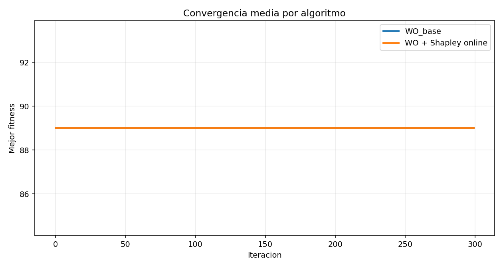
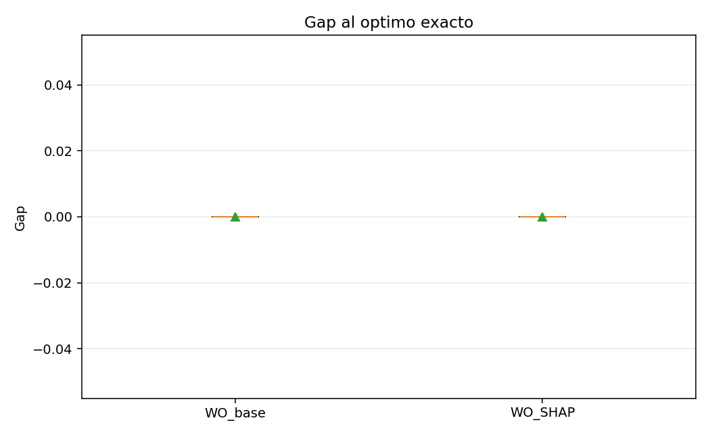
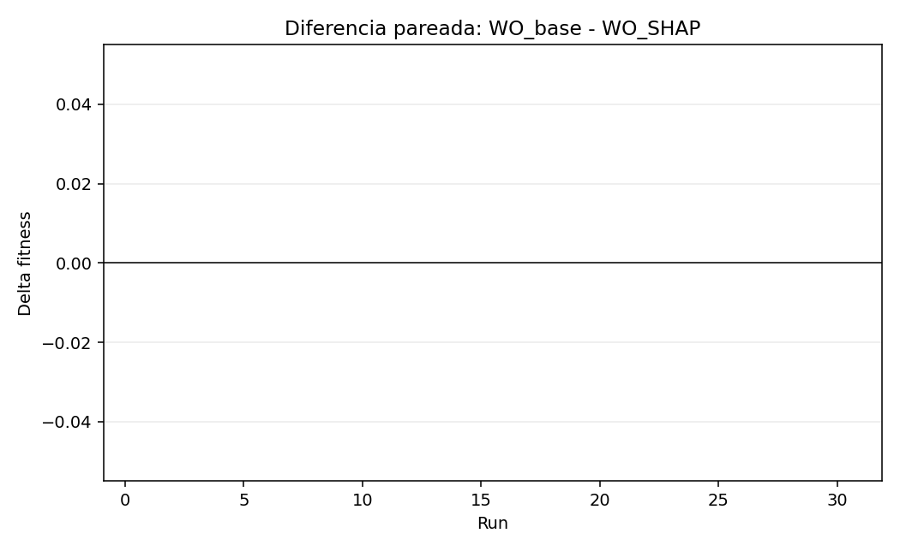
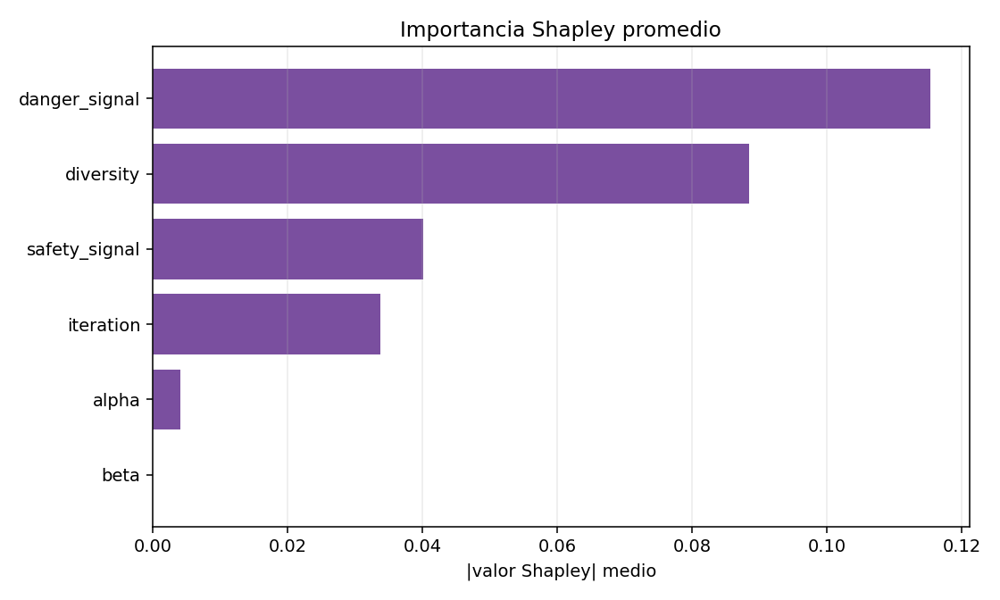

La comparacion usa mismas semillas, pero el controlador Shapley no consulta ni ejecuta WO_base durante su decision online.
Instancia fuente: 1.instancia_simple.txt. Subinstancia: primeros 6 clientes y 3 hubs.
Asignacion optima exacta: 0 1 1 1 2 0.
| run_id | seed | algorithm_base | controller_profile_base | uses_base_comparison_base | instance_base | n_hubs_base | n_clients_base | agents_base | iterations_base | best_fitness_base | gap_to_exact_optimum_base | exact_optimum_base | best_assignment_base | interventions_base | runtime_seconds_base | curve_base | events_base | shap_rows_base | algorithm_shap | controller_profile_shap | uses_base_comparison_shap | instance_shap | n_hubs_shap | n_clients_shap | agents_shap | iterations_shap | best_fitness_shap | gap_to_exact_optimum_shap | exact_optimum_shap | best_assignment_shap | interventions_shap | runtime_seconds_shap | curve_shap | events_shap | shap_rows_shap | delta_base_minus_shap | winner | base_gap_minus_shap_gap |
|---|---|---|---|---|---|---|---|---|---|---|---|---|---|---|---|---|---|---|---|---|---|---|---|---|---|---|---|---|---|---|---|---|---|---|---|---|---|---|
| 1 | 1234 | WO_base_tmlap | none | False | 1.instancia_simple_3h_6c | 3 | 6 | 30 | 300 | 89 | 0 | 89 | 0 1 1 1 2 0 | 0 | 2.04011 | [89.0, 89.0, 89.0, 89.0, 89.0, 89.0, 89.0, 89.0, 89.0, 89.0, 89.0, 89.0, 89.0, 89.0, 89.0, 89.0, 89.0, 89.0, 89.0, 89.0, 89.0, 89.0, 89.0, 89.0, 89.0, 89.0, 89.0, 89.0, 89.0, 89.0, 89.0, 89.0, 89.0, 89.0, 89.0, 89.0, 89.0, 89.0, 89.0, 89.0, 89.0, 89.0, 89.0, 89.0, 89.0, 89.0, 89.0, 89.0, 89.0, 89.0, 89.0, 89.0, 89.0, 89.0, 89.0, 89.0, 89.0, 89.0, 89.0, 89.0, 89.0, 89.0, 89.0, 89.0, 89.0, 89.0, 89.0, 89.0, 89.0, 89.0, 89.0, 89.0, 89.0, 89.0, 89.0, 89.0, 89.0, 89.0, 89.0, 89.0, 89.0, 89.0, 89.0, 89.0, 89.0, 89.0, 89.0, 89.0, 89.0, 89.0, 89.0, 89.0, 89.0, 89.0, 89.0, 89.0, 89.0, 89.0, 89.0, 89.0, ...] | [] | [] | WO_tmlap_online_shap | soft | False | 1.instancia_simple_3h_6c | 3 | 6 | 30 | 300 | 89 | 0 | 89 | 0 1 1 1 2 0 | 6 | 28.0903 | [89.0, 89.0, 89.0, 89.0, 89.0, 89.0, 89.0, 89.0, 89.0, 89.0, 89.0, 89.0, 89.0, 89.0, 89.0, 89.0, 89.0, 89.0, 89.0, 89.0, 89.0, 89.0, 89.0, 89.0, 89.0, 89.0, 89.0, 89.0, 89.0, 89.0, 89.0, 89.0, 89.0, 89.0, 89.0, 89.0, 89.0, 89.0, 89.0, 89.0, 89.0, 89.0, 89.0, 89.0, 89.0, 89.0, 89.0, 89.0, 89.0, 89.0, 89.0, 89.0, 89.0, 89.0, 89.0, 89.0, 89.0, 89.0, 89.0, 89.0, 89.0, 89.0, 89.0, 89.0, 89.0, 89.0, 89.0, 89.0, 89.0, 89.0, 89.0, 89.0, 89.0, 89.0, 89.0, 89.0, 89.0, 89.0, 89.0, 89.0, 89.0, 89.0, 89.0, 89.0, 89.0, 89.0, 89.0, 89.0, 89.0, 89.0, 89.0, 89.0, 89.0, 89.0, 89.0, 89.0, 89.0, 89.0, 89.0, 89.0, ...] | [{'event_id': 1, 'iteration': 40, 'profile': 'soft', 'reason': 'curve_stagnation_detected', 'action': 'random_reinjection', 'mode': 'random_aggressive', 'fraction': 0.3, 'selected_agents': '1 0 27 26 29 28 23 22 21', 'n_selected_agents': 9, 'improved_agents': 0, 'before_best': 89.0, 'after_best': 89.0, 'delta_best': 0.0, 'pre_fitness': 89.0, 'post_iteration': 50, 'post_status': 'neutral', 'post_fitness': 89.0, 'post_delta_fitness': 0.0, 'post_diversity': 0.036080411811786076, 'post_stagnation_length': 51, 'accepted_intervention': True, 'acceptance_reason': 'preserved_best_and_increased_diversity', 'adaptive_cooldown_until_iteration': 77, 'adaptive_cooldown_reason': 'neutral', 'recent_improvement_ratio': 0.0, 'uses_base_comparison': False, 'shap_target': 'stagnation_risk', 'shap_method': 'exact_shapley_wo_simulation', 'shap_predicted_stagnation_risk': 89.0, 'shap_dominant_feature': 'alpha', 'shap_dominant_label': 'Coef. exploracion (alpha)', 'shap_dominant_value': 0.0, 'alpha': 0.8666666666666667, 'beta': 0.975075573352886, 'danger_signal': -0.35295224219021487, 'safety_signal': 0.2610622919271173, 'raw_diversity': 0.540472649858543, 'diversity_norm': 0.11032351767361212, 'domain_scale': 4.898979485566356, 'iteration_norm': 0.13333333333333333, 'stagnation_repeated_iterations': 41, 'best_population_fitness': 89.0, 'mean_population_fitness': 89.16666666666667, 'worst_population_fitness': 92.0, 'candidate_population_best': 89.0, 'candidate_diversity': 0.8991729498587527, 'pre_diversity': 0.540472649858543}, {'event_id': 2, 'iteration': 77, 'profile': 'soft', 'reason': 'curve_stagnation_detected', 'action': 'random_reinjection', 'mode': 'random_aggressive', 'fraction': 0.3, 'selected_agents': '29 28 27 20 21 14 7 6 13', 'n_selected_agents': 9, 'improved_agents': 0, 'before_best': 89.0, 'after_best': 89.0, 'delta_best': 0.0, 'pre_fitness': 89.0, 'post_iteration': 87, 'post_status': 'neutral', 'post_fitness': 89.0, 'post_delta_fitness': 0.0, 'post_diversity': 0.6574582933384214, 'post_stagnation_length': 88, 'accepted_intervention': True, 'acceptance_reason': 'preserved_best_and_increased_diversity', 'adaptive_cooldown_until_iteration': 114, 'adaptive_cooldown_reason': 'neutral', 'recent_improvement_ratio': 0.0, 'uses_base_comparison': False, 'shap_target': 'stagnation_risk', 'shap_method': 'exact_shapley_wo_simulation', 'shap_predicted_stagnation_risk': 89.0, 'shap_dominant_feature': 'alpha', 'shap_dominant_label': 'Coef. exploracion (alpha)', 'shap_dominant_value': 0.0, 'alpha': 0.7433333333333334, 'beta': 0.919334075010081, 'danger_signal': -1.069865907860616, 'safety_signal': 0.32863391549950005, 'raw_diversity': 0.8229914918903362, 'diversity_norm': 0.16799243481526696, 'domain_scale': 4.898979485566356, 'iteration_norm': 0.25666666666666665, 'stagnation_repeated_iterations': 78, 'best_population_fitness': 89.0, 'mean_population_fitness': 91.6, 'worst_population_fitness': 95.0, 'candidate_population_best': 89.0, 'candidate_diversity': 1.0167981151773915, 'pre_diversity': 0.8229914918903362}, {'event_id': 3, 'iteration': 114, 'profile': 'soft', 'reason': 'curve_stagnation_detected', 'action': 'random_reinjection', 'mode': 'random_aggressive', 'fraction': 0.3, 'selected_agents': '29 28 27 26 25 24 23 22 21', 'n_selected_agents': 9, 'improved_agents': 0, 'before_best': 95.0, 'after_best': 91.0, 'delta_best': -4.0, 'pre_fitness': 95.0, 'post_iteration': 124, 'post_status': 'improved', 'post_fitness': 89.0, 'post_delta_fitness': 6.0, 'post_diversity': 0.9829878097204895, 'post_stagnation_length': 125, 'accepted_intervention': True, 'acceptance_reason': 'improved_population_best', 'adaptive_cooldown_until_iteration': 114, 'adaptive_cooldown_reason': 'neutral', 'recent_improvement_ratio': 0.0, 'uses_base_comparison': False, 'shap_target': 'stagnation_risk', 'shap_method': 'exact_shapley_wo_simulation', 'shap_predicted_stagnation_risk': 89.0, 'shap_dominant_feature': 'alpha', 'shap_dominant_label': 'Coef. exploracion (alpha)', 'shap_dominant_value': 0.0, 'alpha': 0.62, 'beta': 0.7685247834990176, 'danger_signal': 0.2188315674366507, 'safety_signal': 0.8322053557046367, 'raw_diversity': 0.03797216991854062, 'diversity_norm': 0.007751036727223767, 'domain_scale': 4.898979485566356, 'iteration_norm': 0.38, 'stagnation_repeated_iterations': 115, 'best_population_fitness': 95.0, 'mean_population_fitness': 95.0, 'worst_population_fitness': 95.0, 'candidate_population_best': 91.0, 'candidate_diversity': 0.7188500101958206, 'pre_diversity': 0.03797216991854062}, {'event_id': 4, 'iteration': 150, 'profile': 'soft', 'reason': 'curve_stagnation_detected', 'action': 'random_reinjection', 'mode': 'random_aggressive', 'fraction': 0.3, 'selected_agents': '29 28 27 26 25 24 23 22 21', 'n_selected_agents': 9, 'improved_agents': 0, 'before_best': 95.0, 'after_best': 89.0, 'delta_best': -6.0, 'pre_fitness': 95.0, 'post_iteration': 160, 'post_status': 'improved', 'post_fitness': 89.0, 'post_delta_fitness': 6.0, 'post_diversity': 0.9514423010092586, 'post_stagnation_length': 161, 'accepted_intervention': True, 'acceptance_reason': 'improved_population_best', 'adaptive_cooldown_until_iteration': 114, 'adaptive_cooldown_reason': 'neutral', 'recent_improvement_ratio': 0.0, 'uses_base_comparison': False, 'shap_target': 'stagnation_risk', 'shap_method': 'exact_shapley_wo_simulation', 'shap_predicted_stagnation_risk': 91.0, 'shap_dominant_feature': 'danger_signal', 'shap_dominant_label': 'Senal de peligro', 'shap_dominant_value': 0.5, 'alpha': 0.5, 'beta': 0.5, 'danger_signal': -0.9215321140265553, 'safety_signal': 0.4558626139319294, 'raw_diversity': 0.03637124017324203, 'diversity_norm': 0.007424248311388318, 'domain_scale': 4.898979485566356, 'iteration_norm': 0.5, 'stagnation_repeated_iterations': 151, 'best_population_fitness': 95.0, 'mean_population_fitness': 95.0, 'worst_population_fitness': 95.0, 'candidate_population_best': 89.0, 'candidate_diversity': 0.73562486928456, 'pre_diversity': 0.03637124017324203}, {'event_id': 5, 'iteration': 186, 'profile': 'soft', 'reason': 'curve_stagnation_detected', 'action': 'random_reinjection', 'mode': 'random_aggressive', 'fraction': 0.3, 'selected_agents': '1 27 6 19 28 26 24 23 21', 'n_selected_agents': 9, 'improved_agents': 0, 'before_best': 89.0, 'after_best': 89.0, 'delta_best': 0.0, 'pre_fitness': 89.0, 'post_iteration': 196, 'post_status': 'neutral', 'post_fitness': 89.0, 'post_delta_fitness': 0.0, 'post_diversity': 0.9020615337199225, 'post_stagnation_length': 197, 'accepted_intervention': True, 'acceptance_reason': 'preserved_best_and_increased_diversity', 'adaptive_cooldown_until_iteration': 223, 'adaptive_cooldown_reason': 'neutral', 'recent_improvement_ratio': 0.0, 'uses_base_comparison': False, 'shap_target': 'stagnation_risk', 'shap_method': 'exact_shapley_wo_simulation', 'shap_predicted_stagnation_risk': 89.0, 'shap_dominant_feature': 'alpha', 'shap_dominant_label': 'Coef. exploracion (alpha)', 'shap_dominant_value': 0.0, 'alpha': 0.38, 'beta': 0.23147521650098246, 'danger_signal': 0.3750138812902054, 'safety_signal': 0.81597840641475, 'raw_diversity': 0.58236127877203, 'diversity_norm': 0.11887399824551521, 'domain_scale': 4.898979485566356, 'iteration_norm': 0.62, 'stagnation_repeated_iterations': 187, 'best_population_fitness': 89.0, 'mean_population_fitness': 89.5, 'worst_population_fitness': 95.0, 'candidate_population_best': 89.0, 'candidate_diversity': 0.8847588447575483, 'pre_diversity': 0.58236127877203}, {'event_id': 6, 'iteration': 223, 'profile': 'soft', 'reason': 'curve_stagnation_detected', 'action': 'random_reinjection', 'mode': 'random_aggressive', 'fraction': 0.3, 'selected_agents': '29 28 27 26 25 24 23 22 21', 'n_selected_agents': 9, 'improved_agents': 0, 'before_best': 89.0, 'after_best': 89.0, 'delta_best': 0.0, 'pre_fitness': 89.0, 'post_iteration': 233, 'post_status': 'neutral', 'post_fitness': 89.0, 'post_delta_fitness': 0.0, 'post_diversity': 0.813845680111846, 'post_stagnation_length': 234, 'accepted_intervention': True, 'acceptance_reason': 'preserved_best_and_increased_diversity', 'adaptive_cooldown_until_iteration': 260, 'adaptive_cooldown_reason': 'neutral', 'recent_improvement_ratio': 0.0, 'uses_base_comparison': False, 'shap_target': 'stagnation_risk', 'shap_method': 'exact_shapley_wo_simulation', 'shap_predicted_stagnation_risk': 89.0, 'shap_dominant_feature': 'alpha', 'shap_dominant_label': 'Coef. exploracion (alpha)', 'shap_dominant_value': 0.0, 'alpha': 0.2566666666666667, 'beta': 0.08066592498991898, 'danger_signal': 0.44271841396718165, 'safety_signal': 0.033689659649008386, 'raw_diversity': 0.5605096497869138, 'diversity_norm': 0.11441355315700306, 'domain_scale': 4.898979485566356, 'iteration_norm': 0.7433333333333333, 'stagnation_repeated_iterations': 224, 'best_population_fitness': 89.0, 'mean_population_fitness': 89.2, 'worst_population_fitness': 95.0, 'candidate_population_best': 89.0, 'candidate_diversity': 0.8319596679569548, 'pre_diversity': 0.5605096497869138}] | [{'iteration': 40, 'profile': 'soft', 'target': 'stagnation_risk', 'method': 'exact_shapley_wo_simulation', 'n_coalitions': 64, 'expected_value': 89.0, 'predicted_value': 89.0, 'dominant_feature': 'alpha', 'dominant_label': 'Coef. exploracion (alpha)', 'dominant_value': 0.0, 'action': 'random_reinjection', 'mode': 'random_aggressive', 'fraction': 0.3, 'feature_alpha': 0.8666666666666667, 'feature_beta': 0.975075573352886, 'feature_danger_signal': 0.41176193945244627, 'feature_safety_signal': 0.2610622919271173, 'feature_diversity': 0.11032351767361212, 'feature_iteration': 0.13333333333333333, 'shap_alpha': 0.0, 'shap_beta': 0.0, 'shap_danger_signal': 0.0, 'shap_safety_signal': 0.0, 'shap_diversity': 0.0, 'shap_iteration': 0.0}, {'iteration': 77, 'profile': 'soft', 'target': 'stagnation_risk', 'method': 'exact_shapley_wo_simulation', 'n_coalitions': 64, 'expected_value': 89.0, 'predicted_value': 89.0, 'dominant_feature': 'alpha', 'dominant_label': 'Coef. exploracion (alpha)', 'dominant_value': 0.0, 'action': 'random_reinjection', 'mode': 'random_aggressive', 'fraction': 0.3, 'feature_alpha': 0.7433333333333334, 'feature_beta': 0.919334075010081, 'feature_danger_signal': 0.23253352303484598, 'feature_safety_signal': 0.32863391549950005, 'feature_diversity': 0.16799243481526696, 'feature_iteration': 0.25666666666666665, 'shap_alpha': 0.0, 'shap_beta': 0.0, 'shap_danger_signal': 0.0, 'shap_safety_signal': 0.0, 'shap_diversity': 0.0, 'shap_iteration': 0.0}, {'iteration': 114, 'profile': 'soft', 'target': 'stagnation_risk', 'method': 'exact_shapley_wo_simulation', 'n_coalitions': 64, 'expected_value': 89.0, 'predicted_value': 89.0, 'dominant_feature': 'alpha', 'dominant_label': 'Coef. exploracion (alpha)', 'dominant_value': 0.0, 'action': 'random_reinjection', 'mode': 'random_aggressive', 'fraction': 0.3, 'feature_alpha': 0.62, 'feature_beta': 0.7685247834990176, 'feature_danger_signal': 0.5547078918591627, 'feature_safety_signal': 0.8322053557046367, 'feature_diversity': 0.007751036727223767, 'feature_iteration': 0.38, 'shap_alpha': 0.0, 'shap_beta': 0.0, 'shap_danger_signal': 0.0, 'shap_safety_signal': 0.0, 'shap_diversity': 0.0, 'shap_iteration': 0.0}, {'iteration': 150, 'profile': 'soft', 'target': 'stagnation_risk', 'method': 'exact_shapley_wo_simulation', 'n_coalitions': 64, 'expected_value': 89.0, 'predicted_value': 91.0, 'dominant_feature': 'danger_signal', 'dominant_label': 'Senal de peligro', 'dominant_value': 0.5, 'action': 'random_reinjection', 'mode': 'random_aggressive', 'fraction': 0.3, 'feature_alpha': 0.5, 'feature_beta': 0.5, 'feature_danger_signal': 0.26961697149336117, 'feature_safety_signal': 0.4558626139319294, 'feature_diversity': 0.007424248311388318, 'feature_iteration': 0.5, 'shap_alpha': 0.0, 'shap_beta': 0.0, 'shap_danger_signal': 0.5, 'shap_safety_signal': 0.5, 'shap_diversity': 0.5, 'shap_iteration': 0.5}, {'iteration': 186, 'profile': 'soft', 'target': 'stagnation_risk', 'method': 'exact_shapley_wo_simulation', 'n_coalitions': 64, 'expected_value': 89.0, 'predicted_value': 89.0, 'dominant_feature': 'alpha', 'dominant_label': 'Coef. exploracion (alpha)', 'dominant_value': 0.0, 'action': 'random_reinjection', 'mode': 'random_aggressive', 'fraction': 0.3, 'feature_alpha': 0.38, 'feature_beta': 0.23147521650098246, 'feature_danger_signal': 0.5937534703225513, 'feature_safety_signal': 0.81597840641475, 'feature_diversity': 0.11887399824551521, 'feature_iteration': 0.62, 'shap_alpha': 0.0, 'shap_beta': 0.0, 'shap_danger_signal': 0.0, 'shap_safety_signal': 0.0, 'shap_diversity': 0.0, 'shap_iteration': 0.0}, {'iteration': 223, 'profile': 'soft', 'target': 'stagnation_risk', 'method': 'exact_shapley_wo_simulation', 'n_coalitions': 64, 'expected_value': 89.0, 'predicted_value': 89.0, 'dominant_feature': 'alpha', 'dominant_label': 'Coef. exploracion (alpha)', 'dominant_value': 0.0, 'action': 'random_reinjection', 'mode': 'random_aggressive', 'fraction': 0.3, 'feature_alpha': 0.2566666666666667, 'feature_beta': 0.08066592498991898, 'feature_danger_signal': 0.6106796034917954, 'feature_safety_signal': 0.033689659649008386, 'feature_diversity': 0.11441355315700306, 'feature_iteration': 0.7433333333333333, 'shap_alpha': 0.0, 'shap_beta': 0.0, 'shap_danger_signal': 0.0, 'shap_safety_signal': 0.0, 'shap_diversity': 0.0, 'shap_iteration': 0.0}] | 0 | tie | 0 |
| 2 | 1235 | WO_base_tmlap | none | False | 1.instancia_simple_3h_6c | 3 | 6 | 30 | 300 | 89 | 0 | 89 | 0 1 1 1 2 0 | 0 | 2.51347 | [89.0, 89.0, 89.0, 89.0, 89.0, 89.0, 89.0, 89.0, 89.0, 89.0, 89.0, 89.0, 89.0, 89.0, 89.0, 89.0, 89.0, 89.0, 89.0, 89.0, 89.0, 89.0, 89.0, 89.0, 89.0, 89.0, 89.0, 89.0, 89.0, 89.0, 89.0, 89.0, 89.0, 89.0, 89.0, 89.0, 89.0, 89.0, 89.0, 89.0, 89.0, 89.0, 89.0, 89.0, 89.0, 89.0, 89.0, 89.0, 89.0, 89.0, 89.0, 89.0, 89.0, 89.0, 89.0, 89.0, 89.0, 89.0, 89.0, 89.0, 89.0, 89.0, 89.0, 89.0, 89.0, 89.0, 89.0, 89.0, 89.0, 89.0, 89.0, 89.0, 89.0, 89.0, 89.0, 89.0, 89.0, 89.0, 89.0, 89.0, 89.0, 89.0, 89.0, 89.0, 89.0, 89.0, 89.0, 89.0, 89.0, 89.0, 89.0, 89.0, 89.0, 89.0, 89.0, 89.0, 89.0, 89.0, 89.0, 89.0, ...] | [] | [] | WO_tmlap_online_shap | soft | False | 1.instancia_simple_3h_6c | 3 | 6 | 30 | 300 | 89 | 0 | 89 | 0 1 1 1 2 0 | 6 | 26.4664 | [89.0, 89.0, 89.0, 89.0, 89.0, 89.0, 89.0, 89.0, 89.0, 89.0, 89.0, 89.0, 89.0, 89.0, 89.0, 89.0, 89.0, 89.0, 89.0, 89.0, 89.0, 89.0, 89.0, 89.0, 89.0, 89.0, 89.0, 89.0, 89.0, 89.0, 89.0, 89.0, 89.0, 89.0, 89.0, 89.0, 89.0, 89.0, 89.0, 89.0, 89.0, 89.0, 89.0, 89.0, 89.0, 89.0, 89.0, 89.0, 89.0, 89.0, 89.0, 89.0, 89.0, 89.0, 89.0, 89.0, 89.0, 89.0, 89.0, 89.0, 89.0, 89.0, 89.0, 89.0, 89.0, 89.0, 89.0, 89.0, 89.0, 89.0, 89.0, 89.0, 89.0, 89.0, 89.0, 89.0, 89.0, 89.0, 89.0, 89.0, 89.0, 89.0, 89.0, 89.0, 89.0, 89.0, 89.0, 89.0, 89.0, 89.0, 89.0, 89.0, 89.0, 89.0, 89.0, 89.0, 89.0, 89.0, 89.0, 89.0, ...] | [{'event_id': 1, 'iteration': 40, 'profile': 'soft', 'reason': 'curve_stagnation_detected', 'action': 'random_reinjection', 'mode': 'random_aggressive', 'fraction': 0.3, 'selected_agents': '21 1 19 26 12 27 24 25 22', 'n_selected_agents': 9, 'improved_agents': 0, 'before_best': 89.0, 'after_best': 89.0, 'delta_best': 0.0, 'pre_fitness': 89.0, 'post_iteration': 50, 'post_status': 'neutral', 'post_fitness': 89.0, 'post_delta_fitness': 0.0, 'post_diversity': 0.03760070306198135, 'post_stagnation_length': 51, 'accepted_intervention': True, 'acceptance_reason': 'preserved_best_and_increased_diversity', 'adaptive_cooldown_until_iteration': 77, 'adaptive_cooldown_reason': 'neutral', 'recent_improvement_ratio': 0.0, 'uses_base_comparison': False, 'shap_target': 'stagnation_risk', 'shap_method': 'exact_shapley_wo_simulation', 'shap_predicted_stagnation_risk': 89.0, 'shap_dominant_feature': 'alpha', 'shap_dominant_label': 'Coef. exploracion (alpha)', 'shap_dominant_value': 0.0, 'alpha': 0.8666666666666667, 'beta': 0.975075573352886, 'danger_signal': 0.39429527619590343, 'safety_signal': 0.6965843124697232, 'raw_diversity': 0.31213950804384943, 'diversity_norm': 0.06371521027256638, 'domain_scale': 4.898979485566356, 'iteration_norm': 0.13333333333333333, 'stagnation_repeated_iterations': 41, 'best_population_fitness': 89.0, 'mean_population_fitness': 89.5, 'worst_population_fitness': 95.0, 'candidate_population_best': 89.0, 'candidate_diversity': 0.7330482524026948, 'pre_diversity': 0.31213950804384943}, {'event_id': 2, 'iteration': 77, 'profile': 'soft', 'reason': 'curve_stagnation_detected', 'action': 'random_reinjection', 'mode': 'random_aggressive', 'fraction': 0.3, 'selected_agents': '26 19 28 27 20 29 21 6 13', 'n_selected_agents': 9, 'improved_agents': 0, 'before_best': 89.0, 'after_best': 89.0, 'delta_best': 0.0, 'pre_fitness': 89.0, 'post_iteration': 87, 'post_status': 'neutral', 'post_fitness': 89.0, 'post_delta_fitness': 0.0, 'post_diversity': 1.0506337246578137, 'post_stagnation_length': 88, 'accepted_intervention': True, 'acceptance_reason': 'preserved_best_and_increased_diversity', 'adaptive_cooldown_until_iteration': 114, 'adaptive_cooldown_reason': 'neutral', 'recent_improvement_ratio': 0.0, 'uses_base_comparison': False, 'shap_target': 'stagnation_risk', 'shap_method': 'exact_shapley_wo_simulation', 'shap_predicted_stagnation_risk': 89.0, 'shap_dominant_feature': 'alpha', 'shap_dominant_label': 'Coef. exploracion (alpha)', 'shap_dominant_value': 0.0, 'alpha': 0.7433333333333334, 'beta': 0.919334075010081, 'danger_signal': 0.8577016536207617, 'safety_signal': 0.589348279219283, 'raw_diversity': 1.017137702897236, 'diversity_norm': 0.20762236418706861, 'domain_scale': 4.898979485566356, 'iteration_norm': 0.25666666666666665, 'stagnation_repeated_iterations': 78, 'best_population_fitness': 89.0, 'mean_population_fitness': 93.06666666666666, 'worst_population_fitness': 97.0, 'candidate_population_best': 89.0, 'candidate_diversity': 1.1009790762719927, 'pre_diversity': 1.017137702897236}, {'event_id': 3, 'iteration': 114, 'profile': 'soft', 'reason': 'curve_stagnation_detected', 'action': 'random_reinjection', 'mode': 'random_aggressive', 'fraction': 0.3, 'selected_agents': '28 27 20 6 0 13 7 24 10', 'n_selected_agents': 9, 'improved_agents': 0, 'before_best': 89.0, 'after_best': 89.0, 'delta_best': 0.0, 'pre_fitness': 89.0, 'post_iteration': 124, 'post_status': 'neutral', 'post_fitness': 89.0, 'post_delta_fitness': 0.0, 'post_diversity': 1.036054388620278, 'post_stagnation_length': 125, 'accepted_intervention': True, 'acceptance_reason': 'preserved_best_and_increased_diversity', 'adaptive_cooldown_until_iteration': 151, 'adaptive_cooldown_reason': 'neutral', 'recent_improvement_ratio': 0.0, 'uses_base_comparison': False, 'shap_target': 'stagnation_risk', 'shap_method': 'exact_shapley_wo_simulation', 'shap_predicted_stagnation_risk': 89.0, 'shap_dominant_feature': 'alpha', 'shap_dominant_label': 'Coef. exploracion (alpha)', 'shap_dominant_value': 0.0, 'alpha': 0.62, 'beta': 0.7685247834990176, 'danger_signal': -0.47349001678015507, 'safety_signal': 0.8061778864142953, 'raw_diversity': 0.6988053393480638, 'diversity_norm': 0.14264304257793337, 'domain_scale': 4.898979485566356, 'iteration_norm': 0.38, 'stagnation_repeated_iterations': 115, 'best_population_fitness': 89.0, 'mean_population_fitness': 90.9, 'worst_population_fitness': 95.0, 'candidate_population_best': 89.0, 'candidate_diversity': 0.757726783999752, 'pre_diversity': 0.6988053393480638}, {'event_id': 4, 'iteration': 151, 'profile': 'soft', 'reason': 'curve_stagnation_detected', 'action': 'random_reinjection', 'mode': 'random_aggressive', 'fraction': 0.3, 'selected_agents': '7 28 8 12 27 29 23 22 21', 'n_selected_agents': 9, 'improved_agents': 0, 'before_best': 89.0, 'after_best': 89.0, 'delta_best': 0.0, 'pre_fitness': 89.0, 'post_iteration': 161, 'post_status': 'neutral', 'post_fitness': 89.0, 'post_delta_fitness': 0.0, 'post_diversity': 0.10239328471643301, 'post_stagnation_length': 162, 'accepted_intervention': True, 'acceptance_reason': 'preserved_best_and_increased_diversity', 'adaptive_cooldown_until_iteration': 188, 'adaptive_cooldown_reason': 'neutral', 'recent_improvement_ratio': 0.0, 'uses_base_comparison': False, 'shap_target': 'stagnation_risk', 'shap_method': 'exact_shapley_wo_simulation', 'shap_predicted_stagnation_risk': 89.0, 'shap_dominant_feature': 'alpha', 'shap_dominant_label': 'Coef. exploracion (alpha)', 'shap_dominant_value': 0.0, 'alpha': 0.4966666666666667, 'beta': 0.49166743818588066, 'danger_signal': 0.49432663558953255, 'safety_signal': 0.1640377490457139, 'raw_diversity': 0.28575197679910075, 'diversity_norm': 0.058328878012451166, 'domain_scale': 4.898979485566356, 'iteration_norm': 0.5033333333333333, 'stagnation_repeated_iterations': 152, 'best_population_fitness': 89.0, 'mean_population_fitness': 89.46666666666667, 'worst_population_fitness': 95.0, 'candidate_population_best': 89.0, 'candidate_diversity': 0.720036809340078, 'pre_diversity': 0.28575197679910075}, {'event_id': 5, 'iteration': 188, 'profile': 'soft', 'reason': 'curve_stagnation_detected', 'action': 'random_reinjection', 'mode': 'random_aggressive', 'fraction': 0.3, 'selected_agents': '29 28 27 6 0 13 7 10 9', 'n_selected_agents': 9, 'improved_agents': 0, 'before_best': 89.0, 'after_best': 89.0, 'delta_best': 0.0, 'pre_fitness': 89.0, 'post_iteration': 198, 'post_status': 'neutral', 'post_fitness': 89.0, 'post_delta_fitness': 0.0, 'post_diversity': 0.07870738550462096, 'post_stagnation_length': 199, 'accepted_intervention': True, 'acceptance_reason': 'preserved_best_and_increased_diversity', 'adaptive_cooldown_until_iteration': 225, 'adaptive_cooldown_reason': 'neutral', 'recent_improvement_ratio': 0.0, 'uses_base_comparison': False, 'shap_target': 'stagnation_risk', 'shap_method': 'exact_shapley_wo_simulation', 'shap_predicted_stagnation_risk': 89.0, 'shap_dominant_feature': 'alpha', 'shap_dominant_label': 'Coef. exploracion (alpha)', 'shap_dominant_value': 0.0, 'alpha': 0.3733333333333333, 'beta': 0.21982839774068252, 'danger_signal': -0.2195043626097279, 'safety_signal': 0.6704538760150683, 'raw_diversity': 0.9366974339921886, 'diversity_norm': 0.1912025630545991, 'domain_scale': 4.898979485566356, 'iteration_norm': 0.6266666666666667, 'stagnation_repeated_iterations': 189, 'best_population_fitness': 89.0, 'mean_population_fitness': 91.73333333333333, 'worst_population_fitness': 95.0, 'candidate_population_best': 89.0, 'candidate_diversity': 1.032113244362504, 'pre_diversity': 0.9366974339921886}, {'event_id': 6, 'iteration': 225, 'profile': 'soft', 'reason': 'curve_stagnation_detected', 'action': 'random_reinjection', 'mode': 'random_aggressive', 'fraction': 0.3, 'selected_agents': '29 27 7 6 0 13 11 10 9', 'n_selected_agents': 9, 'improved_agents': 0, 'before_best': 89.0, 'after_best': 89.0, 'delta_best': 0.0, 'pre_fitness': 89.0, 'post_iteration': 235, 'post_status': 'neutral', 'post_fitness': 89.0, 'post_delta_fitness': 0.0, 'post_diversity': 0.8422617316462468, 'post_stagnation_length': 236, 'accepted_intervention': True, 'acceptance_reason': 'preserved_best_and_increased_diversity', 'adaptive_cooldown_until_iteration': 262, 'adaptive_cooldown_reason': 'neutral', 'recent_improvement_ratio': 0.0, 'uses_base_comparison': False, 'shap_target': 'stagnation_risk', 'shap_method': 'exact_shapley_wo_simulation', 'shap_predicted_stagnation_risk': 89.0, 'shap_dominant_feature': 'alpha', 'shap_dominant_label': 'Coef. exploracion (alpha)', 'shap_dominant_value': 0.0, 'alpha': 0.25, 'beta': 0.07585818002124345, 'danger_signal': -0.36288556139542816, 'safety_signal': 0.9843103546794807, 'raw_diversity': 0.8230408135279712, 'diversity_norm': 0.16800250255239066, 'domain_scale': 4.898979485566356, 'iteration_norm': 0.75, 'stagnation_repeated_iterations': 226, 'best_population_fitness': 89.0, 'mean_population_fitness': 91.2, 'worst_population_fitness': 97.0, 'candidate_population_best': 89.0, 'candidate_diversity': 0.9466024835250803, 'pre_diversity': 0.8230408135279712}] | [{'iteration': 40, 'profile': 'soft', 'target': 'stagnation_risk', 'method': 'exact_shapley_wo_simulation', 'n_coalitions': 64, 'expected_value': 89.0, 'predicted_value': 89.0, 'dominant_feature': 'alpha', 'dominant_label': 'Coef. exploracion (alpha)', 'dominant_value': 0.0, 'action': 'random_reinjection', 'mode': 'random_aggressive', 'fraction': 0.3, 'feature_alpha': 0.8666666666666667, 'feature_beta': 0.975075573352886, 'feature_danger_signal': 0.5985738190489759, 'feature_safety_signal': 0.6965843124697232, 'feature_diversity': 0.06371521027256638, 'feature_iteration': 0.13333333333333333, 'shap_alpha': 0.0, 'shap_beta': 0.0, 'shap_danger_signal': 0.0, 'shap_safety_signal': 0.0, 'shap_diversity': 0.0, 'shap_iteration': 0.0}, {'iteration': 77, 'profile': 'soft', 'target': 'stagnation_risk', 'method': 'exact_shapley_wo_simulation', 'n_coalitions': 64, 'expected_value': 89.0, 'predicted_value': 89.0, 'dominant_feature': 'alpha', 'dominant_label': 'Coef. exploracion (alpha)', 'dominant_value': 0.0, 'action': 'random_reinjection', 'mode': 'random_aggressive', 'fraction': 0.3, 'feature_alpha': 0.7433333333333334, 'feature_beta': 0.919334075010081, 'feature_danger_signal': 0.7144254134051904, 'feature_safety_signal': 0.589348279219283, 'feature_diversity': 0.20762236418706861, 'feature_iteration': 0.25666666666666665, 'shap_alpha': 0.0, 'shap_beta': 0.0, 'shap_danger_signal': 0.0, 'shap_safety_signal': 0.0, 'shap_diversity': 0.0, 'shap_iteration': 0.0}, {'iteration': 114, 'profile': 'soft', 'target': 'stagnation_risk', 'method': 'exact_shapley_wo_simulation', 'n_coalitions': 64, 'expected_value': 89.0, 'predicted_value': 89.0, 'dominant_feature': 'alpha', 'dominant_label': 'Coef. exploracion (alpha)', 'dominant_value': 0.0, 'action': 'random_reinjection', 'mode': 'random_aggressive', 'fraction': 0.3, 'feature_alpha': 0.62, 'feature_beta': 0.7685247834990176, 'feature_danger_signal': 0.38162749580496125, 'feature_safety_signal': 0.8061778864142953, 'feature_diversity': 0.14264304257793337, 'feature_iteration': 0.38, 'shap_alpha': 0.0, 'shap_beta': 0.0, 'shap_danger_signal': 0.0, 'shap_safety_signal': 0.0, 'shap_diversity': 0.0, 'shap_iteration': 0.0}, {'iteration': 151, 'profile': 'soft', 'target': 'stagnation_risk', 'method': 'exact_shapley_wo_simulation', 'n_coalitions': 64, 'expected_value': 89.0, 'predicted_value': 89.0, 'dominant_feature': 'alpha', 'dominant_label': 'Coef. exploracion (alpha)', 'dominant_value': 0.0, 'action': 'random_reinjection', 'mode': 'random_aggressive', 'fraction': 0.3, 'feature_alpha': 0.4966666666666667, 'feature_beta': 0.49166743818588066, 'feature_danger_signal': 0.6235816588973832, 'feature_safety_signal': 0.1640377490457139, 'feature_diversity': 0.058328878012451166, 'feature_iteration': 0.5033333333333333, 'shap_alpha': 0.0, 'shap_beta': 0.0, 'shap_danger_signal': 0.0, 'shap_safety_signal': 0.0, 'shap_diversity': 0.0, 'shap_iteration': 0.0}, {'iteration': 188, 'profile': 'soft', 'target': 'stagnation_risk', 'method': 'exact_shapley_wo_simulation', 'n_coalitions': 64, 'expected_value': 89.0, 'predicted_value': 89.0, 'dominant_feature': 'alpha', 'dominant_label': 'Coef. exploracion (alpha)', 'dominant_value': 0.0, 'action': 'random_reinjection', 'mode': 'random_aggressive', 'fraction': 0.3, 'feature_alpha': 0.3733333333333333, 'feature_beta': 0.21982839774068252, 'feature_danger_signal': 0.445123909347568, 'feature_safety_signal': 0.6704538760150683, 'feature_diversity': 0.1912025630545991, 'feature_iteration': 0.6266666666666667, 'shap_alpha': 0.0, 'shap_beta': 0.0, 'shap_danger_signal': 0.0, 'shap_safety_signal': 0.0, 'shap_diversity': 0.0, 'shap_iteration': 0.0}, {'iteration': 225, 'profile': 'soft', 'target': 'stagnation_risk', 'method': 'exact_shapley_wo_simulation', 'n_coalitions': 64, 'expected_value': 89.0, 'predicted_value': 89.0, 'dominant_feature': 'alpha', 'dominant_label': 'Coef. exploracion (alpha)', 'dominant_value': 0.0, 'action': 'random_reinjection', 'mode': 'random_aggressive', 'fraction': 0.3, 'feature_alpha': 0.25, 'feature_beta': 0.07585818002124345, 'feature_danger_signal': 0.40927860965114293, 'feature_safety_signal': 0.9843103546794807, 'feature_diversity': 0.16800250255239066, 'feature_iteration': 0.75, 'shap_alpha': 0.0, 'shap_beta': 0.0, 'shap_danger_signal': 0.0, 'shap_safety_signal': 0.0, 'shap_diversity': 0.0, 'shap_iteration': 0.0}] | 0 | tie | 0 |
| 3 | 1236 | WO_base_tmlap | none | False | 1.instancia_simple_3h_6c | 3 | 6 | 30 | 300 | 89 | 0 | 89 | 0 1 1 1 2 0 | 0 | 3.17936 | [89.0, 89.0, 89.0, 89.0, 89.0, 89.0, 89.0, 89.0, 89.0, 89.0, 89.0, 89.0, 89.0, 89.0, 89.0, 89.0, 89.0, 89.0, 89.0, 89.0, 89.0, 89.0, 89.0, 89.0, 89.0, 89.0, 89.0, 89.0, 89.0, 89.0, 89.0, 89.0, 89.0, 89.0, 89.0, 89.0, 89.0, 89.0, 89.0, 89.0, 89.0, 89.0, 89.0, 89.0, 89.0, 89.0, 89.0, 89.0, 89.0, 89.0, 89.0, 89.0, 89.0, 89.0, 89.0, 89.0, 89.0, 89.0, 89.0, 89.0, 89.0, 89.0, 89.0, 89.0, 89.0, 89.0, 89.0, 89.0, 89.0, 89.0, 89.0, 89.0, 89.0, 89.0, 89.0, 89.0, 89.0, 89.0, 89.0, 89.0, 89.0, 89.0, 89.0, 89.0, 89.0, 89.0, 89.0, 89.0, 89.0, 89.0, 89.0, 89.0, 89.0, 89.0, 89.0, 89.0, 89.0, 89.0, 89.0, 89.0, ...] | [] | [] | WO_tmlap_online_shap | soft | False | 1.instancia_simple_3h_6c | 3 | 6 | 30 | 300 | 89 | 0 | 89 | 0 1 1 1 2 0 | 6 | 26.3418 | [89.0, 89.0, 89.0, 89.0, 89.0, 89.0, 89.0, 89.0, 89.0, 89.0, 89.0, 89.0, 89.0, 89.0, 89.0, 89.0, 89.0, 89.0, 89.0, 89.0, 89.0, 89.0, 89.0, 89.0, 89.0, 89.0, 89.0, 89.0, 89.0, 89.0, 89.0, 89.0, 89.0, 89.0, 89.0, 89.0, 89.0, 89.0, 89.0, 89.0, 89.0, 89.0, 89.0, 89.0, 89.0, 89.0, 89.0, 89.0, 89.0, 89.0, 89.0, 89.0, 89.0, 89.0, 89.0, 89.0, 89.0, 89.0, 89.0, 89.0, 89.0, 89.0, 89.0, 89.0, 89.0, 89.0, 89.0, 89.0, 89.0, 89.0, 89.0, 89.0, 89.0, 89.0, 89.0, 89.0, 89.0, 89.0, 89.0, 89.0, 89.0, 89.0, 89.0, 89.0, 89.0, 89.0, 89.0, 89.0, 89.0, 89.0, 89.0, 89.0, 89.0, 89.0, 89.0, 89.0, 89.0, 89.0, 89.0, 89.0, ...] | [{'event_id': 1, 'iteration': 40, 'profile': 'soft', 'reason': 'curve_stagnation_detected', 'action': 'random_reinjection', 'mode': 'random_aggressive', 'fraction': 0.3, 'selected_agents': '29 28 27 26 25 24 23 22 21', 'n_selected_agents': 9, 'improved_agents': 0, 'before_best': 95.0, 'after_best': 89.0, 'delta_best': -6.0, 'pre_fitness': 95.0, 'post_iteration': 50, 'post_status': 'improved', 'post_fitness': 89.0, 'post_delta_fitness': 6.0, 'post_diversity': 0.8829937801923878, 'post_stagnation_length': 51, 'accepted_intervention': True, 'acceptance_reason': 'improved_population_best', 'adaptive_cooldown_until_iteration': nan, 'adaptive_cooldown_reason': '', 'recent_improvement_ratio': 0.0, 'uses_base_comparison': False, 'shap_target': 'stagnation_risk', 'shap_method': 'exact_shapley_wo_simulation', 'shap_predicted_stagnation_risk': 89.0, 'shap_dominant_feature': 'diversity', 'shap_dominant_label': 'Diversidad poblacional', 'shap_dominant_value': 0.6666666666666666, 'alpha': 0.8666666666666667, 'beta': 0.975075573352886, 'danger_signal': 0.6063778264701447, 'safety_signal': 0.8893105022800455, 'raw_diversity': 0.03596464876707472, 'diversity_norm': 0.007341253188145767, 'domain_scale': 4.898979485566356, 'iteration_norm': 0.13333333333333333, 'stagnation_repeated_iterations': 41, 'best_population_fitness': 95.0, 'mean_population_fitness': 95.0, 'worst_population_fitness': 95.0, 'candidate_population_best': 89.0, 'candidate_diversity': 0.7249798035038508, 'pre_diversity': 0.03596464876707472}, {'event_id': 2, 'iteration': 76, 'profile': 'soft', 'reason': 'curve_stagnation_detected', 'action': 'random_reinjection', 'mode': 'random_aggressive', 'fraction': 0.3, 'selected_agents': '26 19 28 27 20 29 21 6 13', 'n_selected_agents': 9, 'improved_agents': 0, 'before_best': 89.0, 'after_best': 89.0, 'delta_best': 0.0, 'pre_fitness': 89.0, 'post_iteration': 86, 'post_status': 'neutral', 'post_fitness': 89.0, 'post_delta_fitness': 0.0, 'post_diversity': 0.66192452551711, 'post_stagnation_length': 87, 'accepted_intervention': True, 'acceptance_reason': 'preserved_best_and_increased_diversity', 'adaptive_cooldown_until_iteration': 113, 'adaptive_cooldown_reason': 'neutral', 'recent_improvement_ratio': 0.0, 'uses_base_comparison': False, 'shap_target': 'stagnation_risk', 'shap_method': 'exact_shapley_wo_simulation', 'shap_predicted_stagnation_risk': 89.0, 'shap_dominant_feature': 'alpha', 'shap_dominant_label': 'Coef. exploracion (alpha)', 'shap_dominant_value': 0.0, 'alpha': 0.7466666666666666, 'beta': 0.921771740548216, 'danger_signal': -0.11018098411837603, 'safety_signal': 0.013568015765157537, 'raw_diversity': 1.0164586954665629, 'diversity_norm': 0.20748376237567634, 'domain_scale': 4.898979485566356, 'iteration_norm': 0.25333333333333335, 'stagnation_repeated_iterations': 77, 'best_population_fitness': 89.0, 'mean_population_fitness': 93.06666666666666, 'worst_population_fitness': 97.0, 'candidate_population_best': 89.0, 'candidate_diversity': 1.0791972719851786, 'pre_diversity': 1.0164586954665629}, {'event_id': 3, 'iteration': 113, 'profile': 'soft', 'reason': 'curve_stagnation_detected', 'action': 'random_reinjection', 'mode': 'random_aggressive', 'fraction': 0.3, 'selected_agents': '29 27 20 6 0 13 7 23 18', 'n_selected_agents': 9, 'improved_agents': 0, 'before_best': 89.0, 'after_best': 89.0, 'delta_best': 0.0, 'pre_fitness': 89.0, 'post_iteration': 123, 'post_status': 'rejected_by_acceptance', 'post_fitness': nan, 'post_delta_fitness': nan, 'post_diversity': nan, 'post_stagnation_length': nan, 'accepted_intervention': False, 'acceptance_reason': 'rejected_by_conditional_acceptance', 'adaptive_cooldown_until_iteration': 113, 'adaptive_cooldown_reason': 'neutral', 'recent_improvement_ratio': 0.0, 'uses_base_comparison': False, 'shap_target': 'stagnation_risk', 'shap_method': 'exact_shapley_wo_simulation', 'shap_predicted_stagnation_risk': 89.0, 'shap_dominant_feature': 'alpha', 'shap_dominant_label': 'Coef. exploracion (alpha)', 'shap_dominant_value': 0.0, 'alpha': 0.6233333333333333, 'beta': 0.7744014530142785, 'danger_signal': 0.9495675156612647, 'safety_signal': 0.8622290742959559, 'raw_diversity': 0.9171905134069251, 'diversity_norm': 0.18722072956402502, 'domain_scale': 4.898979485566356, 'iteration_norm': 0.37666666666666665, 'stagnation_repeated_iterations': 114, 'best_population_fitness': 89.0, 'mean_population_fitness': 92.13333333333334, 'worst_population_fitness': 95.0, 'candidate_population_best': 89.0, 'candidate_diversity': 0.8325317371182057, 'pre_diversity': 0.9171905134069251}, {'event_id': 4, 'iteration': 158, 'profile': 'soft', 'reason': 'curve_stagnation_detected', 'action': 'random_reinjection', 'mode': 'random_aggressive', 'fraction': 0.3, 'selected_agents': '29 28 27 6 0 13 7 17 19', 'n_selected_agents': 9, 'improved_agents': 0, 'before_best': 89.0, 'after_best': 89.0, 'delta_best': 0.0, 'pre_fitness': 89.0, 'post_iteration': 168, 'post_status': 'neutral', 'post_fitness': 89.0, 'post_delta_fitness': 0.0, 'post_diversity': 0.926677459799495, 'post_stagnation_length': 169, 'accepted_intervention': True, 'acceptance_reason': 'preserved_best_and_increased_diversity', 'adaptive_cooldown_until_iteration': 195, 'adaptive_cooldown_reason': 'neutral', 'recent_improvement_ratio': 0.0, 'uses_base_comparison': False, 'shap_target': 'stagnation_risk', 'shap_method': 'exact_shapley_wo_simulation', 'shap_predicted_stagnation_risk': 89.0, 'shap_dominant_feature': 'alpha', 'shap_dominant_label': 'Coef. exploracion (alpha)', 'shap_dominant_value': 0.0, 'alpha': 0.4733333333333334, 'beta': 0.43372560580456077, 'danger_signal': -0.9153164102690845, 'safety_signal': 0.7298367525557503, 'raw_diversity': 0.9914473927637228, 'diversity_norm': 0.20237835159032203, 'domain_scale': 4.898979485566356, 'iteration_norm': 0.5266666666666666, 'stagnation_repeated_iterations': 159, 'best_population_fitness': 89.0, 'mean_population_fitness': 91.93333333333334, 'worst_population_fitness': 95.0, 'candidate_population_best': 89.0, 'candidate_diversity': 1.1062119079520998, 'pre_diversity': 0.9914473927637228}, {'event_id': 5, 'iteration': 195, 'profile': 'soft', 'reason': 'curve_stagnation_detected', 'action': 'random_reinjection', 'mode': 'random_aggressive', 'fraction': 0.3, 'selected_agents': '27 29 28 6 0 13 7 3 10', 'n_selected_agents': 9, 'improved_agents': 0, 'before_best': 89.0, 'after_best': 89.0, 'delta_best': 0.0, 'pre_fitness': 89.0, 'post_iteration': 205, 'post_status': 'rejected_by_acceptance', 'post_fitness': nan, 'post_delta_fitness': nan, 'post_diversity': nan, 'post_stagnation_length': nan, 'accepted_intervention': False, 'acceptance_reason': 'rejected_by_conditional_acceptance', 'adaptive_cooldown_until_iteration': 195, 'adaptive_cooldown_reason': 'neutral', 'recent_improvement_ratio': 0.0, 'uses_base_comparison': False, 'shap_target': 'stagnation_risk', 'shap_method': 'exact_shapley_wo_simulation', 'shap_predicted_stagnation_risk': 89.0, 'shap_dominant_feature': 'alpha', 'shap_dominant_label': 'Coef. exploracion (alpha)', 'shap_dominant_value': 0.0, 'alpha': 0.35, 'beta': 0.18242552380635635, 'danger_signal': -0.34488334399454995, 'safety_signal': 0.29464574537232635, 'raw_diversity': 0.7884496594400773, 'diversity_norm': 0.1609416127916133, 'domain_scale': 4.898979485566356, 'iteration_norm': 0.65, 'stagnation_repeated_iterations': 196, 'best_population_fitness': 89.0, 'mean_population_fitness': 91.16666666666667, 'worst_population_fitness': 97.0, 'candidate_population_best': 89.0, 'candidate_diversity': 0.718525386220216, 'pre_diversity': 0.7884496594400773}, {'event_id': 6, 'iteration': 240, 'profile': 'soft', 'reason': 'curve_stagnation_detected', 'action': 'random_reinjection', 'mode': 'random_aggressive', 'fraction': 0.3, 'selected_agents': '29 28 27 26 25 24 23 22 21', 'n_selected_agents': 9, 'improved_agents': 0, 'before_best': 89.0, 'after_best': 89.0, 'delta_best': 0.0, 'pre_fitness': 89.0, 'post_iteration': 250, 'post_status': 'neutral', 'post_fitness': 89.0, 'post_delta_fitness': 0.0, 'post_diversity': 0.8503042125396302, 'post_stagnation_length': 251, 'accepted_intervention': True, 'acceptance_reason': 'preserved_best_and_increased_diversity', 'adaptive_cooldown_until_iteration': 277, 'adaptive_cooldown_reason': 'neutral', 'recent_improvement_ratio': 0.0, 'uses_base_comparison': False, 'shap_target': 'stagnation_risk', 'shap_method': 'exact_shapley_wo_simulation', 'shap_predicted_stagnation_risk': 89.0, 'shap_dominant_feature': 'alpha', 'shap_dominant_label': 'Coef. exploracion (alpha)', 'shap_dominant_value': 0.0, 'alpha': 0.19999999999999996, 'beta': 0.047425873177566635, 'danger_signal': -0.3824405352520551, 'safety_signal': 0.8077617544669395, 'raw_diversity': 0.4678749939233906, 'diversity_norm': 0.09550458321000727, 'domain_scale': 4.898979485566356, 'iteration_norm': 0.8, 'stagnation_repeated_iterations': 241, 'best_population_fitness': 89.0, 'mean_population_fitness': 89.0, 'worst_population_fitness': 89.0, 'candidate_population_best': 89.0, 'candidate_diversity': 0.8536435743248812, 'pre_diversity': 0.4678749939233906}] | [{'iteration': 40, 'profile': 'soft', 'target': 'stagnation_risk', 'method': 'exact_shapley_wo_simulation', 'n_coalitions': 64, 'expected_value': 89.0, 'predicted_value': 89.0, 'dominant_feature': 'diversity', 'dominant_label': 'Diversidad poblacional', 'dominant_value': 0.6666666666666666, 'action': 'random_reinjection', 'mode': 'random_aggressive', 'fraction': 0.3, 'feature_alpha': 0.8666666666666667, 'feature_beta': 0.975075573352886, 'feature_danger_signal': 0.6515944566175362, 'feature_safety_signal': 0.8893105022800455, 'feature_diversity': 0.007341253188145767, 'feature_iteration': 0.13333333333333333, 'shap_alpha': 0.0, 'shap_beta': 0.0, 'shap_danger_signal': -0.3333333333333333, 'shap_safety_signal': -0.3333333333333333, 'shap_diversity': 0.6666666666666666, 'shap_iteration': 0.0}, {'iteration': 76, 'profile': 'soft', 'target': 'stagnation_risk', 'method': 'exact_shapley_wo_simulation', 'n_coalitions': 64, 'expected_value': 89.0, 'predicted_value': 89.0, 'dominant_feature': 'alpha', 'dominant_label': 'Coef. exploracion (alpha)', 'dominant_value': 0.0, 'action': 'random_reinjection', 'mode': 'random_aggressive', 'fraction': 0.3, 'feature_alpha': 0.7466666666666666, 'feature_beta': 0.921771740548216, 'feature_danger_signal': 0.472454753970406, 'feature_safety_signal': 0.013568015765157537, 'feature_diversity': 0.20748376237567634, 'feature_iteration': 0.25333333333333335, 'shap_alpha': 0.0, 'shap_beta': 0.0, 'shap_danger_signal': 0.0, 'shap_safety_signal': 0.0, 'shap_diversity': 0.0, 'shap_iteration': 0.0}, {'iteration': 113, 'profile': 'soft', 'target': 'stagnation_risk', 'method': 'exact_shapley_wo_simulation', 'n_coalitions': 64, 'expected_value': 89.0, 'predicted_value': 89.0, 'dominant_feature': 'alpha', 'dominant_label': 'Coef. exploracion (alpha)', 'dominant_value': 0.0, 'action': 'random_reinjection', 'mode': 'random_aggressive', 'fraction': 0.3, 'feature_alpha': 0.6233333333333333, 'feature_beta': 0.7744014530142785, 'feature_danger_signal': 0.7373918789153162, 'feature_safety_signal': 0.8622290742959559, 'feature_diversity': 0.18722072956402502, 'feature_iteration': 0.37666666666666665, 'shap_alpha': 0.0, 'shap_beta': 0.0, 'shap_danger_signal': 0.0, 'shap_safety_signal': 0.0, 'shap_diversity': 0.0, 'shap_iteration': 0.0}, {'iteration': 158, 'profile': 'soft', 'target': 'stagnation_risk', 'method': 'exact_shapley_wo_simulation', 'n_coalitions': 64, 'expected_value': 89.0, 'predicted_value': 89.0, 'dominant_feature': 'alpha', 'dominant_label': 'Coef. exploracion (alpha)', 'dominant_value': 0.0, 'action': 'random_reinjection', 'mode': 'random_aggressive', 'fraction': 0.3, 'feature_alpha': 0.4733333333333334, 'feature_beta': 0.43372560580456077, 'feature_danger_signal': 0.2711708974327289, 'feature_safety_signal': 0.7298367525557503, 'feature_diversity': 0.20237835159032203, 'feature_iteration': 0.5266666666666666, 'shap_alpha': 0.0, 'shap_beta': 0.0, 'shap_danger_signal': 0.0, 'shap_safety_signal': 0.0, 'shap_diversity': 0.0, 'shap_iteration': 0.0}, {'iteration': 195, 'profile': 'soft', 'target': 'stagnation_risk', 'method': 'exact_shapley_wo_simulation', 'n_coalitions': 64, 'expected_value': 89.0, 'predicted_value': 89.0, 'dominant_feature': 'alpha', 'dominant_label': 'Coef. exploracion (alpha)', 'dominant_value': 0.0, 'action': 'random_reinjection', 'mode': 'random_aggressive', 'fraction': 0.3, 'feature_alpha': 0.35, 'feature_beta': 0.18242552380635635, 'feature_danger_signal': 0.4137791640013625, 'feature_safety_signal': 0.29464574537232635, 'feature_diversity': 0.1609416127916133, 'feature_iteration': 0.65, 'shap_alpha': 0.0, 'shap_beta': 0.0, 'shap_danger_signal': 0.0, 'shap_safety_signal': 0.0, 'shap_diversity': 0.0, 'shap_iteration': 0.0}, {'iteration': 240, 'profile': 'soft', 'target': 'stagnation_risk', 'method': 'exact_shapley_wo_simulation', 'n_coalitions': 64, 'expected_value': 89.0, 'predicted_value': 89.0, 'dominant_feature': 'alpha', 'dominant_label': 'Coef. exploracion (alpha)', 'dominant_value': 0.0, 'action': 'random_reinjection', 'mode': 'random_aggressive', 'fraction': 0.3, 'feature_alpha': 0.19999999999999996, 'feature_beta': 0.047425873177566635, 'feature_danger_signal': 0.40438986618698625, 'feature_safety_signal': 0.8077617544669395, 'feature_diversity': 0.09550458321000727, 'feature_iteration': 0.8, 'shap_alpha': 0.0, 'shap_beta': 0.0, 'shap_danger_signal': 0.0, 'shap_safety_signal': 0.0, 'shap_diversity': 0.0, 'shap_iteration': 0.0}] | 0 | tie | 0 |
| 4 | 1237 | WO_base_tmlap | none | False | 1.instancia_simple_3h_6c | 3 | 6 | 30 | 300 | 89 | 0 | 89 | 0 1 1 1 2 0 | 0 | 2.59918 | [89.0, 89.0, 89.0, 89.0, 89.0, 89.0, 89.0, 89.0, 89.0, 89.0, 89.0, 89.0, 89.0, 89.0, 89.0, 89.0, 89.0, 89.0, 89.0, 89.0, 89.0, 89.0, 89.0, 89.0, 89.0, 89.0, 89.0, 89.0, 89.0, 89.0, 89.0, 89.0, 89.0, 89.0, 89.0, 89.0, 89.0, 89.0, 89.0, 89.0, 89.0, 89.0, 89.0, 89.0, 89.0, 89.0, 89.0, 89.0, 89.0, 89.0, 89.0, 89.0, 89.0, 89.0, 89.0, 89.0, 89.0, 89.0, 89.0, 89.0, 89.0, 89.0, 89.0, 89.0, 89.0, 89.0, 89.0, 89.0, 89.0, 89.0, 89.0, 89.0, 89.0, 89.0, 89.0, 89.0, 89.0, 89.0, 89.0, 89.0, 89.0, 89.0, 89.0, 89.0, 89.0, 89.0, 89.0, 89.0, 89.0, 89.0, 89.0, 89.0, 89.0, 89.0, 89.0, 89.0, 89.0, 89.0, 89.0, 89.0, ...] | [] | [] | WO_tmlap_online_shap | soft | False | 1.instancia_simple_3h_6c | 3 | 6 | 30 | 300 | 89 | 0 | 89 | 0 1 1 1 2 0 | 6 | 24.7593 | [89.0, 89.0, 89.0, 89.0, 89.0, 89.0, 89.0, 89.0, 89.0, 89.0, 89.0, 89.0, 89.0, 89.0, 89.0, 89.0, 89.0, 89.0, 89.0, 89.0, 89.0, 89.0, 89.0, 89.0, 89.0, 89.0, 89.0, 89.0, 89.0, 89.0, 89.0, 89.0, 89.0, 89.0, 89.0, 89.0, 89.0, 89.0, 89.0, 89.0, 89.0, 89.0, 89.0, 89.0, 89.0, 89.0, 89.0, 89.0, 89.0, 89.0, 89.0, 89.0, 89.0, 89.0, 89.0, 89.0, 89.0, 89.0, 89.0, 89.0, 89.0, 89.0, 89.0, 89.0, 89.0, 89.0, 89.0, 89.0, 89.0, 89.0, 89.0, 89.0, 89.0, 89.0, 89.0, 89.0, 89.0, 89.0, 89.0, 89.0, 89.0, 89.0, 89.0, 89.0, 89.0, 89.0, 89.0, 89.0, 89.0, 89.0, 89.0, 89.0, 89.0, 89.0, 89.0, 89.0, 89.0, 89.0, 89.0, 89.0, ...] | [{'event_id': 1, 'iteration': 40, 'profile': 'soft', 'reason': 'curve_stagnation_detected', 'action': 'random_reinjection', 'mode': 'random_aggressive', 'fraction': 0.3, 'selected_agents': '29 27 24 20 21 23 16 17 19', 'n_selected_agents': 9, 'improved_agents': 0, 'before_best': 89.0, 'after_best': 89.0, 'delta_best': 0.0, 'pre_fitness': 89.0, 'post_iteration': 50, 'post_status': 'neutral', 'post_fitness': 89.0, 'post_delta_fitness': 0.0, 'post_diversity': 0.042113799512388465, 'post_stagnation_length': 51, 'accepted_intervention': True, 'acceptance_reason': 'preserved_best_and_increased_diversity', 'adaptive_cooldown_until_iteration': 77, 'adaptive_cooldown_reason': 'neutral', 'recent_improvement_ratio': 0.0, 'uses_base_comparison': False, 'shap_target': 'stagnation_risk', 'shap_method': 'exact_shapley_wo_simulation', 'shap_predicted_stagnation_risk': 89.0, 'shap_dominant_feature': 'alpha', 'shap_dominant_label': 'Coef. exploracion (alpha)', 'shap_dominant_value': 0.0, 'alpha': 0.8666666666666667, 'beta': 0.975075573352886, 'danger_signal': 1.5631197168925457, 'safety_signal': 0.1344882619373986, 'raw_diversity': 0.6723133224345831, 'diversity_norm': 0.13723538226999923, 'domain_scale': 4.898979485566356, 'iteration_norm': 0.13333333333333333, 'stagnation_repeated_iterations': 41, 'best_population_fitness': 89.0, 'mean_population_fitness': 92.6, 'worst_population_fitness': 95.0, 'candidate_population_best': 89.0, 'candidate_diversity': 0.9974435656728894, 'pre_diversity': 0.6723133224345831}, {'event_id': 2, 'iteration': 77, 'profile': 'soft', 'reason': 'curve_stagnation_detected', 'action': 'random_reinjection', 'mode': 'random_aggressive', 'fraction': 0.3, 'selected_agents': '29 28 27 26 25 24 23 22 21', 'n_selected_agents': 9, 'improved_agents': 0, 'before_best': 95.0, 'after_best': 91.0, 'delta_best': -4.0, 'pre_fitness': 95.0, 'post_iteration': 87, 'post_status': 'improved', 'post_fitness': 89.0, 'post_delta_fitness': 6.0, 'post_diversity': 0.036513151932159274, 'post_stagnation_length': 88, 'accepted_intervention': True, 'acceptance_reason': 'improved_population_best', 'adaptive_cooldown_until_iteration': 77, 'adaptive_cooldown_reason': 'neutral', 'recent_improvement_ratio': 0.0, 'uses_base_comparison': False, 'shap_target': 'stagnation_risk', 'shap_method': 'exact_shapley_wo_simulation', 'shap_predicted_stagnation_risk': 89.0, 'shap_dominant_feature': 'danger_signal', 'shap_dominant_label': 'Senal de peligro', 'shap_dominant_value': -2.000000000000001, 'alpha': 0.7433333333333334, 'beta': 0.919334075010081, 'danger_signal': -1.45321383974289, 'safety_signal': 0.4784851212545571, 'raw_diversity': 0.037165578898387105, 'diversity_norm': 0.007586392024683179, 'domain_scale': 4.898979485566356, 'iteration_norm': 0.25666666666666665, 'stagnation_repeated_iterations': 78, 'best_population_fitness': 95.0, 'mean_population_fitness': 95.0, 'worst_population_fitness': 95.0, 'candidate_population_best': 91.0, 'candidate_diversity': 0.6853803469476322, 'pre_diversity': 0.037165578898387105}, {'event_id': 3, 'iteration': 113, 'profile': 'soft', 'reason': 'curve_stagnation_detected', 'action': 'random_reinjection', 'mode': 'random_aggressive', 'fraction': 0.3, 'selected_agents': '29 28 27 26 25 24 23 22 21', 'n_selected_agents': 9, 'improved_agents': 0, 'before_best': 95.0, 'after_best': 92.0, 'delta_best': -3.0, 'pre_fitness': 95.0, 'post_iteration': 123, 'post_status': 'improved', 'post_fitness': 89.0, 'post_delta_fitness': 6.0, 'post_diversity': 0.9410915246420217, 'post_stagnation_length': 124, 'accepted_intervention': True, 'acceptance_reason': 'improved_population_best', 'adaptive_cooldown_until_iteration': 77, 'adaptive_cooldown_reason': 'neutral', 'recent_improvement_ratio': 0.0, 'uses_base_comparison': False, 'shap_target': 'stagnation_risk', 'shap_method': 'exact_shapley_wo_simulation', 'shap_predicted_stagnation_risk': 89.0, 'shap_dominant_feature': 'alpha', 'shap_dominant_label': 'Coef. exploracion (alpha)', 'shap_dominant_value': 0.0, 'alpha': 0.6233333333333333, 'beta': 0.7744014530142785, 'danger_signal': 0.9549967907831761, 'safety_signal': 0.014947195045070694, 'raw_diversity': 0.04136551650324281, 'diversity_norm': 0.008443700698301795, 'domain_scale': 4.898979485566356, 'iteration_norm': 0.37666666666666665, 'stagnation_repeated_iterations': 114, 'best_population_fitness': 95.0, 'mean_population_fitness': 95.0, 'worst_population_fitness': 95.0, 'candidate_population_best': 92.0, 'candidate_diversity': 0.8383082723612959, 'pre_diversity': 0.04136551650324281}, {'event_id': 4, 'iteration': 149, 'profile': 'soft', 'reason': 'curve_stagnation_detected', 'action': 'random_reinjection', 'mode': 'random_aggressive', 'fraction': 0.3, 'selected_agents': '29 28 27 6 0 13 7 17 19', 'n_selected_agents': 9, 'improved_agents': 0, 'before_best': 89.0, 'after_best': 89.0, 'delta_best': 0.0, 'pre_fitness': 89.0, 'post_iteration': 159, 'post_status': 'rejected_by_acceptance', 'post_fitness': nan, 'post_delta_fitness': nan, 'post_diversity': nan, 'post_stagnation_length': nan, 'accepted_intervention': False, 'acceptance_reason': 'rejected_by_conditional_acceptance', 'adaptive_cooldown_until_iteration': 77, 'adaptive_cooldown_reason': 'neutral', 'recent_improvement_ratio': 0.0, 'uses_base_comparison': False, 'shap_target': 'stagnation_risk', 'shap_method': 'exact_shapley_wo_simulation', 'shap_predicted_stagnation_risk': 89.0, 'shap_dominant_feature': 'alpha', 'shap_dominant_label': 'Coef. exploracion (alpha)', 'shap_dominant_value': 0.0, 'alpha': 0.5033333333333334, 'beta': 0.5083325618141192, 'danger_signal': 0.4234548371833897, 'safety_signal': 0.0012157844577288524, 'raw_diversity': 0.9777456672424537, 'diversity_norm': 0.19958149858009042, 'domain_scale': 4.898979485566356, 'iteration_norm': 0.49666666666666665, 'stagnation_repeated_iterations': 150, 'best_population_fitness': 89.0, 'mean_population_fitness': 91.93333333333334, 'worst_population_fitness': 95.0, 'candidate_population_best': 89.0, 'candidate_diversity': 0.9099594974097696, 'pre_diversity': 0.9777456672424537}, {'event_id': 5, 'iteration': 194, 'profile': 'soft', 'reason': 'curve_stagnation_detected', 'action': 'random_reinjection', 'mode': 'random_aggressive', 'fraction': 0.3, 'selected_agents': '27 13 28 26 25 29 23 22 21', 'n_selected_agents': 9, 'improved_agents': 0, 'before_best': 89.0, 'after_best': 89.0, 'delta_best': 0.0, 'pre_fitness': 89.0, 'post_iteration': 204, 'post_status': 'neutral', 'post_fitness': 89.0, 'post_delta_fitness': 0.0, 'post_diversity': 0.7052044837483259, 'post_stagnation_length': 205, 'accepted_intervention': True, 'acceptance_reason': 'preserved_best_and_increased_diversity', 'adaptive_cooldown_until_iteration': 231, 'adaptive_cooldown_reason': 'neutral', 'recent_improvement_ratio': 0.0, 'uses_base_comparison': False, 'shap_target': 'stagnation_risk', 'shap_method': 'exact_shapley_wo_simulation', 'shap_predicted_stagnation_risk': 89.0, 'shap_dominant_feature': 'alpha', 'shap_dominant_label': 'Coef. exploracion (alpha)', 'shap_dominant_value': 0.0, 'alpha': 0.3533333333333334, 'beta': 0.18744979299574116, 'danger_signal': -0.17378904024152686, 'safety_signal': 0.27308462184922455, 'raw_diversity': 0.17841217048692734, 'diversity_norm': 0.03641823179961769, 'domain_scale': 4.898979485566356, 'iteration_norm': 0.6466666666666666, 'stagnation_repeated_iterations': 195, 'best_population_fitness': 89.0, 'mean_population_fitness': 89.4, 'worst_population_fitness': 95.0, 'candidate_population_best': 89.0, 'candidate_diversity': 0.607585770752537, 'pre_diversity': 0.17841217048692734}, {'event_id': 6, 'iteration': 231, 'profile': 'soft', 'reason': 'curve_stagnation_detected', 'action': 'random_reinjection', 'mode': 'random_aggressive', 'fraction': 0.3, 'selected_agents': '29 28 27 26 25 24 23 22 21', 'n_selected_agents': 9, 'improved_agents': 0, 'before_best': 89.0, 'after_best': 89.0, 'delta_best': 0.0, 'pre_fitness': 89.0, 'post_iteration': 241, 'post_status': 'neutral', 'post_fitness': 89.0, 'post_delta_fitness': 0.0, 'post_diversity': 0.7837858415983596, 'post_stagnation_length': 242, 'accepted_intervention': True, 'acceptance_reason': 'preserved_best_and_increased_diversity', 'adaptive_cooldown_until_iteration': 268, 'adaptive_cooldown_reason': 'neutral', 'recent_improvement_ratio': 0.0, 'uses_base_comparison': False, 'shap_target': 'stagnation_risk', 'shap_method': 'exact_shapley_wo_simulation', 'shap_predicted_stagnation_risk': 89.0, 'shap_dominant_feature': 'alpha', 'shap_dominant_label': 'Coef. exploracion (alpha)', 'shap_dominant_value': 0.0, 'alpha': 0.22999999999999998, 'beta': 0.0629733560569965, 'danger_signal': -0.3834455509368488, 'safety_signal': 0.5012826672691504, 'raw_diversity': 0.03460655754679768, 'diversity_norm': 0.007064033978659725, 'domain_scale': 4.898979485566356, 'iteration_norm': 0.77, 'stagnation_repeated_iterations': 232, 'best_population_fitness': 89.0, 'mean_population_fitness': 89.0, 'worst_population_fitness': 89.0, 'candidate_population_best': 89.0, 'candidate_diversity': 0.5828949787052945, 'pre_diversity': 0.03460655754679768}] | [{'iteration': 40, 'profile': 'soft', 'target': 'stagnation_risk', 'method': 'exact_shapley_wo_simulation', 'n_coalitions': 64, 'expected_value': 89.0, 'predicted_value': 89.0, 'dominant_feature': 'alpha', 'dominant_label': 'Coef. exploracion (alpha)', 'dominant_value': 0.0, 'action': 'random_reinjection', 'mode': 'random_aggressive', 'fraction': 0.3, 'feature_alpha': 0.8666666666666667, 'feature_beta': 0.975075573352886, 'feature_danger_signal': 0.8907799292231364, 'feature_safety_signal': 0.1344882619373986, 'feature_diversity': 0.13723538226999923, 'feature_iteration': 0.13333333333333333, 'shap_alpha': 0.0, 'shap_beta': 0.0, 'shap_danger_signal': 0.0, 'shap_safety_signal': 0.0, 'shap_diversity': 0.0, 'shap_iteration': 0.0}, {'iteration': 77, 'profile': 'soft', 'target': 'stagnation_risk', 'method': 'exact_shapley_wo_simulation', 'n_coalitions': 64, 'expected_value': 91.0, 'predicted_value': 89.0, 'dominant_feature': 'danger_signal', 'dominant_label': 'Senal de peligro', 'dominant_value': -2.000000000000001, 'action': 'random_reinjection', 'mode': 'random_aggressive', 'fraction': 0.3, 'feature_alpha': 0.7433333333333334, 'feature_beta': 0.919334075010081, 'feature_danger_signal': 0.1366965400642775, 'feature_safety_signal': 0.4784851212545571, 'feature_diversity': 0.007586392024683179, 'feature_iteration': 0.25666666666666665, 'shap_alpha': 0.0, 'shap_beta': 0.0, 'shap_danger_signal': -2.000000000000001, 'shap_safety_signal': 0.0, 'shap_diversity': 0.0, 'shap_iteration': 0.0}, {'iteration': 113, 'profile': 'soft', 'target': 'stagnation_risk', 'method': 'exact_shapley_wo_simulation', 'n_coalitions': 64, 'expected_value': 89.0, 'predicted_value': 89.0, 'dominant_feature': 'alpha', 'dominant_label': 'Coef. exploracion (alpha)', 'dominant_value': 0.0, 'action': 'random_reinjection', 'mode': 'random_aggressive', 'fraction': 0.3, 'feature_alpha': 0.6233333333333333, 'feature_beta': 0.7744014530142785, 'feature_danger_signal': 0.7387491976957941, 'feature_safety_signal': 0.014947195045070694, 'feature_diversity': 0.008443700698301795, 'feature_iteration': 0.37666666666666665, 'shap_alpha': 0.0, 'shap_beta': 0.0, 'shap_danger_signal': 0.0, 'shap_safety_signal': 0.0, 'shap_diversity': 0.0, 'shap_iteration': 0.0}, {'iteration': 149, 'profile': 'soft', 'target': 'stagnation_risk', 'method': 'exact_shapley_wo_simulation', 'n_coalitions': 64, 'expected_value': 89.0, 'predicted_value': 89.0, 'dominant_feature': 'alpha', 'dominant_label': 'Coef. exploracion (alpha)', 'dominant_value': 0.0, 'action': 'random_reinjection', 'mode': 'random_aggressive', 'fraction': 0.3, 'feature_alpha': 0.5033333333333334, 'feature_beta': 0.5083325618141192, 'feature_danger_signal': 0.6058637092958474, 'feature_safety_signal': 0.0012157844577288524, 'feature_diversity': 0.19958149858009042, 'feature_iteration': 0.49666666666666665, 'shap_alpha': 0.0, 'shap_beta': 0.0, 'shap_danger_signal': 0.0, 'shap_safety_signal': 0.0, 'shap_diversity': 0.0, 'shap_iteration': 0.0}, {'iteration': 194, 'profile': 'soft', 'target': 'stagnation_risk', 'method': 'exact_shapley_wo_simulation', 'n_coalitions': 64, 'expected_value': 89.0, 'predicted_value': 89.0, 'dominant_feature': 'alpha', 'dominant_label': 'Coef. exploracion (alpha)', 'dominant_value': 0.0, 'action': 'random_reinjection', 'mode': 'random_aggressive', 'fraction': 0.3, 'feature_alpha': 0.3533333333333334, 'feature_beta': 0.18744979299574116, 'feature_danger_signal': 0.4565527399396183, 'feature_safety_signal': 0.27308462184922455, 'feature_diversity': 0.03641823179961769, 'feature_iteration': 0.6466666666666666, 'shap_alpha': 0.0, 'shap_beta': 0.0, 'shap_danger_signal': 0.0, 'shap_safety_signal': 0.0, 'shap_diversity': 0.0, 'shap_iteration': 0.0}, {'iteration': 231, 'profile': 'soft', 'target': 'stagnation_risk', 'method': 'exact_shapley_wo_simulation', 'n_coalitions': 64, 'expected_value': 89.0, 'predicted_value': 89.0, 'dominant_feature': 'alpha', 'dominant_label': 'Coef. exploracion (alpha)', 'dominant_value': 0.0, 'action': 'random_reinjection', 'mode': 'random_aggressive', 'fraction': 0.3, 'feature_alpha': 0.22999999999999998, 'feature_beta': 0.0629733560569965, 'feature_danger_signal': 0.4041386122657878, 'feature_safety_signal': 0.5012826672691504, 'feature_diversity': 0.007064033978659725, 'feature_iteration': 0.77, 'shap_alpha': 0.0, 'shap_beta': 0.0, 'shap_danger_signal': 0.0, 'shap_safety_signal': 0.0, 'shap_diversity': 0.0, 'shap_iteration': 0.0}] | 0 | tie | 0 |
| 5 | 1238 | WO_base_tmlap | none | False | 1.instancia_simple_3h_6c | 3 | 6 | 30 | 300 | 89 | 0 | 89 | 0 1 2 1 2 0 | 0 | 2.93271 | [89.0, 89.0, 89.0, 89.0, 89.0, 89.0, 89.0, 89.0, 89.0, 89.0, 89.0, 89.0, 89.0, 89.0, 89.0, 89.0, 89.0, 89.0, 89.0, 89.0, 89.0, 89.0, 89.0, 89.0, 89.0, 89.0, 89.0, 89.0, 89.0, 89.0, 89.0, 89.0, 89.0, 89.0, 89.0, 89.0, 89.0, 89.0, 89.0, 89.0, 89.0, 89.0, 89.0, 89.0, 89.0, 89.0, 89.0, 89.0, 89.0, 89.0, 89.0, 89.0, 89.0, 89.0, 89.0, 89.0, 89.0, 89.0, 89.0, 89.0, 89.0, 89.0, 89.0, 89.0, 89.0, 89.0, 89.0, 89.0, 89.0, 89.0, 89.0, 89.0, 89.0, 89.0, 89.0, 89.0, 89.0, 89.0, 89.0, 89.0, 89.0, 89.0, 89.0, 89.0, 89.0, 89.0, 89.0, 89.0, 89.0, 89.0, 89.0, 89.0, 89.0, 89.0, 89.0, 89.0, 89.0, 89.0, 89.0, 89.0, ...] | [] | [] | WO_tmlap_online_shap | soft | False | 1.instancia_simple_3h_6c | 3 | 6 | 30 | 300 | 89 | 0 | 89 | 0 1 2 1 2 0 | 6 | 28.718 | [89.0, 89.0, 89.0, 89.0, 89.0, 89.0, 89.0, 89.0, 89.0, 89.0, 89.0, 89.0, 89.0, 89.0, 89.0, 89.0, 89.0, 89.0, 89.0, 89.0, 89.0, 89.0, 89.0, 89.0, 89.0, 89.0, 89.0, 89.0, 89.0, 89.0, 89.0, 89.0, 89.0, 89.0, 89.0, 89.0, 89.0, 89.0, 89.0, 89.0, 89.0, 89.0, 89.0, 89.0, 89.0, 89.0, 89.0, 89.0, 89.0, 89.0, 89.0, 89.0, 89.0, 89.0, 89.0, 89.0, 89.0, 89.0, 89.0, 89.0, 89.0, 89.0, 89.0, 89.0, 89.0, 89.0, 89.0, 89.0, 89.0, 89.0, 89.0, 89.0, 89.0, 89.0, 89.0, 89.0, 89.0, 89.0, 89.0, 89.0, 89.0, 89.0, 89.0, 89.0, 89.0, 89.0, 89.0, 89.0, 89.0, 89.0, 89.0, 89.0, 89.0, 89.0, 89.0, 89.0, 89.0, 89.0, 89.0, 89.0, ...] | [{'event_id': 1, 'iteration': 40, 'profile': 'soft', 'reason': 'curve_stagnation_detected', 'action': 'random_reinjection', 'mode': 'random_aggressive', 'fraction': 0.3, 'selected_agents': '19 29 27 21 20 28 7 6 13', 'n_selected_agents': 9, 'improved_agents': 0, 'before_best': 89.0, 'after_best': 89.0, 'delta_best': 0.0, 'pre_fitness': 89.0, 'post_iteration': 50, 'post_status': 'neutral', 'post_fitness': 89.0, 'post_delta_fitness': 0.0, 'post_diversity': 1.0411087249562732, 'post_stagnation_length': 51, 'accepted_intervention': True, 'acceptance_reason': 'preserved_best_and_increased_diversity', 'adaptive_cooldown_until_iteration': 77, 'adaptive_cooldown_reason': 'neutral', 'recent_improvement_ratio': 0.0, 'uses_base_comparison': False, 'shap_target': 'stagnation_risk', 'shap_method': 'exact_shapley_wo_simulation', 'shap_predicted_stagnation_risk': 89.0, 'shap_dominant_feature': 'alpha', 'shap_dominant_label': 'Coef. exploracion (alpha)', 'shap_dominant_value': 0.0, 'alpha': 0.8666666666666667, 'beta': 0.975075573352886, 'danger_signal': -1.4398105066576303, 'safety_signal': 0.3766269694806871, 'raw_diversity': 1.116505078405927, 'diversity_norm': 0.22790564477672054, 'domain_scale': 4.898979485566356, 'iteration_norm': 0.13333333333333333, 'stagnation_repeated_iterations': 41, 'best_population_fitness': 89.0, 'mean_population_fitness': 92.96666666666667, 'worst_population_fitness': 97.0, 'candidate_population_best': 89.0, 'candidate_diversity': 1.2060947533463213, 'pre_diversity': 1.116505078405927}, {'event_id': 2, 'iteration': 77, 'profile': 'soft', 'reason': 'curve_stagnation_detected', 'action': 'random_reinjection', 'mode': 'random_aggressive', 'fraction': 0.3, 'selected_agents': '29 26 19 20 21 14 7 6 13', 'n_selected_agents': 9, 'improved_agents': 0, 'before_best': 89.0, 'after_best': 89.0, 'delta_best': 0.0, 'pre_fitness': 89.0, 'post_iteration': 87, 'post_status': 'neutral', 'post_fitness': 89.0, 'post_delta_fitness': 0.0, 'post_diversity': 1.0651605202147418, 'post_stagnation_length': 88, 'accepted_intervention': True, 'acceptance_reason': 'preserved_best_and_increased_diversity', 'adaptive_cooldown_until_iteration': 114, 'adaptive_cooldown_reason': 'neutral', 'recent_improvement_ratio': 0.0, 'uses_base_comparison': False, 'shap_target': 'stagnation_risk', 'shap_method': 'exact_shapley_wo_simulation', 'shap_predicted_stagnation_risk': 89.0, 'shap_dominant_feature': 'alpha', 'shap_dominant_label': 'Coef. exploracion (alpha)', 'shap_dominant_value': 0.0, 'alpha': 0.7433333333333334, 'beta': 0.919334075010081, 'danger_signal': 0.5313697297733168, 'safety_signal': 0.909421180400594, 'raw_diversity': 1.056040533064243, 'diversity_norm': 0.21556337114201193, 'domain_scale': 4.898979485566356, 'iteration_norm': 0.25666666666666665, 'stagnation_repeated_iterations': 78, 'best_population_fitness': 89.0, 'mean_population_fitness': 92.73333333333333, 'worst_population_fitness': 97.0, 'candidate_population_best': 89.0, 'candidate_diversity': 1.0633243169549613, 'pre_diversity': 1.056040533064243}, {'event_id': 3, 'iteration': 114, 'profile': 'soft', 'reason': 'curve_stagnation_detected', 'action': 'random_reinjection', 'mode': 'random_aggressive', 'fraction': 0.3, 'selected_agents': '29 28 27 20 0 13 7 6 18', 'n_selected_agents': 9, 'improved_agents': 0, 'before_best': 89.0, 'after_best': 89.0, 'delta_best': 0.0, 'pre_fitness': 89.0, 'post_iteration': 124, 'post_status': 'neutral', 'post_fitness': 89.0, 'post_delta_fitness': 0.0, 'post_diversity': 0.036762869849360606, 'post_stagnation_length': 125, 'accepted_intervention': True, 'acceptance_reason': 'preserved_best_and_increased_diversity', 'adaptive_cooldown_until_iteration': 151, 'adaptive_cooldown_reason': 'neutral', 'recent_improvement_ratio': 0.0, 'uses_base_comparison': False, 'shap_target': 'stagnation_risk', 'shap_method': 'exact_shapley_wo_simulation', 'shap_predicted_stagnation_risk': 89.0, 'shap_dominant_feature': 'alpha', 'shap_dominant_label': 'Coef. exploracion (alpha)', 'shap_dominant_value': 0.0, 'alpha': 0.62, 'beta': 0.7685247834990176, 'danger_signal': -0.6965331874969836, 'safety_signal': 0.411015095189048, 'raw_diversity': 1.0995658180657855, 'diversity_norm': 0.224447932738928, 'domain_scale': 4.898979485566356, 'iteration_norm': 0.38, 'stagnation_repeated_iterations': 115, 'best_population_fitness': 89.0, 'mean_population_fitness': 92.33333333333333, 'worst_population_fitness': 95.0, 'candidate_population_best': 89.0, 'candidate_diversity': 1.1659246645503216, 'pre_diversity': 1.0995658180657855}, {'event_id': 4, 'iteration': 151, 'profile': 'soft', 'reason': 'curve_stagnation_detected', 'action': 'random_reinjection', 'mode': 'random_aggressive', 'fraction': 0.3, 'selected_agents': '19 22 16 10 8 9 3 25 26', 'n_selected_agents': 9, 'improved_agents': 0, 'before_best': 89.0, 'after_best': 89.0, 'delta_best': 0.0, 'pre_fitness': 89.0, 'post_iteration': 161, 'post_status': 'neutral', 'post_fitness': 89.0, 'post_delta_fitness': 0.0, 'post_diversity': 1.0690069487932805, 'post_stagnation_length': 162, 'accepted_intervention': True, 'acceptance_reason': 'preserved_best_and_increased_diversity', 'adaptive_cooldown_until_iteration': 188, 'adaptive_cooldown_reason': 'neutral', 'recent_improvement_ratio': 0.0, 'uses_base_comparison': False, 'shap_target': 'stagnation_risk', 'shap_method': 'exact_shapley_wo_simulation', 'shap_predicted_stagnation_risk': 89.0, 'shap_dominant_feature': 'alpha', 'shap_dominant_label': 'Coef. exploracion (alpha)', 'shap_dominant_value': 0.0, 'alpha': 0.4966666666666667, 'beta': 0.49166743818588066, 'danger_signal': -0.7881939143881044, 'safety_signal': 0.37347440755066275, 'raw_diversity': 0.5900219018272532, 'diversity_norm': 0.12043771637860669, 'domain_scale': 4.898979485566356, 'iteration_norm': 0.5033333333333333, 'stagnation_repeated_iterations': 152, 'best_population_fitness': 89.0, 'mean_population_fitness': 90.3, 'worst_population_fitness': 95.0, 'candidate_population_best': 89.0, 'candidate_diversity': 0.8676478757735883, 'pre_diversity': 0.5900219018272532}, {'event_id': 5, 'iteration': 188, 'profile': 'soft', 'reason': 'curve_stagnation_detected', 'action': 'random_reinjection', 'mode': 'random_aggressive', 'fraction': 0.3, 'selected_agents': '7 29 27 26 25 28 23 22 21', 'n_selected_agents': 9, 'improved_agents': 0, 'before_best': 89.0, 'after_best': 89.0, 'delta_best': 0.0, 'pre_fitness': 89.0, 'post_iteration': 198, 'post_status': 'neutral', 'post_fitness': 89.0, 'post_delta_fitness': 0.0, 'post_diversity': 0.15254876239944243, 'post_stagnation_length': 199, 'accepted_intervention': True, 'acceptance_reason': 'preserved_best_and_increased_diversity', 'adaptive_cooldown_until_iteration': 225, 'adaptive_cooldown_reason': 'neutral', 'recent_improvement_ratio': 0.0, 'uses_base_comparison': False, 'shap_target': 'stagnation_risk', 'shap_method': 'exact_shapley_wo_simulation', 'shap_predicted_stagnation_risk': 89.0, 'shap_dominant_feature': 'alpha', 'shap_dominant_label': 'Coef. exploracion (alpha)', 'shap_dominant_value': 0.0, 'alpha': 0.3733333333333333, 'beta': 0.21982839774068252, 'danger_signal': -0.14119903856140456, 'safety_signal': 0.7771608715470815, 'raw_diversity': 0.1029627356666022, 'diversity_norm': 0.021017180408686484, 'domain_scale': 4.898979485566356, 'iteration_norm': 0.6266666666666667, 'stagnation_repeated_iterations': 189, 'best_population_fitness': 89.0, 'mean_population_fitness': 89.06666666666666, 'worst_population_fitness': 91.0, 'candidate_population_best': 89.0, 'candidate_diversity': 0.6688655823227372, 'pre_diversity': 0.1029627356666022}, {'event_id': 6, 'iteration': 225, 'profile': 'soft', 'reason': 'curve_stagnation_detected', 'action': 'random_reinjection', 'mode': 'random_aggressive', 'fraction': 0.3, 'selected_agents': '29 28 27 26 25 24 23 22 21', 'n_selected_agents': 9, 'improved_agents': 0, 'before_best': 89.0, 'after_best': 89.0, 'delta_best': 0.0, 'pre_fitness': 89.0, 'post_iteration': 235, 'post_status': 'neutral', 'post_fitness': 89.0, 'post_delta_fitness': 0.0, 'post_diversity': 0.03397644266598183, 'post_stagnation_length': 236, 'accepted_intervention': True, 'acceptance_reason': 'preserved_best_and_increased_diversity', 'adaptive_cooldown_until_iteration': 262, 'adaptive_cooldown_reason': 'neutral', 'recent_improvement_ratio': 0.0, 'uses_base_comparison': False, 'shap_target': 'stagnation_risk', 'shap_method': 'exact_shapley_wo_simulation', 'shap_predicted_stagnation_risk': 89.0, 'shap_dominant_feature': 'alpha', 'shap_dominant_label': 'Coef. exploracion (alpha)', 'shap_dominant_value': 0.0, 'alpha': 0.25, 'beta': 0.07585818002124345, 'danger_signal': -0.10868229985998623, 'safety_signal': 0.595938881610764, 'raw_diversity': 0.07607422246108568, 'diversity_norm': 0.01552858563405292, 'domain_scale': 4.898979485566356, 'iteration_norm': 0.75, 'stagnation_repeated_iterations': 226, 'best_population_fitness': 89.0, 'mean_population_fitness': 89.0, 'worst_population_fitness': 89.0, 'candidate_population_best': 89.0, 'candidate_diversity': 0.9057528060477842, 'pre_diversity': 0.07607422246108568}] | [{'iteration': 40, 'profile': 'soft', 'target': 'stagnation_risk', 'method': 'exact_shapley_wo_simulation', 'n_coalitions': 64, 'expected_value': 89.0, 'predicted_value': 89.0, 'dominant_feature': 'alpha', 'dominant_label': 'Coef. exploracion (alpha)', 'dominant_value': 0.0, 'action': 'random_reinjection', 'mode': 'random_aggressive', 'fraction': 0.3, 'feature_alpha': 0.8666666666666667, 'feature_beta': 0.975075573352886, 'feature_danger_signal': 0.14004737333559242, 'feature_safety_signal': 0.3766269694806871, 'feature_diversity': 0.22790564477672054, 'feature_iteration': 0.13333333333333333, 'shap_alpha': 0.0, 'shap_beta': 0.0, 'shap_danger_signal': 0.0, 'shap_safety_signal': 0.0, 'shap_diversity': 0.0, 'shap_iteration': 0.0}, {'iteration': 77, 'profile': 'soft', 'target': 'stagnation_risk', 'method': 'exact_shapley_wo_simulation', 'n_coalitions': 64, 'expected_value': 89.0, 'predicted_value': 89.0, 'dominant_feature': 'alpha', 'dominant_label': 'Coef. exploracion (alpha)', 'dominant_value': 0.0, 'action': 'random_reinjection', 'mode': 'random_aggressive', 'fraction': 0.3, 'feature_alpha': 0.7433333333333334, 'feature_beta': 0.919334075010081, 'feature_danger_signal': 0.6328424324433292, 'feature_safety_signal': 0.909421180400594, 'feature_diversity': 0.21556337114201193, 'feature_iteration': 0.25666666666666665, 'shap_alpha': 0.0, 'shap_beta': 0.0, 'shap_danger_signal': 0.0, 'shap_safety_signal': 0.0, 'shap_diversity': 0.0, 'shap_iteration': 0.0}, {'iteration': 114, 'profile': 'soft', 'target': 'stagnation_risk', 'method': 'exact_shapley_wo_simulation', 'n_coalitions': 64, 'expected_value': 89.0, 'predicted_value': 89.0, 'dominant_feature': 'alpha', 'dominant_label': 'Coef. exploracion (alpha)', 'dominant_value': 0.0, 'action': 'random_reinjection', 'mode': 'random_aggressive', 'fraction': 0.3, 'feature_alpha': 0.62, 'feature_beta': 0.7685247834990176, 'feature_danger_signal': 0.3258667031257541, 'feature_safety_signal': 0.411015095189048, 'feature_diversity': 0.224447932738928, 'feature_iteration': 0.38, 'shap_alpha': 0.0, 'shap_beta': 0.0, 'shap_danger_signal': 0.0, 'shap_safety_signal': 0.0, 'shap_diversity': 0.0, 'shap_iteration': 0.0}, {'iteration': 151, 'profile': 'soft', 'target': 'stagnation_risk', 'method': 'exact_shapley_wo_simulation', 'n_coalitions': 64, 'expected_value': 89.0, 'predicted_value': 89.0, 'dominant_feature': 'alpha', 'dominant_label': 'Coef. exploracion (alpha)', 'dominant_value': 0.0, 'action': 'random_reinjection', 'mode': 'random_aggressive', 'fraction': 0.3, 'feature_alpha': 0.4966666666666667, 'feature_beta': 0.49166743818588066, 'feature_danger_signal': 0.3029515214029739, 'feature_safety_signal': 0.37347440755066275, 'feature_diversity': 0.12043771637860669, 'feature_iteration': 0.5033333333333333, 'shap_alpha': 0.0, 'shap_beta': 0.0, 'shap_danger_signal': 0.0, 'shap_safety_signal': 0.0, 'shap_diversity': 0.0, 'shap_iteration': 0.0}, {'iteration': 188, 'profile': 'soft', 'target': 'stagnation_risk', 'method': 'exact_shapley_wo_simulation', 'n_coalitions': 64, 'expected_value': 89.0, 'predicted_value': 89.0, 'dominant_feature': 'alpha', 'dominant_label': 'Coef. exploracion (alpha)', 'dominant_value': 0.0, 'action': 'random_reinjection', 'mode': 'random_aggressive', 'fraction': 0.3, 'feature_alpha': 0.3733333333333333, 'feature_beta': 0.21982839774068252, 'feature_danger_signal': 0.46470024035964885, 'feature_safety_signal': 0.7771608715470815, 'feature_diversity': 0.021017180408686484, 'feature_iteration': 0.6266666666666667, 'shap_alpha': 0.0, 'shap_beta': 0.0, 'shap_danger_signal': 0.0, 'shap_safety_signal': 0.0, 'shap_diversity': 0.0, 'shap_iteration': 0.0}, {'iteration': 225, 'profile': 'soft', 'target': 'stagnation_risk', 'method': 'exact_shapley_wo_simulation', 'n_coalitions': 64, 'expected_value': 89.0, 'predicted_value': 89.0, 'dominant_feature': 'alpha', 'dominant_label': 'Coef. exploracion (alpha)', 'dominant_value': 0.0, 'action': 'random_reinjection', 'mode': 'random_aggressive', 'fraction': 0.3, 'feature_alpha': 0.25, 'feature_beta': 0.07585818002124345, 'feature_danger_signal': 0.47282942503500347, 'feature_safety_signal': 0.595938881610764, 'feature_diversity': 0.01552858563405292, 'feature_iteration': 0.75, 'shap_alpha': 0.0, 'shap_beta': 0.0, 'shap_danger_signal': 0.0, 'shap_safety_signal': 0.0, 'shap_diversity': 0.0, 'shap_iteration': 0.0}] | 0 | tie | 0 |
| 6 | 1239 | WO_base_tmlap | none | False | 1.instancia_simple_3h_6c | 3 | 6 | 30 | 300 | 89 | 0 | 89 | 0 1 1 1 2 0 | 0 | 2.38138 | [89.0, 89.0, 89.0, 89.0, 89.0, 89.0, 89.0, 89.0, 89.0, 89.0, 89.0, 89.0, 89.0, 89.0, 89.0, 89.0, 89.0, 89.0, 89.0, 89.0, 89.0, 89.0, 89.0, 89.0, 89.0, 89.0, 89.0, 89.0, 89.0, 89.0, 89.0, 89.0, 89.0, 89.0, 89.0, 89.0, 89.0, 89.0, 89.0, 89.0, 89.0, 89.0, 89.0, 89.0, 89.0, 89.0, 89.0, 89.0, 89.0, 89.0, 89.0, 89.0, 89.0, 89.0, 89.0, 89.0, 89.0, 89.0, 89.0, 89.0, 89.0, 89.0, 89.0, 89.0, 89.0, 89.0, 89.0, 89.0, 89.0, 89.0, 89.0, 89.0, 89.0, 89.0, 89.0, 89.0, 89.0, 89.0, 89.0, 89.0, 89.0, 89.0, 89.0, 89.0, 89.0, 89.0, 89.0, 89.0, 89.0, 89.0, 89.0, 89.0, 89.0, 89.0, 89.0, 89.0, 89.0, 89.0, 89.0, 89.0, ...] | [] | [] | WO_tmlap_online_shap | soft | False | 1.instancia_simple_3h_6c | 3 | 6 | 30 | 300 | 89 | 0 | 89 | 0 1 1 1 2 0 | 6 | 27.8669 | [89.0, 89.0, 89.0, 89.0, 89.0, 89.0, 89.0, 89.0, 89.0, 89.0, 89.0, 89.0, 89.0, 89.0, 89.0, 89.0, 89.0, 89.0, 89.0, 89.0, 89.0, 89.0, 89.0, 89.0, 89.0, 89.0, 89.0, 89.0, 89.0, 89.0, 89.0, 89.0, 89.0, 89.0, 89.0, 89.0, 89.0, 89.0, 89.0, 89.0, 89.0, 89.0, 89.0, 89.0, 89.0, 89.0, 89.0, 89.0, 89.0, 89.0, 89.0, 89.0, 89.0, 89.0, 89.0, 89.0, 89.0, 89.0, 89.0, 89.0, 89.0, 89.0, 89.0, 89.0, 89.0, 89.0, 89.0, 89.0, 89.0, 89.0, 89.0, 89.0, 89.0, 89.0, 89.0, 89.0, 89.0, 89.0, 89.0, 89.0, 89.0, 89.0, 89.0, 89.0, 89.0, 89.0, 89.0, 89.0, 89.0, 89.0, 89.0, 89.0, 89.0, 89.0, 89.0, 89.0, 89.0, 89.0, 89.0, 89.0, ...] | [{'event_id': 1, 'iteration': 40, 'profile': 'soft', 'reason': 'curve_stagnation_detected', 'action': 'random_reinjection', 'mode': 'random_aggressive', 'fraction': 0.3, 'selected_agents': '19 29 27 21 20 28 7 6 13', 'n_selected_agents': 9, 'improved_agents': 0, 'before_best': 89.0, 'after_best': 89.0, 'delta_best': 0.0, 'pre_fitness': 89.0, 'post_iteration': 50, 'post_status': 'neutral', 'post_fitness': 89.0, 'post_delta_fitness': 0.0, 'post_diversity': 1.0069823652444905, 'post_stagnation_length': 51, 'accepted_intervention': True, 'acceptance_reason': 'preserved_best_and_increased_diversity', 'adaptive_cooldown_until_iteration': 77, 'adaptive_cooldown_reason': 'neutral', 'recent_improvement_ratio': 0.0, 'uses_base_comparison': False, 'shap_target': 'stagnation_risk', 'shap_method': 'exact_shapley_wo_simulation', 'shap_predicted_stagnation_risk': 89.0, 'shap_dominant_feature': 'alpha', 'shap_dominant_label': 'Coef. exploracion (alpha)', 'shap_dominant_value': 0.0, 'alpha': 0.8666666666666667, 'beta': 0.975075573352886, 'danger_signal': -1.3604516019216728, 'safety_signal': 0.14898519179861847, 'raw_diversity': 1.0607740554256455, 'diversity_norm': 0.21652959734796945, 'domain_scale': 4.898979485566356, 'iteration_norm': 0.13333333333333333, 'stagnation_repeated_iterations': 41, 'best_population_fitness': 89.0, 'mean_population_fitness': 92.96666666666667, 'worst_population_fitness': 97.0, 'candidate_population_best': 89.0, 'candidate_diversity': 1.0613011949465418, 'pre_diversity': 1.0607740554256455}, {'event_id': 2, 'iteration': 77, 'profile': 'soft', 'reason': 'curve_stagnation_detected', 'action': 'random_reinjection', 'mode': 'random_aggressive', 'fraction': 0.3, 'selected_agents': '26 19 28 27 20 29 21 6 13', 'n_selected_agents': 9, 'improved_agents': 0, 'before_best': 89.0, 'after_best': 89.0, 'delta_best': 0.0, 'pre_fitness': 89.0, 'post_iteration': 87, 'post_status': 'rejected_by_acceptance', 'post_fitness': nan, 'post_delta_fitness': nan, 'post_diversity': nan, 'post_stagnation_length': nan, 'accepted_intervention': False, 'acceptance_reason': 'rejected_by_conditional_acceptance', 'adaptive_cooldown_until_iteration': 77, 'adaptive_cooldown_reason': 'neutral', 'recent_improvement_ratio': 0.0, 'uses_base_comparison': False, 'shap_target': 'stagnation_risk', 'shap_method': 'exact_shapley_wo_simulation', 'shap_predicted_stagnation_risk': 89.0, 'shap_dominant_feature': 'alpha', 'shap_dominant_label': 'Coef. exploracion (alpha)', 'shap_dominant_value': 0.0, 'alpha': 0.7433333333333334, 'beta': 0.919334075010081, 'danger_signal': 0.9827785456956498, 'safety_signal': 0.012429227360807316, 'raw_diversity': 1.0618149605554719, 'diversity_norm': 0.2167420712178628, 'domain_scale': 4.898979485566356, 'iteration_norm': 0.25666666666666665, 'stagnation_repeated_iterations': 78, 'best_population_fitness': 89.0, 'mean_population_fitness': 93.06666666666666, 'worst_population_fitness': 97.0, 'candidate_population_best': 89.0, 'candidate_diversity': 0.9606855880029619, 'pre_diversity': 1.0618149605554719}, {'event_id': 3, 'iteration': 122, 'profile': 'soft', 'reason': 'curve_stagnation_detected', 'action': 'random_reinjection', 'mode': 'random_aggressive', 'fraction': 0.3, 'selected_agents': '28 6 27 26 25 29 23 22 21', 'n_selected_agents': 9, 'improved_agents': 0, 'before_best': 89.0, 'after_best': 89.0, 'delta_best': 0.0, 'pre_fitness': 89.0, 'post_iteration': 132, 'post_status': 'neutral', 'post_fitness': 89.0, 'post_delta_fitness': 0.0, 'post_diversity': 0.10219574490340565, 'post_stagnation_length': 133, 'accepted_intervention': True, 'acceptance_reason': 'preserved_best_and_increased_diversity', 'adaptive_cooldown_until_iteration': 159, 'adaptive_cooldown_reason': 'neutral', 'recent_improvement_ratio': 0.0, 'uses_base_comparison': False, 'shap_target': 'stagnation_risk', 'shap_method': 'exact_shapley_wo_simulation', 'shap_predicted_stagnation_risk': 89.0, 'shap_dominant_feature': 'alpha', 'shap_dominant_label': 'Coef. exploracion (alpha)', 'shap_dominant_value': 0.0, 'alpha': 0.5933333333333333, 'beta': 0.71775105695774, 'danger_signal': -0.31358708997263807, 'safety_signal': 0.6278165617470446, 'raw_diversity': 0.2143785879958167, 'diversity_norm': 0.043759846030674496, 'domain_scale': 4.898979485566356, 'iteration_norm': 0.4066666666666667, 'stagnation_repeated_iterations': 123, 'best_population_fitness': 89.0, 'mean_population_fitness': 89.3, 'worst_population_fitness': 95.0, 'candidate_population_best': 89.0, 'candidate_diversity': 0.584271362885655, 'pre_diversity': 0.2143785879958167}, {'event_id': 4, 'iteration': 159, 'profile': 'soft', 'reason': 'curve_stagnation_detected', 'action': 'random_reinjection', 'mode': 'random_aggressive', 'fraction': 0.3, 'selected_agents': '29 27 7 6 0 13 19 17 9', 'n_selected_agents': 9, 'improved_agents': 0, 'before_best': 89.0, 'after_best': 89.0, 'delta_best': 0.0, 'pre_fitness': 89.0, 'post_iteration': 169, 'post_status': 'neutral', 'post_fitness': 89.0, 'post_delta_fitness': 0.0, 'post_diversity': 0.9280017072444583, 'post_stagnation_length': 170, 'accepted_intervention': True, 'acceptance_reason': 'preserved_best_and_increased_diversity', 'adaptive_cooldown_until_iteration': 196, 'adaptive_cooldown_reason': 'neutral', 'recent_improvement_ratio': 0.0, 'uses_base_comparison': False, 'shap_target': 'stagnation_risk', 'shap_method': 'exact_shapley_wo_simulation', 'shap_predicted_stagnation_risk': 89.0, 'shap_dominant_feature': 'alpha', 'shap_dominant_label': 'Coef. exploracion (alpha)', 'shap_dominant_value': 0.0, 'alpha': 0.47, 'beta': 0.42555748318834097, 'danger_signal': 0.8943065731313686, 'safety_signal': 0.4845490438619695, 'raw_diversity': 0.9072287657602127, 'diversity_norm': 0.18518729634062364, 'domain_scale': 4.898979485566356, 'iteration_norm': 0.53, 'stagnation_repeated_iterations': 160, 'best_population_fitness': 89.0, 'mean_population_fitness': 91.73333333333333, 'worst_population_fitness': 95.0, 'candidate_population_best': 89.0, 'candidate_diversity': 0.9972202801071616, 'pre_diversity': 0.9072287657602127}, {'event_id': 5, 'iteration': 196, 'profile': 'soft', 'reason': 'curve_stagnation_detected', 'action': 'random_reinjection', 'mode': 'random_aggressive', 'fraction': 0.3, 'selected_agents': '29 28 27 26 25 24 23 22 21', 'n_selected_agents': 9, 'improved_agents': 0, 'before_best': 89.0, 'after_best': 89.0, 'delta_best': 0.0, 'pre_fitness': 89.0, 'post_iteration': 206, 'post_status': 'neutral', 'post_fitness': 89.0, 'post_delta_fitness': 0.0, 'post_diversity': 0.24863977935789044, 'post_stagnation_length': 207, 'accepted_intervention': True, 'acceptance_reason': 'preserved_best_and_increased_diversity', 'adaptive_cooldown_until_iteration': 233, 'adaptive_cooldown_reason': 'neutral', 'recent_improvement_ratio': 0.0, 'uses_base_comparison': False, 'shap_target': 'stagnation_risk', 'shap_method': 'exact_shapley_wo_simulation', 'shap_predicted_stagnation_risk': 89.0, 'shap_dominant_feature': 'alpha', 'shap_dominant_label': 'Coef. exploracion (alpha)', 'shap_dominant_value': 0.0, 'alpha': 0.3466666666666667, 'beta': 0.1775065027120738, 'danger_signal': 0.6397374561671215, 'safety_signal': 0.47298517762384573, 'raw_diversity': 0.03380586723358794, 'diversity_norm': 0.006900593752880299, 'domain_scale': 4.898979485566356, 'iteration_norm': 0.6533333333333333, 'stagnation_repeated_iterations': 197, 'best_population_fitness': 89.0, 'mean_population_fitness': 89.0, 'worst_population_fitness': 89.0, 'candidate_population_best': 89.0, 'candidate_diversity': 0.49353597890018425, 'pre_diversity': 0.03380586723358794}, {'event_id': 6, 'iteration': 233, 'profile': 'soft', 'reason': 'curve_stagnation_detected', 'action': 'random_reinjection', 'mode': 'random_aggressive', 'fraction': 0.3, 'selected_agents': '0 29 27 26 25 28 23 22 21', 'n_selected_agents': 9, 'improved_agents': 0, 'before_best': 89.0, 'after_best': 89.0, 'delta_best': 0.0, 'pre_fitness': 89.0, 'post_iteration': 243, 'post_status': 'neutral', 'post_fitness': 89.0, 'post_delta_fitness': 0.0, 'post_diversity': 0.8797253131159805, 'post_stagnation_length': 244, 'accepted_intervention': True, 'acceptance_reason': 'preserved_best_and_increased_diversity', 'adaptive_cooldown_until_iteration': 270, 'adaptive_cooldown_reason': 'neutral', 'recent_improvement_ratio': 0.0, 'uses_base_comparison': False, 'shap_target': 'stagnation_risk', 'shap_method': 'exact_shapley_wo_simulation', 'shap_predicted_stagnation_risk': 89.0, 'shap_dominant_feature': 'alpha', 'shap_dominant_label': 'Coef. exploracion (alpha)', 'shap_dominant_value': 0.0, 'alpha': 0.22333333333333338, 'beta': 0.05915225196352847, 'danger_signal': -0.3433009189118903, 'safety_signal': 0.34820764708599317, 'raw_diversity': 0.10556596293936209, 'diversity_norm': 0.021548561950583047, 'domain_scale': 4.898979485566356, 'iteration_norm': 0.7766666666666666, 'stagnation_repeated_iterations': 234, 'best_population_fitness': 89.0, 'mean_population_fitness': 89.2, 'worst_population_fitness': 95.0, 'candidate_population_best': 89.0, 'candidate_diversity': 0.6211695613943454, 'pre_diversity': 0.10556596293936209}] | [{'iteration': 40, 'profile': 'soft', 'target': 'stagnation_risk', 'method': 'exact_shapley_wo_simulation', 'n_coalitions': 64, 'expected_value': 89.0, 'predicted_value': 89.0, 'dominant_feature': 'alpha', 'dominant_label': 'Coef. exploracion (alpha)', 'dominant_value': 0.0, 'action': 'random_reinjection', 'mode': 'random_aggressive', 'fraction': 0.3, 'feature_alpha': 0.8666666666666667, 'feature_beta': 0.975075573352886, 'feature_danger_signal': 0.1598870995195818, 'feature_safety_signal': 0.14898519179861847, 'feature_diversity': 0.21652959734796945, 'feature_iteration': 0.13333333333333333, 'shap_alpha': 0.0, 'shap_beta': 0.0, 'shap_danger_signal': 0.0, 'shap_safety_signal': 0.0, 'shap_diversity': 0.0, 'shap_iteration': 0.0}, {'iteration': 77, 'profile': 'soft', 'target': 'stagnation_risk', 'method': 'exact_shapley_wo_simulation', 'n_coalitions': 64, 'expected_value': 89.0, 'predicted_value': 89.0, 'dominant_feature': 'alpha', 'dominant_label': 'Coef. exploracion (alpha)', 'dominant_value': 0.0, 'action': 'random_reinjection', 'mode': 'random_aggressive', 'fraction': 0.3, 'feature_alpha': 0.7433333333333334, 'feature_beta': 0.919334075010081, 'feature_danger_signal': 0.7456946364239124, 'feature_safety_signal': 0.012429227360807316, 'feature_diversity': 0.2167420712178628, 'feature_iteration': 0.25666666666666665, 'shap_alpha': 0.0, 'shap_beta': 0.0, 'shap_danger_signal': 0.0, 'shap_safety_signal': 0.0, 'shap_diversity': 0.0, 'shap_iteration': 0.0}, {'iteration': 122, 'profile': 'soft', 'target': 'stagnation_risk', 'method': 'exact_shapley_wo_simulation', 'n_coalitions': 64, 'expected_value': 89.0, 'predicted_value': 89.0, 'dominant_feature': 'alpha', 'dominant_label': 'Coef. exploracion (alpha)', 'dominant_value': 0.0, 'action': 'random_reinjection', 'mode': 'random_aggressive', 'fraction': 0.3, 'feature_alpha': 0.5933333333333333, 'feature_beta': 0.71775105695774, 'feature_danger_signal': 0.4216032275068405, 'feature_safety_signal': 0.6278165617470446, 'feature_diversity': 0.043759846030674496, 'feature_iteration': 0.4066666666666667, 'shap_alpha': 0.0, 'shap_beta': 0.0, 'shap_danger_signal': 0.0, 'shap_safety_signal': 0.0, 'shap_diversity': 0.0, 'shap_iteration': 0.0}, {'iteration': 159, 'profile': 'soft', 'target': 'stagnation_risk', 'method': 'exact_shapley_wo_simulation', 'n_coalitions': 64, 'expected_value': 89.0, 'predicted_value': 89.0, 'dominant_feature': 'alpha', 'dominant_label': 'Coef. exploracion (alpha)', 'dominant_value': 0.0, 'action': 'random_reinjection', 'mode': 'random_aggressive', 'fraction': 0.3, 'feature_alpha': 0.47, 'feature_beta': 0.42555748318834097, 'feature_danger_signal': 0.7235766432828421, 'feature_safety_signal': 0.4845490438619695, 'feature_diversity': 0.18518729634062364, 'feature_iteration': 0.53, 'shap_alpha': 0.0, 'shap_beta': 0.0, 'shap_danger_signal': 0.0, 'shap_safety_signal': 0.0, 'shap_diversity': 0.0, 'shap_iteration': 0.0}, {'iteration': 196, 'profile': 'soft', 'target': 'stagnation_risk', 'method': 'exact_shapley_wo_simulation', 'n_coalitions': 64, 'expected_value': 89.0, 'predicted_value': 89.0, 'dominant_feature': 'alpha', 'dominant_label': 'Coef. exploracion (alpha)', 'dominant_value': 0.0, 'action': 'random_reinjection', 'mode': 'random_aggressive', 'fraction': 0.3, 'feature_alpha': 0.3466666666666667, 'feature_beta': 0.1775065027120738, 'feature_danger_signal': 0.6599343640417804, 'feature_safety_signal': 0.47298517762384573, 'feature_diversity': 0.006900593752880299, 'feature_iteration': 0.6533333333333333, 'shap_alpha': 0.0, 'shap_beta': 0.0, 'shap_danger_signal': 0.0, 'shap_safety_signal': 0.0, 'shap_diversity': 0.0, 'shap_iteration': 0.0}, {'iteration': 233, 'profile': 'soft', 'target': 'stagnation_risk', 'method': 'exact_shapley_wo_simulation', 'n_coalitions': 64, 'expected_value': 89.0, 'predicted_value': 89.0, 'dominant_feature': 'alpha', 'dominant_label': 'Coef. exploracion (alpha)', 'dominant_value': 0.0, 'action': 'random_reinjection', 'mode': 'random_aggressive', 'fraction': 0.3, 'feature_alpha': 0.22333333333333338, 'feature_beta': 0.05915225196352847, 'feature_danger_signal': 0.4141747702720274, 'feature_safety_signal': 0.34820764708599317, 'feature_diversity': 0.021548561950583047, 'feature_iteration': 0.7766666666666666, 'shap_alpha': 0.0, 'shap_beta': 0.0, 'shap_danger_signal': 0.0, 'shap_safety_signal': 0.0, 'shap_diversity': 0.0, 'shap_iteration': 0.0}] | 0 | tie | 0 |
| 7 | 1240 | WO_base_tmlap | none | False | 1.instancia_simple_3h_6c | 3 | 6 | 30 | 300 | 89 | 0 | 89 | 0 1 1 1 2 0 | 0 | 3.21855 | [89.0, 89.0, 89.0, 89.0, 89.0, 89.0, 89.0, 89.0, 89.0, 89.0, 89.0, 89.0, 89.0, 89.0, 89.0, 89.0, 89.0, 89.0, 89.0, 89.0, 89.0, 89.0, 89.0, 89.0, 89.0, 89.0, 89.0, 89.0, 89.0, 89.0, 89.0, 89.0, 89.0, 89.0, 89.0, 89.0, 89.0, 89.0, 89.0, 89.0, 89.0, 89.0, 89.0, 89.0, 89.0, 89.0, 89.0, 89.0, 89.0, 89.0, 89.0, 89.0, 89.0, 89.0, 89.0, 89.0, 89.0, 89.0, 89.0, 89.0, 89.0, 89.0, 89.0, 89.0, 89.0, 89.0, 89.0, 89.0, 89.0, 89.0, 89.0, 89.0, 89.0, 89.0, 89.0, 89.0, 89.0, 89.0, 89.0, 89.0, 89.0, 89.0, 89.0, 89.0, 89.0, 89.0, 89.0, 89.0, 89.0, 89.0, 89.0, 89.0, 89.0, 89.0, 89.0, 89.0, 89.0, 89.0, 89.0, 89.0, ...] | [] | [] | WO_tmlap_online_shap | soft | False | 1.instancia_simple_3h_6c | 3 | 6 | 30 | 300 | 89 | 0 | 89 | 0 1 1 1 2 0 | 6 | 26.1579 | [89.0, 89.0, 89.0, 89.0, 89.0, 89.0, 89.0, 89.0, 89.0, 89.0, 89.0, 89.0, 89.0, 89.0, 89.0, 89.0, 89.0, 89.0, 89.0, 89.0, 89.0, 89.0, 89.0, 89.0, 89.0, 89.0, 89.0, 89.0, 89.0, 89.0, 89.0, 89.0, 89.0, 89.0, 89.0, 89.0, 89.0, 89.0, 89.0, 89.0, 89.0, 89.0, 89.0, 89.0, 89.0, 89.0, 89.0, 89.0, 89.0, 89.0, 89.0, 89.0, 89.0, 89.0, 89.0, 89.0, 89.0, 89.0, 89.0, 89.0, 89.0, 89.0, 89.0, 89.0, 89.0, 89.0, 89.0, 89.0, 89.0, 89.0, 89.0, 89.0, 89.0, 89.0, 89.0, 89.0, 89.0, 89.0, 89.0, 89.0, 89.0, 89.0, 89.0, 89.0, 89.0, 89.0, 89.0, 89.0, 89.0, 89.0, 89.0, 89.0, 89.0, 89.0, 89.0, 89.0, 89.0, 89.0, 89.0, 89.0, ...] | [{'event_id': 1, 'iteration': 40, 'profile': 'soft', 'reason': 'curve_stagnation_detected', 'action': 'random_reinjection', 'mode': 'random_aggressive', 'fraction': 0.3, 'selected_agents': '9 28 13 3 24 5 23 22 21', 'n_selected_agents': 9, 'improved_agents': 0, 'before_best': 89.0, 'after_best': 89.0, 'delta_best': 0.0, 'pre_fitness': 89.0, 'post_iteration': 50, 'post_status': 'neutral', 'post_fitness': 89.0, 'post_delta_fitness': 0.0, 'post_diversity': 0.03636654590354647, 'post_stagnation_length': 51, 'accepted_intervention': True, 'acceptance_reason': 'preserved_best_and_increased_diversity', 'adaptive_cooldown_until_iteration': 77, 'adaptive_cooldown_reason': 'neutral', 'recent_improvement_ratio': 0.0, 'uses_base_comparison': False, 'shap_target': 'stagnation_risk', 'shap_method': 'exact_shapley_wo_simulation', 'shap_predicted_stagnation_risk': 89.0, 'shap_dominant_feature': 'alpha', 'shap_dominant_label': 'Coef. exploracion (alpha)', 'shap_dominant_value': 0.0, 'alpha': 0.8666666666666667, 'beta': 0.975075573352886, 'danger_signal': -0.9243878712579364, 'safety_signal': 0.15455651647264879, 'raw_diversity': 0.4130926316655633, 'diversity_norm': 0.08432218034034224, 'domain_scale': 4.898979485566356, 'iteration_norm': 0.13333333333333333, 'stagnation_repeated_iterations': 41, 'best_population_fitness': 89.0, 'mean_population_fitness': 89.66666666666667, 'worst_population_fitness': 95.0, 'candidate_population_best': 89.0, 'candidate_diversity': 0.514913826349222, 'pre_diversity': 0.4130926316655633}, {'event_id': 2, 'iteration': 77, 'profile': 'soft', 'reason': 'curve_stagnation_detected', 'action': 'random_reinjection', 'mode': 'random_aggressive', 'fraction': 0.3, 'selected_agents': '26 19 28 21 20 29 7 6 13', 'n_selected_agents': 9, 'improved_agents': 0, 'before_best': 89.0, 'after_best': 89.0, 'delta_best': 0.0, 'pre_fitness': 89.0, 'post_iteration': 87, 'post_status': 'rejected_by_acceptance', 'post_fitness': nan, 'post_delta_fitness': nan, 'post_diversity': nan, 'post_stagnation_length': nan, 'accepted_intervention': False, 'acceptance_reason': 'rejected_by_conditional_acceptance', 'adaptive_cooldown_until_iteration': 77, 'adaptive_cooldown_reason': 'neutral', 'recent_improvement_ratio': 0.0, 'uses_base_comparison': False, 'shap_target': 'stagnation_risk', 'shap_method': 'exact_shapley_wo_simulation', 'shap_predicted_stagnation_risk': 89.0, 'shap_dominant_feature': 'alpha', 'shap_dominant_label': 'Coef. exploracion (alpha)', 'shap_dominant_value': 0.0, 'alpha': 0.7433333333333334, 'beta': 0.919334075010081, 'danger_signal': -1.080416495188339, 'safety_signal': 0.40706291780752446, 'raw_diversity': 1.070610690278558, 'diversity_norm': 0.21853749202927883, 'domain_scale': 4.898979485566356, 'iteration_norm': 0.25666666666666665, 'stagnation_repeated_iterations': 78, 'best_population_fitness': 89.0, 'mean_population_fitness': 92.86666666666666, 'worst_population_fitness': 97.0, 'candidate_population_best': 89.0, 'candidate_diversity': 0.9260332626668177, 'pre_diversity': 1.070610690278558}, {'event_id': 3, 'iteration': 122, 'profile': 'soft', 'reason': 'curve_stagnation_detected', 'action': 'random_reinjection', 'mode': 'random_aggressive', 'fraction': 0.3, 'selected_agents': '29 28 27 20 0 13 7 6 18', 'n_selected_agents': 9, 'improved_agents': 0, 'before_best': 89.0, 'after_best': 89.0, 'delta_best': 0.0, 'pre_fitness': 89.0, 'post_iteration': 132, 'post_status': 'rejected_by_acceptance', 'post_fitness': nan, 'post_delta_fitness': nan, 'post_diversity': nan, 'post_stagnation_length': nan, 'accepted_intervention': False, 'acceptance_reason': 'rejected_by_conditional_acceptance', 'adaptive_cooldown_until_iteration': 122, 'adaptive_cooldown_reason': 'rejected', 'recent_improvement_ratio': 0.0, 'uses_base_comparison': False, 'shap_target': 'stagnation_risk', 'shap_method': 'exact_shapley_wo_simulation', 'shap_predicted_stagnation_risk': 89.0, 'shap_dominant_feature': 'alpha', 'shap_dominant_label': 'Coef. exploracion (alpha)', 'shap_dominant_value': 0.0, 'alpha': 0.5933333333333333, 'beta': 0.71775105695774, 'danger_signal': 0.08227972885122739, 'safety_signal': 0.7901858311938798, 'raw_diversity': 0.9314416655110082, 'diversity_norm': 0.19012973380584122, 'domain_scale': 4.898979485566356, 'iteration_norm': 0.4066666666666667, 'stagnation_repeated_iterations': 123, 'best_population_fitness': 89.0, 'mean_population_fitness': 92.33333333333333, 'worst_population_fitness': 95.0, 'candidate_population_best': 89.0, 'candidate_diversity': 0.9150288901186879, 'pre_diversity': 0.9314416655110082}, {'event_id': 4, 'iteration': 167, 'profile': 'soft', 'reason': 'curve_stagnation_detected', 'action': 'random_reinjection', 'mode': 'random_aggressive', 'fraction': 0.3, 'selected_agents': '29 28 27 26 25 24 23 22 21', 'n_selected_agents': 9, 'improved_agents': 0, 'before_best': 95.0, 'after_best': 89.0, 'delta_best': -6.0, 'pre_fitness': 95.0, 'post_iteration': 177, 'post_status': 'improved', 'post_fitness': 89.0, 'post_delta_fitness': 6.0, 'post_diversity': 0.960270719494252, 'post_stagnation_length': 178, 'accepted_intervention': True, 'acceptance_reason': 'improved_population_best', 'adaptive_cooldown_until_iteration': 167, 'adaptive_cooldown_reason': 'rejected', 'recent_improvement_ratio': 0.0, 'uses_base_comparison': False, 'shap_target': 'stagnation_risk', 'shap_method': 'exact_shapley_wo_simulation', 'shap_predicted_stagnation_risk': 89.0, 'shap_dominant_feature': 'alpha', 'shap_dominant_label': 'Coef. exploracion (alpha)', 'shap_dominant_value': 0.0, 'alpha': 0.44333333333333336, 'beta': 0.3620063293390161, 'danger_signal': -0.4978875582307668, 'safety_signal': 0.5445153119750592, 'raw_diversity': 0.03550813034379792, 'diversity_norm': 0.007248066755211761, 'domain_scale': 4.898979485566356, 'iteration_norm': 0.5566666666666666, 'stagnation_repeated_iterations': 168, 'best_population_fitness': 95.0, 'mean_population_fitness': 95.0, 'worst_population_fitness': 95.0, 'candidate_population_best': 89.0, 'candidate_diversity': 0.8096982038374764, 'pre_diversity': 0.03550813034379792}, {'event_id': 5, 'iteration': 203, 'profile': 'soft', 'reason': 'curve_stagnation_detected', 'action': 'random_reinjection', 'mode': 'random_aggressive', 'fraction': 0.3, 'selected_agents': '29 28 7 6 0 13 11 10 9', 'n_selected_agents': 9, 'improved_agents': 0, 'before_best': 89.0, 'after_best': 89.0, 'delta_best': 0.0, 'pre_fitness': 89.0, 'post_iteration': 213, 'post_status': 'neutral', 'post_fitness': 89.0, 'post_delta_fitness': 0.0, 'post_diversity': 0.9333400479285948, 'post_stagnation_length': 214, 'accepted_intervention': True, 'acceptance_reason': 'preserved_best_and_increased_diversity', 'adaptive_cooldown_until_iteration': 240, 'adaptive_cooldown_reason': 'neutral', 'recent_improvement_ratio': 0.0, 'uses_base_comparison': False, 'shap_target': 'stagnation_risk', 'shap_method': 'exact_shapley_wo_simulation', 'shap_predicted_stagnation_risk': 89.0, 'shap_dominant_feature': 'alpha', 'shap_dominant_label': 'Coef. exploracion (alpha)', 'shap_dominant_value': 0.0, 'alpha': 0.32333333333333336, 'beta': 0.14595735144380462, 'danger_signal': -0.5727186725378454, 'safety_signal': 0.263023230570815, 'raw_diversity': 0.8760140576743596, 'diversity_norm': 0.17881562073393462, 'domain_scale': 4.898979485566356, 'iteration_norm': 0.6766666666666666, 'stagnation_repeated_iterations': 204, 'best_population_fitness': 89.0, 'mean_population_fitness': 91.4, 'worst_population_fitness': 97.0, 'candidate_population_best': 89.0, 'candidate_diversity': 1.0198226006764548, 'pre_diversity': 0.8760140576743596}, {'event_id': 6, 'iteration': 240, 'profile': 'soft', 'reason': 'curve_stagnation_detected', 'action': 'random_reinjection', 'mode': 'random_aggressive', 'fraction': 0.3, 'selected_agents': '29 28 27 6 0 13 7 10 9', 'n_selected_agents': 9, 'improved_agents': 0, 'before_best': 89.0, 'after_best': 89.0, 'delta_best': 0.0, 'pre_fitness': 89.0, 'post_iteration': 250, 'post_status': 'rejected_by_acceptance', 'post_fitness': nan, 'post_delta_fitness': nan, 'post_diversity': nan, 'post_stagnation_length': nan, 'accepted_intervention': False, 'acceptance_reason': 'rejected_by_conditional_acceptance', 'adaptive_cooldown_until_iteration': 240, 'adaptive_cooldown_reason': 'neutral', 'recent_improvement_ratio': 0.0, 'uses_base_comparison': False, 'shap_target': 'stagnation_risk', 'shap_method': 'exact_shapley_wo_simulation', 'shap_predicted_stagnation_risk': 89.0, 'shap_dominant_feature': 'alpha', 'shap_dominant_label': 'Coef. exploracion (alpha)', 'shap_dominant_value': 0.0, 'alpha': 0.19999999999999996, 'beta': 0.047425873177566635, 'danger_signal': 0.16202308287577077, 'safety_signal': 0.27047912952157127, 'raw_diversity': 0.8846286878449938, 'diversity_norm': 0.18057407475400453, 'domain_scale': 4.898979485566356, 'iteration_norm': 0.8, 'stagnation_repeated_iterations': 241, 'best_population_fitness': 89.0, 'mean_population_fitness': 91.33333333333333, 'worst_population_fitness': 95.0, 'candidate_population_best': 89.0, 'candidate_diversity': 0.8275955433798207, 'pre_diversity': 0.8846286878449938}] | [{'iteration': 40, 'profile': 'soft', 'target': 'stagnation_risk', 'method': 'exact_shapley_wo_simulation', 'n_coalitions': 64, 'expected_value': 89.0, 'predicted_value': 89.0, 'dominant_feature': 'alpha', 'dominant_label': 'Coef. exploracion (alpha)', 'dominant_value': 0.0, 'action': 'random_reinjection', 'mode': 'random_aggressive', 'fraction': 0.3, 'feature_alpha': 0.8666666666666667, 'feature_beta': 0.975075573352886, 'feature_danger_signal': 0.2689030321855159, 'feature_safety_signal': 0.15455651647264879, 'feature_diversity': 0.08432218034034224, 'feature_iteration': 0.13333333333333333, 'shap_alpha': 0.0, 'shap_beta': 0.0, 'shap_danger_signal': 0.0, 'shap_safety_signal': 0.0, 'shap_diversity': 0.0, 'shap_iteration': 0.0}, {'iteration': 77, 'profile': 'soft', 'target': 'stagnation_risk', 'method': 'exact_shapley_wo_simulation', 'n_coalitions': 64, 'expected_value': 89.0, 'predicted_value': 89.0, 'dominant_feature': 'alpha', 'dominant_label': 'Coef. exploracion (alpha)', 'dominant_value': 0.0, 'action': 'random_reinjection', 'mode': 'random_aggressive', 'fraction': 0.3, 'feature_alpha': 0.7433333333333334, 'feature_beta': 0.919334075010081, 'feature_danger_signal': 0.22989587620291524, 'feature_safety_signal': 0.40706291780752446, 'feature_diversity': 0.21853749202927883, 'feature_iteration': 0.25666666666666665, 'shap_alpha': 0.0, 'shap_beta': 0.0, 'shap_danger_signal': 0.0, 'shap_safety_signal': 0.0, 'shap_diversity': 0.0, 'shap_iteration': 0.0}, {'iteration': 122, 'profile': 'soft', 'target': 'stagnation_risk', 'method': 'exact_shapley_wo_simulation', 'n_coalitions': 64, 'expected_value': 89.0, 'predicted_value': 89.0, 'dominant_feature': 'alpha', 'dominant_label': 'Coef. exploracion (alpha)', 'dominant_value': 0.0, 'action': 'random_reinjection', 'mode': 'random_aggressive', 'fraction': 0.3, 'feature_alpha': 0.5933333333333333, 'feature_beta': 0.71775105695774, 'feature_danger_signal': 0.5205699322128069, 'feature_safety_signal': 0.7901858311938798, 'feature_diversity': 0.19012973380584122, 'feature_iteration': 0.4066666666666667, 'shap_alpha': 0.0, 'shap_beta': 0.0, 'shap_danger_signal': 0.0, 'shap_safety_signal': 0.0, 'shap_diversity': 0.0, 'shap_iteration': 0.0}, {'iteration': 167, 'profile': 'soft', 'target': 'stagnation_risk', 'method': 'exact_shapley_wo_simulation', 'n_coalitions': 64, 'expected_value': 89.0, 'predicted_value': 89.0, 'dominant_feature': 'alpha', 'dominant_label': 'Coef. exploracion (alpha)', 'dominant_value': 0.0, 'action': 'random_reinjection', 'mode': 'random_aggressive', 'fraction': 0.3, 'feature_alpha': 0.44333333333333336, 'feature_beta': 0.3620063293390161, 'feature_danger_signal': 0.37552811044230827, 'feature_safety_signal': 0.5445153119750592, 'feature_diversity': 0.007248066755211761, 'feature_iteration': 0.5566666666666666, 'shap_alpha': 0.0, 'shap_beta': 0.0, 'shap_danger_signal': 0.0, 'shap_safety_signal': 0.0, 'shap_diversity': 0.0, 'shap_iteration': 0.0}, {'iteration': 203, 'profile': 'soft', 'target': 'stagnation_risk', 'method': 'exact_shapley_wo_simulation', 'n_coalitions': 64, 'expected_value': 89.0, 'predicted_value': 89.0, 'dominant_feature': 'alpha', 'dominant_label': 'Coef. exploracion (alpha)', 'dominant_value': 0.0, 'action': 'random_reinjection', 'mode': 'random_aggressive', 'fraction': 0.3, 'feature_alpha': 0.32333333333333336, 'feature_beta': 0.14595735144380462, 'feature_danger_signal': 0.35682033186553863, 'feature_safety_signal': 0.263023230570815, 'feature_diversity': 0.17881562073393462, 'feature_iteration': 0.6766666666666666, 'shap_alpha': 0.0, 'shap_beta': 0.0, 'shap_danger_signal': 0.0, 'shap_safety_signal': 0.0, 'shap_diversity': 0.0, 'shap_iteration': 0.0}, {'iteration': 240, 'profile': 'soft', 'target': 'stagnation_risk', 'method': 'exact_shapley_wo_simulation', 'n_coalitions': 64, 'expected_value': 89.0, 'predicted_value': 89.0, 'dominant_feature': 'alpha', 'dominant_label': 'Coef. exploracion (alpha)', 'dominant_value': 0.0, 'action': 'random_reinjection', 'mode': 'random_aggressive', 'fraction': 0.3, 'feature_alpha': 0.19999999999999996, 'feature_beta': 0.047425873177566635, 'feature_danger_signal': 0.5405057707189427, 'feature_safety_signal': 0.27047912952157127, 'feature_diversity': 0.18057407475400453, 'feature_iteration': 0.8, 'shap_alpha': 0.0, 'shap_beta': 0.0, 'shap_danger_signal': 0.0, 'shap_safety_signal': 0.0, 'shap_diversity': 0.0, 'shap_iteration': 0.0}] | 0 | tie | 0 |
| 8 | 1241 | WO_base_tmlap | none | False | 1.instancia_simple_3h_6c | 3 | 6 | 30 | 300 | 89 | 0 | 89 | 0 1 1 1 2 0 | 0 | 3.51486 | [89.0, 89.0, 89.0, 89.0, 89.0, 89.0, 89.0, 89.0, 89.0, 89.0, 89.0, 89.0, 89.0, 89.0, 89.0, 89.0, 89.0, 89.0, 89.0, 89.0, 89.0, 89.0, 89.0, 89.0, 89.0, 89.0, 89.0, 89.0, 89.0, 89.0, 89.0, 89.0, 89.0, 89.0, 89.0, 89.0, 89.0, 89.0, 89.0, 89.0, 89.0, 89.0, 89.0, 89.0, 89.0, 89.0, 89.0, 89.0, 89.0, 89.0, 89.0, 89.0, 89.0, 89.0, 89.0, 89.0, 89.0, 89.0, 89.0, 89.0, 89.0, 89.0, 89.0, 89.0, 89.0, 89.0, 89.0, 89.0, 89.0, 89.0, 89.0, 89.0, 89.0, 89.0, 89.0, 89.0, 89.0, 89.0, 89.0, 89.0, 89.0, 89.0, 89.0, 89.0, 89.0, 89.0, 89.0, 89.0, 89.0, 89.0, 89.0, 89.0, 89.0, 89.0, 89.0, 89.0, 89.0, 89.0, 89.0, 89.0, ...] | [] | [] | WO_tmlap_online_shap | soft | False | 1.instancia_simple_3h_6c | 3 | 6 | 30 | 300 | 89 | 0 | 89 | 0 1 1 1 2 0 | 6 | 27.4434 | [89.0, 89.0, 89.0, 89.0, 89.0, 89.0, 89.0, 89.0, 89.0, 89.0, 89.0, 89.0, 89.0, 89.0, 89.0, 89.0, 89.0, 89.0, 89.0, 89.0, 89.0, 89.0, 89.0, 89.0, 89.0, 89.0, 89.0, 89.0, 89.0, 89.0, 89.0, 89.0, 89.0, 89.0, 89.0, 89.0, 89.0, 89.0, 89.0, 89.0, 89.0, 89.0, 89.0, 89.0, 89.0, 89.0, 89.0, 89.0, 89.0, 89.0, 89.0, 89.0, 89.0, 89.0, 89.0, 89.0, 89.0, 89.0, 89.0, 89.0, 89.0, 89.0, 89.0, 89.0, 89.0, 89.0, 89.0, 89.0, 89.0, 89.0, 89.0, 89.0, 89.0, 89.0, 89.0, 89.0, 89.0, 89.0, 89.0, 89.0, 89.0, 89.0, 89.0, 89.0, 89.0, 89.0, 89.0, 89.0, 89.0, 89.0, 89.0, 89.0, 89.0, 89.0, 89.0, 89.0, 89.0, 89.0, 89.0, 89.0, ...] | [{'event_id': 1, 'iteration': 40, 'profile': 'soft', 'reason': 'curve_stagnation_detected', 'action': 'random_reinjection', 'mode': 'random_aggressive', 'fraction': 0.3, 'selected_agents': '19 29 20 21 28 14 7 6 13', 'n_selected_agents': 9, 'improved_agents': 0, 'before_best': 89.0, 'after_best': 89.0, 'delta_best': 0.0, 'pre_fitness': 89.0, 'post_iteration': 50, 'post_status': 'neutral', 'post_fitness': 89.0, 'post_delta_fitness': 0.0, 'post_diversity': 0.03976566678822068, 'post_stagnation_length': 51, 'accepted_intervention': True, 'acceptance_reason': 'preserved_best_and_increased_diversity', 'adaptive_cooldown_until_iteration': 77, 'adaptive_cooldown_reason': 'neutral', 'recent_improvement_ratio': 0.0, 'uses_base_comparison': False, 'shap_target': 'stagnation_risk', 'shap_method': 'exact_shapley_wo_simulation', 'shap_predicted_stagnation_risk': 89.0, 'shap_dominant_feature': 'alpha', 'shap_dominant_label': 'Coef. exploracion (alpha)', 'shap_dominant_value': 0.0, 'alpha': 0.8666666666666667, 'beta': 0.975075573352886, 'danger_signal': 0.6047384882570992, 'safety_signal': 0.7063841856228035, 'raw_diversity': 0.9915299209580157, 'diversity_norm': 0.2023951975874396, 'domain_scale': 4.898979485566356, 'iteration_norm': 0.13333333333333333, 'stagnation_repeated_iterations': 41, 'best_population_fitness': 89.0, 'mean_population_fitness': 92.76666666666667, 'worst_population_fitness': 97.0, 'candidate_population_best': 89.0, 'candidate_diversity': 1.0608268096262123, 'pre_diversity': 0.9915299209580157}, {'event_id': 2, 'iteration': 77, 'profile': 'soft', 'reason': 'curve_stagnation_detected', 'action': 'random_reinjection', 'mode': 'random_aggressive', 'fraction': 0.3, 'selected_agents': '28 19 13 22 3 26 24 25 21', 'n_selected_agents': 9, 'improved_agents': 0, 'before_best': 89.0, 'after_best': 89.0, 'delta_best': 0.0, 'pre_fitness': 89.0, 'post_iteration': 87, 'post_status': 'neutral', 'post_fitness': 89.0, 'post_delta_fitness': 0.0, 'post_diversity': 0.6163173312224283, 'post_stagnation_length': 88, 'accepted_intervention': True, 'acceptance_reason': 'preserved_best_and_increased_diversity', 'adaptive_cooldown_until_iteration': 114, 'adaptive_cooldown_reason': 'neutral', 'recent_improvement_ratio': 0.0, 'uses_base_comparison': False, 'shap_target': 'stagnation_risk', 'shap_method': 'exact_shapley_wo_simulation', 'shap_predicted_stagnation_risk': 89.0, 'shap_dominant_feature': 'alpha', 'shap_dominant_label': 'Coef. exploracion (alpha)', 'shap_dominant_value': 0.0, 'alpha': 0.7433333333333334, 'beta': 0.919334075010081, 'danger_signal': -1.0636783895444164, 'safety_signal': 0.1709729844112221, 'raw_diversity': 0.40819817912966083, 'diversity_norm': 0.08332310440007289, 'domain_scale': 4.898979485566356, 'iteration_norm': 0.25666666666666665, 'stagnation_repeated_iterations': 78, 'best_population_fitness': 89.0, 'mean_population_fitness': 89.8, 'worst_population_fitness': 95.0, 'candidate_population_best': 89.0, 'candidate_diversity': 0.5631265608204418, 'pre_diversity': 0.40819817912966083}, {'event_id': 3, 'iteration': 114, 'profile': 'soft', 'reason': 'curve_stagnation_detected', 'action': 'random_reinjection', 'mode': 'random_aggressive', 'fraction': 0.3, 'selected_agents': '6 0 1 27 29 28 23 22 21', 'n_selected_agents': 9, 'improved_agents': 0, 'before_best': 89.0, 'after_best': 89.0, 'delta_best': 0.0, 'pre_fitness': 89.0, 'post_iteration': 124, 'post_status': 'neutral', 'post_fitness': 89.0, 'post_delta_fitness': 0.0, 'post_diversity': 0.03519125941555003, 'post_stagnation_length': 125, 'accepted_intervention': True, 'acceptance_reason': 'preserved_best_and_increased_diversity', 'adaptive_cooldown_until_iteration': 151, 'adaptive_cooldown_reason': 'neutral', 'recent_improvement_ratio': 0.0, 'uses_base_comparison': False, 'shap_target': 'stagnation_risk', 'shap_method': 'exact_shapley_wo_simulation', 'shap_predicted_stagnation_risk': 89.0, 'shap_dominant_feature': 'alpha', 'shap_dominant_label': 'Coef. exploracion (alpha)', 'shap_dominant_value': 0.0, 'alpha': 0.62, 'beta': 0.7685247834990176, 'danger_signal': -0.33811325104684703, 'safety_signal': 0.8848956155415068, 'raw_diversity': 0.3669886734361459, 'diversity_norm': 0.07491124927495374, 'domain_scale': 4.898979485566356, 'iteration_norm': 0.38, 'stagnation_repeated_iterations': 115, 'best_population_fitness': 89.0, 'mean_population_fitness': 89.5, 'worst_population_fitness': 95.0, 'candidate_population_best': 89.0, 'candidate_diversity': 0.7436364828103069, 'pre_diversity': 0.3669886734361459}, {'event_id': 4, 'iteration': 151, 'profile': 'soft', 'reason': 'curve_stagnation_detected', 'action': 'random_reinjection', 'mode': 'random_aggressive', 'fraction': 0.3, 'selected_agents': '29 28 27 26 25 24 23 22 21', 'n_selected_agents': 9, 'improved_agents': 0, 'before_best': 95.0, 'after_best': 92.0, 'delta_best': -3.0, 'pre_fitness': 95.0, 'post_iteration': 161, 'post_status': 'improved', 'post_fitness': 89.0, 'post_delta_fitness': 6.0, 'post_diversity': 0.8877783992467021, 'post_stagnation_length': 162, 'accepted_intervention': True, 'acceptance_reason': 'improved_population_best', 'adaptive_cooldown_until_iteration': 151, 'adaptive_cooldown_reason': 'neutral', 'recent_improvement_ratio': 0.0, 'uses_base_comparison': False, 'shap_target': 'stagnation_risk', 'shap_method': 'exact_shapley_wo_simulation', 'shap_predicted_stagnation_risk': 89.0, 'shap_dominant_feature': 'alpha', 'shap_dominant_label': 'Coef. exploracion (alpha)', 'shap_dominant_value': 0.0, 'alpha': 0.4966666666666667, 'beta': 0.49166743818588066, 'danger_signal': 0.5948943442687119, 'safety_signal': 0.9494447834304052, 'raw_diversity': 0.03478933170716227, 'diversity_norm': 0.007101342597914632, 'domain_scale': 4.898979485566356, 'iteration_norm': 0.5033333333333333, 'stagnation_repeated_iterations': 152, 'best_population_fitness': 95.0, 'mean_population_fitness': 95.0, 'worst_population_fitness': 95.0, 'candidate_population_best': 92.0, 'candidate_diversity': 0.7581191990970368, 'pre_diversity': 0.03478933170716227}, {'event_id': 5, 'iteration': 187, 'profile': 'soft', 'reason': 'curve_stagnation_detected', 'action': 'random_reinjection', 'mode': 'random_aggressive', 'fraction': 0.3, 'selected_agents': '28 27 7 6 0 13 11 10 9', 'n_selected_agents': 9, 'improved_agents': 0, 'before_best': 89.0, 'after_best': 89.0, 'delta_best': 0.0, 'pre_fitness': 89.0, 'post_iteration': 197, 'post_status': 'neutral', 'post_fitness': 89.0, 'post_delta_fitness': 0.0, 'post_diversity': 0.9126468151785542, 'post_stagnation_length': 198, 'accepted_intervention': True, 'acceptance_reason': 'preserved_best_and_increased_diversity', 'adaptive_cooldown_until_iteration': 224, 'adaptive_cooldown_reason': 'neutral', 'recent_improvement_ratio': 0.0, 'uses_base_comparison': False, 'shap_target': 'stagnation_risk', 'shap_method': 'exact_shapley_wo_simulation', 'shap_predicted_stagnation_risk': 89.0, 'shap_dominant_feature': 'alpha', 'shap_dominant_label': 'Coef. exploracion (alpha)', 'shap_dominant_value': 0.0, 'alpha': 0.3766666666666667, 'beta': 0.22559854698572146, 'danger_signal': 0.44403361880920955, 'safety_signal': 0.10613246308253488, 'raw_diversity': 0.8940433092488845, 'diversity_norm': 0.18249582630075598, 'domain_scale': 4.898979485566356, 'iteration_norm': 0.6233333333333333, 'stagnation_repeated_iterations': 188, 'best_population_fitness': 89.0, 'mean_population_fitness': 91.53333333333333, 'worst_population_fitness': 95.0, 'candidate_population_best': 89.0, 'candidate_diversity': 0.9747766306579302, 'pre_diversity': 0.8940433092488845}, {'event_id': 6, 'iteration': 224, 'profile': 'soft', 'reason': 'curve_stagnation_detected', 'action': 'random_reinjection', 'mode': 'random_aggressive', 'fraction': 0.3, 'selected_agents': '29 28 27 26 25 24 23 22 21', 'n_selected_agents': 9, 'improved_agents': 0, 'before_best': 89.0, 'after_best': 89.0, 'delta_best': 0.0, 'pre_fitness': 89.0, 'post_iteration': 234, 'post_status': 'neutral', 'post_fitness': 89.0, 'post_delta_fitness': 0.0, 'post_diversity': 0.8825299930231746, 'post_stagnation_length': 235, 'accepted_intervention': True, 'acceptance_reason': 'preserved_best_and_increased_diversity', 'adaptive_cooldown_until_iteration': 261, 'adaptive_cooldown_reason': 'neutral', 'recent_improvement_ratio': 0.0, 'uses_base_comparison': False, 'shap_target': 'stagnation_risk', 'shap_method': 'exact_shapley_wo_simulation', 'shap_predicted_stagnation_risk': 89.0, 'shap_dominant_feature': 'alpha', 'shap_dominant_label': 'Coef. exploracion (alpha)', 'shap_dominant_value': 0.0, 'alpha': 0.2533333333333333, 'beta': 0.07822825945178391, 'danger_signal': 0.36720681298303864, 'safety_signal': 0.6293851757675694, 'raw_diversity': 0.03662545408523807, 'diversity_norm': 0.007476139508880575, 'domain_scale': 4.898979485566356, 'iteration_norm': 0.7466666666666667, 'stagnation_repeated_iterations': 225, 'best_population_fitness': 89.0, 'mean_population_fitness': 89.0, 'worst_population_fitness': 89.0, 'candidate_population_best': 89.0, 'candidate_diversity': 0.4161624186066616, 'pre_diversity': 0.03662545408523807}] | [{'iteration': 40, 'profile': 'soft', 'target': 'stagnation_risk', 'method': 'exact_shapley_wo_simulation', 'n_coalitions': 64, 'expected_value': 89.0, 'predicted_value': 89.0, 'dominant_feature': 'alpha', 'dominant_label': 'Coef. exploracion (alpha)', 'dominant_value': 0.0, 'action': 'random_reinjection', 'mode': 'random_aggressive', 'fraction': 0.3, 'feature_alpha': 0.8666666666666667, 'feature_beta': 0.975075573352886, 'feature_danger_signal': 0.6511846220642747, 'feature_safety_signal': 0.7063841856228035, 'feature_diversity': 0.2023951975874396, 'feature_iteration': 0.13333333333333333, 'shap_alpha': 0.0, 'shap_beta': 0.0, 'shap_danger_signal': 0.0, 'shap_safety_signal': 0.0, 'shap_diversity': 0.0, 'shap_iteration': 0.0}, {'iteration': 77, 'profile': 'soft', 'target': 'stagnation_risk', 'method': 'exact_shapley_wo_simulation', 'n_coalitions': 64, 'expected_value': 89.0, 'predicted_value': 89.0, 'dominant_feature': 'alpha', 'dominant_label': 'Coef. exploracion (alpha)', 'dominant_value': 0.0, 'action': 'random_reinjection', 'mode': 'random_aggressive', 'fraction': 0.3, 'feature_alpha': 0.7433333333333334, 'feature_beta': 0.919334075010081, 'feature_danger_signal': 0.2340804026138959, 'feature_safety_signal': 0.1709729844112221, 'feature_diversity': 0.08332310440007289, 'feature_iteration': 0.25666666666666665, 'shap_alpha': 0.0, 'shap_beta': 0.0, 'shap_danger_signal': 0.0, 'shap_safety_signal': 0.0, 'shap_diversity': 0.0, 'shap_iteration': 0.0}, {'iteration': 114, 'profile': 'soft', 'target': 'stagnation_risk', 'method': 'exact_shapley_wo_simulation', 'n_coalitions': 64, 'expected_value': 89.0, 'predicted_value': 89.0, 'dominant_feature': 'alpha', 'dominant_label': 'Coef. exploracion (alpha)', 'dominant_value': 0.0, 'action': 'random_reinjection', 'mode': 'random_aggressive', 'fraction': 0.3, 'feature_alpha': 0.62, 'feature_beta': 0.7685247834990176, 'feature_danger_signal': 0.41547168723828826, 'feature_safety_signal': 0.8848956155415068, 'feature_diversity': 0.07491124927495374, 'feature_iteration': 0.38, 'shap_alpha': 0.0, 'shap_beta': 0.0, 'shap_danger_signal': 0.0, 'shap_safety_signal': 0.0, 'shap_diversity': 0.0, 'shap_iteration': 0.0}, {'iteration': 151, 'profile': 'soft', 'target': 'stagnation_risk', 'method': 'exact_shapley_wo_simulation', 'n_coalitions': 64, 'expected_value': 89.0, 'predicted_value': 89.0, 'dominant_feature': 'alpha', 'dominant_label': 'Coef. exploracion (alpha)', 'dominant_value': 0.0, 'action': 'random_reinjection', 'mode': 'random_aggressive', 'fraction': 0.3, 'feature_alpha': 0.4966666666666667, 'feature_beta': 0.49166743818588066, 'feature_danger_signal': 0.648723586067178, 'feature_safety_signal': 0.9494447834304052, 'feature_diversity': 0.007101342597914632, 'feature_iteration': 0.5033333333333333, 'shap_alpha': 0.0, 'shap_beta': 0.0, 'shap_danger_signal': 0.0, 'shap_safety_signal': 0.0, 'shap_diversity': 0.0, 'shap_iteration': 0.0}, {'iteration': 187, 'profile': 'soft', 'target': 'stagnation_risk', 'method': 'exact_shapley_wo_simulation', 'n_coalitions': 64, 'expected_value': 89.0, 'predicted_value': 89.0, 'dominant_feature': 'alpha', 'dominant_label': 'Coef. exploracion (alpha)', 'dominant_value': 0.0, 'action': 'random_reinjection', 'mode': 'random_aggressive', 'fraction': 0.3, 'feature_alpha': 0.3766666666666667, 'feature_beta': 0.22559854698572146, 'feature_danger_signal': 0.6110084047023023, 'feature_safety_signal': 0.10613246308253488, 'feature_diversity': 0.18249582630075598, 'feature_iteration': 0.6233333333333333, 'shap_alpha': 0.0, 'shap_beta': 0.0, 'shap_danger_signal': 0.0, 'shap_safety_signal': 0.0, 'shap_diversity': 0.0, 'shap_iteration': 0.0}, {'iteration': 224, 'profile': 'soft', 'target': 'stagnation_risk', 'method': 'exact_shapley_wo_simulation', 'n_coalitions': 64, 'expected_value': 89.0, 'predicted_value': 89.0, 'dominant_feature': 'alpha', 'dominant_label': 'Coef. exploracion (alpha)', 'dominant_value': 0.0, 'action': 'random_reinjection', 'mode': 'random_aggressive', 'fraction': 0.3, 'feature_alpha': 0.2533333333333333, 'feature_beta': 0.07822825945178391, 'feature_danger_signal': 0.5918017032457596, 'feature_safety_signal': 0.6293851757675694, 'feature_diversity': 0.007476139508880575, 'feature_iteration': 0.7466666666666667, 'shap_alpha': 0.0, 'shap_beta': 0.0, 'shap_danger_signal': 0.0, 'shap_safety_signal': 0.0, 'shap_diversity': 0.0, 'shap_iteration': 0.0}] | 0 | tie | 0 |
| 9 | 1242 | WO_base_tmlap | none | False | 1.instancia_simple_3h_6c | 3 | 6 | 30 | 300 | 89 | 0 | 89 | 0 1 2 1 2 0 | 0 | 3.28323 | [89.0, 89.0, 89.0, 89.0, 89.0, 89.0, 89.0, 89.0, 89.0, 89.0, 89.0, 89.0, 89.0, 89.0, 89.0, 89.0, 89.0, 89.0, 89.0, 89.0, 89.0, 89.0, 89.0, 89.0, 89.0, 89.0, 89.0, 89.0, 89.0, 89.0, 89.0, 89.0, 89.0, 89.0, 89.0, 89.0, 89.0, 89.0, 89.0, 89.0, 89.0, 89.0, 89.0, 89.0, 89.0, 89.0, 89.0, 89.0, 89.0, 89.0, 89.0, 89.0, 89.0, 89.0, 89.0, 89.0, 89.0, 89.0, 89.0, 89.0, 89.0, 89.0, 89.0, 89.0, 89.0, 89.0, 89.0, 89.0, 89.0, 89.0, 89.0, 89.0, 89.0, 89.0, 89.0, 89.0, 89.0, 89.0, 89.0, 89.0, 89.0, 89.0, 89.0, 89.0, 89.0, 89.0, 89.0, 89.0, 89.0, 89.0, 89.0, 89.0, 89.0, 89.0, 89.0, 89.0, 89.0, 89.0, 89.0, 89.0, ...] | [] | [] | WO_tmlap_online_shap | soft | False | 1.instancia_simple_3h_6c | 3 | 6 | 30 | 300 | 89 | 0 | 89 | 0 1 2 1 2 0 | 6 | 27.5008 | [89.0, 89.0, 89.0, 89.0, 89.0, 89.0, 89.0, 89.0, 89.0, 89.0, 89.0, 89.0, 89.0, 89.0, 89.0, 89.0, 89.0, 89.0, 89.0, 89.0, 89.0, 89.0, 89.0, 89.0, 89.0, 89.0, 89.0, 89.0, 89.0, 89.0, 89.0, 89.0, 89.0, 89.0, 89.0, 89.0, 89.0, 89.0, 89.0, 89.0, 89.0, 89.0, 89.0, 89.0, 89.0, 89.0, 89.0, 89.0, 89.0, 89.0, 89.0, 89.0, 89.0, 89.0, 89.0, 89.0, 89.0, 89.0, 89.0, 89.0, 89.0, 89.0, 89.0, 89.0, 89.0, 89.0, 89.0, 89.0, 89.0, 89.0, 89.0, 89.0, 89.0, 89.0, 89.0, 89.0, 89.0, 89.0, 89.0, 89.0, 89.0, 89.0, 89.0, 89.0, 89.0, 89.0, 89.0, 89.0, 89.0, 89.0, 89.0, 89.0, 89.0, 89.0, 89.0, 89.0, 89.0, 89.0, 89.0, 89.0, ...] | [{'event_id': 1, 'iteration': 40, 'profile': 'soft', 'reason': 'curve_stagnation_detected', 'action': 'random_reinjection', 'mode': 'random_aggressive', 'fraction': 0.3, 'selected_agents': '29 28 27 26 25 24 23 22 21', 'n_selected_agents': 9, 'improved_agents': 0, 'before_best': 95.0, 'after_best': 89.0, 'delta_best': -6.0, 'pre_fitness': 95.0, 'post_iteration': 50, 'post_status': 'improved', 'post_fitness': 89.0, 'post_delta_fitness': 6.0, 'post_diversity': 1.0706098617123112, 'post_stagnation_length': 51, 'accepted_intervention': True, 'acceptance_reason': 'improved_population_best', 'adaptive_cooldown_until_iteration': nan, 'adaptive_cooldown_reason': '', 'recent_improvement_ratio': 0.0, 'uses_base_comparison': False, 'shap_target': 'stagnation_risk', 'shap_method': 'exact_shapley_wo_simulation', 'shap_predicted_stagnation_risk': 89.0, 'shap_dominant_feature': 'diversity', 'shap_dominant_label': 'Diversidad poblacional', 'shap_dominant_value': 0.49999999999999994, 'alpha': 0.8666666666666667, 'beta': 0.975075573352886, 'danger_signal': 1.1913145439256687, 'safety_signal': 0.6273343020290694, 'raw_diversity': 0.03913628795085736, 'diversity_norm': 0.0079886613255195, 'domain_scale': 4.898979485566356, 'iteration_norm': 0.13333333333333333, 'stagnation_repeated_iterations': 41, 'best_population_fitness': 95.0, 'mean_population_fitness': 95.0, 'worst_population_fitness': 95.0, 'candidate_population_best': 89.0, 'candidate_diversity': 0.6529768017191555, 'pre_diversity': 0.03913628795085736}, {'event_id': 2, 'iteration': 76, 'profile': 'soft', 'reason': 'curve_stagnation_detected', 'action': 'random_reinjection', 'mode': 'random_aggressive', 'fraction': 0.3, 'selected_agents': '26 27 20 23 10 12 6 5 2', 'n_selected_agents': 9, 'improved_agents': 0, 'before_best': 89.0, 'after_best': 89.0, 'delta_best': 0.0, 'pre_fitness': 89.0, 'post_iteration': 86, 'post_status': 'neutral', 'post_fitness': 89.0, 'post_delta_fitness': 0.0, 'post_diversity': 0.6339563484514328, 'post_stagnation_length': 87, 'accepted_intervention': True, 'acceptance_reason': 'preserved_best_and_increased_diversity', 'adaptive_cooldown_until_iteration': 113, 'adaptive_cooldown_reason': 'neutral', 'recent_improvement_ratio': 0.0, 'uses_base_comparison': False, 'shap_target': 'stagnation_risk', 'shap_method': 'exact_shapley_wo_simulation', 'shap_predicted_stagnation_risk': 89.0, 'shap_dominant_feature': 'alpha', 'shap_dominant_label': 'Coef. exploracion (alpha)', 'shap_dominant_value': 0.0, 'alpha': 0.7466666666666666, 'beta': 0.921771740548216, 'danger_signal': 0.4484647124249595, 'safety_signal': 0.34308535058992984, 'raw_diversity': 0.8331754118871413, 'diversity_norm': 0.1700712187797252, 'domain_scale': 4.898979485566356, 'iteration_norm': 0.25333333333333335, 'stagnation_repeated_iterations': 77, 'best_population_fitness': 89.0, 'mean_population_fitness': 90.9, 'worst_population_fitness': 95.0, 'candidate_population_best': 89.0, 'candidate_diversity': 1.0079247544674355, 'pre_diversity': 0.8331754118871413}, {'event_id': 3, 'iteration': 113, 'profile': 'soft', 'reason': 'curve_stagnation_detected', 'action': 'random_reinjection', 'mode': 'random_aggressive', 'fraction': 0.3, 'selected_agents': '29 28 27 20 0 13 7 6 18', 'n_selected_agents': 9, 'improved_agents': 0, 'before_best': 89.0, 'after_best': 89.0, 'delta_best': 0.0, 'pre_fitness': 89.0, 'post_iteration': 123, 'post_status': 'rejected_by_acceptance', 'post_fitness': nan, 'post_delta_fitness': nan, 'post_diversity': nan, 'post_stagnation_length': nan, 'accepted_intervention': False, 'acceptance_reason': 'rejected_by_conditional_acceptance', 'adaptive_cooldown_until_iteration': 113, 'adaptive_cooldown_reason': 'neutral', 'recent_improvement_ratio': 0.0, 'uses_base_comparison': False, 'shap_target': 'stagnation_risk', 'shap_method': 'exact_shapley_wo_simulation', 'shap_predicted_stagnation_risk': 89.0, 'shap_dominant_feature': 'alpha', 'shap_dominant_label': 'Coef. exploracion (alpha)', 'shap_dominant_value': 0.0, 'alpha': 0.6233333333333333, 'beta': 0.7744014530142785, 'danger_signal': -0.5510328725545857, 'safety_signal': 0.31074584607598255, 'raw_diversity': 1.1434308052575937, 'diversity_norm': 0.23340183575506546, 'domain_scale': 4.898979485566356, 'iteration_norm': 0.37666666666666665, 'stagnation_repeated_iterations': 114, 'best_population_fitness': 89.0, 'mean_population_fitness': 92.33333333333333, 'worst_population_fitness': 95.0, 'candidate_population_best': 89.0, 'candidate_diversity': 1.0227569298724584, 'pre_diversity': 1.1434308052575937}, {'event_id': 4, 'iteration': 158, 'profile': 'soft', 'reason': 'curve_stagnation_detected', 'action': 'random_reinjection', 'mode': 'random_aggressive', 'fraction': 0.3, 'selected_agents': '1 3 5 14 21 29 24 23 22', 'n_selected_agents': 9, 'improved_agents': 0, 'before_best': 89.0, 'after_best': 89.0, 'delta_best': 0.0, 'pre_fitness': 89.0, 'post_iteration': 168, 'post_status': 'neutral', 'post_fitness': 89.0, 'post_delta_fitness': 0.0, 'post_diversity': 1.0659871187361676, 'post_stagnation_length': 169, 'accepted_intervention': True, 'acceptance_reason': 'preserved_best_and_increased_diversity', 'adaptive_cooldown_until_iteration': 195, 'adaptive_cooldown_reason': 'neutral', 'recent_improvement_ratio': 0.0, 'uses_base_comparison': False, 'shap_target': 'stagnation_risk', 'shap_method': 'exact_shapley_wo_simulation', 'shap_predicted_stagnation_risk': 89.0, 'shap_dominant_feature': 'alpha', 'shap_dominant_label': 'Coef. exploracion (alpha)', 'shap_dominant_value': 0.0, 'alpha': 0.4733333333333334, 'beta': 0.43372560580456077, 'danger_signal': -0.2928700870051948, 'safety_signal': 0.13824602101864092, 'raw_diversity': 0.6713474260936825, 'diversity_norm': 0.13703821950503026, 'domain_scale': 4.898979485566356, 'iteration_norm': 0.5266666666666666, 'stagnation_repeated_iterations': 159, 'best_population_fitness': 89.0, 'mean_population_fitness': 89.7, 'worst_population_fitness': 95.0, 'candidate_population_best': 89.0, 'candidate_diversity': 0.9616941395648065, 'pre_diversity': 0.6713474260936825}, {'event_id': 5, 'iteration': 195, 'profile': 'soft', 'reason': 'curve_stagnation_detected', 'action': 'random_reinjection', 'mode': 'random_aggressive', 'fraction': 0.3, 'selected_agents': '0 3 27 26 29 28 23 22 21', 'n_selected_agents': 9, 'improved_agents': 0, 'before_best': 89.0, 'after_best': 89.0, 'delta_best': 0.0, 'pre_fitness': 89.0, 'post_iteration': 205, 'post_status': 'neutral', 'post_fitness': 89.0, 'post_delta_fitness': 0.0, 'post_diversity': 1.0928741167152334, 'post_stagnation_length': 206, 'accepted_intervention': True, 'acceptance_reason': 'preserved_best_and_increased_diversity', 'adaptive_cooldown_until_iteration': 232, 'adaptive_cooldown_reason': 'neutral', 'recent_improvement_ratio': 0.0, 'uses_base_comparison': False, 'shap_target': 'stagnation_risk', 'shap_method': 'exact_shapley_wo_simulation', 'shap_predicted_stagnation_risk': 89.0, 'shap_dominant_feature': 'alpha', 'shap_dominant_label': 'Coef. exploracion (alpha)', 'shap_dominant_value': 0.0, 'alpha': 0.35, 'beta': 0.18242552380635635, 'danger_signal': -0.18805514213903046, 'safety_signal': 0.7661807611589568, 'raw_diversity': 0.5395657478955846, 'diversity_norm': 0.11013839708561407, 'domain_scale': 4.898979485566356, 'iteration_norm': 0.65, 'stagnation_repeated_iterations': 196, 'best_population_fitness': 89.0, 'mean_population_fitness': 89.3, 'worst_population_fitness': 95.0, 'candidate_population_best': 89.0, 'candidate_diversity': 0.8664576225008643, 'pre_diversity': 0.5395657478955846}, {'event_id': 6, 'iteration': 232, 'profile': 'soft', 'reason': 'curve_stagnation_detected', 'action': 'random_reinjection', 'mode': 'random_aggressive', 'fraction': 0.3, 'selected_agents': '29 28 27 26 25 24 23 22 21', 'n_selected_agents': 9, 'improved_agents': 0, 'before_best': 89.0, 'after_best': 89.0, 'delta_best': 0.0, 'pre_fitness': 89.0, 'post_iteration': 242, 'post_status': 'neutral', 'post_fitness': 89.0, 'post_delta_fitness': 0.0, 'post_diversity': 0.492110407375919, 'post_stagnation_length': 243, 'accepted_intervention': True, 'acceptance_reason': 'preserved_best_and_increased_diversity', 'adaptive_cooldown_until_iteration': 269, 'adaptive_cooldown_reason': 'neutral', 'recent_improvement_ratio': 0.0, 'uses_base_comparison': False, 'shap_target': 'stagnation_risk', 'shap_method': 'exact_shapley_wo_simulation', 'shap_predicted_stagnation_risk': 89.0, 'shap_dominant_feature': 'alpha', 'shap_dominant_label': 'Coef. exploracion (alpha)', 'shap_dominant_value': 0.0, 'alpha': 0.22666666666666668, 'beta': 0.061034851072992, 'danger_signal': 0.038861697167918555, 'safety_signal': 0.5895141049155668, 'raw_diversity': 0.48951957667446383, 'diversity_norm': 0.0999227651629719, 'domain_scale': 4.898979485566356, 'iteration_norm': 0.7733333333333333, 'stagnation_repeated_iterations': 233, 'best_population_fitness': 89.0, 'mean_population_fitness': 89.0, 'worst_population_fitness': 89.0, 'candidate_population_best': 89.0, 'candidate_diversity': 0.9090883788862929, 'pre_diversity': 0.48951957667446383}] | [{'iteration': 40, 'profile': 'soft', 'target': 'stagnation_risk', 'method': 'exact_shapley_wo_simulation', 'n_coalitions': 64, 'expected_value': 89.0, 'predicted_value': 89.0, 'dominant_feature': 'diversity', 'dominant_label': 'Diversidad poblacional', 'dominant_value': 0.49999999999999994, 'action': 'random_reinjection', 'mode': 'random_aggressive', 'fraction': 0.3, 'feature_alpha': 0.8666666666666667, 'feature_beta': 0.975075573352886, 'feature_danger_signal': 0.7978286359814172, 'feature_safety_signal': 0.6273343020290694, 'feature_diversity': 0.0079886613255195, 'feature_iteration': 0.13333333333333333, 'shap_alpha': 0.0, 'shap_beta': 0.0, 'shap_danger_signal': -0.16666666666666666, 'shap_safety_signal': -0.16666666666666666, 'shap_diversity': 0.49999999999999994, 'shap_iteration': -0.16666666666666666}, {'iteration': 76, 'profile': 'soft', 'target': 'stagnation_risk', 'method': 'exact_shapley_wo_simulation', 'n_coalitions': 64, 'expected_value': 89.0, 'predicted_value': 89.0, 'dominant_feature': 'alpha', 'dominant_label': 'Coef. exploracion (alpha)', 'dominant_value': 0.0, 'action': 'random_reinjection', 'mode': 'random_aggressive', 'fraction': 0.3, 'feature_alpha': 0.7466666666666666, 'feature_beta': 0.921771740548216, 'feature_danger_signal': 0.6121161781062399, 'feature_safety_signal': 0.34308535058992984, 'feature_diversity': 0.1700712187797252, 'feature_iteration': 0.25333333333333335, 'shap_alpha': 0.0, 'shap_beta': 0.0, 'shap_danger_signal': 0.0, 'shap_safety_signal': 0.0, 'shap_diversity': 0.0, 'shap_iteration': 0.0}, {'iteration': 113, 'profile': 'soft', 'target': 'stagnation_risk', 'method': 'exact_shapley_wo_simulation', 'n_coalitions': 64, 'expected_value': 89.0, 'predicted_value': 89.0, 'dominant_feature': 'alpha', 'dominant_label': 'Coef. exploracion (alpha)', 'dominant_value': 0.0, 'action': 'random_reinjection', 'mode': 'random_aggressive', 'fraction': 0.3, 'feature_alpha': 0.6233333333333333, 'feature_beta': 0.7744014530142785, 'feature_danger_signal': 0.3622417818613536, 'feature_safety_signal': 0.31074584607598255, 'feature_diversity': 0.23340183575506546, 'feature_iteration': 0.37666666666666665, 'shap_alpha': 0.0, 'shap_beta': 0.0, 'shap_danger_signal': 0.0, 'shap_safety_signal': 0.0, 'shap_diversity': 0.0, 'shap_iteration': 0.0}, {'iteration': 158, 'profile': 'soft', 'target': 'stagnation_risk', 'method': 'exact_shapley_wo_simulation', 'n_coalitions': 64, 'expected_value': 89.0, 'predicted_value': 89.0, 'dominant_feature': 'alpha', 'dominant_label': 'Coef. exploracion (alpha)', 'dominant_value': 0.0, 'action': 'random_reinjection', 'mode': 'random_aggressive', 'fraction': 0.3, 'feature_alpha': 0.4733333333333334, 'feature_beta': 0.43372560580456077, 'feature_danger_signal': 0.4267824782487013, 'feature_safety_signal': 0.13824602101864092, 'feature_diversity': 0.13703821950503026, 'feature_iteration': 0.5266666666666666, 'shap_alpha': 0.0, 'shap_beta': 0.0, 'shap_danger_signal': 0.0, 'shap_safety_signal': 0.0, 'shap_diversity': 0.0, 'shap_iteration': 0.0}, {'iteration': 195, 'profile': 'soft', 'target': 'stagnation_risk', 'method': 'exact_shapley_wo_simulation', 'n_coalitions': 64, 'expected_value': 89.0, 'predicted_value': 89.0, 'dominant_feature': 'alpha', 'dominant_label': 'Coef. exploracion (alpha)', 'dominant_value': 0.0, 'action': 'random_reinjection', 'mode': 'random_aggressive', 'fraction': 0.3, 'feature_alpha': 0.35, 'feature_beta': 0.18242552380635635, 'feature_danger_signal': 0.4529862144652424, 'feature_safety_signal': 0.7661807611589568, 'feature_diversity': 0.11013839708561407, 'feature_iteration': 0.65, 'shap_alpha': 0.0, 'shap_beta': 0.0, 'shap_danger_signal': 0.0, 'shap_safety_signal': 0.0, 'shap_diversity': 0.0, 'shap_iteration': 0.0}, {'iteration': 232, 'profile': 'soft', 'target': 'stagnation_risk', 'method': 'exact_shapley_wo_simulation', 'n_coalitions': 64, 'expected_value': 89.0, 'predicted_value': 89.0, 'dominant_feature': 'alpha', 'dominant_label': 'Coef. exploracion (alpha)', 'dominant_value': 0.0, 'action': 'random_reinjection', 'mode': 'random_aggressive', 'fraction': 0.3, 'feature_alpha': 0.22666666666666668, 'feature_beta': 0.061034851072992, 'feature_danger_signal': 0.5097154242919797, 'feature_safety_signal': 0.5895141049155668, 'feature_diversity': 0.0999227651629719, 'feature_iteration': 0.7733333333333333, 'shap_alpha': 0.0, 'shap_beta': 0.0, 'shap_danger_signal': 0.0, 'shap_safety_signal': 0.0, 'shap_diversity': 0.0, 'shap_iteration': 0.0}] | 0 | tie | 0 |
| 10 | 1243 | WO_base_tmlap | none | False | 1.instancia_simple_3h_6c | 3 | 6 | 30 | 300 | 89 | 0 | 89 | 0 1 1 1 2 0 | 0 | 3.0576 | [89.0, 89.0, 89.0, 89.0, 89.0, 89.0, 89.0, 89.0, 89.0, 89.0, 89.0, 89.0, 89.0, 89.0, 89.0, 89.0, 89.0, 89.0, 89.0, 89.0, 89.0, 89.0, 89.0, 89.0, 89.0, 89.0, 89.0, 89.0, 89.0, 89.0, 89.0, 89.0, 89.0, 89.0, 89.0, 89.0, 89.0, 89.0, 89.0, 89.0, 89.0, 89.0, 89.0, 89.0, 89.0, 89.0, 89.0, 89.0, 89.0, 89.0, 89.0, 89.0, 89.0, 89.0, 89.0, 89.0, 89.0, 89.0, 89.0, 89.0, 89.0, 89.0, 89.0, 89.0, 89.0, 89.0, 89.0, 89.0, 89.0, 89.0, 89.0, 89.0, 89.0, 89.0, 89.0, 89.0, 89.0, 89.0, 89.0, 89.0, 89.0, 89.0, 89.0, 89.0, 89.0, 89.0, 89.0, 89.0, 89.0, 89.0, 89.0, 89.0, 89.0, 89.0, 89.0, 89.0, 89.0, 89.0, 89.0, 89.0, ...] | [] | [] | WO_tmlap_online_shap | soft | False | 1.instancia_simple_3h_6c | 3 | 6 | 30 | 300 | 89 | 0 | 89 | 0 1 1 1 2 0 | 6 | 26.4545 | [89.0, 89.0, 89.0, 89.0, 89.0, 89.0, 89.0, 89.0, 89.0, 89.0, 89.0, 89.0, 89.0, 89.0, 89.0, 89.0, 89.0, 89.0, 89.0, 89.0, 89.0, 89.0, 89.0, 89.0, 89.0, 89.0, 89.0, 89.0, 89.0, 89.0, 89.0, 89.0, 89.0, 89.0, 89.0, 89.0, 89.0, 89.0, 89.0, 89.0, 89.0, 89.0, 89.0, 89.0, 89.0, 89.0, 89.0, 89.0, 89.0, 89.0, 89.0, 89.0, 89.0, 89.0, 89.0, 89.0, 89.0, 89.0, 89.0, 89.0, 89.0, 89.0, 89.0, 89.0, 89.0, 89.0, 89.0, 89.0, 89.0, 89.0, 89.0, 89.0, 89.0, 89.0, 89.0, 89.0, 89.0, 89.0, 89.0, 89.0, 89.0, 89.0, 89.0, 89.0, 89.0, 89.0, 89.0, 89.0, 89.0, 89.0, 89.0, 89.0, 89.0, 89.0, 89.0, 89.0, 89.0, 89.0, 89.0, 89.0, ...] | [{'event_id': 1, 'iteration': 40, 'profile': 'soft', 'reason': 'curve_stagnation_detected', 'action': 'random_reinjection', 'mode': 'random_aggressive', 'fraction': 0.3, 'selected_agents': '29 28 27 26 25 24 23 22 21', 'n_selected_agents': 9, 'improved_agents': 0, 'before_best': 95.0, 'after_best': 92.0, 'delta_best': -3.0, 'pre_fitness': 95.0, 'post_iteration': 50, 'post_status': 'improved', 'post_fitness': 89.0, 'post_delta_fitness': 6.0, 'post_diversity': 0.03739997435293134, 'post_stagnation_length': 51, 'accepted_intervention': True, 'acceptance_reason': 'improved_population_best', 'adaptive_cooldown_until_iteration': nan, 'adaptive_cooldown_reason': '', 'recent_improvement_ratio': 0.0, 'uses_base_comparison': False, 'shap_target': 'stagnation_risk', 'shap_method': 'exact_shapley_wo_simulation', 'shap_predicted_stagnation_risk': 91.0, 'shap_dominant_feature': 'diversity', 'shap_dominant_label': 'Diversidad poblacional', 'shap_dominant_value': 1.6666666666666665, 'alpha': 0.8666666666666667, 'beta': 0.975075573352886, 'danger_signal': -1.2287528597966604, 'safety_signal': 0.3097270745640692, 'raw_diversity': 0.04239061552268372, 'diversity_norm': 0.008652948159423263, 'domain_scale': 4.898979485566356, 'iteration_norm': 0.13333333333333333, 'stagnation_repeated_iterations': 41, 'best_population_fitness': 95.0, 'mean_population_fitness': 95.0, 'worst_population_fitness': 95.0, 'candidate_population_best': 92.0, 'candidate_diversity': 0.7493057172344556, 'pre_diversity': 0.04239061552268372}, {'event_id': 2, 'iteration': 76, 'profile': 'soft', 'reason': 'curve_stagnation_detected', 'action': 'random_reinjection', 'mode': 'random_aggressive', 'fraction': 0.3, 'selected_agents': '26 19 28 27 20 29 21 6 13', 'n_selected_agents': 9, 'improved_agents': 0, 'before_best': 89.0, 'after_best': 89.0, 'delta_best': 0.0, 'pre_fitness': 89.0, 'post_iteration': 86, 'post_status': 'neutral', 'post_fitness': 89.0, 'post_delta_fitness': 0.0, 'post_diversity': 0.7361308448940598, 'post_stagnation_length': 87, 'accepted_intervention': True, 'acceptance_reason': 'preserved_best_and_increased_diversity', 'adaptive_cooldown_until_iteration': 113, 'adaptive_cooldown_reason': 'neutral', 'recent_improvement_ratio': 0.0, 'uses_base_comparison': False, 'shap_target': 'stagnation_risk', 'shap_method': 'exact_shapley_wo_simulation', 'shap_predicted_stagnation_risk': 89.0, 'shap_dominant_feature': 'alpha', 'shap_dominant_label': 'Coef. exploracion (alpha)', 'shap_dominant_value': 0.0, 'alpha': 0.7466666666666666, 'beta': 0.921771740548216, 'danger_signal': 0.37787651877935585, 'safety_signal': 0.4570555402365126, 'raw_diversity': 1.014166018883904, 'diversity_norm': 0.2070157717279478, 'domain_scale': 4.898979485566356, 'iteration_norm': 0.25333333333333335, 'stagnation_repeated_iterations': 77, 'best_population_fitness': 89.0, 'mean_population_fitness': 93.06666666666666, 'worst_population_fitness': 97.0, 'candidate_population_best': 89.0, 'candidate_diversity': 1.2154537364445466, 'pre_diversity': 1.014166018883904}, {'event_id': 3, 'iteration': 113, 'profile': 'soft', 'reason': 'curve_stagnation_detected', 'action': 'random_reinjection', 'mode': 'random_aggressive', 'fraction': 0.3, 'selected_agents': '28 27 20 6 0 13 7 23 18', 'n_selected_agents': 9, 'improved_agents': 0, 'before_best': 89.0, 'after_best': 89.0, 'delta_best': 0.0, 'pre_fitness': 89.0, 'post_iteration': 123, 'post_status': 'neutral', 'post_fitness': 89.0, 'post_delta_fitness': 0.0, 'post_diversity': 0.9499617960138788, 'post_stagnation_length': 124, 'accepted_intervention': True, 'acceptance_reason': 'preserved_best_and_increased_diversity', 'adaptive_cooldown_until_iteration': 150, 'adaptive_cooldown_reason': 'neutral', 'recent_improvement_ratio': 0.0, 'uses_base_comparison': False, 'shap_target': 'stagnation_risk', 'shap_method': 'exact_shapley_wo_simulation', 'shap_predicted_stagnation_risk': 89.0, 'shap_dominant_feature': 'alpha', 'shap_dominant_label': 'Coef. exploracion (alpha)', 'shap_dominant_value': 0.0, 'alpha': 0.6233333333333333, 'beta': 0.7744014530142785, 'danger_signal': -0.3180010327043921, 'safety_signal': 0.6728438131540345, 'raw_diversity': 0.9635550640407523, 'diversity_norm': 0.19668485383121762, 'domain_scale': 4.898979485566356, 'iteration_norm': 0.37666666666666665, 'stagnation_repeated_iterations': 114, 'best_population_fitness': 89.0, 'mean_population_fitness': 92.13333333333334, 'worst_population_fitness': 95.0, 'candidate_population_best': 89.0, 'candidate_diversity': 0.9991657596345171, 'pre_diversity': 0.9635550640407523}, {'event_id': 4, 'iteration': 150, 'profile': 'soft', 'reason': 'curve_stagnation_detected', 'action': 'random_reinjection', 'mode': 'random_aggressive', 'fraction': 0.3, 'selected_agents': '6 12 27 26 29 28 23 22 21', 'n_selected_agents': 9, 'improved_agents': 0, 'before_best': 89.0, 'after_best': 89.0, 'delta_best': 0.0, 'pre_fitness': 89.0, 'post_iteration': 160, 'post_status': 'neutral', 'post_fitness': 89.0, 'post_delta_fitness': 0.0, 'post_diversity': 0.9390570882756859, 'post_stagnation_length': 161, 'accepted_intervention': True, 'acceptance_reason': 'preserved_best_and_increased_diversity', 'adaptive_cooldown_until_iteration': 187, 'adaptive_cooldown_reason': 'neutral', 'recent_improvement_ratio': 0.0, 'uses_base_comparison': False, 'shap_target': 'stagnation_risk', 'shap_method': 'exact_shapley_wo_simulation', 'shap_predicted_stagnation_risk': 89.0, 'shap_dominant_feature': 'alpha', 'shap_dominant_label': 'Coef. exploracion (alpha)', 'shap_dominant_value': 0.0, 'alpha': 0.5, 'beta': 0.5, 'danger_signal': 0.4552563969358292, 'safety_signal': 0.9713225875833879, 'raw_diversity': 0.5637440976554721, 'diversity_norm': 0.11507378206346977, 'domain_scale': 4.898979485566356, 'iteration_norm': 0.5, 'stagnation_repeated_iterations': 151, 'best_population_fitness': 89.0, 'mean_population_fitness': 89.4, 'worst_population_fitness': 95.0, 'candidate_population_best': 89.0, 'candidate_diversity': 0.9337807779907106, 'pre_diversity': 0.5637440976554721}, {'event_id': 5, 'iteration': 187, 'profile': 'soft', 'reason': 'curve_stagnation_detected', 'action': 'random_reinjection', 'mode': 'random_aggressive', 'fraction': 0.3, 'selected_agents': '29 28 27 6 0 13 7 10 9', 'n_selected_agents': 9, 'improved_agents': 0, 'before_best': 89.0, 'after_best': 89.0, 'delta_best': 0.0, 'pre_fitness': 89.0, 'post_iteration': 197, 'post_status': 'neutral', 'post_fitness': 89.0, 'post_delta_fitness': 0.0, 'post_diversity': 0.9081529746077057, 'post_stagnation_length': 198, 'accepted_intervention': True, 'acceptance_reason': 'preserved_best_and_increased_diversity', 'adaptive_cooldown_until_iteration': 224, 'adaptive_cooldown_reason': 'neutral', 'recent_improvement_ratio': 0.0, 'uses_base_comparison': False, 'shap_target': 'stagnation_risk', 'shap_method': 'exact_shapley_wo_simulation', 'shap_predicted_stagnation_risk': 89.0, 'shap_dominant_feature': 'alpha', 'shap_dominant_label': 'Coef. exploracion (alpha)', 'shap_dominant_value': 0.0, 'alpha': 0.3766666666666667, 'beta': 0.22559854698572146, 'danger_signal': -0.5755437374995779, 'safety_signal': 0.34666886807724484, 'raw_diversity': 0.963033522452466, 'diversity_norm': 0.19657839460030577, 'domain_scale': 4.898979485566356, 'iteration_norm': 0.6233333333333333, 'stagnation_repeated_iterations': 188, 'best_population_fitness': 89.0, 'mean_population_fitness': 91.73333333333333, 'worst_population_fitness': 95.0, 'candidate_population_best': 89.0, 'candidate_diversity': 1.0039851932643877, 'pre_diversity': 0.963033522452466}, {'event_id': 6, 'iteration': 224, 'profile': 'soft', 'reason': 'curve_stagnation_detected', 'action': 'random_reinjection', 'mode': 'random_aggressive', 'fraction': 0.3, 'selected_agents': '29 28 27 26 25 24 23 22 21', 'n_selected_agents': 9, 'improved_agents': 0, 'before_best': 89.0, 'after_best': 89.0, 'delta_best': 0.0, 'pre_fitness': 89.0, 'post_iteration': 234, 'post_status': 'neutral', 'post_fitness': 89.0, 'post_delta_fitness': 0.0, 'post_diversity': 0.811423352537651, 'post_stagnation_length': 235, 'accepted_intervention': True, 'acceptance_reason': 'preserved_best_and_increased_diversity', 'adaptive_cooldown_until_iteration': 261, 'adaptive_cooldown_reason': 'neutral', 'recent_improvement_ratio': 0.0, 'uses_base_comparison': False, 'shap_target': 'stagnation_risk', 'shap_method': 'exact_shapley_wo_simulation', 'shap_predicted_stagnation_risk': 89.0, 'shap_dominant_feature': 'alpha', 'shap_dominant_label': 'Coef. exploracion (alpha)', 'shap_dominant_value': 0.0, 'alpha': 0.2533333333333333, 'beta': 0.07822825945178391, 'danger_signal': 0.4912454660904812, 'safety_signal': 0.16806129568301287, 'raw_diversity': 0.45909306971590996, 'diversity_norm': 0.09371198043766367, 'domain_scale': 4.898979485566356, 'iteration_norm': 0.7466666666666667, 'stagnation_repeated_iterations': 225, 'best_population_fitness': 89.0, 'mean_population_fitness': 89.0, 'worst_population_fitness': 89.0, 'candidate_population_best': 89.0, 'candidate_diversity': 0.9039971436178498, 'pre_diversity': 0.45909306971590996}] | [{'iteration': 40, 'profile': 'soft', 'target': 'stagnation_risk', 'method': 'exact_shapley_wo_simulation', 'n_coalitions': 64, 'expected_value': 89.0, 'predicted_value': 91.0, 'dominant_feature': 'diversity', 'dominant_label': 'Diversidad poblacional', 'dominant_value': 1.6666666666666665, 'action': 'random_reinjection', 'mode': 'random_aggressive', 'fraction': 0.3, 'feature_alpha': 0.8666666666666667, 'feature_beta': 0.975075573352886, 'feature_danger_signal': 0.1928117850508349, 'feature_safety_signal': 0.3097270745640692, 'feature_diversity': 0.008652948159423263, 'feature_iteration': 0.13333333333333333, 'shap_alpha': 0.0, 'shap_beta': 0.0, 'shap_danger_signal': 0.6666666666666666, 'shap_safety_signal': -0.3333333333333333, 'shap_diversity': 1.6666666666666665, 'shap_iteration': 0.0}, {'iteration': 76, 'profile': 'soft', 'target': 'stagnation_risk', 'method': 'exact_shapley_wo_simulation', 'n_coalitions': 64, 'expected_value': 89.0, 'predicted_value': 89.0, 'dominant_feature': 'alpha', 'dominant_label': 'Coef. exploracion (alpha)', 'dominant_value': 0.0, 'action': 'random_reinjection', 'mode': 'random_aggressive', 'fraction': 0.3, 'feature_alpha': 0.7466666666666666, 'feature_beta': 0.921771740548216, 'feature_danger_signal': 0.594469129694839, 'feature_safety_signal': 0.4570555402365126, 'feature_diversity': 0.2070157717279478, 'feature_iteration': 0.25333333333333335, 'shap_alpha': 0.0, 'shap_beta': 0.0, 'shap_danger_signal': 0.0, 'shap_safety_signal': 0.0, 'shap_diversity': 0.0, 'shap_iteration': 0.0}, {'iteration': 113, 'profile': 'soft', 'target': 'stagnation_risk', 'method': 'exact_shapley_wo_simulation', 'n_coalitions': 64, 'expected_value': 89.0, 'predicted_value': 89.0, 'dominant_feature': 'alpha', 'dominant_label': 'Coef. exploracion (alpha)', 'dominant_value': 0.0, 'action': 'random_reinjection', 'mode': 'random_aggressive', 'fraction': 0.3, 'feature_alpha': 0.6233333333333333, 'feature_beta': 0.7744014530142785, 'feature_danger_signal': 0.420499741823902, 'feature_safety_signal': 0.6728438131540345, 'feature_diversity': 0.19668485383121762, 'feature_iteration': 0.37666666666666665, 'shap_alpha': 0.0, 'shap_beta': 0.0, 'shap_danger_signal': 0.0, 'shap_safety_signal': 0.0, 'shap_diversity': 0.0, 'shap_iteration': 0.0}, {'iteration': 150, 'profile': 'soft', 'target': 'stagnation_risk', 'method': 'exact_shapley_wo_simulation', 'n_coalitions': 64, 'expected_value': 89.0, 'predicted_value': 89.0, 'dominant_feature': 'alpha', 'dominant_label': 'Coef. exploracion (alpha)', 'dominant_value': 0.0, 'action': 'random_reinjection', 'mode': 'random_aggressive', 'fraction': 0.3, 'feature_alpha': 0.5, 'feature_beta': 0.5, 'feature_danger_signal': 0.6138140992339574, 'feature_safety_signal': 0.9713225875833879, 'feature_diversity': 0.11507378206346977, 'feature_iteration': 0.5, 'shap_alpha': 0.0, 'shap_beta': 0.0, 'shap_danger_signal': 0.0, 'shap_safety_signal': 0.0, 'shap_diversity': 0.0, 'shap_iteration': 0.0}, {'iteration': 187, 'profile': 'soft', 'target': 'stagnation_risk', 'method': 'exact_shapley_wo_simulation', 'n_coalitions': 64, 'expected_value': 89.0, 'predicted_value': 89.0, 'dominant_feature': 'alpha', 'dominant_label': 'Coef. exploracion (alpha)', 'dominant_value': 0.0, 'action': 'random_reinjection', 'mode': 'random_aggressive', 'fraction': 0.3, 'feature_alpha': 0.3766666666666667, 'feature_beta': 0.22559854698572146, 'feature_danger_signal': 0.3561140656251055, 'feature_safety_signal': 0.34666886807724484, 'feature_diversity': 0.19657839460030577, 'feature_iteration': 0.6233333333333333, 'shap_alpha': 0.0, 'shap_beta': 0.0, 'shap_danger_signal': 0.0, 'shap_safety_signal': 0.0, 'shap_diversity': 0.0, 'shap_iteration': 0.0}, {'iteration': 224, 'profile': 'soft', 'target': 'stagnation_risk', 'method': 'exact_shapley_wo_simulation', 'n_coalitions': 64, 'expected_value': 89.0, 'predicted_value': 89.0, 'dominant_feature': 'alpha', 'dominant_label': 'Coef. exploracion (alpha)', 'dominant_value': 0.0, 'action': 'random_reinjection', 'mode': 'random_aggressive', 'fraction': 0.3, 'feature_alpha': 0.2533333333333333, 'feature_beta': 0.07822825945178391, 'feature_danger_signal': 0.6228113665226203, 'feature_safety_signal': 0.16806129568301287, 'feature_diversity': 0.09371198043766367, 'feature_iteration': 0.7466666666666667, 'shap_alpha': 0.0, 'shap_beta': 0.0, 'shap_danger_signal': 0.0, 'shap_safety_signal': 0.0, 'shap_diversity': 0.0, 'shap_iteration': 0.0}] | 0 | tie | 0 |
| 11 | 1244 | WO_base_tmlap | none | False | 1.instancia_simple_3h_6c | 3 | 6 | 30 | 300 | 89 | 0 | 89 | 0 1 2 1 2 0 | 0 | 2.82054 | [89.0, 89.0, 89.0, 89.0, 89.0, 89.0, 89.0, 89.0, 89.0, 89.0, 89.0, 89.0, 89.0, 89.0, 89.0, 89.0, 89.0, 89.0, 89.0, 89.0, 89.0, 89.0, 89.0, 89.0, 89.0, 89.0, 89.0, 89.0, 89.0, 89.0, 89.0, 89.0, 89.0, 89.0, 89.0, 89.0, 89.0, 89.0, 89.0, 89.0, 89.0, 89.0, 89.0, 89.0, 89.0, 89.0, 89.0, 89.0, 89.0, 89.0, 89.0, 89.0, 89.0, 89.0, 89.0, 89.0, 89.0, 89.0, 89.0, 89.0, 89.0, 89.0, 89.0, 89.0, 89.0, 89.0, 89.0, 89.0, 89.0, 89.0, 89.0, 89.0, 89.0, 89.0, 89.0, 89.0, 89.0, 89.0, 89.0, 89.0, 89.0, 89.0, 89.0, 89.0, 89.0, 89.0, 89.0, 89.0, 89.0, 89.0, 89.0, 89.0, 89.0, 89.0, 89.0, 89.0, 89.0, 89.0, 89.0, 89.0, ...] | [] | [] | WO_tmlap_online_shap | soft | False | 1.instancia_simple_3h_6c | 3 | 6 | 30 | 300 | 89 | 0 | 89 | 0 1 2 1 2 0 | 6 | 24.5425 | [89.0, 89.0, 89.0, 89.0, 89.0, 89.0, 89.0, 89.0, 89.0, 89.0, 89.0, 89.0, 89.0, 89.0, 89.0, 89.0, 89.0, 89.0, 89.0, 89.0, 89.0, 89.0, 89.0, 89.0, 89.0, 89.0, 89.0, 89.0, 89.0, 89.0, 89.0, 89.0, 89.0, 89.0, 89.0, 89.0, 89.0, 89.0, 89.0, 89.0, 89.0, 89.0, 89.0, 89.0, 89.0, 89.0, 89.0, 89.0, 89.0, 89.0, 89.0, 89.0, 89.0, 89.0, 89.0, 89.0, 89.0, 89.0, 89.0, 89.0, 89.0, 89.0, 89.0, 89.0, 89.0, 89.0, 89.0, 89.0, 89.0, 89.0, 89.0, 89.0, 89.0, 89.0, 89.0, 89.0, 89.0, 89.0, 89.0, 89.0, 89.0, 89.0, 89.0, 89.0, 89.0, 89.0, 89.0, 89.0, 89.0, 89.0, 89.0, 89.0, 89.0, 89.0, 89.0, 89.0, 89.0, 89.0, 89.0, 89.0, ...] | [{'event_id': 1, 'iteration': 40, 'profile': 'soft', 'reason': 'curve_stagnation_detected', 'action': 'random_reinjection', 'mode': 'random_aggressive', 'fraction': 0.3, 'selected_agents': '28 27 24 20 21 13 9 18 23', 'n_selected_agents': 9, 'improved_agents': 0, 'before_best': 89.0, 'after_best': 89.0, 'delta_best': 0.0, 'pre_fitness': 89.0, 'post_iteration': 50, 'post_status': 'neutral', 'post_fitness': 89.0, 'post_delta_fitness': 0.0, 'post_diversity': 0.03798676494159083, 'post_stagnation_length': 51, 'accepted_intervention': True, 'acceptance_reason': 'preserved_best_and_increased_diversity', 'adaptive_cooldown_until_iteration': 77, 'adaptive_cooldown_reason': 'neutral', 'recent_improvement_ratio': 0.0, 'uses_base_comparison': False, 'shap_target': 'stagnation_risk', 'shap_method': 'exact_shapley_wo_simulation', 'shap_predicted_stagnation_risk': 89.0, 'shap_dominant_feature': 'alpha', 'shap_dominant_label': 'Coef. exploracion (alpha)', 'shap_dominant_value': 0.0, 'alpha': 0.8666666666666667, 'beta': 0.975075573352886, 'danger_signal': -0.011514369645985609, 'safety_signal': 0.5820508136039313, 'raw_diversity': 0.965284829488927, 'diversity_norm': 0.197037940724778, 'domain_scale': 4.898979485566356, 'iteration_norm': 0.13333333333333333, 'stagnation_repeated_iterations': 41, 'best_population_fitness': 89.0, 'mean_population_fitness': 90.93333333333334, 'worst_population_fitness': 95.0, 'candidate_population_best': 89.0, 'candidate_diversity': 0.9884446755709967, 'pre_diversity': 0.965284829488927}, {'event_id': 2, 'iteration': 77, 'profile': 'soft', 'reason': 'curve_stagnation_detected', 'action': 'random_reinjection', 'mode': 'random_aggressive', 'fraction': 0.3, 'selected_agents': '26 19 28 27 20 29 21 6 13', 'n_selected_agents': 9, 'improved_agents': 0, 'before_best': 89.0, 'after_best': 89.0, 'delta_best': 0.0, 'pre_fitness': 89.0, 'post_iteration': 87, 'post_status': 'neutral', 'post_fitness': 89.0, 'post_delta_fitness': 0.0, 'post_diversity': 1.073467878993638, 'post_stagnation_length': 88, 'accepted_intervention': True, 'acceptance_reason': 'preserved_best_and_increased_diversity', 'adaptive_cooldown_until_iteration': 114, 'adaptive_cooldown_reason': 'neutral', 'recent_improvement_ratio': 0.0, 'uses_base_comparison': False, 'shap_target': 'stagnation_risk', 'shap_method': 'exact_shapley_wo_simulation', 'shap_predicted_stagnation_risk': 89.0, 'shap_dominant_feature': 'alpha', 'shap_dominant_label': 'Coef. exploracion (alpha)', 'shap_dominant_value': 0.0, 'alpha': 0.7433333333333334, 'beta': 0.919334075010081, 'danger_signal': 0.43738904403082385, 'safety_signal': 0.08258840721377203, 'raw_diversity': 1.0916901770771188, 'diversity_norm': 0.22284032425396283, 'domain_scale': 4.898979485566356, 'iteration_norm': 0.25666666666666665, 'stagnation_repeated_iterations': 78, 'best_population_fitness': 89.0, 'mean_population_fitness': 93.06666666666666, 'worst_population_fitness': 97.0, 'candidate_population_best': 89.0, 'candidate_diversity': 1.2084038708782407, 'pre_diversity': 1.0916901770771188}, {'event_id': 3, 'iteration': 114, 'profile': 'soft', 'reason': 'curve_stagnation_detected', 'action': 'random_reinjection', 'mode': 'random_aggressive', 'fraction': 0.3, 'selected_agents': '29 28 27 26 25 24 23 22 21', 'n_selected_agents': 9, 'improved_agents': 0, 'before_best': 95.0, 'after_best': 89.0, 'delta_best': -6.0, 'pre_fitness': 95.0, 'post_iteration': 124, 'post_status': 'improved', 'post_fitness': 89.0, 'post_delta_fitness': 6.0, 'post_diversity': 1.1266218996427249, 'post_stagnation_length': 125, 'accepted_intervention': True, 'acceptance_reason': 'improved_population_best', 'adaptive_cooldown_until_iteration': 114, 'adaptive_cooldown_reason': 'neutral', 'recent_improvement_ratio': 0.0, 'uses_base_comparison': False, 'shap_target': 'stagnation_risk', 'shap_method': 'exact_shapley_wo_simulation', 'shap_predicted_stagnation_risk': 89.0, 'shap_dominant_feature': 'alpha', 'shap_dominant_label': 'Coef. exploracion (alpha)', 'shap_dominant_value': 0.0, 'alpha': 0.62, 'beta': 0.7685247834990176, 'danger_signal': 0.13187226525874798, 'safety_signal': 0.7176916590986534, 'raw_diversity': 0.0366682081796655, 'diversity_norm': 0.00748486665186074, 'domain_scale': 4.898979485566356, 'iteration_norm': 0.38, 'stagnation_repeated_iterations': 115, 'best_population_fitness': 95.0, 'mean_population_fitness': 95.0, 'worst_population_fitness': 95.0, 'candidate_population_best': 89.0, 'candidate_diversity': 0.6432392067325058, 'pre_diversity': 0.0366682081796655}, {'event_id': 4, 'iteration': 150, 'profile': 'soft', 'reason': 'curve_stagnation_detected', 'action': 'random_reinjection', 'mode': 'random_aggressive', 'fraction': 0.3, 'selected_agents': '29 28 27 26 25 24 23 22 21', 'n_selected_agents': 9, 'improved_agents': 0, 'before_best': 89.0, 'after_best': 89.0, 'delta_best': 0.0, 'pre_fitness': 89.0, 'post_iteration': 160, 'post_status': 'neutral', 'post_fitness': 89.0, 'post_delta_fitness': 0.0, 'post_diversity': 1.1042273918067131, 'post_stagnation_length': 161, 'accepted_intervention': True, 'acceptance_reason': 'preserved_best_and_increased_diversity', 'adaptive_cooldown_until_iteration': 187, 'adaptive_cooldown_reason': 'neutral', 'recent_improvement_ratio': 0.0, 'uses_base_comparison': False, 'shap_target': 'stagnation_risk', 'shap_method': 'exact_shapley_wo_simulation', 'shap_predicted_stagnation_risk': 89.0, 'shap_dominant_feature': 'alpha', 'shap_dominant_label': 'Coef. exploracion (alpha)', 'shap_dominant_value': 0.0, 'alpha': 0.5, 'beta': 0.5, 'danger_signal': -0.7536118576344815, 'safety_signal': 0.20894791122746137, 'raw_diversity': 0.4765404255666354, 'diversity_norm': 0.09727340703725033, 'domain_scale': 4.898979485566356, 'iteration_norm': 0.5, 'stagnation_repeated_iterations': 151, 'best_population_fitness': 89.0, 'mean_population_fitness': 89.0, 'worst_population_fitness': 89.0, 'candidate_population_best': 89.0, 'candidate_diversity': 0.9073184844997649, 'pre_diversity': 0.4765404255666354}, {'event_id': 5, 'iteration': 187, 'profile': 'soft', 'reason': 'curve_stagnation_detected', 'action': 'random_reinjection', 'mode': 'random_aggressive', 'fraction': 0.3, 'selected_agents': '5 29 27 26 25 28 23 22 21', 'n_selected_agents': 9, 'improved_agents': 0, 'before_best': 89.0, 'after_best': 89.0, 'delta_best': 0.0, 'pre_fitness': 89.0, 'post_iteration': 197, 'post_status': 'neutral', 'post_fitness': 89.0, 'post_delta_fitness': 0.0, 'post_diversity': 1.0676758403240385, 'post_stagnation_length': 198, 'accepted_intervention': True, 'acceptance_reason': 'preserved_best_and_increased_diversity', 'adaptive_cooldown_until_iteration': 224, 'adaptive_cooldown_reason': 'neutral', 'recent_improvement_ratio': 0.0, 'uses_base_comparison': False, 'shap_target': 'stagnation_risk', 'shap_method': 'exact_shapley_wo_simulation', 'shap_predicted_stagnation_risk': 89.0, 'shap_dominant_feature': 'alpha', 'shap_dominant_label': 'Coef. exploracion (alpha)', 'shap_dominant_value': 0.0, 'alpha': 0.3766666666666667, 'beta': 0.22559854698572146, 'danger_signal': -0.7024554826494059, 'safety_signal': 0.36522246810347436, 'raw_diversity': 0.46423350308446754, 'diversity_norm': 0.09476126700514219, 'domain_scale': 4.898979485566356, 'iteration_norm': 0.6233333333333333, 'stagnation_repeated_iterations': 188, 'best_population_fitness': 89.0, 'mean_population_fitness': 89.06666666666666, 'worst_population_fitness': 91.0, 'candidate_population_best': 89.0, 'candidate_diversity': 0.9347874426552257, 'pre_diversity': 0.46423350308446754}, {'event_id': 6, 'iteration': 224, 'profile': 'soft', 'reason': 'curve_stagnation_detected', 'action': 'random_reinjection', 'mode': 'random_aggressive', 'fraction': 0.3, 'selected_agents': '0 29 27 26 25 28 23 22 21', 'n_selected_agents': 9, 'improved_agents': 0, 'before_best': 89.0, 'after_best': 89.0, 'delta_best': 0.0, 'pre_fitness': 89.0, 'post_iteration': 234, 'post_status': 'neutral', 'post_fitness': 89.0, 'post_delta_fitness': 0.0, 'post_diversity': 1.1087106385320549, 'post_stagnation_length': 235, 'accepted_intervention': True, 'acceptance_reason': 'preserved_best_and_increased_diversity', 'adaptive_cooldown_until_iteration': 261, 'adaptive_cooldown_reason': 'neutral', 'recent_improvement_ratio': 0.0, 'uses_base_comparison': False, 'shap_target': 'stagnation_risk', 'shap_method': 'exact_shapley_wo_simulation', 'shap_predicted_stagnation_risk': 89.0, 'shap_dominant_feature': 'alpha', 'shap_dominant_label': 'Coef. exploracion (alpha)', 'shap_dominant_value': 0.0, 'alpha': 0.2533333333333333, 'beta': 0.07822825945178391, 'danger_signal': 0.1519862214410868, 'safety_signal': 0.023571634149652132, 'raw_diversity': 0.523462469740505, 'diversity_norm': 0.10685132919677641, 'domain_scale': 4.898979485566356, 'iteration_norm': 0.7466666666666667, 'stagnation_repeated_iterations': 225, 'best_population_fitness': 89.0, 'mean_population_fitness': 89.2, 'worst_population_fitness': 95.0, 'candidate_population_best': 89.0, 'candidate_diversity': 0.7164076678109746, 'pre_diversity': 0.523462469740505}] | [{'iteration': 40, 'profile': 'soft', 'target': 'stagnation_risk', 'method': 'exact_shapley_wo_simulation', 'n_coalitions': 64, 'expected_value': 89.0, 'predicted_value': 89.0, 'dominant_feature': 'alpha', 'dominant_label': 'Coef. exploracion (alpha)', 'dominant_value': 0.0, 'action': 'random_reinjection', 'mode': 'random_aggressive', 'fraction': 0.3, 'feature_alpha': 0.8666666666666667, 'feature_beta': 0.975075573352886, 'feature_danger_signal': 0.4971214075885036, 'feature_safety_signal': 0.5820508136039313, 'feature_diversity': 0.197037940724778, 'feature_iteration': 0.13333333333333333, 'shap_alpha': 0.0, 'shap_beta': 0.0, 'shap_danger_signal': 0.0, 'shap_safety_signal': 0.0, 'shap_diversity': 0.0, 'shap_iteration': 0.0}, {'iteration': 77, 'profile': 'soft', 'target': 'stagnation_risk', 'method': 'exact_shapley_wo_simulation', 'n_coalitions': 64, 'expected_value': 89.0, 'predicted_value': 89.0, 'dominant_feature': 'alpha', 'dominant_label': 'Coef. exploracion (alpha)', 'dominant_value': 0.0, 'action': 'random_reinjection', 'mode': 'random_aggressive', 'fraction': 0.3, 'feature_alpha': 0.7433333333333334, 'feature_beta': 0.919334075010081, 'feature_danger_signal': 0.609347261007706, 'feature_safety_signal': 0.08258840721377203, 'feature_diversity': 0.22284032425396283, 'feature_iteration': 0.25666666666666665, 'shap_alpha': 0.0, 'shap_beta': 0.0, 'shap_danger_signal': 0.0, 'shap_safety_signal': 0.0, 'shap_diversity': 0.0, 'shap_iteration': 0.0}, {'iteration': 114, 'profile': 'soft', 'target': 'stagnation_risk', 'method': 'exact_shapley_wo_simulation', 'n_coalitions': 64, 'expected_value': 89.0, 'predicted_value': 89.0, 'dominant_feature': 'alpha', 'dominant_label': 'Coef. exploracion (alpha)', 'dominant_value': 0.0, 'action': 'random_reinjection', 'mode': 'random_aggressive', 'fraction': 0.3, 'feature_alpha': 0.62, 'feature_beta': 0.7685247834990176, 'feature_danger_signal': 0.532968066314687, 'feature_safety_signal': 0.7176916590986534, 'feature_diversity': 0.00748486665186074, 'feature_iteration': 0.38, 'shap_alpha': 0.0, 'shap_beta': 0.0, 'shap_danger_signal': 0.0, 'shap_safety_signal': 0.0, 'shap_diversity': 0.0, 'shap_iteration': 0.0}, {'iteration': 150, 'profile': 'soft', 'target': 'stagnation_risk', 'method': 'exact_shapley_wo_simulation', 'n_coalitions': 64, 'expected_value': 89.0, 'predicted_value': 89.0, 'dominant_feature': 'alpha', 'dominant_label': 'Coef. exploracion (alpha)', 'dominant_value': 0.0, 'action': 'random_reinjection', 'mode': 'random_aggressive', 'fraction': 0.3, 'feature_alpha': 0.5, 'feature_beta': 0.5, 'feature_danger_signal': 0.31159703559137963, 'feature_safety_signal': 0.20894791122746137, 'feature_diversity': 0.09727340703725033, 'feature_iteration': 0.5, 'shap_alpha': 0.0, 'shap_beta': 0.0, 'shap_danger_signal': 0.0, 'shap_safety_signal': 0.0, 'shap_diversity': 0.0, 'shap_iteration': 0.0}, {'iteration': 187, 'profile': 'soft', 'target': 'stagnation_risk', 'method': 'exact_shapley_wo_simulation', 'n_coalitions': 64, 'expected_value': 89.0, 'predicted_value': 89.0, 'dominant_feature': 'alpha', 'dominant_label': 'Coef. exploracion (alpha)', 'dominant_value': 0.0, 'action': 'random_reinjection', 'mode': 'random_aggressive', 'fraction': 0.3, 'feature_alpha': 0.3766666666666667, 'feature_beta': 0.22559854698572146, 'feature_danger_signal': 0.32438612933764854, 'feature_safety_signal': 0.36522246810347436, 'feature_diversity': 0.09476126700514219, 'feature_iteration': 0.6233333333333333, 'shap_alpha': 0.0, 'shap_beta': 0.0, 'shap_danger_signal': 0.0, 'shap_safety_signal': 0.0, 'shap_diversity': 0.0, 'shap_iteration': 0.0}, {'iteration': 224, 'profile': 'soft', 'target': 'stagnation_risk', 'method': 'exact_shapley_wo_simulation', 'n_coalitions': 64, 'expected_value': 89.0, 'predicted_value': 89.0, 'dominant_feature': 'alpha', 'dominant_label': 'Coef. exploracion (alpha)', 'dominant_value': 0.0, 'action': 'random_reinjection', 'mode': 'random_aggressive', 'fraction': 0.3, 'feature_alpha': 0.2533333333333333, 'feature_beta': 0.07822825945178391, 'feature_danger_signal': 0.5379965553602717, 'feature_safety_signal': 0.023571634149652132, 'feature_diversity': 0.10685132919677641, 'feature_iteration': 0.7466666666666667, 'shap_alpha': 0.0, 'shap_beta': 0.0, 'shap_danger_signal': 0.0, 'shap_safety_signal': 0.0, 'shap_diversity': 0.0, 'shap_iteration': 0.0}] | 0 | tie | 0 |
| 12 | 1245 | WO_base_tmlap | none | False | 1.instancia_simple_3h_6c | 3 | 6 | 30 | 300 | 89 | 0 | 89 | 0 1 1 1 2 0 | 0 | 4.75664 | [89.0, 89.0, 89.0, 89.0, 89.0, 89.0, 89.0, 89.0, 89.0, 89.0, 89.0, 89.0, 89.0, 89.0, 89.0, 89.0, 89.0, 89.0, 89.0, 89.0, 89.0, 89.0, 89.0, 89.0, 89.0, 89.0, 89.0, 89.0, 89.0, 89.0, 89.0, 89.0, 89.0, 89.0, 89.0, 89.0, 89.0, 89.0, 89.0, 89.0, 89.0, 89.0, 89.0, 89.0, 89.0, 89.0, 89.0, 89.0, 89.0, 89.0, 89.0, 89.0, 89.0, 89.0, 89.0, 89.0, 89.0, 89.0, 89.0, 89.0, 89.0, 89.0, 89.0, 89.0, 89.0, 89.0, 89.0, 89.0, 89.0, 89.0, 89.0, 89.0, 89.0, 89.0, 89.0, 89.0, 89.0, 89.0, 89.0, 89.0, 89.0, 89.0, 89.0, 89.0, 89.0, 89.0, 89.0, 89.0, 89.0, 89.0, 89.0, 89.0, 89.0, 89.0, 89.0, 89.0, 89.0, 89.0, 89.0, 89.0, ...] | [] | [] | WO_tmlap_online_shap | soft | False | 1.instancia_simple_3h_6c | 3 | 6 | 30 | 300 | 89 | 0 | 89 | 0 1 1 1 2 0 | 6 | 25.2422 | [89.0, 89.0, 89.0, 89.0, 89.0, 89.0, 89.0, 89.0, 89.0, 89.0, 89.0, 89.0, 89.0, 89.0, 89.0, 89.0, 89.0, 89.0, 89.0, 89.0, 89.0, 89.0, 89.0, 89.0, 89.0, 89.0, 89.0, 89.0, 89.0, 89.0, 89.0, 89.0, 89.0, 89.0, 89.0, 89.0, 89.0, 89.0, 89.0, 89.0, 89.0, 89.0, 89.0, 89.0, 89.0, 89.0, 89.0, 89.0, 89.0, 89.0, 89.0, 89.0, 89.0, 89.0, 89.0, 89.0, 89.0, 89.0, 89.0, 89.0, 89.0, 89.0, 89.0, 89.0, 89.0, 89.0, 89.0, 89.0, 89.0, 89.0, 89.0, 89.0, 89.0, 89.0, 89.0, 89.0, 89.0, 89.0, 89.0, 89.0, 89.0, 89.0, 89.0, 89.0, 89.0, 89.0, 89.0, 89.0, 89.0, 89.0, 89.0, 89.0, 89.0, 89.0, 89.0, 89.0, 89.0, 89.0, 89.0, 89.0, ...] | [{'event_id': 1, 'iteration': 40, 'profile': 'soft', 'reason': 'curve_stagnation_detected', 'action': 'random_reinjection', 'mode': 'random_aggressive', 'fraction': 0.3, 'selected_agents': '29 28 27 26 25 24 23 22 21', 'n_selected_agents': 9, 'improved_agents': 0, 'before_best': 95.0, 'after_best': 91.0, 'delta_best': -4.0, 'pre_fitness': 95.0, 'post_iteration': 50, 'post_status': 'improved', 'post_fitness': 89.0, 'post_delta_fitness': 6.0, 'post_diversity': 1.0552499308095329, 'post_stagnation_length': 51, 'accepted_intervention': True, 'acceptance_reason': 'improved_population_best', 'adaptive_cooldown_until_iteration': nan, 'adaptive_cooldown_reason': '', 'recent_improvement_ratio': 0.0, 'uses_base_comparison': False, 'shap_target': 'stagnation_risk', 'shap_method': 'exact_shapley_wo_simulation', 'shap_predicted_stagnation_risk': 89.0, 'shap_dominant_feature': 'alpha', 'shap_dominant_label': 'Coef. exploracion (alpha)', 'shap_dominant_value': 0.0, 'alpha': 0.8666666666666667, 'beta': 0.975075573352886, 'danger_signal': 1.382562356523666, 'safety_signal': 0.1473838105217311, 'raw_diversity': 0.03751295258428774, 'diversity_norm': 0.007657299381393711, 'domain_scale': 4.898979485566356, 'iteration_norm': 0.13333333333333333, 'stagnation_repeated_iterations': 41, 'best_population_fitness': 95.0, 'mean_population_fitness': 95.0, 'worst_population_fitness': 95.0, 'candidate_population_best': 91.0, 'candidate_diversity': 0.5561424752106101, 'pre_diversity': 0.03751295258428774}, {'event_id': 2, 'iteration': 76, 'profile': 'soft', 'reason': 'curve_stagnation_detected', 'action': 'random_reinjection', 'mode': 'random_aggressive', 'fraction': 0.3, 'selected_agents': '26 27 19 28 20 29 21 6 13', 'n_selected_agents': 9, 'improved_agents': 0, 'before_best': 89.0, 'after_best': 89.0, 'delta_best': 0.0, 'pre_fitness': 89.0, 'post_iteration': 86, 'post_status': 'neutral', 'post_fitness': 89.0, 'post_delta_fitness': 0.0, 'post_diversity': 0.983827410301985, 'post_stagnation_length': 87, 'accepted_intervention': True, 'acceptance_reason': 'preserved_best_and_increased_diversity', 'adaptive_cooldown_until_iteration': 113, 'adaptive_cooldown_reason': 'neutral', 'recent_improvement_ratio': 0.0, 'uses_base_comparison': False, 'shap_target': 'stagnation_risk', 'shap_method': 'exact_shapley_wo_simulation', 'shap_predicted_stagnation_risk': 89.0, 'shap_dominant_feature': 'alpha', 'shap_dominant_label': 'Coef. exploracion (alpha)', 'shap_dominant_value': 0.0, 'alpha': 0.7466666666666666, 'beta': 0.921771740548216, 'danger_signal': -0.10780009565992524, 'safety_signal': 0.6600810712930799, 'raw_diversity': 1.0718250598778893, 'diversity_norm': 0.21878537418573799, 'domain_scale': 4.898979485566356, 'iteration_norm': 0.25333333333333335, 'stagnation_repeated_iterations': 77, 'best_population_fitness': 89.0, 'mean_population_fitness': 93.13333333333334, 'worst_population_fitness': 97.0, 'candidate_population_best': 89.0, 'candidate_diversity': 1.0782850713130645, 'pre_diversity': 1.0718250598778893}, {'event_id': 3, 'iteration': 113, 'profile': 'soft', 'reason': 'curve_stagnation_detected', 'action': 'random_reinjection', 'mode': 'random_aggressive', 'fraction': 0.3, 'selected_agents': '29 28 27 20 0 13 7 6 18', 'n_selected_agents': 9, 'improved_agents': 0, 'before_best': 89.0, 'after_best': 89.0, 'delta_best': 0.0, 'pre_fitness': 89.0, 'post_iteration': 123, 'post_status': 'rejected_by_acceptance', 'post_fitness': nan, 'post_delta_fitness': nan, 'post_diversity': nan, 'post_stagnation_length': nan, 'accepted_intervention': False, 'acceptance_reason': 'rejected_by_conditional_acceptance', 'adaptive_cooldown_until_iteration': 113, 'adaptive_cooldown_reason': 'neutral', 'recent_improvement_ratio': 0.0, 'uses_base_comparison': False, 'shap_target': 'stagnation_risk', 'shap_method': 'exact_shapley_wo_simulation', 'shap_predicted_stagnation_risk': 89.0, 'shap_dominant_feature': 'alpha', 'shap_dominant_label': 'Coef. exploracion (alpha)', 'shap_dominant_value': 0.0, 'alpha': 0.6233333333333333, 'beta': 0.7744014530142785, 'danger_signal': 0.3561628687777921, 'safety_signal': 0.9547309057300386, 'raw_diversity': 0.9872097361371001, 'diversity_norm': 0.2015133435536262, 'domain_scale': 4.898979485566356, 'iteration_norm': 0.37666666666666665, 'stagnation_repeated_iterations': 114, 'best_population_fitness': 89.0, 'mean_population_fitness': 92.33333333333333, 'worst_population_fitness': 95.0, 'candidate_population_best': 89.0, 'candidate_diversity': 0.8662554095921421, 'pre_diversity': 0.9872097361371001}, {'event_id': 4, 'iteration': 158, 'profile': 'soft', 'reason': 'curve_stagnation_detected', 'action': 'random_reinjection', 'mode': 'random_aggressive', 'fraction': 0.3, 'selected_agents': '29 27 7 6 0 13 19 17 9', 'n_selected_agents': 9, 'improved_agents': 0, 'before_best': 89.0, 'after_best': 89.0, 'delta_best': 0.0, 'pre_fitness': 89.0, 'post_iteration': 168, 'post_status': 'neutral', 'post_fitness': 89.0, 'post_delta_fitness': 0.0, 'post_diversity': 0.6137671560780364, 'post_stagnation_length': 169, 'accepted_intervention': True, 'acceptance_reason': 'preserved_best_and_increased_diversity', 'adaptive_cooldown_until_iteration': 195, 'adaptive_cooldown_reason': 'neutral', 'recent_improvement_ratio': 0.0, 'uses_base_comparison': False, 'shap_target': 'stagnation_risk', 'shap_method': 'exact_shapley_wo_simulation', 'shap_predicted_stagnation_risk': 89.0, 'shap_dominant_feature': 'alpha', 'shap_dominant_label': 'Coef. exploracion (alpha)', 'shap_dominant_value': 0.0, 'alpha': 0.4733333333333334, 'beta': 0.43372560580456077, 'danger_signal': 0.18040846726776885, 'safety_signal': 0.016421963465389156, 'raw_diversity': 0.9439071935605756, 'diversity_norm': 0.19267424906382383, 'domain_scale': 4.898979485566356, 'iteration_norm': 0.5266666666666666, 'stagnation_repeated_iterations': 159, 'best_population_fitness': 89.0, 'mean_population_fitness': 91.8, 'worst_population_fitness': 97.0, 'candidate_population_best': 89.0, 'candidate_diversity': 0.977266836950626, 'pre_diversity': 0.9439071935605756}, {'event_id': 5, 'iteration': 195, 'profile': 'soft', 'reason': 'curve_stagnation_detected', 'action': 'random_reinjection', 'mode': 'random_aggressive', 'fraction': 0.3, 'selected_agents': '29 28 27 26 25 24 23 22 21', 'n_selected_agents': 9, 'improved_agents': 0, 'before_best': 95.0, 'after_best': 89.0, 'delta_best': -6.0, 'pre_fitness': 95.0, 'post_iteration': 205, 'post_status': 'improved', 'post_fitness': 89.0, 'post_delta_fitness': 6.0, 'post_diversity': 0.8935835754315515, 'post_stagnation_length': 206, 'accepted_intervention': True, 'acceptance_reason': 'improved_population_best', 'adaptive_cooldown_until_iteration': 195, 'adaptive_cooldown_reason': 'neutral', 'recent_improvement_ratio': 0.0, 'uses_base_comparison': False, 'shap_target': 'stagnation_risk', 'shap_method': 'exact_shapley_wo_simulation', 'shap_predicted_stagnation_risk': 89.0, 'shap_dominant_feature': 'alpha', 'shap_dominant_label': 'Coef. exploracion (alpha)', 'shap_dominant_value': 0.0, 'alpha': 0.35, 'beta': 0.18242552380635635, 'danger_signal': 0.6192742460130924, 'safety_signal': 0.4484015318952439, 'raw_diversity': 0.03354673539937328, 'diversity_norm': 0.0068476986887188495, 'domain_scale': 4.898979485566356, 'iteration_norm': 0.65, 'stagnation_repeated_iterations': 196, 'best_population_fitness': 95.0, 'mean_population_fitness': 95.0, 'worst_population_fitness': 95.0, 'candidate_population_best': 89.0, 'candidate_diversity': 0.8225038976115541, 'pre_diversity': 0.03354673539937328}, {'event_id': 6, 'iteration': 231, 'profile': 'soft', 'reason': 'curve_stagnation_detected', 'action': 'random_reinjection', 'mode': 'random_aggressive', 'fraction': 0.3, 'selected_agents': '29 28 27 6 0 13 7 10 9', 'n_selected_agents': 9, 'improved_agents': 0, 'before_best': 89.0, 'after_best': 89.0, 'delta_best': 0.0, 'pre_fitness': 89.0, 'post_iteration': 241, 'post_status': 'neutral', 'post_fitness': 89.0, 'post_delta_fitness': 0.0, 'post_diversity': 0.8336994871313774, 'post_stagnation_length': 242, 'accepted_intervention': True, 'acceptance_reason': 'preserved_best_and_increased_diversity', 'adaptive_cooldown_until_iteration': 268, 'adaptive_cooldown_reason': 'neutral', 'recent_improvement_ratio': 0.0, 'uses_base_comparison': False, 'shap_target': 'stagnation_risk', 'shap_method': 'exact_shapley_wo_simulation', 'shap_predicted_stagnation_risk': 89.0, 'shap_dominant_feature': 'alpha', 'shap_dominant_label': 'Coef. exploracion (alpha)', 'shap_dominant_value': 0.0, 'alpha': 0.22999999999999998, 'beta': 0.0629733560569965, 'danger_signal': 0.3129657588690708, 'safety_signal': 0.4265705449074353, 'raw_diversity': 0.8551254976737453, 'diversity_norm': 0.17455176127868333, 'domain_scale': 4.898979485566356, 'iteration_norm': 0.77, 'stagnation_repeated_iterations': 232, 'best_population_fitness': 89.0, 'mean_population_fitness': 91.33333333333333, 'worst_population_fitness': 95.0, 'candidate_population_best': 89.0, 'candidate_diversity': 0.9042249508890621, 'pre_diversity': 0.8551254976737453}] | [{'iteration': 40, 'profile': 'soft', 'target': 'stagnation_risk', 'method': 'exact_shapley_wo_simulation', 'n_coalitions': 64, 'expected_value': 89.0, 'predicted_value': 89.0, 'dominant_feature': 'alpha', 'dominant_label': 'Coef. exploracion (alpha)', 'dominant_value': 0.0, 'action': 'random_reinjection', 'mode': 'random_aggressive', 'fraction': 0.3, 'feature_alpha': 0.8666666666666667, 'feature_beta': 0.975075573352886, 'feature_danger_signal': 0.8456405891309164, 'feature_safety_signal': 0.1473838105217311, 'feature_diversity': 0.007657299381393711, 'feature_iteration': 0.13333333333333333, 'shap_alpha': 0.0, 'shap_beta': 0.0, 'shap_danger_signal': 0.0, 'shap_safety_signal': 0.0, 'shap_diversity': 0.0, 'shap_iteration': 0.0}, {'iteration': 76, 'profile': 'soft', 'target': 'stagnation_risk', 'method': 'exact_shapley_wo_simulation', 'n_coalitions': 64, 'expected_value': 89.0, 'predicted_value': 89.0, 'dominant_feature': 'alpha', 'dominant_label': 'Coef. exploracion (alpha)', 'dominant_value': 0.0, 'action': 'random_reinjection', 'mode': 'random_aggressive', 'fraction': 0.3, 'feature_alpha': 0.7466666666666666, 'feature_beta': 0.921771740548216, 'feature_danger_signal': 0.4730499760850187, 'feature_safety_signal': 0.6600810712930799, 'feature_diversity': 0.21878537418573799, 'feature_iteration': 0.25333333333333335, 'shap_alpha': 0.0, 'shap_beta': 0.0, 'shap_danger_signal': 0.0, 'shap_safety_signal': 0.0, 'shap_diversity': 0.0, 'shap_iteration': 0.0}, {'iteration': 113, 'profile': 'soft', 'target': 'stagnation_risk', 'method': 'exact_shapley_wo_simulation', 'n_coalitions': 64, 'expected_value': 89.0, 'predicted_value': 89.0, 'dominant_feature': 'alpha', 'dominant_label': 'Coef. exploracion (alpha)', 'dominant_value': 0.0, 'action': 'random_reinjection', 'mode': 'random_aggressive', 'fraction': 0.3, 'feature_alpha': 0.6233333333333333, 'feature_beta': 0.7744014530142785, 'feature_danger_signal': 0.5890407171944481, 'feature_safety_signal': 0.9547309057300386, 'feature_diversity': 0.2015133435536262, 'feature_iteration': 0.37666666666666665, 'shap_alpha': 0.0, 'shap_beta': 0.0, 'shap_danger_signal': 0.0, 'shap_safety_signal': 0.0, 'shap_diversity': 0.0, 'shap_iteration': 0.0}, {'iteration': 158, 'profile': 'soft', 'target': 'stagnation_risk', 'method': 'exact_shapley_wo_simulation', 'n_coalitions': 64, 'expected_value': 89.0, 'predicted_value': 89.0, 'dominant_feature': 'alpha', 'dominant_label': 'Coef. exploracion (alpha)', 'dominant_value': 0.0, 'action': 'random_reinjection', 'mode': 'random_aggressive', 'fraction': 0.3, 'feature_alpha': 0.4733333333333334, 'feature_beta': 0.43372560580456077, 'feature_danger_signal': 0.5451021168169422, 'feature_safety_signal': 0.016421963465389156, 'feature_diversity': 0.19267424906382383, 'feature_iteration': 0.5266666666666666, 'shap_alpha': 0.0, 'shap_beta': 0.0, 'shap_danger_signal': 0.0, 'shap_safety_signal': 0.0, 'shap_diversity': 0.0, 'shap_iteration': 0.0}, {'iteration': 195, 'profile': 'soft', 'target': 'stagnation_risk', 'method': 'exact_shapley_wo_simulation', 'n_coalitions': 64, 'expected_value': 89.0, 'predicted_value': 89.0, 'dominant_feature': 'alpha', 'dominant_label': 'Coef. exploracion (alpha)', 'dominant_value': 0.0, 'action': 'random_reinjection', 'mode': 'random_aggressive', 'fraction': 0.3, 'feature_alpha': 0.35, 'feature_beta': 0.18242552380635635, 'feature_danger_signal': 0.6548185615032731, 'feature_safety_signal': 0.4484015318952439, 'feature_diversity': 0.0068476986887188495, 'feature_iteration': 0.65, 'shap_alpha': 0.0, 'shap_beta': 0.0, 'shap_danger_signal': 0.0, 'shap_safety_signal': 0.0, 'shap_diversity': 0.0, 'shap_iteration': 0.0}, {'iteration': 231, 'profile': 'soft', 'target': 'stagnation_risk', 'method': 'exact_shapley_wo_simulation', 'n_coalitions': 64, 'expected_value': 89.0, 'predicted_value': 89.0, 'dominant_feature': 'alpha', 'dominant_label': 'Coef. exploracion (alpha)', 'dominant_value': 0.0, 'action': 'random_reinjection', 'mode': 'random_aggressive', 'fraction': 0.3, 'feature_alpha': 0.22999999999999998, 'feature_beta': 0.0629733560569965, 'feature_danger_signal': 0.5782414397172677, 'feature_safety_signal': 0.4265705449074353, 'feature_diversity': 0.17455176127868333, 'feature_iteration': 0.77, 'shap_alpha': 0.0, 'shap_beta': 0.0, 'shap_danger_signal': 0.0, 'shap_safety_signal': 0.0, 'shap_diversity': 0.0, 'shap_iteration': 0.0}] | 0 | tie | 0 |
| 13 | 1246 | WO_base_tmlap | none | False | 1.instancia_simple_3h_6c | 3 | 6 | 30 | 300 | 89 | 0 | 89 | 0 1 2 1 2 0 | 0 | 3.38557 | [89.0, 89.0, 89.0, 89.0, 89.0, 89.0, 89.0, 89.0, 89.0, 89.0, 89.0, 89.0, 89.0, 89.0, 89.0, 89.0, 89.0, 89.0, 89.0, 89.0, 89.0, 89.0, 89.0, 89.0, 89.0, 89.0, 89.0, 89.0, 89.0, 89.0, 89.0, 89.0, 89.0, 89.0, 89.0, 89.0, 89.0, 89.0, 89.0, 89.0, 89.0, 89.0, 89.0, 89.0, 89.0, 89.0, 89.0, 89.0, 89.0, 89.0, 89.0, 89.0, 89.0, 89.0, 89.0, 89.0, 89.0, 89.0, 89.0, 89.0, 89.0, 89.0, 89.0, 89.0, 89.0, 89.0, 89.0, 89.0, 89.0, 89.0, 89.0, 89.0, 89.0, 89.0, 89.0, 89.0, 89.0, 89.0, 89.0, 89.0, 89.0, 89.0, 89.0, 89.0, 89.0, 89.0, 89.0, 89.0, 89.0, 89.0, 89.0, 89.0, 89.0, 89.0, 89.0, 89.0, 89.0, 89.0, 89.0, 89.0, ...] | [] | [] | WO_tmlap_online_shap | soft | False | 1.instancia_simple_3h_6c | 3 | 6 | 30 | 300 | 89 | 0 | 89 | 0 1 2 1 2 0 | 6 | 25.8494 | [89.0, 89.0, 89.0, 89.0, 89.0, 89.0, 89.0, 89.0, 89.0, 89.0, 89.0, 89.0, 89.0, 89.0, 89.0, 89.0, 89.0, 89.0, 89.0, 89.0, 89.0, 89.0, 89.0, 89.0, 89.0, 89.0, 89.0, 89.0, 89.0, 89.0, 89.0, 89.0, 89.0, 89.0, 89.0, 89.0, 89.0, 89.0, 89.0, 89.0, 89.0, 89.0, 89.0, 89.0, 89.0, 89.0, 89.0, 89.0, 89.0, 89.0, 89.0, 89.0, 89.0, 89.0, 89.0, 89.0, 89.0, 89.0, 89.0, 89.0, 89.0, 89.0, 89.0, 89.0, 89.0, 89.0, 89.0, 89.0, 89.0, 89.0, 89.0, 89.0, 89.0, 89.0, 89.0, 89.0, 89.0, 89.0, 89.0, 89.0, 89.0, 89.0, 89.0, 89.0, 89.0, 89.0, 89.0, 89.0, 89.0, 89.0, 89.0, 89.0, 89.0, 89.0, 89.0, 89.0, 89.0, 89.0, 89.0, 89.0, ...] | [{'event_id': 1, 'iteration': 40, 'profile': 'soft', 'reason': 'curve_stagnation_detected', 'action': 'random_reinjection', 'mode': 'random_aggressive', 'fraction': 0.3, 'selected_agents': '20 9 6 0 18 23 24 25 26', 'n_selected_agents': 9, 'improved_agents': 0, 'before_best': 89.0, 'after_best': 89.0, 'delta_best': 0.0, 'pre_fitness': 89.0, 'post_iteration': 50, 'post_status': 'neutral', 'post_fitness': 89.0, 'post_delta_fitness': 0.0, 'post_diversity': 0.04009404007743937, 'post_stagnation_length': 51, 'accepted_intervention': True, 'acceptance_reason': 'preserved_best_and_increased_diversity', 'adaptive_cooldown_until_iteration': 77, 'adaptive_cooldown_reason': 'neutral', 'recent_improvement_ratio': 0.0, 'uses_base_comparison': False, 'shap_target': 'stagnation_risk', 'shap_method': 'exact_shapley_wo_simulation', 'shap_predicted_stagnation_risk': 89.0, 'shap_dominant_feature': 'alpha', 'shap_dominant_label': 'Coef. exploracion (alpha)', 'shap_dominant_value': 0.0, 'alpha': 0.8666666666666667, 'beta': 0.975075573352886, 'danger_signal': -0.8479910915683647, 'safety_signal': 0.6264515492750488, 'raw_diversity': 0.5435348454559041, 'diversity_norm': 0.11094858573245643, 'domain_scale': 4.898979485566356, 'iteration_norm': 0.13333333333333333, 'stagnation_repeated_iterations': 41, 'best_population_fitness': 89.0, 'mean_population_fitness': 90.0, 'worst_population_fitness': 95.0, 'candidate_population_best': 89.0, 'candidate_diversity': 0.8417954915622096, 'pre_diversity': 0.5435348454559041}, {'event_id': 2, 'iteration': 77, 'profile': 'soft', 'reason': 'curve_stagnation_detected', 'action': 'random_reinjection', 'mode': 'random_aggressive', 'fraction': 0.3, 'selected_agents': '26 19 28 27 20 29 21 6 13', 'n_selected_agents': 9, 'improved_agents': 0, 'before_best': 89.0, 'after_best': 89.0, 'delta_best': 0.0, 'pre_fitness': 89.0, 'post_iteration': 87, 'post_status': 'neutral', 'post_fitness': 89.0, 'post_delta_fitness': 0.0, 'post_diversity': 1.1120574325819446, 'post_stagnation_length': 88, 'accepted_intervention': True, 'acceptance_reason': 'preserved_best_and_increased_diversity', 'adaptive_cooldown_until_iteration': 114, 'adaptive_cooldown_reason': 'neutral', 'recent_improvement_ratio': 0.0, 'uses_base_comparison': False, 'shap_target': 'stagnation_risk', 'shap_method': 'exact_shapley_wo_simulation', 'shap_predicted_stagnation_risk': 89.0, 'shap_dominant_feature': 'alpha', 'shap_dominant_label': 'Coef. exploracion (alpha)', 'shap_dominant_value': 0.0, 'alpha': 0.7433333333333334, 'beta': 0.919334075010081, 'danger_signal': 0.6251987094915368, 'safety_signal': 0.15227286660600925, 'raw_diversity': 1.16948509131415, 'diversity_norm': 0.23872014462598823, 'domain_scale': 4.898979485566356, 'iteration_norm': 0.25666666666666665, 'stagnation_repeated_iterations': 78, 'best_population_fitness': 89.0, 'mean_population_fitness': 93.06666666666666, 'worst_population_fitness': 97.0, 'candidate_population_best': 89.0, 'candidate_diversity': 1.2319850681361628, 'pre_diversity': 1.16948509131415}, {'event_id': 3, 'iteration': 114, 'profile': 'soft', 'reason': 'curve_stagnation_detected', 'action': 'random_reinjection', 'mode': 'random_aggressive', 'fraction': 0.3, 'selected_agents': '29 28 27 20 0 13 7 6 18', 'n_selected_agents': 9, 'improved_agents': 0, 'before_best': 89.0, 'after_best': 89.0, 'delta_best': 0.0, 'pre_fitness': 89.0, 'post_iteration': 124, 'post_status': 'neutral', 'post_fitness': 89.0, 'post_delta_fitness': 0.0, 'post_diversity': 0.034632688726517445, 'post_stagnation_length': 125, 'accepted_intervention': True, 'acceptance_reason': 'preserved_best_and_increased_diversity', 'adaptive_cooldown_until_iteration': 151, 'adaptive_cooldown_reason': 'neutral', 'recent_improvement_ratio': 0.0, 'uses_base_comparison': False, 'shap_target': 'stagnation_risk', 'shap_method': 'exact_shapley_wo_simulation', 'shap_predicted_stagnation_risk': 89.0, 'shap_dominant_feature': 'alpha', 'shap_dominant_label': 'Coef. exploracion (alpha)', 'shap_dominant_value': 0.0, 'alpha': 0.62, 'beta': 0.7685247834990176, 'danger_signal': -0.8780498193524743, 'safety_signal': 0.9399060788938935, 'raw_diversity': 1.0971084869752459, 'diversity_norm': 0.22394633213051976, 'domain_scale': 4.898979485566356, 'iteration_norm': 0.38, 'stagnation_repeated_iterations': 115, 'best_population_fitness': 89.0, 'mean_population_fitness': 92.33333333333333, 'worst_population_fitness': 95.0, 'candidate_population_best': 89.0, 'candidate_diversity': 1.1016384206271155, 'pre_diversity': 1.0971084869752459}, {'event_id': 4, 'iteration': 151, 'profile': 'soft', 'reason': 'curve_stagnation_detected', 'action': 'random_reinjection', 'mode': 'random_aggressive', 'fraction': 0.3, 'selected_agents': '7 6 1 11 28 27 23 22 21', 'n_selected_agents': 9, 'improved_agents': 0, 'before_best': 89.0, 'after_best': 89.0, 'delta_best': 0.0, 'pre_fitness': 89.0, 'post_iteration': 161, 'post_status': 'neutral', 'post_fitness': 89.0, 'post_delta_fitness': 0.0, 'post_diversity': 1.1078385732686142, 'post_stagnation_length': 162, 'accepted_intervention': True, 'acceptance_reason': 'preserved_best_and_increased_diversity', 'adaptive_cooldown_until_iteration': 188, 'adaptive_cooldown_reason': 'neutral', 'recent_improvement_ratio': 0.0, 'uses_base_comparison': False, 'shap_target': 'stagnation_risk', 'shap_method': 'exact_shapley_wo_simulation', 'shap_predicted_stagnation_risk': 89.0, 'shap_dominant_feature': 'alpha', 'shap_dominant_label': 'Coef. exploracion (alpha)', 'shap_dominant_value': 0.0, 'alpha': 0.4966666666666667, 'beta': 0.49166743818588066, 'danger_signal': 0.16324016748284206, 'safety_signal': 0.13284922207055871, 'raw_diversity': 0.6055980134970963, 'diversity_norm': 0.12361717685925051, 'domain_scale': 4.898979485566356, 'iteration_norm': 0.5033333333333333, 'stagnation_repeated_iterations': 152, 'best_population_fitness': 89.0, 'mean_population_fitness': 89.8, 'worst_population_fitness': 95.0, 'candidate_population_best': 89.0, 'candidate_diversity': 0.9298893940148314, 'pre_diversity': 0.6055980134970963}, {'event_id': 5, 'iteration': 188, 'profile': 'soft', 'reason': 'curve_stagnation_detected', 'action': 'random_reinjection', 'mode': 'random_aggressive', 'fraction': 0.3, 'selected_agents': '29 28 27 6 0 13 7 10 9', 'n_selected_agents': 9, 'improved_agents': 0, 'before_best': 89.0, 'after_best': 89.0, 'delta_best': 0.0, 'pre_fitness': 89.0, 'post_iteration': 198, 'post_status': 'neutral', 'post_fitness': 89.0, 'post_delta_fitness': 0.0, 'post_diversity': 0.13044778669686932, 'post_stagnation_length': 199, 'accepted_intervention': True, 'acceptance_reason': 'preserved_best_and_increased_diversity', 'adaptive_cooldown_until_iteration': 225, 'adaptive_cooldown_reason': 'neutral', 'recent_improvement_ratio': 0.0, 'uses_base_comparison': False, 'shap_target': 'stagnation_risk', 'shap_method': 'exact_shapley_wo_simulation', 'shap_predicted_stagnation_risk': 89.0, 'shap_dominant_feature': 'alpha', 'shap_dominant_label': 'Coef. exploracion (alpha)', 'shap_dominant_value': 0.0, 'alpha': 0.3733333333333333, 'beta': 0.21982839774068252, 'danger_signal': -0.719836437003891, 'safety_signal': 0.1984263926712827, 'raw_diversity': 1.0624219539410877, 'diversity_norm': 0.21686597322386306, 'domain_scale': 4.898979485566356, 'iteration_norm': 0.6266666666666667, 'stagnation_repeated_iterations': 189, 'best_population_fitness': 89.0, 'mean_population_fitness': 91.73333333333333, 'worst_population_fitness': 95.0, 'candidate_population_best': 89.0, 'candidate_diversity': 1.0973841792593284, 'pre_diversity': 1.0624219539410877}, {'event_id': 6, 'iteration': 225, 'profile': 'soft', 'reason': 'curve_stagnation_detected', 'action': 'random_reinjection', 'mode': 'random_aggressive', 'fraction': 0.3, 'selected_agents': '29 28 27 6 0 13 7 10 9', 'n_selected_agents': 9, 'improved_agents': 0, 'before_best': 89.0, 'after_best': 89.0, 'delta_best': 0.0, 'pre_fitness': 89.0, 'post_iteration': 235, 'post_status': 'rejected_by_acceptance', 'post_fitness': nan, 'post_delta_fitness': nan, 'post_diversity': nan, 'post_stagnation_length': nan, 'accepted_intervention': False, 'acceptance_reason': 'rejected_by_conditional_acceptance', 'adaptive_cooldown_until_iteration': 225, 'adaptive_cooldown_reason': 'neutral', 'recent_improvement_ratio': 0.0, 'uses_base_comparison': False, 'shap_target': 'stagnation_risk', 'shap_method': 'exact_shapley_wo_simulation', 'shap_predicted_stagnation_risk': 89.0, 'shap_dominant_feature': 'alpha', 'shap_dominant_label': 'Coef. exploracion (alpha)', 'shap_dominant_value': 0.0, 'alpha': 0.25, 'beta': 0.07585818002124345, 'danger_signal': 0.09437004031600404, 'safety_signal': 0.32126063865066556, 'raw_diversity': 1.1479979753731016, 'diversity_norm': 0.23433410545102235, 'domain_scale': 4.898979485566356, 'iteration_norm': 0.75, 'stagnation_repeated_iterations': 226, 'best_population_fitness': 89.0, 'mean_population_fitness': 91.33333333333333, 'worst_population_fitness': 95.0, 'candidate_population_best': 89.0, 'candidate_diversity': 1.0744270587537306, 'pre_diversity': 1.1479979753731016}] | [{'iteration': 40, 'profile': 'soft', 'target': 'stagnation_risk', 'method': 'exact_shapley_wo_simulation', 'n_coalitions': 64, 'expected_value': 89.0, 'predicted_value': 89.0, 'dominant_feature': 'alpha', 'dominant_label': 'Coef. exploracion (alpha)', 'dominant_value': 0.0, 'action': 'random_reinjection', 'mode': 'random_aggressive', 'fraction': 0.3, 'feature_alpha': 0.8666666666666667, 'feature_beta': 0.975075573352886, 'feature_danger_signal': 0.2880022271079088, 'feature_safety_signal': 0.6264515492750488, 'feature_diversity': 0.11094858573245643, 'feature_iteration': 0.13333333333333333, 'shap_alpha': 0.0, 'shap_beta': 0.0, 'shap_danger_signal': 0.0, 'shap_safety_signal': 0.0, 'shap_diversity': 0.0, 'shap_iteration': 0.0}, {'iteration': 77, 'profile': 'soft', 'target': 'stagnation_risk', 'method': 'exact_shapley_wo_simulation', 'n_coalitions': 64, 'expected_value': 89.0, 'predicted_value': 89.0, 'dominant_feature': 'alpha', 'dominant_label': 'Coef. exploracion (alpha)', 'dominant_value': 0.0, 'action': 'random_reinjection', 'mode': 'random_aggressive', 'fraction': 0.3, 'feature_alpha': 0.7433333333333334, 'feature_beta': 0.919334075010081, 'feature_danger_signal': 0.6562996773728842, 'feature_safety_signal': 0.15227286660600925, 'feature_diversity': 0.23872014462598823, 'feature_iteration': 0.25666666666666665, 'shap_alpha': 0.0, 'shap_beta': 0.0, 'shap_danger_signal': 0.0, 'shap_safety_signal': 0.0, 'shap_diversity': 0.0, 'shap_iteration': 0.0}, {'iteration': 114, 'profile': 'soft', 'target': 'stagnation_risk', 'method': 'exact_shapley_wo_simulation', 'n_coalitions': 64, 'expected_value': 89.0, 'predicted_value': 89.0, 'dominant_feature': 'alpha', 'dominant_label': 'Coef. exploracion (alpha)', 'dominant_value': 0.0, 'action': 'random_reinjection', 'mode': 'random_aggressive', 'fraction': 0.3, 'feature_alpha': 0.62, 'feature_beta': 0.7685247834990176, 'feature_danger_signal': 0.28048754516188146, 'feature_safety_signal': 0.9399060788938935, 'feature_diversity': 0.22394633213051976, 'feature_iteration': 0.38, 'shap_alpha': 0.0, 'shap_beta': 0.0, 'shap_danger_signal': 0.0, 'shap_safety_signal': 0.0, 'shap_diversity': 0.0, 'shap_iteration': 0.0}, {'iteration': 151, 'profile': 'soft', 'target': 'stagnation_risk', 'method': 'exact_shapley_wo_simulation', 'n_coalitions': 64, 'expected_value': 89.0, 'predicted_value': 89.0, 'dominant_feature': 'alpha', 'dominant_label': 'Coef. exploracion (alpha)', 'dominant_value': 0.0, 'action': 'random_reinjection', 'mode': 'random_aggressive', 'fraction': 0.3, 'feature_alpha': 0.4966666666666667, 'feature_beta': 0.49166743818588066, 'feature_danger_signal': 0.5408100418707105, 'feature_safety_signal': 0.13284922207055871, 'feature_diversity': 0.12361717685925051, 'feature_iteration': 0.5033333333333333, 'shap_alpha': 0.0, 'shap_beta': 0.0, 'shap_danger_signal': 0.0, 'shap_safety_signal': 0.0, 'shap_diversity': 0.0, 'shap_iteration': 0.0}, {'iteration': 188, 'profile': 'soft', 'target': 'stagnation_risk', 'method': 'exact_shapley_wo_simulation', 'n_coalitions': 64, 'expected_value': 89.0, 'predicted_value': 89.0, 'dominant_feature': 'alpha', 'dominant_label': 'Coef. exploracion (alpha)', 'dominant_value': 0.0, 'action': 'random_reinjection', 'mode': 'random_aggressive', 'fraction': 0.3, 'feature_alpha': 0.3733333333333333, 'feature_beta': 0.21982839774068252, 'feature_danger_signal': 0.32004089074902725, 'feature_safety_signal': 0.1984263926712827, 'feature_diversity': 0.21686597322386306, 'feature_iteration': 0.6266666666666667, 'shap_alpha': 0.0, 'shap_beta': 0.0, 'shap_danger_signal': 0.0, 'shap_safety_signal': 0.0, 'shap_diversity': 0.0, 'shap_iteration': 0.0}, {'iteration': 225, 'profile': 'soft', 'target': 'stagnation_risk', 'method': 'exact_shapley_wo_simulation', 'n_coalitions': 64, 'expected_value': 89.0, 'predicted_value': 89.0, 'dominant_feature': 'alpha', 'dominant_label': 'Coef. exploracion (alpha)', 'dominant_value': 0.0, 'action': 'random_reinjection', 'mode': 'random_aggressive', 'fraction': 0.3, 'feature_alpha': 0.25, 'feature_beta': 0.07585818002124345, 'feature_danger_signal': 0.523592510079001, 'feature_safety_signal': 0.32126063865066556, 'feature_diversity': 0.23433410545102235, 'feature_iteration': 0.75, 'shap_alpha': 0.0, 'shap_beta': 0.0, 'shap_danger_signal': 0.0, 'shap_safety_signal': 0.0, 'shap_diversity': 0.0, 'shap_iteration': 0.0}] | 0 | tie | 0 |
| 14 | 1247 | WO_base_tmlap | none | False | 1.instancia_simple_3h_6c | 3 | 6 | 30 | 300 | 89 | 0 | 89 | 0 1 1 1 2 0 | 0 | 3.78862 | [89.0, 89.0, 89.0, 89.0, 89.0, 89.0, 89.0, 89.0, 89.0, 89.0, 89.0, 89.0, 89.0, 89.0, 89.0, 89.0, 89.0, 89.0, 89.0, 89.0, 89.0, 89.0, 89.0, 89.0, 89.0, 89.0, 89.0, 89.0, 89.0, 89.0, 89.0, 89.0, 89.0, 89.0, 89.0, 89.0, 89.0, 89.0, 89.0, 89.0, 89.0, 89.0, 89.0, 89.0, 89.0, 89.0, 89.0, 89.0, 89.0, 89.0, 89.0, 89.0, 89.0, 89.0, 89.0, 89.0, 89.0, 89.0, 89.0, 89.0, 89.0, 89.0, 89.0, 89.0, 89.0, 89.0, 89.0, 89.0, 89.0, 89.0, 89.0, 89.0, 89.0, 89.0, 89.0, 89.0, 89.0, 89.0, 89.0, 89.0, 89.0, 89.0, 89.0, 89.0, 89.0, 89.0, 89.0, 89.0, 89.0, 89.0, 89.0, 89.0, 89.0, 89.0, 89.0, 89.0, 89.0, 89.0, 89.0, 89.0, ...] | [] | [] | WO_tmlap_online_shap | soft | False | 1.instancia_simple_3h_6c | 3 | 6 | 30 | 300 | 89 | 0 | 89 | 0 1 1 1 2 0 | 6 | 29.6841 | [89.0, 89.0, 89.0, 89.0, 89.0, 89.0, 89.0, 89.0, 89.0, 89.0, 89.0, 89.0, 89.0, 89.0, 89.0, 89.0, 89.0, 89.0, 89.0, 89.0, 89.0, 89.0, 89.0, 89.0, 89.0, 89.0, 89.0, 89.0, 89.0, 89.0, 89.0, 89.0, 89.0, 89.0, 89.0, 89.0, 89.0, 89.0, 89.0, 89.0, 89.0, 89.0, 89.0, 89.0, 89.0, 89.0, 89.0, 89.0, 89.0, 89.0, 89.0, 89.0, 89.0, 89.0, 89.0, 89.0, 89.0, 89.0, 89.0, 89.0, 89.0, 89.0, 89.0, 89.0, 89.0, 89.0, 89.0, 89.0, 89.0, 89.0, 89.0, 89.0, 89.0, 89.0, 89.0, 89.0, 89.0, 89.0, 89.0, 89.0, 89.0, 89.0, 89.0, 89.0, 89.0, 89.0, 89.0, 89.0, 89.0, 89.0, 89.0, 89.0, 89.0, 89.0, 89.0, 89.0, 89.0, 89.0, 89.0, 89.0, ...] | [{'event_id': 1, 'iteration': 40, 'profile': 'soft', 'reason': 'curve_stagnation_detected', 'action': 'random_reinjection', 'mode': 'random_aggressive', 'fraction': 0.3, 'selected_agents': '29 28 27 26 25 24 23 22 21', 'n_selected_agents': 9, 'improved_agents': 0, 'before_best': 95.0, 'after_best': 89.0, 'delta_best': -6.0, 'pre_fitness': 95.0, 'post_iteration': 50, 'post_status': 'improved', 'post_fitness': 89.0, 'post_delta_fitness': 6.0, 'post_diversity': 0.284974339988809, 'post_stagnation_length': 51, 'accepted_intervention': True, 'acceptance_reason': 'improved_population_best', 'adaptive_cooldown_until_iteration': nan, 'adaptive_cooldown_reason': '', 'recent_improvement_ratio': 0.0, 'uses_base_comparison': False, 'shap_target': 'stagnation_risk', 'shap_method': 'exact_shapley_wo_simulation', 'shap_predicted_stagnation_risk': 95.0, 'shap_dominant_feature': 'danger_signal', 'shap_dominant_label': 'Senal de peligro', 'shap_dominant_value': 2.7666666666666666, 'alpha': 0.8666666666666667, 'beta': 0.975075573352886, 'danger_signal': -1.3548693366704914, 'safety_signal': 0.21575538747567147, 'raw_diversity': 0.036513421778753954, 'diversity_norm': 0.007453271010081143, 'domain_scale': 4.898979485566356, 'iteration_norm': 0.13333333333333333, 'stagnation_repeated_iterations': 41, 'best_population_fitness': 95.0, 'mean_population_fitness': 95.0, 'worst_population_fitness': 95.0, 'candidate_population_best': 89.0, 'candidate_diversity': 0.7237339344566086, 'pre_diversity': 0.036513421778753954}, {'event_id': 2, 'iteration': 76, 'profile': 'soft', 'reason': 'curve_stagnation_detected', 'action': 'random_reinjection', 'mode': 'random_aggressive', 'fraction': 0.3, 'selected_agents': '26 19 28 27 20 29 21 6 13', 'n_selected_agents': 9, 'improved_agents': 0, 'before_best': 89.0, 'after_best': 89.0, 'delta_best': 0.0, 'pre_fitness': 89.0, 'post_iteration': 86, 'post_status': 'neutral', 'post_fitness': 89.0, 'post_delta_fitness': 0.0, 'post_diversity': 0.04054336012996551, 'post_stagnation_length': 87, 'accepted_intervention': True, 'acceptance_reason': 'preserved_best_and_increased_diversity', 'adaptive_cooldown_until_iteration': 113, 'adaptive_cooldown_reason': 'neutral', 'recent_improvement_ratio': 0.0, 'uses_base_comparison': False, 'shap_target': 'stagnation_risk', 'shap_method': 'exact_shapley_wo_simulation', 'shap_predicted_stagnation_risk': 89.0, 'shap_dominant_feature': 'alpha', 'shap_dominant_label': 'Coef. exploracion (alpha)', 'shap_dominant_value': 0.0, 'alpha': 0.7466666666666666, 'beta': 0.921771740548216, 'danger_signal': -1.2273817768664796, 'safety_signal': 0.9465900272744592, 'raw_diversity': 1.0152525139532407, 'diversity_norm': 0.20723755160527488, 'domain_scale': 4.898979485566356, 'iteration_norm': 0.25333333333333335, 'stagnation_repeated_iterations': 77, 'best_population_fitness': 89.0, 'mean_population_fitness': 93.06666666666666, 'worst_population_fitness': 97.0, 'candidate_population_best': 89.0, 'candidate_diversity': 1.1342548986384269, 'pre_diversity': 1.0152525139532407}, {'event_id': 3, 'iteration': 113, 'profile': 'soft', 'reason': 'curve_stagnation_detected', 'action': 'random_reinjection', 'mode': 'random_aggressive', 'fraction': 0.3, 'selected_agents': '27 26 28 29 25 24 23 22 21', 'n_selected_agents': 9, 'improved_agents': 0, 'before_best': 89.0, 'after_best': 89.0, 'delta_best': 0.0, 'pre_fitness': 89.0, 'post_iteration': 123, 'post_status': 'neutral', 'post_fitness': 89.0, 'post_delta_fitness': 0.0, 'post_diversity': 0.03644373864611142, 'post_stagnation_length': 124, 'accepted_intervention': True, 'acceptance_reason': 'preserved_best_and_increased_diversity', 'adaptive_cooldown_until_iteration': 150, 'adaptive_cooldown_reason': 'neutral', 'recent_improvement_ratio': 0.0, 'uses_base_comparison': False, 'shap_target': 'stagnation_risk', 'shap_method': 'exact_shapley_wo_simulation', 'shap_predicted_stagnation_risk': 89.0, 'shap_dominant_feature': 'alpha', 'shap_dominant_label': 'Coef. exploracion (alpha)', 'shap_dominant_value': 0.0, 'alpha': 0.6233333333333333, 'beta': 0.7744014530142785, 'danger_signal': -0.8262199726671916, 'safety_signal': 0.9970201044813104, 'raw_diversity': 0.19858117062471894, 'diversity_norm': 0.04053521171292711, 'domain_scale': 4.898979485566356, 'iteration_norm': 0.37666666666666665, 'stagnation_repeated_iterations': 114, 'best_population_fitness': 89.0, 'mean_population_fitness': 89.36666666666666, 'worst_population_fitness': 95.0, 'candidate_population_best': 89.0, 'candidate_diversity': 0.6288630393003628, 'pre_diversity': 0.19858117062471894}, {'event_id': 4, 'iteration': 150, 'profile': 'soft', 'reason': 'curve_stagnation_detected', 'action': 'random_reinjection', 'mode': 'random_aggressive', 'fraction': 0.3, 'selected_agents': '29 27 7 6 0 13 19 17 9', 'n_selected_agents': 9, 'improved_agents': 0, 'before_best': 89.0, 'after_best': 89.0, 'delta_best': 0.0, 'pre_fitness': 89.0, 'post_iteration': 160, 'post_status': 'neutral', 'post_fitness': 89.0, 'post_delta_fitness': 0.0, 'post_diversity': 0.17234930924813782, 'post_stagnation_length': 161, 'accepted_intervention': True, 'acceptance_reason': 'preserved_best_and_increased_diversity', 'adaptive_cooldown_until_iteration': 187, 'adaptive_cooldown_reason': 'neutral', 'recent_improvement_ratio': 0.0, 'uses_base_comparison': False, 'shap_target': 'stagnation_risk', 'shap_method': 'exact_shapley_wo_simulation', 'shap_predicted_stagnation_risk': 89.0, 'shap_dominant_feature': 'alpha', 'shap_dominant_label': 'Coef. exploracion (alpha)', 'shap_dominant_value': 0.0, 'alpha': 0.5, 'beta': 0.5, 'danger_signal': -0.7348655189174584, 'safety_signal': 0.4412851494829839, 'raw_diversity': 0.9911839380630395, 'diversity_norm': 0.2023245741247377, 'domain_scale': 4.898979485566356, 'iteration_norm': 0.5, 'stagnation_repeated_iterations': 151, 'best_population_fitness': 89.0, 'mean_population_fitness': 91.73333333333333, 'worst_population_fitness': 95.0, 'candidate_population_best': 89.0, 'candidate_diversity': 1.0508464942139832, 'pre_diversity': 0.9911839380630395}, {'event_id': 5, 'iteration': 187, 'profile': 'soft', 'reason': 'curve_stagnation_detected', 'action': 'random_reinjection', 'mode': 'random_aggressive', 'fraction': 0.3, 'selected_agents': '29 28 27 6 0 13 7 10 9', 'n_selected_agents': 9, 'improved_agents': 0, 'before_best': 89.0, 'after_best': 89.0, 'delta_best': 0.0, 'pre_fitness': 89.0, 'post_iteration': 197, 'post_status': 'neutral', 'post_fitness': 89.0, 'post_delta_fitness': 0.0, 'post_diversity': 0.10373489695201864, 'post_stagnation_length': 198, 'accepted_intervention': True, 'acceptance_reason': 'preserved_best_and_increased_diversity', 'adaptive_cooldown_until_iteration': 224, 'adaptive_cooldown_reason': 'neutral', 'recent_improvement_ratio': 0.0, 'uses_base_comparison': False, 'shap_target': 'stagnation_risk', 'shap_method': 'exact_shapley_wo_simulation', 'shap_predicted_stagnation_risk': 89.0, 'shap_dominant_feature': 'alpha', 'shap_dominant_label': 'Coef. exploracion (alpha)', 'shap_dominant_value': 0.0, 'alpha': 0.3766666666666667, 'beta': 0.22559854698572146, 'danger_signal': -0.4391053955068532, 'safety_signal': 0.8054678601796945, 'raw_diversity': 0.9133239374746039, 'diversity_norm': 0.1864314680568656, 'domain_scale': 4.898979485566356, 'iteration_norm': 0.6233333333333333, 'stagnation_repeated_iterations': 188, 'best_population_fitness': 89.0, 'mean_population_fitness': 91.73333333333333, 'worst_population_fitness': 95.0, 'candidate_population_best': 89.0, 'candidate_diversity': 1.1077159430390524, 'pre_diversity': 0.9133239374746039}, {'event_id': 6, 'iteration': 224, 'profile': 'soft', 'reason': 'curve_stagnation_detected', 'action': 'random_reinjection', 'mode': 'random_aggressive', 'fraction': 0.3, 'selected_agents': '29 28 27 6 0 13 7 10 9', 'n_selected_agents': 9, 'improved_agents': 0, 'before_best': 89.0, 'after_best': 89.0, 'delta_best': 0.0, 'pre_fitness': 89.0, 'post_iteration': 234, 'post_status': 'neutral', 'post_fitness': 89.0, 'post_delta_fitness': 0.0, 'post_diversity': 0.03662529030779433, 'post_stagnation_length': 235, 'accepted_intervention': True, 'acceptance_reason': 'preserved_best_and_increased_diversity', 'adaptive_cooldown_until_iteration': 261, 'adaptive_cooldown_reason': 'neutral', 'recent_improvement_ratio': 0.0, 'uses_base_comparison': False, 'shap_target': 'stagnation_risk', 'shap_method': 'exact_shapley_wo_simulation', 'shap_predicted_stagnation_risk': 89.0, 'shap_dominant_feature': 'alpha', 'shap_dominant_label': 'Coef. exploracion (alpha)', 'shap_dominant_value': 0.0, 'alpha': 0.2533333333333333, 'beta': 0.07822825945178391, 'danger_signal': 0.39845440342111066, 'safety_signal': 0.5415389563356471, 'raw_diversity': 0.8764687967871915, 'diversity_norm': 0.17890844396664496, 'domain_scale': 4.898979485566356, 'iteration_norm': 0.7466666666666667, 'stagnation_repeated_iterations': 225, 'best_population_fitness': 89.0, 'mean_population_fitness': 91.33333333333333, 'worst_population_fitness': 95.0, 'candidate_population_best': 89.0, 'candidate_diversity': 0.8778471396114215, 'pre_diversity': 0.8764687967871915}] | [{'iteration': 40, 'profile': 'soft', 'target': 'stagnation_risk', 'method': 'exact_shapley_wo_simulation', 'n_coalitions': 64, 'expected_value': 91.0, 'predicted_value': 95.0, 'dominant_feature': 'danger_signal', 'dominant_label': 'Senal de peligro', 'dominant_value': 2.7666666666666666, 'action': 'random_reinjection', 'mode': 'random_aggressive', 'fraction': 0.3, 'feature_alpha': 0.8666666666666667, 'feature_beta': 0.975075573352886, 'feature_danger_signal': 0.16128266583237716, 'feature_safety_signal': 0.21575538747567147, 'feature_diversity': 0.007453271010081143, 'feature_iteration': 0.13333333333333333, 'shap_alpha': -0.39999999999999997, 'shap_beta': 0.0, 'shap_danger_signal': 2.7666666666666666, 'shap_safety_signal': -0.23333333333333334, 'shap_diversity': 2.433333333333333, 'shap_iteration': -0.5666666666666667}, {'iteration': 76, 'profile': 'soft', 'target': 'stagnation_risk', 'method': 'exact_shapley_wo_simulation', 'n_coalitions': 64, 'expected_value': 89.0, 'predicted_value': 89.0, 'dominant_feature': 'alpha', 'dominant_label': 'Coef. exploracion (alpha)', 'dominant_value': 0.0, 'action': 'random_reinjection', 'mode': 'random_aggressive', 'fraction': 0.3, 'feature_alpha': 0.7466666666666666, 'feature_beta': 0.921771740548216, 'feature_danger_signal': 0.1931545557833801, 'feature_safety_signal': 0.9465900272744592, 'feature_diversity': 0.20723755160527488, 'feature_iteration': 0.25333333333333335, 'shap_alpha': 0.0, 'shap_beta': 0.0, 'shap_danger_signal': 0.0, 'shap_safety_signal': 0.0, 'shap_diversity': 0.0, 'shap_iteration': 0.0}, {'iteration': 113, 'profile': 'soft', 'target': 'stagnation_risk', 'method': 'exact_shapley_wo_simulation', 'n_coalitions': 64, 'expected_value': 89.0, 'predicted_value': 89.0, 'dominant_feature': 'alpha', 'dominant_label': 'Coef. exploracion (alpha)', 'dominant_value': 0.0, 'action': 'random_reinjection', 'mode': 'random_aggressive', 'fraction': 0.3, 'feature_alpha': 0.6233333333333333, 'feature_beta': 0.7744014530142785, 'feature_danger_signal': 0.29344500683320207, 'feature_safety_signal': 0.9970201044813104, 'feature_diversity': 0.04053521171292711, 'feature_iteration': 0.37666666666666665, 'shap_alpha': 0.0, 'shap_beta': 0.0, 'shap_danger_signal': 0.0, 'shap_safety_signal': 0.0, 'shap_diversity': 0.0, 'shap_iteration': 0.0}, {'iteration': 150, 'profile': 'soft', 'target': 'stagnation_risk', 'method': 'exact_shapley_wo_simulation', 'n_coalitions': 64, 'expected_value': 89.0, 'predicted_value': 89.0, 'dominant_feature': 'alpha', 'dominant_label': 'Coef. exploracion (alpha)', 'dominant_value': 0.0, 'action': 'random_reinjection', 'mode': 'random_aggressive', 'fraction': 0.3, 'feature_alpha': 0.5, 'feature_beta': 0.5, 'feature_danger_signal': 0.3162836202706354, 'feature_safety_signal': 0.4412851494829839, 'feature_diversity': 0.2023245741247377, 'feature_iteration': 0.5, 'shap_alpha': 0.0, 'shap_beta': 0.0, 'shap_danger_signal': 0.0, 'shap_safety_signal': 0.0, 'shap_diversity': 0.0, 'shap_iteration': 0.0}, {'iteration': 187, 'profile': 'soft', 'target': 'stagnation_risk', 'method': 'exact_shapley_wo_simulation', 'n_coalitions': 64, 'expected_value': 89.0, 'predicted_value': 89.0, 'dominant_feature': 'alpha', 'dominant_label': 'Coef. exploracion (alpha)', 'dominant_value': 0.0, 'action': 'random_reinjection', 'mode': 'random_aggressive', 'fraction': 0.3, 'feature_alpha': 0.3766666666666667, 'feature_beta': 0.22559854698572146, 'feature_danger_signal': 0.3902236511232867, 'feature_safety_signal': 0.8054678601796945, 'feature_diversity': 0.1864314680568656, 'feature_iteration': 0.6233333333333333, 'shap_alpha': 0.0, 'shap_beta': 0.0, 'shap_danger_signal': 0.0, 'shap_safety_signal': 0.0, 'shap_diversity': 0.0, 'shap_iteration': 0.0}, {'iteration': 224, 'profile': 'soft', 'target': 'stagnation_risk', 'method': 'exact_shapley_wo_simulation', 'n_coalitions': 64, 'expected_value': 89.0, 'predicted_value': 89.0, 'dominant_feature': 'alpha', 'dominant_label': 'Coef. exploracion (alpha)', 'dominant_value': 0.0, 'action': 'random_reinjection', 'mode': 'random_aggressive', 'fraction': 0.3, 'feature_alpha': 0.2533333333333333, 'feature_beta': 0.07822825945178391, 'feature_danger_signal': 0.5996136008552777, 'feature_safety_signal': 0.5415389563356471, 'feature_diversity': 0.17890844396664496, 'feature_iteration': 0.7466666666666667, 'shap_alpha': 0.0, 'shap_beta': 0.0, 'shap_danger_signal': 0.0, 'shap_safety_signal': 0.0, 'shap_diversity': 0.0, 'shap_iteration': 0.0}] | 0 | tie | 0 |
| 15 | 1248 | WO_base_tmlap | none | False | 1.instancia_simple_3h_6c | 3 | 6 | 30 | 300 | 89 | 0 | 89 | 0 1 2 1 2 0 | 0 | 3.60367 | [89.0, 89.0, 89.0, 89.0, 89.0, 89.0, 89.0, 89.0, 89.0, 89.0, 89.0, 89.0, 89.0, 89.0, 89.0, 89.0, 89.0, 89.0, 89.0, 89.0, 89.0, 89.0, 89.0, 89.0, 89.0, 89.0, 89.0, 89.0, 89.0, 89.0, 89.0, 89.0, 89.0, 89.0, 89.0, 89.0, 89.0, 89.0, 89.0, 89.0, 89.0, 89.0, 89.0, 89.0, 89.0, 89.0, 89.0, 89.0, 89.0, 89.0, 89.0, 89.0, 89.0, 89.0, 89.0, 89.0, 89.0, 89.0, 89.0, 89.0, 89.0, 89.0, 89.0, 89.0, 89.0, 89.0, 89.0, 89.0, 89.0, 89.0, 89.0, 89.0, 89.0, 89.0, 89.0, 89.0, 89.0, 89.0, 89.0, 89.0, 89.0, 89.0, 89.0, 89.0, 89.0, 89.0, 89.0, 89.0, 89.0, 89.0, 89.0, 89.0, 89.0, 89.0, 89.0, 89.0, 89.0, 89.0, 89.0, 89.0, ...] | [] | [] | WO_tmlap_online_shap | soft | False | 1.instancia_simple_3h_6c | 3 | 6 | 30 | 300 | 89 | 0 | 89 | 0 1 2 1 2 0 | 6 | 26.8096 | [89.0, 89.0, 89.0, 89.0, 89.0, 89.0, 89.0, 89.0, 89.0, 89.0, 89.0, 89.0, 89.0, 89.0, 89.0, 89.0, 89.0, 89.0, 89.0, 89.0, 89.0, 89.0, 89.0, 89.0, 89.0, 89.0, 89.0, 89.0, 89.0, 89.0, 89.0, 89.0, 89.0, 89.0, 89.0, 89.0, 89.0, 89.0, 89.0, 89.0, 89.0, 89.0, 89.0, 89.0, 89.0, 89.0, 89.0, 89.0, 89.0, 89.0, 89.0, 89.0, 89.0, 89.0, 89.0, 89.0, 89.0, 89.0, 89.0, 89.0, 89.0, 89.0, 89.0, 89.0, 89.0, 89.0, 89.0, 89.0, 89.0, 89.0, 89.0, 89.0, 89.0, 89.0, 89.0, 89.0, 89.0, 89.0, 89.0, 89.0, 89.0, 89.0, 89.0, 89.0, 89.0, 89.0, 89.0, 89.0, 89.0, 89.0, 89.0, 89.0, 89.0, 89.0, 89.0, 89.0, 89.0, 89.0, 89.0, 89.0, ...] | [{'event_id': 1, 'iteration': 40, 'profile': 'soft', 'reason': 'curve_stagnation_detected', 'action': 'random_reinjection', 'mode': 'random_aggressive', 'fraction': 0.3, 'selected_agents': '29 28 27 26 25 24 23 22 21', 'n_selected_agents': 9, 'improved_agents': 0, 'before_best': 95.0, 'after_best': 89.0, 'delta_best': -6.0, 'pre_fitness': 95.0, 'post_iteration': 50, 'post_status': 'improved', 'post_fitness': 89.0, 'post_delta_fitness': 6.0, 'post_diversity': 1.1704359363703145, 'post_stagnation_length': 51, 'accepted_intervention': True, 'acceptance_reason': 'improved_population_best', 'adaptive_cooldown_until_iteration': nan, 'adaptive_cooldown_reason': '', 'recent_improvement_ratio': 0.0, 'uses_base_comparison': False, 'shap_target': 'stagnation_risk', 'shap_method': 'exact_shapley_wo_simulation', 'shap_predicted_stagnation_risk': 89.0, 'shap_dominant_feature': 'safety_signal', 'shap_dominant_label': 'Senal de seguridad', 'shap_dominant_value': 0.3333333333333333, 'alpha': 0.8666666666666667, 'beta': 0.975075573352886, 'danger_signal': -0.2490892931650974, 'safety_signal': 0.4965368754700529, 'raw_diversity': 0.0365678123659062, 'diversity_norm': 0.007464373442192258, 'domain_scale': 4.898979485566356, 'iteration_norm': 0.13333333333333333, 'stagnation_repeated_iterations': 41, 'best_population_fitness': 95.0, 'mean_population_fitness': 95.0, 'worst_population_fitness': 95.0, 'candidate_population_best': 89.0, 'candidate_diversity': 0.7147164898893337, 'pre_diversity': 0.0365678123659062}, {'event_id': 2, 'iteration': 76, 'profile': 'soft', 'reason': 'curve_stagnation_detected', 'action': 'random_reinjection', 'mode': 'random_aggressive', 'fraction': 0.3, 'selected_agents': '26 19 28 27 20 29 21 6 13', 'n_selected_agents': 9, 'improved_agents': 0, 'before_best': 89.0, 'after_best': 89.0, 'delta_best': 0.0, 'pre_fitness': 89.0, 'post_iteration': 86, 'post_status': 'rejected_by_acceptance', 'post_fitness': nan, 'post_delta_fitness': nan, 'post_diversity': nan, 'post_stagnation_length': nan, 'accepted_intervention': False, 'acceptance_reason': 'rejected_by_conditional_acceptance', 'adaptive_cooldown_until_iteration': nan, 'adaptive_cooldown_reason': '', 'recent_improvement_ratio': 0.0, 'uses_base_comparison': False, 'shap_target': 'stagnation_risk', 'shap_method': 'exact_shapley_wo_simulation', 'shap_predicted_stagnation_risk': 89.0, 'shap_dominant_feature': 'alpha', 'shap_dominant_label': 'Coef. exploracion (alpha)', 'shap_dominant_value': 0.0, 'alpha': 0.7466666666666666, 'beta': 0.921771740548216, 'danger_signal': -0.8088327639282538, 'safety_signal': 0.8546695942394106, 'raw_diversity': 1.175305725447849, 'diversity_norm': 0.23990827659323735, 'domain_scale': 4.898979485566356, 'iteration_norm': 0.25333333333333335, 'stagnation_repeated_iterations': 77, 'best_population_fitness': 89.0, 'mean_population_fitness': 93.06666666666666, 'worst_population_fitness': 97.0, 'candidate_population_best': 89.0, 'candidate_diversity': 1.1242287587519832, 'pre_diversity': 1.175305725447849}, {'event_id': 3, 'iteration': 121, 'profile': 'soft', 'reason': 'curve_stagnation_detected', 'action': 'random_reinjection', 'mode': 'random_aggressive', 'fraction': 0.3, 'selected_agents': '23 11 12 26 27 29 24 22 21', 'n_selected_agents': 9, 'improved_agents': 0, 'before_best': 89.0, 'after_best': 89.0, 'delta_best': 0.0, 'pre_fitness': 89.0, 'post_iteration': 131, 'post_status': 'neutral', 'post_fitness': 89.0, 'post_delta_fitness': 0.0, 'post_diversity': 1.1013001177890565, 'post_stagnation_length': 132, 'accepted_intervention': True, 'acceptance_reason': 'preserved_best_and_increased_diversity', 'adaptive_cooldown_until_iteration': 158, 'adaptive_cooldown_reason': 'neutral', 'recent_improvement_ratio': 0.0, 'uses_base_comparison': False, 'shap_target': 'stagnation_risk', 'shap_method': 'exact_shapley_wo_simulation', 'shap_predicted_stagnation_risk': 89.0, 'shap_dominant_feature': 'alpha', 'shap_dominant_label': 'Coef. exploracion (alpha)', 'shap_dominant_value': 0.0, 'alpha': 0.5966666666666667, 'beta': 0.7244545954248021, 'danger_signal': 0.05946642430765429, 'safety_signal': 0.9283931077429989, 'raw_diversity': 0.606594796067277, 'diversity_norm': 0.12382064424937073, 'domain_scale': 4.898979485566356, 'iteration_norm': 0.4033333333333333, 'stagnation_repeated_iterations': 122, 'best_population_fitness': 89.0, 'mean_population_fitness': 89.26666666666667, 'worst_population_fitness': 92.0, 'candidate_population_best': 89.0, 'candidate_diversity': 0.8174582299090996, 'pre_diversity': 0.606594796067277}, {'event_id': 4, 'iteration': 158, 'profile': 'soft', 'reason': 'curve_stagnation_detected', 'action': 'random_reinjection', 'mode': 'random_aggressive', 'fraction': 0.3, 'selected_agents': '13 11 0 3 29 28 23 22 21', 'n_selected_agents': 9, 'improved_agents': 0, 'before_best': 89.0, 'after_best': 89.0, 'delta_best': 0.0, 'pre_fitness': 89.0, 'post_iteration': 168, 'post_status': 'neutral', 'post_fitness': 89.0, 'post_delta_fitness': 0.0, 'post_diversity': 0.5422470311531338, 'post_stagnation_length': 169, 'accepted_intervention': True, 'acceptance_reason': 'preserved_best_and_increased_diversity', 'adaptive_cooldown_until_iteration': 195, 'adaptive_cooldown_reason': 'neutral', 'recent_improvement_ratio': 0.0, 'uses_base_comparison': False, 'shap_target': 'stagnation_risk', 'shap_method': 'exact_shapley_wo_simulation', 'shap_predicted_stagnation_risk': 89.0, 'shap_dominant_feature': 'alpha', 'shap_dominant_label': 'Coef. exploracion (alpha)', 'shap_dominant_value': 0.0, 'alpha': 0.4733333333333334, 'beta': 0.43372560580456077, 'danger_signal': -0.714398376859712, 'safety_signal': 0.19664212119148494, 'raw_diversity': 0.5887226890156276, 'diversity_norm': 0.12017251567395923, 'domain_scale': 4.898979485566356, 'iteration_norm': 0.5266666666666666, 'stagnation_repeated_iterations': 159, 'best_population_fitness': 89.0, 'mean_population_fitness': 89.56666666666666, 'worst_population_fitness': 95.0, 'candidate_population_best': 89.0, 'candidate_diversity': 0.8139662432085253, 'pre_diversity': 0.5887226890156276}, {'event_id': 5, 'iteration': 195, 'profile': 'soft', 'reason': 'curve_stagnation_detected', 'action': 'random_reinjection', 'mode': 'random_aggressive', 'fraction': 0.3, 'selected_agents': '29 27 7 6 0 13 11 10 9', 'n_selected_agents': 9, 'improved_agents': 0, 'before_best': 89.0, 'after_best': 89.0, 'delta_best': 0.0, 'pre_fitness': 89.0, 'post_iteration': 205, 'post_status': 'rejected_by_acceptance', 'post_fitness': nan, 'post_delta_fitness': nan, 'post_diversity': nan, 'post_stagnation_length': nan, 'accepted_intervention': False, 'acceptance_reason': 'rejected_by_conditional_acceptance', 'adaptive_cooldown_until_iteration': 195, 'adaptive_cooldown_reason': 'neutral', 'recent_improvement_ratio': 0.0, 'uses_base_comparison': False, 'shap_target': 'stagnation_risk', 'shap_method': 'exact_shapley_wo_simulation', 'shap_predicted_stagnation_risk': 89.0, 'shap_dominant_feature': 'alpha', 'shap_dominant_label': 'Coef. exploracion (alpha)', 'shap_dominant_value': 0.0, 'alpha': 0.35, 'beta': 0.18242552380635635, 'danger_signal': 0.1433054315667871, 'safety_signal': 0.5090684043046424, 'raw_diversity': 1.051897182937576, 'diversity_norm': 0.21471761333900943, 'domain_scale': 4.898979485566356, 'iteration_norm': 0.65, 'stagnation_repeated_iterations': 196, 'best_population_fitness': 89.0, 'mean_population_fitness': 91.53333333333333, 'worst_population_fitness': 95.0, 'candidate_population_best': 89.0, 'candidate_diversity': 1.0216256006909, 'pre_diversity': 1.051897182937576}, {'event_id': 6, 'iteration': 240, 'profile': 'soft', 'reason': 'curve_stagnation_detected', 'action': 'random_reinjection', 'mode': 'random_aggressive', 'fraction': 0.3, 'selected_agents': '27 29 28 6 0 13 7 10 9', 'n_selected_agents': 9, 'improved_agents': 0, 'before_best': 89.0, 'after_best': 89.0, 'delta_best': 0.0, 'pre_fitness': 89.0, 'post_iteration': 250, 'post_status': 'neutral', 'post_fitness': 89.0, 'post_delta_fitness': 0.0, 'post_diversity': 0.491860556293199, 'post_stagnation_length': 251, 'accepted_intervention': True, 'acceptance_reason': 'preserved_best_and_increased_diversity', 'adaptive_cooldown_until_iteration': 277, 'adaptive_cooldown_reason': 'neutral', 'recent_improvement_ratio': 0.0, 'uses_base_comparison': False, 'shap_target': 'stagnation_risk', 'shap_method': 'exact_shapley_wo_simulation', 'shap_predicted_stagnation_risk': 89.0, 'shap_dominant_feature': 'alpha', 'shap_dominant_label': 'Coef. exploracion (alpha)', 'shap_dominant_value': 0.0, 'alpha': 0.19999999999999996, 'beta': 0.047425873177566635, 'danger_signal': -0.3826882687568154, 'safety_signal': 0.23180341740800448, 'raw_diversity': 1.121475328007855, 'diversity_norm': 0.22892019272830347, 'domain_scale': 4.898979485566356, 'iteration_norm': 0.8, 'stagnation_repeated_iterations': 241, 'best_population_fitness': 89.0, 'mean_population_fitness': 91.4, 'worst_population_fitness': 97.0, 'candidate_population_best': 89.0, 'candidate_diversity': 1.2399407753702072, 'pre_diversity': 1.121475328007855}] | [{'iteration': 40, 'profile': 'soft', 'target': 'stagnation_risk', 'method': 'exact_shapley_wo_simulation', 'n_coalitions': 64, 'expected_value': 89.0, 'predicted_value': 89.0, 'dominant_feature': 'safety_signal', 'dominant_label': 'Senal de seguridad', 'dominant_value': 0.3333333333333333, 'action': 'random_reinjection', 'mode': 'random_aggressive', 'fraction': 0.3, 'feature_alpha': 0.8666666666666667, 'feature_beta': 0.975075573352886, 'feature_danger_signal': 0.43772767670872564, 'feature_safety_signal': 0.4965368754700529, 'feature_diversity': 0.007464373442192258, 'feature_iteration': 0.13333333333333333, 'shap_alpha': 0.0, 'shap_beta': 0.0, 'shap_danger_signal': 0.0, 'shap_safety_signal': 0.3333333333333333, 'shap_diversity': 0.3333333333333333, 'shap_iteration': -0.6666666666666666}, {'iteration': 76, 'profile': 'soft', 'target': 'stagnation_risk', 'method': 'exact_shapley_wo_simulation', 'n_coalitions': 64, 'expected_value': 89.0, 'predicted_value': 89.0, 'dominant_feature': 'alpha', 'dominant_label': 'Coef. exploracion (alpha)', 'dominant_value': 0.0, 'action': 'random_reinjection', 'mode': 'random_aggressive', 'fraction': 0.3, 'feature_alpha': 0.7466666666666666, 'feature_beta': 0.921771740548216, 'feature_danger_signal': 0.29779180901793656, 'feature_safety_signal': 0.8546695942394106, 'feature_diversity': 0.23990827659323735, 'feature_iteration': 0.25333333333333335, 'shap_alpha': 0.0, 'shap_beta': 0.0, 'shap_danger_signal': 0.0, 'shap_safety_signal': 0.0, 'shap_diversity': 0.0, 'shap_iteration': 0.0}, {'iteration': 121, 'profile': 'soft', 'target': 'stagnation_risk', 'method': 'exact_shapley_wo_simulation', 'n_coalitions': 64, 'expected_value': 89.0, 'predicted_value': 89.0, 'dominant_feature': 'alpha', 'dominant_label': 'Coef. exploracion (alpha)', 'dominant_value': 0.0, 'action': 'random_reinjection', 'mode': 'random_aggressive', 'fraction': 0.3, 'feature_alpha': 0.5966666666666667, 'feature_beta': 0.7244545954248021, 'feature_danger_signal': 0.5148666060769136, 'feature_safety_signal': 0.9283931077429989, 'feature_diversity': 0.12382064424937073, 'feature_iteration': 0.4033333333333333, 'shap_alpha': 0.0, 'shap_beta': 0.0, 'shap_danger_signal': 0.0, 'shap_safety_signal': 0.0, 'shap_diversity': 0.0, 'shap_iteration': 0.0}, {'iteration': 158, 'profile': 'soft', 'target': 'stagnation_risk', 'method': 'exact_shapley_wo_simulation', 'n_coalitions': 64, 'expected_value': 89.0, 'predicted_value': 89.0, 'dominant_feature': 'alpha', 'dominant_label': 'Coef. exploracion (alpha)', 'dominant_value': 0.0, 'action': 'random_reinjection', 'mode': 'random_aggressive', 'fraction': 0.3, 'feature_alpha': 0.4733333333333334, 'feature_beta': 0.43372560580456077, 'feature_danger_signal': 0.321400405785072, 'feature_safety_signal': 0.19664212119148494, 'feature_diversity': 0.12017251567395923, 'feature_iteration': 0.5266666666666666, 'shap_alpha': 0.0, 'shap_beta': 0.0, 'shap_danger_signal': 0.0, 'shap_safety_signal': 0.0, 'shap_diversity': 0.0, 'shap_iteration': 0.0}, {'iteration': 195, 'profile': 'soft', 'target': 'stagnation_risk', 'method': 'exact_shapley_wo_simulation', 'n_coalitions': 64, 'expected_value': 89.0, 'predicted_value': 89.0, 'dominant_feature': 'alpha', 'dominant_label': 'Coef. exploracion (alpha)', 'dominant_value': 0.0, 'action': 'random_reinjection', 'mode': 'random_aggressive', 'fraction': 0.3, 'feature_alpha': 0.35, 'feature_beta': 0.18242552380635635, 'feature_danger_signal': 0.5358263578916967, 'feature_safety_signal': 0.5090684043046424, 'feature_diversity': 0.21471761333900943, 'feature_iteration': 0.65, 'shap_alpha': 0.0, 'shap_beta': 0.0, 'shap_danger_signal': 0.0, 'shap_safety_signal': 0.0, 'shap_diversity': 0.0, 'shap_iteration': 0.0}, {'iteration': 240, 'profile': 'soft', 'target': 'stagnation_risk', 'method': 'exact_shapley_wo_simulation', 'n_coalitions': 64, 'expected_value': 89.0, 'predicted_value': 89.0, 'dominant_feature': 'alpha', 'dominant_label': 'Coef. exploracion (alpha)', 'dominant_value': 0.0, 'action': 'random_reinjection', 'mode': 'random_aggressive', 'fraction': 0.3, 'feature_alpha': 0.19999999999999996, 'feature_beta': 0.047425873177566635, 'feature_danger_signal': 0.40432793281079615, 'feature_safety_signal': 0.23180341740800448, 'feature_diversity': 0.22892019272830347, 'feature_iteration': 0.8, 'shap_alpha': 0.0, 'shap_beta': 0.0, 'shap_danger_signal': 0.0, 'shap_safety_signal': 0.0, 'shap_diversity': 0.0, 'shap_iteration': 0.0}] | 0 | tie | 0 |
| 16 | 1249 | WO_base_tmlap | none | False | 1.instancia_simple_3h_6c | 3 | 6 | 30 | 300 | 89 | 0 | 89 | 0 1 1 1 2 0 | 0 | 2.34284 | [89.0, 89.0, 89.0, 89.0, 89.0, 89.0, 89.0, 89.0, 89.0, 89.0, 89.0, 89.0, 89.0, 89.0, 89.0, 89.0, 89.0, 89.0, 89.0, 89.0, 89.0, 89.0, 89.0, 89.0, 89.0, 89.0, 89.0, 89.0, 89.0, 89.0, 89.0, 89.0, 89.0, 89.0, 89.0, 89.0, 89.0, 89.0, 89.0, 89.0, 89.0, 89.0, 89.0, 89.0, 89.0, 89.0, 89.0, 89.0, 89.0, 89.0, 89.0, 89.0, 89.0, 89.0, 89.0, 89.0, 89.0, 89.0, 89.0, 89.0, 89.0, 89.0, 89.0, 89.0, 89.0, 89.0, 89.0, 89.0, 89.0, 89.0, 89.0, 89.0, 89.0, 89.0, 89.0, 89.0, 89.0, 89.0, 89.0, 89.0, 89.0, 89.0, 89.0, 89.0, 89.0, 89.0, 89.0, 89.0, 89.0, 89.0, 89.0, 89.0, 89.0, 89.0, 89.0, 89.0, 89.0, 89.0, 89.0, 89.0, ...] | [] | [] | WO_tmlap_online_shap | soft | False | 1.instancia_simple_3h_6c | 3 | 6 | 30 | 300 | 89 | 0 | 89 | 0 1 1 1 2 0 | 6 | 27.2108 | [89.0, 89.0, 89.0, 89.0, 89.0, 89.0, 89.0, 89.0, 89.0, 89.0, 89.0, 89.0, 89.0, 89.0, 89.0, 89.0, 89.0, 89.0, 89.0, 89.0, 89.0, 89.0, 89.0, 89.0, 89.0, 89.0, 89.0, 89.0, 89.0, 89.0, 89.0, 89.0, 89.0, 89.0, 89.0, 89.0, 89.0, 89.0, 89.0, 89.0, 89.0, 89.0, 89.0, 89.0, 89.0, 89.0, 89.0, 89.0, 89.0, 89.0, 89.0, 89.0, 89.0, 89.0, 89.0, 89.0, 89.0, 89.0, 89.0, 89.0, 89.0, 89.0, 89.0, 89.0, 89.0, 89.0, 89.0, 89.0, 89.0, 89.0, 89.0, 89.0, 89.0, 89.0, 89.0, 89.0, 89.0, 89.0, 89.0, 89.0, 89.0, 89.0, 89.0, 89.0, 89.0, 89.0, 89.0, 89.0, 89.0, 89.0, 89.0, 89.0, 89.0, 89.0, 89.0, 89.0, 89.0, 89.0, 89.0, 89.0, ...] | [{'event_id': 1, 'iteration': 40, 'profile': 'soft', 'reason': 'curve_stagnation_detected', 'action': 'random_reinjection', 'mode': 'random_aggressive', 'fraction': 0.3, 'selected_agents': '29 28 27 26 25 24 23 22 21', 'n_selected_agents': 9, 'improved_agents': 0, 'before_best': 95.0, 'after_best': 91.0, 'delta_best': -4.0, 'pre_fitness': 95.0, 'post_iteration': 50, 'post_status': 'improved', 'post_fitness': 89.0, 'post_delta_fitness': 6.0, 'post_diversity': 1.0283835176524867, 'post_stagnation_length': 51, 'accepted_intervention': True, 'acceptance_reason': 'improved_population_best', 'adaptive_cooldown_until_iteration': nan, 'adaptive_cooldown_reason': '', 'recent_improvement_ratio': 0.0, 'uses_base_comparison': False, 'shap_target': 'stagnation_risk', 'shap_method': 'exact_shapley_wo_simulation', 'shap_predicted_stagnation_risk': 89.0, 'shap_dominant_feature': 'alpha', 'shap_dominant_label': 'Coef. exploracion (alpha)', 'shap_dominant_value': 0.0, 'alpha': 0.8666666666666667, 'beta': 0.975075573352886, 'danger_signal': -1.244199763209161, 'safety_signal': 0.9546851824688964, 'raw_diversity': 0.03591486380846958, 'diversity_norm': 0.007331090876025086, 'domain_scale': 4.898979485566356, 'iteration_norm': 0.13333333333333333, 'stagnation_repeated_iterations': 41, 'best_population_fitness': 95.0, 'mean_population_fitness': 95.0, 'worst_population_fitness': 95.0, 'candidate_population_best': 91.0, 'candidate_diversity': 0.5751152744926347, 'pre_diversity': 0.03591486380846958}, {'event_id': 2, 'iteration': 76, 'profile': 'soft', 'reason': 'curve_stagnation_detected', 'action': 'random_reinjection', 'mode': 'random_aggressive', 'fraction': 0.3, 'selected_agents': '26 19 28 21 20 29 7 6 13', 'n_selected_agents': 9, 'improved_agents': 0, 'before_best': 89.0, 'after_best': 89.0, 'delta_best': 0.0, 'pre_fitness': 89.0, 'post_iteration': 86, 'post_status': 'rejected_by_acceptance', 'post_fitness': nan, 'post_delta_fitness': nan, 'post_diversity': nan, 'post_stagnation_length': nan, 'accepted_intervention': False, 'acceptance_reason': 'rejected_by_conditional_acceptance', 'adaptive_cooldown_until_iteration': nan, 'adaptive_cooldown_reason': '', 'recent_improvement_ratio': 0.0, 'uses_base_comparison': False, 'shap_target': 'stagnation_risk', 'shap_method': 'exact_shapley_wo_simulation', 'shap_predicted_stagnation_risk': 89.0, 'shap_dominant_feature': 'alpha', 'shap_dominant_label': 'Coef. exploracion (alpha)', 'shap_dominant_value': 0.0, 'alpha': 0.7466666666666666, 'beta': 0.921771740548216, 'danger_signal': -0.35097237605661086, 'safety_signal': 0.8535140909046327, 'raw_diversity': 1.047032364049136, 'diversity_norm': 0.2137245863416984, 'domain_scale': 4.898979485566356, 'iteration_norm': 0.25333333333333335, 'stagnation_repeated_iterations': 77, 'best_population_fitness': 89.0, 'mean_population_fitness': 92.86666666666666, 'worst_population_fitness': 97.0, 'candidate_population_best': 89.0, 'candidate_diversity': 0.9427811691437271, 'pre_diversity': 1.047032364049136}, {'event_id': 3, 'iteration': 121, 'profile': 'soft', 'reason': 'curve_stagnation_detected', 'action': 'random_reinjection', 'mode': 'random_aggressive', 'fraction': 0.3, 'selected_agents': '29 28 27 20 0 13 7 6 18', 'n_selected_agents': 9, 'improved_agents': 0, 'before_best': 89.0, 'after_best': 89.0, 'delta_best': 0.0, 'pre_fitness': 89.0, 'post_iteration': 131, 'post_status': 'neutral', 'post_fitness': 89.0, 'post_delta_fitness': 0.0, 'post_diversity': 0.9506378161074048, 'post_stagnation_length': 132, 'accepted_intervention': True, 'acceptance_reason': 'preserved_best_and_increased_diversity', 'adaptive_cooldown_until_iteration': 158, 'adaptive_cooldown_reason': 'neutral', 'recent_improvement_ratio': 0.0, 'uses_base_comparison': False, 'shap_target': 'stagnation_risk', 'shap_method': 'exact_shapley_wo_simulation', 'shap_predicted_stagnation_risk': 89.0, 'shap_dominant_feature': 'alpha', 'shap_dominant_label': 'Coef. exploracion (alpha)', 'shap_dominant_value': 0.0, 'alpha': 0.5966666666666667, 'beta': 0.7244545954248021, 'danger_signal': 0.15848506700370757, 'safety_signal': 0.3668337890489862, 'raw_diversity': 0.9397859327745983, 'diversity_norm': 0.19183300022860836, 'domain_scale': 4.898979485566356, 'iteration_norm': 0.4033333333333333, 'stagnation_repeated_iterations': 122, 'best_population_fitness': 89.0, 'mean_population_fitness': 92.33333333333333, 'worst_population_fitness': 95.0, 'candidate_population_best': 89.0, 'candidate_diversity': 1.0349190762531097, 'pre_diversity': 0.9397859327745983}, {'event_id': 4, 'iteration': 158, 'profile': 'soft', 'reason': 'curve_stagnation_detected', 'action': 'random_reinjection', 'mode': 'random_aggressive', 'fraction': 0.3, 'selected_agents': '15 8 5 27 29 28 23 22 21', 'n_selected_agents': 9, 'improved_agents': 0, 'before_best': 89.0, 'after_best': 89.0, 'delta_best': 0.0, 'pre_fitness': 89.0, 'post_iteration': 168, 'post_status': 'neutral', 'post_fitness': 89.0, 'post_delta_fitness': 0.0, 'post_diversity': 0.950496013474915, 'post_stagnation_length': 169, 'accepted_intervention': True, 'acceptance_reason': 'preserved_best_and_increased_diversity', 'adaptive_cooldown_until_iteration': 195, 'adaptive_cooldown_reason': 'neutral', 'recent_improvement_ratio': 0.0, 'uses_base_comparison': False, 'shap_target': 'stagnation_risk', 'shap_method': 'exact_shapley_wo_simulation', 'shap_predicted_stagnation_risk': 89.0, 'shap_dominant_feature': 'alpha', 'shap_dominant_label': 'Coef. exploracion (alpha)', 'shap_dominant_value': 0.0, 'alpha': 0.4733333333333334, 'beta': 0.43372560580456077, 'danger_signal': 0.23260436196996984, 'safety_signal': 0.4076054010194907, 'raw_diversity': 0.33877361649280424, 'diversity_norm': 0.06915187489372385, 'domain_scale': 4.898979485566356, 'iteration_norm': 0.5266666666666666, 'stagnation_repeated_iterations': 159, 'best_population_fitness': 89.0, 'mean_population_fitness': 89.36666666666666, 'worst_population_fitness': 95.0, 'candidate_population_best': 89.0, 'candidate_diversity': 0.7013059620706076, 'pre_diversity': 0.33877361649280424}, {'event_id': 5, 'iteration': 195, 'profile': 'soft', 'reason': 'curve_stagnation_detected', 'action': 'random_reinjection', 'mode': 'random_aggressive', 'fraction': 0.3, 'selected_agents': '27 7 11 26 28 29 23 22 21', 'n_selected_agents': 9, 'improved_agents': 0, 'before_best': 89.0, 'after_best': 89.0, 'delta_best': 0.0, 'pre_fitness': 89.0, 'post_iteration': 205, 'post_status': 'neutral', 'post_fitness': 89.0, 'post_delta_fitness': 0.0, 'post_diversity': 0.9470827294496017, 'post_stagnation_length': 206, 'accepted_intervention': True, 'acceptance_reason': 'preserved_best_and_increased_diversity', 'adaptive_cooldown_until_iteration': 232, 'adaptive_cooldown_reason': 'neutral', 'recent_improvement_ratio': 0.0, 'uses_base_comparison': False, 'shap_target': 'stagnation_risk', 'shap_method': 'exact_shapley_wo_simulation', 'shap_predicted_stagnation_risk': 89.0, 'shap_dominant_feature': 'alpha', 'shap_dominant_label': 'Coef. exploracion (alpha)', 'shap_dominant_value': 0.0, 'alpha': 0.35, 'beta': 0.18242552380635635, 'danger_signal': 0.37045580590704347, 'safety_signal': 0.6748225253970196, 'raw_diversity': 0.23037179155917584, 'diversity_norm': 0.04702444503756546, 'domain_scale': 4.898979485566356, 'iteration_norm': 0.65, 'stagnation_repeated_iterations': 196, 'best_population_fitness': 89.0, 'mean_population_fitness': 89.5, 'worst_population_fitness': 95.0, 'candidate_population_best': 89.0, 'candidate_diversity': 0.7037023788539091, 'pre_diversity': 0.23037179155917584}, {'event_id': 6, 'iteration': 232, 'profile': 'soft', 'reason': 'curve_stagnation_detected', 'action': 'random_reinjection', 'mode': 'random_aggressive', 'fraction': 0.3, 'selected_agents': '29 28 27 26 25 24 23 22 21', 'n_selected_agents': 9, 'improved_agents': 0, 'before_best': 89.0, 'after_best': 89.0, 'delta_best': 0.0, 'pre_fitness': 89.0, 'post_iteration': 242, 'post_status': 'neutral', 'post_fitness': 89.0, 'post_delta_fitness': 0.0, 'post_diversity': 0.8835100600683439, 'post_stagnation_length': 243, 'accepted_intervention': True, 'acceptance_reason': 'preserved_best_and_increased_diversity', 'adaptive_cooldown_until_iteration': 269, 'adaptive_cooldown_reason': 'neutral', 'recent_improvement_ratio': 0.0, 'uses_base_comparison': False, 'shap_target': 'stagnation_risk', 'shap_method': 'exact_shapley_wo_simulation', 'shap_predicted_stagnation_risk': 89.0, 'shap_dominant_feature': 'alpha', 'shap_dominant_label': 'Coef. exploracion (alpha)', 'shap_dominant_value': 0.0, 'alpha': 0.22666666666666668, 'beta': 0.061034851072992, 'danger_signal': 0.34761944725605315, 'safety_signal': 0.2680396811671778, 'raw_diversity': 0.03776059819077923, 'diversity_norm': 0.0077078498291392305, 'domain_scale': 4.898979485566356, 'iteration_norm': 0.7733333333333333, 'stagnation_repeated_iterations': 233, 'best_population_fitness': 89.0, 'mean_population_fitness': 89.0, 'worst_population_fitness': 89.0, 'candidate_population_best': 89.0, 'candidate_diversity': 0.7176068931349309, 'pre_diversity': 0.03776059819077923}] | [{'iteration': 40, 'profile': 'soft', 'target': 'stagnation_risk', 'method': 'exact_shapley_wo_simulation', 'n_coalitions': 64, 'expected_value': 89.0, 'predicted_value': 89.0, 'dominant_feature': 'alpha', 'dominant_label': 'Coef. exploracion (alpha)', 'dominant_value': 0.0, 'action': 'random_reinjection', 'mode': 'random_aggressive', 'fraction': 0.3, 'feature_alpha': 0.8666666666666667, 'feature_beta': 0.975075573352886, 'feature_danger_signal': 0.18895005919770974, 'feature_safety_signal': 0.9546851824688964, 'feature_diversity': 0.007331090876025086, 'feature_iteration': 0.13333333333333333, 'shap_alpha': 0.0, 'shap_beta': 0.0, 'shap_danger_signal': 0.0, 'shap_safety_signal': 0.0, 'shap_diversity': 0.0, 'shap_iteration': 0.0}, {'iteration': 76, 'profile': 'soft', 'target': 'stagnation_risk', 'method': 'exact_shapley_wo_simulation', 'n_coalitions': 64, 'expected_value': 89.0, 'predicted_value': 89.0, 'dominant_feature': 'alpha', 'dominant_label': 'Coef. exploracion (alpha)', 'dominant_value': 0.0, 'action': 'random_reinjection', 'mode': 'random_aggressive', 'fraction': 0.3, 'feature_alpha': 0.7466666666666666, 'feature_beta': 0.921771740548216, 'feature_danger_signal': 0.4122569059858473, 'feature_safety_signal': 0.8535140909046327, 'feature_diversity': 0.2137245863416984, 'feature_iteration': 0.25333333333333335, 'shap_alpha': 0.0, 'shap_beta': 0.0, 'shap_danger_signal': 0.0, 'shap_safety_signal': 0.0, 'shap_diversity': 0.0, 'shap_iteration': 0.0}, {'iteration': 121, 'profile': 'soft', 'target': 'stagnation_risk', 'method': 'exact_shapley_wo_simulation', 'n_coalitions': 64, 'expected_value': 89.0, 'predicted_value': 89.0, 'dominant_feature': 'alpha', 'dominant_label': 'Coef. exploracion (alpha)', 'dominant_value': 0.0, 'action': 'random_reinjection', 'mode': 'random_aggressive', 'fraction': 0.3, 'feature_alpha': 0.5966666666666667, 'feature_beta': 0.7244545954248021, 'feature_danger_signal': 0.5396212667509269, 'feature_safety_signal': 0.3668337890489862, 'feature_diversity': 0.19183300022860836, 'feature_iteration': 0.4033333333333333, 'shap_alpha': 0.0, 'shap_beta': 0.0, 'shap_danger_signal': 0.0, 'shap_safety_signal': 0.0, 'shap_diversity': 0.0, 'shap_iteration': 0.0}, {'iteration': 158, 'profile': 'soft', 'target': 'stagnation_risk', 'method': 'exact_shapley_wo_simulation', 'n_coalitions': 64, 'expected_value': 89.0, 'predicted_value': 89.0, 'dominant_feature': 'alpha', 'dominant_label': 'Coef. exploracion (alpha)', 'dominant_value': 0.0, 'action': 'random_reinjection', 'mode': 'random_aggressive', 'fraction': 0.3, 'feature_alpha': 0.4733333333333334, 'feature_beta': 0.43372560580456077, 'feature_danger_signal': 0.5581510904924925, 'feature_safety_signal': 0.4076054010194907, 'feature_diversity': 0.06915187489372385, 'feature_iteration': 0.5266666666666666, 'shap_alpha': 0.0, 'shap_beta': 0.0, 'shap_danger_signal': 0.0, 'shap_safety_signal': 0.0, 'shap_diversity': 0.0, 'shap_iteration': 0.0}, {'iteration': 195, 'profile': 'soft', 'target': 'stagnation_risk', 'method': 'exact_shapley_wo_simulation', 'n_coalitions': 64, 'expected_value': 89.0, 'predicted_value': 89.0, 'dominant_feature': 'alpha', 'dominant_label': 'Coef. exploracion (alpha)', 'dominant_value': 0.0, 'action': 'random_reinjection', 'mode': 'random_aggressive', 'fraction': 0.3, 'feature_alpha': 0.35, 'feature_beta': 0.18242552380635635, 'feature_danger_signal': 0.5926139514767609, 'feature_safety_signal': 0.6748225253970196, 'feature_diversity': 0.04702444503756546, 'feature_iteration': 0.65, 'shap_alpha': 0.0, 'shap_beta': 0.0, 'shap_danger_signal': 0.0, 'shap_safety_signal': 0.0, 'shap_diversity': 0.0, 'shap_iteration': 0.0}, {'iteration': 232, 'profile': 'soft', 'target': 'stagnation_risk', 'method': 'exact_shapley_wo_simulation', 'n_coalitions': 64, 'expected_value': 89.0, 'predicted_value': 89.0, 'dominant_feature': 'alpha', 'dominant_label': 'Coef. exploracion (alpha)', 'dominant_value': 0.0, 'action': 'random_reinjection', 'mode': 'random_aggressive', 'fraction': 0.3, 'feature_alpha': 0.22666666666666668, 'feature_beta': 0.061034851072992, 'feature_danger_signal': 0.5869048618140132, 'feature_safety_signal': 0.2680396811671778, 'feature_diversity': 0.0077078498291392305, 'feature_iteration': 0.7733333333333333, 'shap_alpha': 0.0, 'shap_beta': 0.0, 'shap_danger_signal': 0.0, 'shap_safety_signal': 0.0, 'shap_diversity': 0.0, 'shap_iteration': 0.0}] | 0 | tie | 0 |
| 17 | 1250 | WO_base_tmlap | none | False | 1.instancia_simple_3h_6c | 3 | 6 | 30 | 300 | 89 | 0 | 89 | 0 1 1 1 2 0 | 0 | 3.18531 | [89.0, 89.0, 89.0, 89.0, 89.0, 89.0, 89.0, 89.0, 89.0, 89.0, 89.0, 89.0, 89.0, 89.0, 89.0, 89.0, 89.0, 89.0, 89.0, 89.0, 89.0, 89.0, 89.0, 89.0, 89.0, 89.0, 89.0, 89.0, 89.0, 89.0, 89.0, 89.0, 89.0, 89.0, 89.0, 89.0, 89.0, 89.0, 89.0, 89.0, 89.0, 89.0, 89.0, 89.0, 89.0, 89.0, 89.0, 89.0, 89.0, 89.0, 89.0, 89.0, 89.0, 89.0, 89.0, 89.0, 89.0, 89.0, 89.0, 89.0, 89.0, 89.0, 89.0, 89.0, 89.0, 89.0, 89.0, 89.0, 89.0, 89.0, 89.0, 89.0, 89.0, 89.0, 89.0, 89.0, 89.0, 89.0, 89.0, 89.0, 89.0, 89.0, 89.0, 89.0, 89.0, 89.0, 89.0, 89.0, 89.0, 89.0, 89.0, 89.0, 89.0, 89.0, 89.0, 89.0, 89.0, 89.0, 89.0, 89.0, ...] | [] | [] | WO_tmlap_online_shap | soft | False | 1.instancia_simple_3h_6c | 3 | 6 | 30 | 300 | 89 | 0 | 89 | 0 1 1 1 2 0 | 6 | 25.8481 | [89.0, 89.0, 89.0, 89.0, 89.0, 89.0, 89.0, 89.0, 89.0, 89.0, 89.0, 89.0, 89.0, 89.0, 89.0, 89.0, 89.0, 89.0, 89.0, 89.0, 89.0, 89.0, 89.0, 89.0, 89.0, 89.0, 89.0, 89.0, 89.0, 89.0, 89.0, 89.0, 89.0, 89.0, 89.0, 89.0, 89.0, 89.0, 89.0, 89.0, 89.0, 89.0, 89.0, 89.0, 89.0, 89.0, 89.0, 89.0, 89.0, 89.0, 89.0, 89.0, 89.0, 89.0, 89.0, 89.0, 89.0, 89.0, 89.0, 89.0, 89.0, 89.0, 89.0, 89.0, 89.0, 89.0, 89.0, 89.0, 89.0, 89.0, 89.0, 89.0, 89.0, 89.0, 89.0, 89.0, 89.0, 89.0, 89.0, 89.0, 89.0, 89.0, 89.0, 89.0, 89.0, 89.0, 89.0, 89.0, 89.0, 89.0, 89.0, 89.0, 89.0, 89.0, 89.0, 89.0, 89.0, 89.0, 89.0, 89.0, ...] | [{'event_id': 1, 'iteration': 40, 'profile': 'soft', 'reason': 'curve_stagnation_detected', 'action': 'random_reinjection', 'mode': 'random_aggressive', 'fraction': 0.3, 'selected_agents': '16 7 26 29 20 27 21 0 14', 'n_selected_agents': 9, 'improved_agents': 0, 'before_best': 91.0, 'after_best': 89.0, 'delta_best': -2.0, 'pre_fitness': 91.0, 'post_iteration': 50, 'post_status': 'improved', 'post_fitness': 89.0, 'post_delta_fitness': 2.0, 'post_diversity': 0.039638657529696274, 'post_stagnation_length': 51, 'accepted_intervention': True, 'acceptance_reason': 'improved_population_best', 'adaptive_cooldown_until_iteration': nan, 'adaptive_cooldown_reason': '', 'recent_improvement_ratio': 0.0, 'uses_base_comparison': False, 'shap_target': 'stagnation_risk', 'shap_method': 'exact_shapley_wo_simulation', 'shap_predicted_stagnation_risk': 91.0, 'shap_dominant_feature': 'danger_signal', 'shap_dominant_label': 'Senal de peligro', 'shap_dominant_value': 1.0, 'alpha': 0.8666666666666667, 'beta': 0.975075573352886, 'danger_signal': 0.55855991047361, 'safety_signal': 0.21026721910520052, 'raw_diversity': 1.0166611910042849, 'diversity_norm': 0.20752509660422713, 'domain_scale': 4.898979485566356, 'iteration_norm': 0.13333333333333333, 'stagnation_repeated_iterations': 41, 'best_population_fitness': 91.0, 'mean_population_fitness': 93.4, 'worst_population_fitness': 98.0, 'candidate_population_best': 89.0, 'candidate_diversity': 0.9867391317914573, 'pre_diversity': 1.0166611910042849}, {'event_id': 2, 'iteration': 76, 'profile': 'soft', 'reason': 'curve_stagnation_detected', 'action': 'random_reinjection', 'mode': 'random_aggressive', 'fraction': 0.3, 'selected_agents': '26 19 28 27 20 29 21 6 13', 'n_selected_agents': 9, 'improved_agents': 0, 'before_best': 89.0, 'after_best': 89.0, 'delta_best': 0.0, 'pre_fitness': 89.0, 'post_iteration': 86, 'post_status': 'neutral', 'post_fitness': 89.0, 'post_delta_fitness': 0.0, 'post_diversity': 1.0038462144291862, 'post_stagnation_length': 87, 'accepted_intervention': True, 'acceptance_reason': 'preserved_best_and_increased_diversity', 'adaptive_cooldown_until_iteration': 113, 'adaptive_cooldown_reason': 'neutral', 'recent_improvement_ratio': 0.0, 'uses_base_comparison': False, 'shap_target': 'stagnation_risk', 'shap_method': 'exact_shapley_wo_simulation', 'shap_predicted_stagnation_risk': 89.0, 'shap_dominant_feature': 'alpha', 'shap_dominant_label': 'Coef. exploracion (alpha)', 'shap_dominant_value': 0.0, 'alpha': 0.7466666666666666, 'beta': 0.921771740548216, 'danger_signal': -1.4630427153642822, 'safety_signal': 0.7050004686100547, 'raw_diversity': 1.064399704829569, 'diversity_norm': 0.217269679933456, 'domain_scale': 4.898979485566356, 'iteration_norm': 0.25333333333333335, 'stagnation_repeated_iterations': 77, 'best_population_fitness': 89.0, 'mean_population_fitness': 93.06666666666666, 'worst_population_fitness': 97.0, 'candidate_population_best': 89.0, 'candidate_diversity': 1.120687063559767, 'pre_diversity': 1.064399704829569}, {'event_id': 3, 'iteration': 113, 'profile': 'soft', 'reason': 'curve_stagnation_detected', 'action': 'random_reinjection', 'mode': 'random_aggressive', 'fraction': 0.3, 'selected_agents': '29 28 27 20 0 13 7 6 18', 'n_selected_agents': 9, 'improved_agents': 0, 'before_best': 89.0, 'after_best': 89.0, 'delta_best': 0.0, 'pre_fitness': 89.0, 'post_iteration': 123, 'post_status': 'neutral', 'post_fitness': 89.0, 'post_delta_fitness': 0.0, 'post_diversity': 0.7999377829751763, 'post_stagnation_length': 124, 'accepted_intervention': True, 'acceptance_reason': 'preserved_best_and_increased_diversity', 'adaptive_cooldown_until_iteration': 150, 'adaptive_cooldown_reason': 'neutral', 'recent_improvement_ratio': 0.0, 'uses_base_comparison': False, 'shap_target': 'stagnation_risk', 'shap_method': 'exact_shapley_wo_simulation', 'shap_predicted_stagnation_risk': 89.0, 'shap_dominant_feature': 'alpha', 'shap_dominant_label': 'Coef. exploracion (alpha)', 'shap_dominant_value': 0.0, 'alpha': 0.6233333333333333, 'beta': 0.7744014530142785, 'danger_signal': 0.8916725606755943, 'safety_signal': 0.29227908860901985, 'raw_diversity': 0.9380056083527677, 'diversity_norm': 0.19146959302776664, 'domain_scale': 4.898979485566356, 'iteration_norm': 0.37666666666666665, 'stagnation_repeated_iterations': 114, 'best_population_fitness': 89.0, 'mean_population_fitness': 92.33333333333333, 'worst_population_fitness': 95.0, 'candidate_population_best': 89.0, 'candidate_diversity': 0.972274419305299, 'pre_diversity': 0.9380056083527677}, {'event_id': 4, 'iteration': 150, 'profile': 'soft', 'reason': 'curve_stagnation_detected', 'action': 'random_reinjection', 'mode': 'random_aggressive', 'fraction': 0.3, 'selected_agents': '29 28 7 6 0 13 19 17 9', 'n_selected_agents': 9, 'improved_agents': 0, 'before_best': 89.0, 'after_best': 89.0, 'delta_best': 0.0, 'pre_fitness': 89.0, 'post_iteration': 160, 'post_status': 'rejected_by_acceptance', 'post_fitness': nan, 'post_delta_fitness': nan, 'post_diversity': nan, 'post_stagnation_length': nan, 'accepted_intervention': False, 'acceptance_reason': 'rejected_by_conditional_acceptance', 'adaptive_cooldown_until_iteration': 150, 'adaptive_cooldown_reason': 'neutral', 'recent_improvement_ratio': 0.0, 'uses_base_comparison': False, 'shap_target': 'stagnation_risk', 'shap_method': 'exact_shapley_wo_simulation', 'shap_predicted_stagnation_risk': 89.0, 'shap_dominant_feature': 'alpha', 'shap_dominant_label': 'Coef. exploracion (alpha)', 'shap_dominant_value': 0.0, 'alpha': 0.5, 'beta': 0.5, 'danger_signal': 0.799336946846638, 'safety_signal': 0.6774027444549013, 'raw_diversity': 0.9503259834590431, 'diversity_norm': 0.19398447906527186, 'domain_scale': 4.898979485566356, 'iteration_norm': 0.5, 'stagnation_repeated_iterations': 151, 'best_population_fitness': 89.0, 'mean_population_fitness': 91.73333333333333, 'worst_population_fitness': 95.0, 'candidate_population_best': 89.0, 'candidate_diversity': 0.9025156516745302, 'pre_diversity': 0.9503259834590431}, {'event_id': 5, 'iteration': 195, 'profile': 'soft', 'reason': 'curve_stagnation_detected', 'action': 'random_reinjection', 'mode': 'random_aggressive', 'fraction': 0.3, 'selected_agents': '29 28 27 26 25 24 23 22 21', 'n_selected_agents': 9, 'improved_agents': 0, 'before_best': 89.0, 'after_best': 89.0, 'delta_best': 0.0, 'pre_fitness': 89.0, 'post_iteration': 205, 'post_status': 'neutral', 'post_fitness': 89.0, 'post_delta_fitness': 0.0, 'post_diversity': 0.03489027823380132, 'post_stagnation_length': 206, 'accepted_intervention': True, 'acceptance_reason': 'preserved_best_and_increased_diversity', 'adaptive_cooldown_until_iteration': 232, 'adaptive_cooldown_reason': 'neutral', 'recent_improvement_ratio': 0.0, 'uses_base_comparison': False, 'shap_target': 'stagnation_risk', 'shap_method': 'exact_shapley_wo_simulation', 'shap_predicted_stagnation_risk': 89.0, 'shap_dominant_feature': 'alpha', 'shap_dominant_label': 'Coef. exploracion (alpha)', 'shap_dominant_value': 0.0, 'alpha': 0.35, 'beta': 0.18242552380635635, 'danger_signal': 0.6934294854969998, 'safety_signal': 0.9060422929618188, 'raw_diversity': 0.03408091807759349, 'diversity_norm': 0.006956738271308254, 'domain_scale': 4.898979485566356, 'iteration_norm': 0.65, 'stagnation_repeated_iterations': 196, 'best_population_fitness': 89.0, 'mean_population_fitness': 89.0, 'worst_population_fitness': 89.0, 'candidate_population_best': 89.0, 'candidate_diversity': 0.6980524682530558, 'pre_diversity': 0.03408091807759349}, {'event_id': 6, 'iteration': 232, 'profile': 'soft', 'reason': 'curve_stagnation_detected', 'action': 'random_reinjection', 'mode': 'random_aggressive', 'fraction': 0.3, 'selected_agents': '29 28 27 26 25 24 23 22 21', 'n_selected_agents': 9, 'improved_agents': 0, 'before_best': 89.0, 'after_best': 89.0, 'delta_best': 0.0, 'pre_fitness': 89.0, 'post_iteration': 242, 'post_status': 'neutral', 'post_fitness': 89.0, 'post_delta_fitness': 0.0, 'post_diversity': 0.03557716447522094, 'post_stagnation_length': 243, 'accepted_intervention': True, 'acceptance_reason': 'preserved_best_and_increased_diversity', 'adaptive_cooldown_until_iteration': 269, 'adaptive_cooldown_reason': 'neutral', 'recent_improvement_ratio': 0.0, 'uses_base_comparison': False, 'shap_target': 'stagnation_risk', 'shap_method': 'exact_shapley_wo_simulation', 'shap_predicted_stagnation_risk': 89.0, 'shap_dominant_feature': 'alpha', 'shap_dominant_label': 'Coef. exploracion (alpha)', 'shap_dominant_value': 0.0, 'alpha': 0.22666666666666668, 'beta': 0.061034851072992, 'danger_signal': -0.06514303306965459, 'safety_signal': 0.253468940976019, 'raw_diversity': 0.034696347269788784, 'diversity_norm': 0.007082362229115896, 'domain_scale': 4.898979485566356, 'iteration_norm': 0.7733333333333333, 'stagnation_repeated_iterations': 233, 'best_population_fitness': 89.0, 'mean_population_fitness': 89.0, 'worst_population_fitness': 89.0, 'candidate_population_best': 89.0, 'candidate_diversity': 0.7469919268881337, 'pre_diversity': 0.034696347269788784}] | [{'iteration': 40, 'profile': 'soft', 'target': 'stagnation_risk', 'method': 'exact_shapley_wo_simulation', 'n_coalitions': 64, 'expected_value': 89.0, 'predicted_value': 91.0, 'dominant_feature': 'danger_signal', 'dominant_label': 'Senal de peligro', 'dominant_value': 1.0, 'action': 'random_reinjection', 'mode': 'random_aggressive', 'fraction': 0.3, 'feature_alpha': 0.8666666666666667, 'feature_beta': 0.975075573352886, 'feature_danger_signal': 0.6396399776184025, 'feature_safety_signal': 0.21026721910520052, 'feature_diversity': 0.20752509660422713, 'feature_iteration': 0.13333333333333333, 'shap_alpha': 0.0, 'shap_beta': 0.0, 'shap_danger_signal': 1.0, 'shap_safety_signal': 0.0, 'shap_diversity': 1.0, 'shap_iteration': 0.0}, {'iteration': 76, 'profile': 'soft', 'target': 'stagnation_risk', 'method': 'exact_shapley_wo_simulation', 'n_coalitions': 64, 'expected_value': 89.0, 'predicted_value': 89.0, 'dominant_feature': 'alpha', 'dominant_label': 'Coef. exploracion (alpha)', 'dominant_value': 0.0, 'action': 'random_reinjection', 'mode': 'random_aggressive', 'fraction': 0.3, 'feature_alpha': 0.7466666666666666, 'feature_beta': 0.921771740548216, 'feature_danger_signal': 0.13423932115892945, 'feature_safety_signal': 0.7050004686100547, 'feature_diversity': 0.217269679933456, 'feature_iteration': 0.25333333333333335, 'shap_alpha': 0.0, 'shap_beta': 0.0, 'shap_danger_signal': 0.0, 'shap_safety_signal': 0.0, 'shap_diversity': 0.0, 'shap_iteration': 0.0}, {'iteration': 113, 'profile': 'soft', 'target': 'stagnation_risk', 'method': 'exact_shapley_wo_simulation', 'n_coalitions': 64, 'expected_value': 89.0, 'predicted_value': 89.0, 'dominant_feature': 'alpha', 'dominant_label': 'Coef. exploracion (alpha)', 'dominant_value': 0.0, 'action': 'random_reinjection', 'mode': 'random_aggressive', 'fraction': 0.3, 'feature_alpha': 0.6233333333333333, 'feature_beta': 0.7744014530142785, 'feature_danger_signal': 0.7229181401688985, 'feature_safety_signal': 0.29227908860901985, 'feature_diversity': 0.19146959302776664, 'feature_iteration': 0.37666666666666665, 'shap_alpha': 0.0, 'shap_beta': 0.0, 'shap_danger_signal': 0.0, 'shap_safety_signal': 0.0, 'shap_diversity': 0.0, 'shap_iteration': 0.0}, {'iteration': 150, 'profile': 'soft', 'target': 'stagnation_risk', 'method': 'exact_shapley_wo_simulation', 'n_coalitions': 64, 'expected_value': 89.0, 'predicted_value': 89.0, 'dominant_feature': 'alpha', 'dominant_label': 'Coef. exploracion (alpha)', 'dominant_value': 0.0, 'action': 'random_reinjection', 'mode': 'random_aggressive', 'fraction': 0.3, 'feature_alpha': 0.5, 'feature_beta': 0.5, 'feature_danger_signal': 0.6998342367116595, 'feature_safety_signal': 0.6774027444549013, 'feature_diversity': 0.19398447906527186, 'feature_iteration': 0.5, 'shap_alpha': 0.0, 'shap_beta': 0.0, 'shap_danger_signal': 0.0, 'shap_safety_signal': 0.0, 'shap_diversity': 0.0, 'shap_iteration': 0.0}, {'iteration': 195, 'profile': 'soft', 'target': 'stagnation_risk', 'method': 'exact_shapley_wo_simulation', 'n_coalitions': 64, 'expected_value': 89.0, 'predicted_value': 89.0, 'dominant_feature': 'alpha', 'dominant_label': 'Coef. exploracion (alpha)', 'dominant_value': 0.0, 'action': 'random_reinjection', 'mode': 'random_aggressive', 'fraction': 0.3, 'feature_alpha': 0.35, 'feature_beta': 0.18242552380635635, 'feature_danger_signal': 0.67335737137425, 'feature_safety_signal': 0.9060422929618188, 'feature_diversity': 0.006956738271308254, 'feature_iteration': 0.65, 'shap_alpha': 0.0, 'shap_beta': 0.0, 'shap_danger_signal': 0.0, 'shap_safety_signal': 0.0, 'shap_diversity': 0.0, 'shap_iteration': 0.0}, {'iteration': 232, 'profile': 'soft', 'target': 'stagnation_risk', 'method': 'exact_shapley_wo_simulation', 'n_coalitions': 64, 'expected_value': 89.0, 'predicted_value': 89.0, 'dominant_feature': 'alpha', 'dominant_label': 'Coef. exploracion (alpha)', 'dominant_value': 0.0, 'action': 'random_reinjection', 'mode': 'random_aggressive', 'fraction': 0.3, 'feature_alpha': 0.22666666666666668, 'feature_beta': 0.061034851072992, 'feature_danger_signal': 0.48371424173258637, 'feature_safety_signal': 0.253468940976019, 'feature_diversity': 0.007082362229115896, 'feature_iteration': 0.7733333333333333, 'shap_alpha': 0.0, 'shap_beta': 0.0, 'shap_danger_signal': 0.0, 'shap_safety_signal': 0.0, 'shap_diversity': 0.0, 'shap_iteration': 0.0}] | 0 | tie | 0 |
| 18 | 1251 | WO_base_tmlap | none | False | 1.instancia_simple_3h_6c | 3 | 6 | 30 | 300 | 89 | 0 | 89 | 0 1 2 1 2 0 | 0 | 3.3864 | [89.0, 89.0, 89.0, 89.0, 89.0, 89.0, 89.0, 89.0, 89.0, 89.0, 89.0, 89.0, 89.0, 89.0, 89.0, 89.0, 89.0, 89.0, 89.0, 89.0, 89.0, 89.0, 89.0, 89.0, 89.0, 89.0, 89.0, 89.0, 89.0, 89.0, 89.0, 89.0, 89.0, 89.0, 89.0, 89.0, 89.0, 89.0, 89.0, 89.0, 89.0, 89.0, 89.0, 89.0, 89.0, 89.0, 89.0, 89.0, 89.0, 89.0, 89.0, 89.0, 89.0, 89.0, 89.0, 89.0, 89.0, 89.0, 89.0, 89.0, 89.0, 89.0, 89.0, 89.0, 89.0, 89.0, 89.0, 89.0, 89.0, 89.0, 89.0, 89.0, 89.0, 89.0, 89.0, 89.0, 89.0, 89.0, 89.0, 89.0, 89.0, 89.0, 89.0, 89.0, 89.0, 89.0, 89.0, 89.0, 89.0, 89.0, 89.0, 89.0, 89.0, 89.0, 89.0, 89.0, 89.0, 89.0, 89.0, 89.0, ...] | [] | [] | WO_tmlap_online_shap | soft | False | 1.instancia_simple_3h_6c | 3 | 6 | 30 | 300 | 89 | 0 | 89 | 0 1 2 1 2 0 | 6 | 28.0073 | [89.0, 89.0, 89.0, 89.0, 89.0, 89.0, 89.0, 89.0, 89.0, 89.0, 89.0, 89.0, 89.0, 89.0, 89.0, 89.0, 89.0, 89.0, 89.0, 89.0, 89.0, 89.0, 89.0, 89.0, 89.0, 89.0, 89.0, 89.0, 89.0, 89.0, 89.0, 89.0, 89.0, 89.0, 89.0, 89.0, 89.0, 89.0, 89.0, 89.0, 89.0, 89.0, 89.0, 89.0, 89.0, 89.0, 89.0, 89.0, 89.0, 89.0, 89.0, 89.0, 89.0, 89.0, 89.0, 89.0, 89.0, 89.0, 89.0, 89.0, 89.0, 89.0, 89.0, 89.0, 89.0, 89.0, 89.0, 89.0, 89.0, 89.0, 89.0, 89.0, 89.0, 89.0, 89.0, 89.0, 89.0, 89.0, 89.0, 89.0, 89.0, 89.0, 89.0, 89.0, 89.0, 89.0, 89.0, 89.0, 89.0, 89.0, 89.0, 89.0, 89.0, 89.0, 89.0, 89.0, 89.0, 89.0, 89.0, 89.0, ...] | [{'event_id': 1, 'iteration': 40, 'profile': 'soft', 'reason': 'curve_stagnation_detected', 'action': 'random_reinjection', 'mode': 'random_aggressive', 'fraction': 0.3, 'selected_agents': '29 28 27 26 25 24 23 22 21', 'n_selected_agents': 9, 'improved_agents': 0, 'before_best': 95.0, 'after_best': 92.0, 'delta_best': -3.0, 'pre_fitness': 95.0, 'post_iteration': 50, 'post_status': 'improved', 'post_fitness': 89.0, 'post_delta_fitness': 6.0, 'post_diversity': 1.17610212588912, 'post_stagnation_length': 51, 'accepted_intervention': True, 'acceptance_reason': 'improved_population_best', 'adaptive_cooldown_until_iteration': nan, 'adaptive_cooldown_reason': '', 'recent_improvement_ratio': 0.0, 'uses_base_comparison': False, 'shap_target': 'stagnation_risk', 'shap_method': 'exact_shapley_wo_simulation', 'shap_predicted_stagnation_risk': 89.0, 'shap_dominant_feature': 'safety_signal', 'shap_dominant_label': 'Senal de seguridad', 'shap_dominant_value': -3.000000000000001, 'alpha': 0.8666666666666667, 'beta': 0.975075573352886, 'danger_signal': -1.6232968846682005, 'safety_signal': 0.5491682447337078, 'raw_diversity': 0.03502582546108235, 'diversity_norm': 0.0071496166832862584, 'domain_scale': 4.898979485566356, 'iteration_norm': 0.13333333333333333, 'stagnation_repeated_iterations': 41, 'best_population_fitness': 95.0, 'mean_population_fitness': 95.0, 'worst_population_fitness': 95.0, 'candidate_population_best': 92.0, 'candidate_diversity': 0.7433151480211969, 'pre_diversity': 0.03502582546108235}, {'event_id': 2, 'iteration': 76, 'profile': 'soft', 'reason': 'curve_stagnation_detected', 'action': 'random_reinjection', 'mode': 'random_aggressive', 'fraction': 0.3, 'selected_agents': '26 19 28 27 20 29 21 6 13', 'n_selected_agents': 9, 'improved_agents': 0, 'before_best': 89.0, 'after_best': 89.0, 'delta_best': 0.0, 'pre_fitness': 89.0, 'post_iteration': 86, 'post_status': 'rejected_by_acceptance', 'post_fitness': nan, 'post_delta_fitness': nan, 'post_diversity': nan, 'post_stagnation_length': nan, 'accepted_intervention': False, 'acceptance_reason': 'rejected_by_conditional_acceptance', 'adaptive_cooldown_until_iteration': nan, 'adaptive_cooldown_reason': '', 'recent_improvement_ratio': 0.0, 'uses_base_comparison': False, 'shap_target': 'stagnation_risk', 'shap_method': 'exact_shapley_wo_simulation', 'shap_predicted_stagnation_risk': 89.0, 'shap_dominant_feature': 'alpha', 'shap_dominant_label': 'Coef. exploracion (alpha)', 'shap_dominant_value': 0.0, 'alpha': 0.7466666666666666, 'beta': 0.921771740548216, 'danger_signal': -0.8165250123018017, 'safety_signal': 0.17501972562756607, 'raw_diversity': 1.17071837869973, 'diversity_norm': 0.2389718883593951, 'domain_scale': 4.898979485566356, 'iteration_norm': 0.25333333333333335, 'stagnation_repeated_iterations': 77, 'best_population_fitness': 89.0, 'mean_population_fitness': 93.06666666666666, 'worst_population_fitness': 97.0, 'candidate_population_best': 89.0, 'candidate_diversity': 1.1363675304547212, 'pre_diversity': 1.17071837869973}, {'event_id': 3, 'iteration': 121, 'profile': 'soft', 'reason': 'curve_stagnation_detected', 'action': 'random_reinjection', 'mode': 'random_aggressive', 'fraction': 0.3, 'selected_agents': '0 29 27 26 25 28 23 22 21', 'n_selected_agents': 9, 'improved_agents': 0, 'before_best': 89.0, 'after_best': 89.0, 'delta_best': 0.0, 'pre_fitness': 89.0, 'post_iteration': 131, 'post_status': 'neutral', 'post_fitness': 89.0, 'post_delta_fitness': 0.0, 'post_diversity': 0.4098592041028858, 'post_stagnation_length': 132, 'accepted_intervention': True, 'acceptance_reason': 'preserved_best_and_increased_diversity', 'adaptive_cooldown_until_iteration': 158, 'adaptive_cooldown_reason': 'neutral', 'recent_improvement_ratio': 0.0, 'uses_base_comparison': False, 'shap_target': 'stagnation_risk', 'shap_method': 'exact_shapley_wo_simulation', 'shap_predicted_stagnation_risk': 89.0, 'shap_dominant_feature': 'alpha', 'shap_dominant_label': 'Coef. exploracion (alpha)', 'shap_dominant_value': 0.0, 'alpha': 0.5966666666666667, 'beta': 0.7244545954248021, 'danger_signal': -0.8100931744390459, 'safety_signal': 0.4419137638675632, 'raw_diversity': 0.1050329249048252, 'diversity_norm': 0.021439756017407097, 'domain_scale': 4.898979485566356, 'iteration_norm': 0.4033333333333333, 'stagnation_repeated_iterations': 122, 'best_population_fitness': 89.0, 'mean_population_fitness': 89.2, 'worst_population_fitness': 95.0, 'candidate_population_best': 89.0, 'candidate_diversity': 0.6901195860623655, 'pre_diversity': 0.1050329249048252}, {'event_id': 4, 'iteration': 158, 'profile': 'soft', 'reason': 'curve_stagnation_detected', 'action': 'random_reinjection', 'mode': 'random_aggressive', 'fraction': 0.3, 'selected_agents': '29 28 27 26 25 24 23 22 21', 'n_selected_agents': 9, 'improved_agents': 0, 'before_best': 95.0, 'after_best': 89.0, 'delta_best': -6.0, 'pre_fitness': 95.0, 'post_iteration': 168, 'post_status': 'improved', 'post_fitness': 89.0, 'post_delta_fitness': 6.0, 'post_diversity': 1.0469416708584824, 'post_stagnation_length': 169, 'accepted_intervention': True, 'acceptance_reason': 'improved_population_best', 'adaptive_cooldown_until_iteration': 158, 'adaptive_cooldown_reason': 'neutral', 'recent_improvement_ratio': 0.0, 'uses_base_comparison': False, 'shap_target': 'stagnation_risk', 'shap_method': 'exact_shapley_wo_simulation', 'shap_predicted_stagnation_risk': 89.0, 'shap_dominant_feature': 'diversity', 'shap_dominant_label': 'Diversidad poblacional', 'shap_dominant_value': 2.0, 'alpha': 0.4733333333333334, 'beta': 0.43372560580456077, 'danger_signal': 0.1432843058910034, 'safety_signal': 0.5858993570910158, 'raw_diversity': 0.036950708528912114, 'diversity_norm': 0.007542531794178427, 'domain_scale': 4.898979485566356, 'iteration_norm': 0.5266666666666666, 'stagnation_repeated_iterations': 159, 'best_population_fitness': 95.0, 'mean_population_fitness': 95.0, 'worst_population_fitness': 95.0, 'candidate_population_best': 89.0, 'candidate_diversity': 0.7318207965770304, 'pre_diversity': 0.036950708528912114}, {'event_id': 5, 'iteration': 194, 'profile': 'soft', 'reason': 'curve_stagnation_detected', 'action': 'random_reinjection', 'mode': 'random_aggressive', 'fraction': 0.3, 'selected_agents': '29 28 27 6 0 13 7 10 9', 'n_selected_agents': 9, 'improved_agents': 0, 'before_best': 89.0, 'after_best': 89.0, 'delta_best': 0.0, 'pre_fitness': 89.0, 'post_iteration': 204, 'post_status': 'rejected_by_acceptance', 'post_fitness': nan, 'post_delta_fitness': nan, 'post_diversity': nan, 'post_stagnation_length': nan, 'accepted_intervention': False, 'acceptance_reason': 'rejected_by_conditional_acceptance', 'adaptive_cooldown_until_iteration': 158, 'adaptive_cooldown_reason': 'neutral', 'recent_improvement_ratio': 0.0, 'uses_base_comparison': False, 'shap_target': 'stagnation_risk', 'shap_method': 'exact_shapley_wo_simulation', 'shap_predicted_stagnation_risk': 89.0, 'shap_dominant_feature': 'alpha', 'shap_dominant_label': 'Coef. exploracion (alpha)', 'shap_dominant_value': 0.0, 'alpha': 0.3533333333333334, 'beta': 0.18744979299574116, 'danger_signal': -0.41404301792511766, 'safety_signal': 0.6822240038988945, 'raw_diversity': 1.1191596456009634, 'diversity_norm': 0.22844750603636807, 'domain_scale': 4.898979485566356, 'iteration_norm': 0.6466666666666666, 'stagnation_repeated_iterations': 195, 'best_population_fitness': 89.0, 'mean_population_fitness': 91.73333333333333, 'worst_population_fitness': 95.0, 'candidate_population_best': 89.0, 'candidate_diversity': 1.0911247546804366, 'pre_diversity': 1.1191596456009634}, {'event_id': 6, 'iteration': 239, 'profile': 'soft', 'reason': 'curve_stagnation_detected', 'action': 'random_reinjection', 'mode': 'random_aggressive', 'fraction': 0.3, 'selected_agents': '29 28 27 26 25 24 23 22 21', 'n_selected_agents': 9, 'improved_agents': 0, 'before_best': 89.0, 'after_best': 89.0, 'delta_best': 0.0, 'pre_fitness': 89.0, 'post_iteration': 249, 'post_status': 'neutral', 'post_fitness': 89.0, 'post_delta_fitness': 0.0, 'post_diversity': 0.03633903068216703, 'post_stagnation_length': 250, 'accepted_intervention': True, 'acceptance_reason': 'preserved_best_and_increased_diversity', 'adaptive_cooldown_until_iteration': 276, 'adaptive_cooldown_reason': 'neutral', 'recent_improvement_ratio': 0.0, 'uses_base_comparison': False, 'shap_target': 'stagnation_risk', 'shap_method': 'exact_shapley_wo_simulation', 'shap_predicted_stagnation_risk': 89.0, 'shap_dominant_feature': 'alpha', 'shap_dominant_label': 'Coef. exploracion (alpha)', 'shap_dominant_value': 0.0, 'alpha': 0.20333333333333337, 'beta': 0.04895468361634325, 'danger_signal': 0.16631983214334134, 'safety_signal': 0.39360622936849, 'raw_diversity': 0.03449289601051826, 'diversity_norm': 0.007040832914720941, 'domain_scale': 4.898979485566356, 'iteration_norm': 0.7966666666666666, 'stagnation_repeated_iterations': 240, 'best_population_fitness': 89.0, 'mean_population_fitness': 89.0, 'worst_population_fitness': 89.0, 'candidate_population_best': 89.0, 'candidate_diversity': 0.7908436963773279, 'pre_diversity': 0.03449289601051826}] | [{'iteration': 40, 'profile': 'soft', 'target': 'stagnation_risk', 'method': 'exact_shapley_wo_simulation', 'n_coalitions': 64, 'expected_value': 95.0, 'predicted_value': 89.0, 'dominant_feature': 'safety_signal', 'dominant_label': 'Senal de seguridad', 'dominant_value': -3.000000000000001, 'action': 'random_reinjection', 'mode': 'random_aggressive', 'fraction': 0.3, 'feature_alpha': 0.8666666666666667, 'feature_beta': 0.975075573352886, 'feature_danger_signal': 0.09417577883294986, 'feature_safety_signal': 0.5491682447337078, 'feature_diversity': 0.0071496166832862584, 'feature_iteration': 0.13333333333333333, 'shap_alpha': 0.0, 'shap_beta': 0.0, 'shap_danger_signal': -1.9999999999999998, 'shap_safety_signal': -3.000000000000001, 'shap_diversity': 0.0, 'shap_iteration': -1.0}, {'iteration': 76, 'profile': 'soft', 'target': 'stagnation_risk', 'method': 'exact_shapley_wo_simulation', 'n_coalitions': 64, 'expected_value': 89.0, 'predicted_value': 89.0, 'dominant_feature': 'alpha', 'dominant_label': 'Coef. exploracion (alpha)', 'dominant_value': 0.0, 'action': 'random_reinjection', 'mode': 'random_aggressive', 'fraction': 0.3, 'feature_alpha': 0.7466666666666666, 'feature_beta': 0.921771740548216, 'feature_danger_signal': 0.29586874692454956, 'feature_safety_signal': 0.17501972562756607, 'feature_diversity': 0.2389718883593951, 'feature_iteration': 0.25333333333333335, 'shap_alpha': 0.0, 'shap_beta': 0.0, 'shap_danger_signal': 0.0, 'shap_safety_signal': 0.0, 'shap_diversity': 0.0, 'shap_iteration': 0.0}, {'iteration': 121, 'profile': 'soft', 'target': 'stagnation_risk', 'method': 'exact_shapley_wo_simulation', 'n_coalitions': 64, 'expected_value': 89.0, 'predicted_value': 89.0, 'dominant_feature': 'alpha', 'dominant_label': 'Coef. exploracion (alpha)', 'dominant_value': 0.0, 'action': 'random_reinjection', 'mode': 'random_aggressive', 'fraction': 0.3, 'feature_alpha': 0.5966666666666667, 'feature_beta': 0.7244545954248021, 'feature_danger_signal': 0.2974767063902385, 'feature_safety_signal': 0.4419137638675632, 'feature_diversity': 0.021439756017407097, 'feature_iteration': 0.4033333333333333, 'shap_alpha': 0.0, 'shap_beta': 0.0, 'shap_danger_signal': 0.0, 'shap_safety_signal': 0.0, 'shap_diversity': 0.0, 'shap_iteration': 0.0}, {'iteration': 158, 'profile': 'soft', 'target': 'stagnation_risk', 'method': 'exact_shapley_wo_simulation', 'n_coalitions': 64, 'expected_value': 89.0, 'predicted_value': 89.0, 'dominant_feature': 'diversity', 'dominant_label': 'Diversidad poblacional', 'dominant_value': 2.0, 'action': 'random_reinjection', 'mode': 'random_aggressive', 'fraction': 0.3, 'feature_alpha': 0.4733333333333334, 'feature_beta': 0.43372560580456077, 'feature_danger_signal': 0.5358210764727509, 'feature_safety_signal': 0.5858993570910158, 'feature_diversity': 0.007542531794178427, 'feature_iteration': 0.5266666666666666, 'shap_alpha': 0.0, 'shap_beta': 0.0, 'shap_danger_signal': 0.0, 'shap_safety_signal': -1.0, 'shap_diversity': 2.0, 'shap_iteration': -1.0}, {'iteration': 194, 'profile': 'soft', 'target': 'stagnation_risk', 'method': 'exact_shapley_wo_simulation', 'n_coalitions': 64, 'expected_value': 89.0, 'predicted_value': 89.0, 'dominant_feature': 'alpha', 'dominant_label': 'Coef. exploracion (alpha)', 'dominant_value': 0.0, 'action': 'random_reinjection', 'mode': 'random_aggressive', 'fraction': 0.3, 'feature_alpha': 0.3533333333333334, 'feature_beta': 0.18744979299574116, 'feature_danger_signal': 0.39648924551872056, 'feature_safety_signal': 0.6822240038988945, 'feature_diversity': 0.22844750603636807, 'feature_iteration': 0.6466666666666666, 'shap_alpha': 0.0, 'shap_beta': 0.0, 'shap_danger_signal': 0.0, 'shap_safety_signal': 0.0, 'shap_diversity': 0.0, 'shap_iteration': 0.0}, {'iteration': 239, 'profile': 'soft', 'target': 'stagnation_risk', 'method': 'exact_shapley_wo_simulation', 'n_coalitions': 64, 'expected_value': 89.0, 'predicted_value': 89.0, 'dominant_feature': 'alpha', 'dominant_label': 'Coef. exploracion (alpha)', 'dominant_value': 0.0, 'action': 'random_reinjection', 'mode': 'random_aggressive', 'fraction': 0.3, 'feature_alpha': 0.20333333333333337, 'feature_beta': 0.04895468361634325, 'feature_danger_signal': 0.5415799580358354, 'feature_safety_signal': 0.39360622936849, 'feature_diversity': 0.007040832914720941, 'feature_iteration': 0.7966666666666666, 'shap_alpha': 0.0, 'shap_beta': 0.0, 'shap_danger_signal': 0.0, 'shap_safety_signal': 0.0, 'shap_diversity': 0.0, 'shap_iteration': 0.0}] | 0 | tie | 0 |
| 19 | 1252 | WO_base_tmlap | none | False | 1.instancia_simple_3h_6c | 3 | 6 | 30 | 300 | 89 | 0 | 89 | 0 1 1 1 2 0 | 0 | 2.06035 | [89.0, 89.0, 89.0, 89.0, 89.0, 89.0, 89.0, 89.0, 89.0, 89.0, 89.0, 89.0, 89.0, 89.0, 89.0, 89.0, 89.0, 89.0, 89.0, 89.0, 89.0, 89.0, 89.0, 89.0, 89.0, 89.0, 89.0, 89.0, 89.0, 89.0, 89.0, 89.0, 89.0, 89.0, 89.0, 89.0, 89.0, 89.0, 89.0, 89.0, 89.0, 89.0, 89.0, 89.0, 89.0, 89.0, 89.0, 89.0, 89.0, 89.0, 89.0, 89.0, 89.0, 89.0, 89.0, 89.0, 89.0, 89.0, 89.0, 89.0, 89.0, 89.0, 89.0, 89.0, 89.0, 89.0, 89.0, 89.0, 89.0, 89.0, 89.0, 89.0, 89.0, 89.0, 89.0, 89.0, 89.0, 89.0, 89.0, 89.0, 89.0, 89.0, 89.0, 89.0, 89.0, 89.0, 89.0, 89.0, 89.0, 89.0, 89.0, 89.0, 89.0, 89.0, 89.0, 89.0, 89.0, 89.0, 89.0, 89.0, ...] | [] | [] | WO_tmlap_online_shap | soft | False | 1.instancia_simple_3h_6c | 3 | 6 | 30 | 300 | 89 | 0 | 89 | 0 1 1 1 2 0 | 6 | 27.8276 | [89.0, 89.0, 89.0, 89.0, 89.0, 89.0, 89.0, 89.0, 89.0, 89.0, 89.0, 89.0, 89.0, 89.0, 89.0, 89.0, 89.0, 89.0, 89.0, 89.0, 89.0, 89.0, 89.0, 89.0, 89.0, 89.0, 89.0, 89.0, 89.0, 89.0, 89.0, 89.0, 89.0, 89.0, 89.0, 89.0, 89.0, 89.0, 89.0, 89.0, 89.0, 89.0, 89.0, 89.0, 89.0, 89.0, 89.0, 89.0, 89.0, 89.0, 89.0, 89.0, 89.0, 89.0, 89.0, 89.0, 89.0, 89.0, 89.0, 89.0, 89.0, 89.0, 89.0, 89.0, 89.0, 89.0, 89.0, 89.0, 89.0, 89.0, 89.0, 89.0, 89.0, 89.0, 89.0, 89.0, 89.0, 89.0, 89.0, 89.0, 89.0, 89.0, 89.0, 89.0, 89.0, 89.0, 89.0, 89.0, 89.0, 89.0, 89.0, 89.0, 89.0, 89.0, 89.0, 89.0, 89.0, 89.0, 89.0, 89.0, ...] | [{'event_id': 1, 'iteration': 40, 'profile': 'soft', 'reason': 'curve_stagnation_detected', 'action': 'random_reinjection', 'mode': 'random_aggressive', 'fraction': 0.3, 'selected_agents': '29 28 27 26 25 24 23 22 21', 'n_selected_agents': 9, 'improved_agents': 0, 'before_best': 95.0, 'after_best': 92.0, 'delta_best': -3.0, 'pre_fitness': 95.0, 'post_iteration': 50, 'post_status': 'improved', 'post_fitness': 89.0, 'post_delta_fitness': 6.0, 'post_diversity': 1.0568970082621871, 'post_stagnation_length': 51, 'accepted_intervention': True, 'acceptance_reason': 'improved_population_best', 'adaptive_cooldown_until_iteration': nan, 'adaptive_cooldown_reason': '', 'recent_improvement_ratio': 0.0, 'uses_base_comparison': False, 'shap_target': 'stagnation_risk', 'shap_method': 'exact_shapley_wo_simulation', 'shap_predicted_stagnation_risk': 89.0, 'shap_dominant_feature': 'danger_signal', 'shap_dominant_label': 'Senal de peligro', 'shap_dominant_value': -6.000000000000002, 'alpha': 0.8666666666666667, 'beta': 0.975075573352886, 'danger_signal': 1.1903275117017789, 'safety_signal': 0.11403342151191853, 'raw_diversity': 0.034722159748650346, 'diversity_norm': 0.00708763117929983, 'domain_scale': 4.898979485566356, 'iteration_norm': 0.13333333333333333, 'stagnation_repeated_iterations': 41, 'best_population_fitness': 95.0, 'mean_population_fitness': 95.0, 'worst_population_fitness': 95.0, 'candidate_population_best': 92.0, 'candidate_diversity': 0.5995091984799267, 'pre_diversity': 0.034722159748650346}, {'event_id': 2, 'iteration': 76, 'profile': 'soft', 'reason': 'curve_stagnation_detected', 'action': 'random_reinjection', 'mode': 'random_aggressive', 'fraction': 0.3, 'selected_agents': '26 19 27 21 20 28 7 6 13', 'n_selected_agents': 9, 'improved_agents': 0, 'before_best': 89.0, 'after_best': 89.0, 'delta_best': 0.0, 'pre_fitness': 89.0, 'post_iteration': 86, 'post_status': 'rejected_by_acceptance', 'post_fitness': nan, 'post_delta_fitness': nan, 'post_diversity': nan, 'post_stagnation_length': nan, 'accepted_intervention': False, 'acceptance_reason': 'rejected_by_conditional_acceptance', 'adaptive_cooldown_until_iteration': nan, 'adaptive_cooldown_reason': '', 'recent_improvement_ratio': 0.0, 'uses_base_comparison': False, 'shap_target': 'stagnation_risk', 'shap_method': 'exact_shapley_wo_simulation', 'shap_predicted_stagnation_risk': 89.0, 'shap_dominant_feature': 'alpha', 'shap_dominant_label': 'Coef. exploracion (alpha)', 'shap_dominant_value': 0.0, 'alpha': 0.7466666666666666, 'beta': 0.921771740548216, 'danger_signal': 0.7657584466605231, 'safety_signal': 0.805369893897783, 'raw_diversity': 0.9977911421431244, 'diversity_norm': 0.20367326400995794, 'domain_scale': 4.898979485566356, 'iteration_norm': 0.25333333333333335, 'stagnation_repeated_iterations': 77, 'best_population_fitness': 89.0, 'mean_population_fitness': 92.86666666666666, 'worst_population_fitness': 97.0, 'candidate_population_best': 89.0, 'candidate_diversity': 0.9526489110766516, 'pre_diversity': 0.9977911421431244}, {'event_id': 3, 'iteration': 121, 'profile': 'soft', 'reason': 'curve_stagnation_detected', 'action': 'random_reinjection', 'mode': 'random_aggressive', 'fraction': 0.3, 'selected_agents': '29 28 27 20 0 13 7 6 18', 'n_selected_agents': 9, 'improved_agents': 0, 'before_best': 89.0, 'after_best': 89.0, 'delta_best': 0.0, 'pre_fitness': 89.0, 'post_iteration': 131, 'post_status': 'neutral', 'post_fitness': 89.0, 'post_delta_fitness': 0.0, 'post_diversity': 0.948844590172634, 'post_stagnation_length': 132, 'accepted_intervention': True, 'acceptance_reason': 'preserved_best_and_increased_diversity', 'adaptive_cooldown_until_iteration': 158, 'adaptive_cooldown_reason': 'neutral', 'recent_improvement_ratio': 0.0, 'uses_base_comparison': False, 'shap_target': 'stagnation_risk', 'shap_method': 'exact_shapley_wo_simulation', 'shap_predicted_stagnation_risk': 89.0, 'shap_dominant_feature': 'alpha', 'shap_dominant_label': 'Coef. exploracion (alpha)', 'shap_dominant_value': 0.0, 'alpha': 0.5966666666666667, 'beta': 0.7244545954248021, 'danger_signal': 0.5327457163142133, 'safety_signal': 0.17593762370322463, 'raw_diversity': 0.9322439661126498, 'diversity_norm': 0.19029350273037038, 'domain_scale': 4.898979485566356, 'iteration_norm': 0.4033333333333333, 'stagnation_repeated_iterations': 122, 'best_population_fitness': 89.0, 'mean_population_fitness': 92.33333333333333, 'worst_population_fitness': 95.0, 'candidate_population_best': 89.0, 'candidate_diversity': 1.0038548505988263, 'pre_diversity': 0.9322439661126498}, {'event_id': 4, 'iteration': 158, 'profile': 'soft', 'reason': 'curve_stagnation_detected', 'action': 'random_reinjection', 'mode': 'random_aggressive', 'fraction': 0.3, 'selected_agents': '29 28 27 6 0 13 7 17 19', 'n_selected_agents': 9, 'improved_agents': 0, 'before_best': 89.0, 'after_best': 89.0, 'delta_best': 0.0, 'pre_fitness': 89.0, 'post_iteration': 168, 'post_status': 'neutral', 'post_fitness': 89.0, 'post_delta_fitness': 0.0, 'post_diversity': 1.0231316414618474, 'post_stagnation_length': 169, 'accepted_intervention': True, 'acceptance_reason': 'preserved_best_and_increased_diversity', 'adaptive_cooldown_until_iteration': 195, 'adaptive_cooldown_reason': 'neutral', 'recent_improvement_ratio': 0.0, 'uses_base_comparison': False, 'shap_target': 'stagnation_risk', 'shap_method': 'exact_shapley_wo_simulation', 'shap_predicted_stagnation_risk': 89.0, 'shap_dominant_feature': 'alpha', 'shap_dominant_label': 'Coef. exploracion (alpha)', 'shap_dominant_value': 0.0, 'alpha': 0.4733333333333334, 'beta': 0.43372560580456077, 'danger_signal': 0.45545199229205335, 'safety_signal': 0.23169662882087128, 'raw_diversity': 0.924667763516491, 'diversity_norm': 0.18874701685132553, 'domain_scale': 4.898979485566356, 'iteration_norm': 0.5266666666666666, 'stagnation_repeated_iterations': 159, 'best_population_fitness': 89.0, 'mean_population_fitness': 91.93333333333334, 'worst_population_fitness': 95.0, 'candidate_population_best': 89.0, 'candidate_diversity': 0.983613166995988, 'pre_diversity': 0.924667763516491}, {'event_id': 5, 'iteration': 195, 'profile': 'soft', 'reason': 'curve_stagnation_detected', 'action': 'random_reinjection', 'mode': 'random_aggressive', 'fraction': 0.3, 'selected_agents': '28 4 27 26 25 29 23 22 21', 'n_selected_agents': 9, 'improved_agents': 0, 'before_best': 89.0, 'after_best': 89.0, 'delta_best': 0.0, 'pre_fitness': 89.0, 'post_iteration': 205, 'post_status': 'neutral', 'post_fitness': 89.0, 'post_delta_fitness': 0.0, 'post_diversity': 0.07558954996107631, 'post_stagnation_length': 206, 'accepted_intervention': True, 'acceptance_reason': 'preserved_best_and_increased_diversity', 'adaptive_cooldown_until_iteration': 232, 'adaptive_cooldown_reason': 'neutral', 'recent_improvement_ratio': 0.0, 'uses_base_comparison': False, 'shap_target': 'stagnation_risk', 'shap_method': 'exact_shapley_wo_simulation', 'shap_predicted_stagnation_risk': 89.0, 'shap_dominant_feature': 'alpha', 'shap_dominant_label': 'Coef. exploracion (alpha)', 'shap_dominant_value': 0.0, 'alpha': 0.35, 'beta': 0.18242552380635635, 'danger_signal': -0.07689510010582824, 'safety_signal': 0.10726693381620722, 'raw_diversity': 0.18467556838309365, 'diversity_norm': 0.03769674254142011, 'domain_scale': 4.898979485566356, 'iteration_norm': 0.65, 'stagnation_repeated_iterations': 196, 'best_population_fitness': 89.0, 'mean_population_fitness': 89.3, 'worst_population_fitness': 95.0, 'candidate_population_best': 89.0, 'candidate_diversity': 0.6781997486847092, 'pre_diversity': 0.18467556838309365}, {'event_id': 6, 'iteration': 232, 'profile': 'soft', 'reason': 'curve_stagnation_detected', 'action': 'random_reinjection', 'mode': 'random_aggressive', 'fraction': 0.3, 'selected_agents': '29 28 27 26 25 24 23 22 21', 'n_selected_agents': 9, 'improved_agents': 0, 'before_best': 89.0, 'after_best': 89.0, 'delta_best': 0.0, 'pre_fitness': 89.0, 'post_iteration': 242, 'post_status': 'neutral', 'post_fitness': 89.0, 'post_delta_fitness': 0.0, 'post_diversity': 0.03709817839068514, 'post_stagnation_length': 243, 'accepted_intervention': True, 'acceptance_reason': 'preserved_best_and_increased_diversity', 'adaptive_cooldown_until_iteration': 269, 'adaptive_cooldown_reason': 'neutral', 'recent_improvement_ratio': 0.0, 'uses_base_comparison': False, 'shap_target': 'stagnation_risk', 'shap_method': 'exact_shapley_wo_simulation', 'shap_predicted_stagnation_risk': 89.0, 'shap_dominant_feature': 'alpha', 'shap_dominant_label': 'Coef. exploracion (alpha)', 'shap_dominant_value': 0.0, 'alpha': 0.22666666666666668, 'beta': 0.061034851072992, 'danger_signal': -0.4224655145144479, 'safety_signal': 0.46262022805023106, 'raw_diversity': 0.035454118920662525, 'diversity_norm': 0.0072370417196314886, 'domain_scale': 4.898979485566356, 'iteration_norm': 0.7733333333333333, 'stagnation_repeated_iterations': 233, 'best_population_fitness': 89.0, 'mean_population_fitness': 89.0, 'worst_population_fitness': 89.0, 'candidate_population_best': 89.0, 'candidate_diversity': 0.7472588888543862, 'pre_diversity': 0.035454118920662525}] | [{'iteration': 40, 'profile': 'soft', 'target': 'stagnation_risk', 'method': 'exact_shapley_wo_simulation', 'n_coalitions': 64, 'expected_value': 95.0, 'predicted_value': 89.0, 'dominant_feature': 'danger_signal', 'dominant_label': 'Senal de peligro', 'dominant_value': -6.000000000000002, 'action': 'random_reinjection', 'mode': 'random_aggressive', 'fraction': 0.3, 'feature_alpha': 0.8666666666666667, 'feature_beta': 0.975075573352886, 'feature_danger_signal': 0.7975818779254447, 'feature_safety_signal': 0.11403342151191853, 'feature_diversity': 0.00708763117929983, 'feature_iteration': 0.13333333333333333, 'shap_alpha': 0.0, 'shap_beta': 0.0, 'shap_danger_signal': -6.000000000000002, 'shap_safety_signal': 0.0, 'shap_diversity': 0.0, 'shap_iteration': 0.0}, {'iteration': 76, 'profile': 'soft', 'target': 'stagnation_risk', 'method': 'exact_shapley_wo_simulation', 'n_coalitions': 64, 'expected_value': 89.0, 'predicted_value': 89.0, 'dominant_feature': 'alpha', 'dominant_label': 'Coef. exploracion (alpha)', 'dominant_value': 0.0, 'action': 'random_reinjection', 'mode': 'random_aggressive', 'fraction': 0.3, 'feature_alpha': 0.7466666666666666, 'feature_beta': 0.921771740548216, 'feature_danger_signal': 0.6914396116651308, 'feature_safety_signal': 0.805369893897783, 'feature_diversity': 0.20367326400995794, 'feature_iteration': 0.25333333333333335, 'shap_alpha': 0.0, 'shap_beta': 0.0, 'shap_danger_signal': 0.0, 'shap_safety_signal': 0.0, 'shap_diversity': 0.0, 'shap_iteration': 0.0}, {'iteration': 121, 'profile': 'soft', 'target': 'stagnation_risk', 'method': 'exact_shapley_wo_simulation', 'n_coalitions': 64, 'expected_value': 89.0, 'predicted_value': 89.0, 'dominant_feature': 'alpha', 'dominant_label': 'Coef. exploracion (alpha)', 'dominant_value': 0.0, 'action': 'random_reinjection', 'mode': 'random_aggressive', 'fraction': 0.3, 'feature_alpha': 0.5966666666666667, 'feature_beta': 0.7244545954248021, 'feature_danger_signal': 0.6331864290785534, 'feature_safety_signal': 0.17593762370322463, 'feature_diversity': 0.19029350273037038, 'feature_iteration': 0.4033333333333333, 'shap_alpha': 0.0, 'shap_beta': 0.0, 'shap_danger_signal': 0.0, 'shap_safety_signal': 0.0, 'shap_diversity': 0.0, 'shap_iteration': 0.0}, {'iteration': 158, 'profile': 'soft', 'target': 'stagnation_risk', 'method': 'exact_shapley_wo_simulation', 'n_coalitions': 64, 'expected_value': 89.0, 'predicted_value': 89.0, 'dominant_feature': 'alpha', 'dominant_label': 'Coef. exploracion (alpha)', 'dominant_value': 0.0, 'action': 'random_reinjection', 'mode': 'random_aggressive', 'fraction': 0.3, 'feature_alpha': 0.4733333333333334, 'feature_beta': 0.43372560580456077, 'feature_danger_signal': 0.6138629980730134, 'feature_safety_signal': 0.23169662882087128, 'feature_diversity': 0.18874701685132553, 'feature_iteration': 0.5266666666666666, 'shap_alpha': 0.0, 'shap_beta': 0.0, 'shap_danger_signal': 0.0, 'shap_safety_signal': 0.0, 'shap_diversity': 0.0, 'shap_iteration': 0.0}, {'iteration': 195, 'profile': 'soft', 'target': 'stagnation_risk', 'method': 'exact_shapley_wo_simulation', 'n_coalitions': 64, 'expected_value': 89.0, 'predicted_value': 89.0, 'dominant_feature': 'alpha', 'dominant_label': 'Coef. exploracion (alpha)', 'dominant_value': 0.0, 'action': 'random_reinjection', 'mode': 'random_aggressive', 'fraction': 0.3, 'feature_alpha': 0.35, 'feature_beta': 0.18242552380635635, 'feature_danger_signal': 0.48077622497354294, 'feature_safety_signal': 0.10726693381620722, 'feature_diversity': 0.03769674254142011, 'feature_iteration': 0.65, 'shap_alpha': 0.0, 'shap_beta': 0.0, 'shap_danger_signal': 0.0, 'shap_safety_signal': 0.0, 'shap_diversity': 0.0, 'shap_iteration': 0.0}, {'iteration': 232, 'profile': 'soft', 'target': 'stagnation_risk', 'method': 'exact_shapley_wo_simulation', 'n_coalitions': 64, 'expected_value': 89.0, 'predicted_value': 89.0, 'dominant_feature': 'alpha', 'dominant_label': 'Coef. exploracion (alpha)', 'dominant_value': 0.0, 'action': 'random_reinjection', 'mode': 'random_aggressive', 'fraction': 0.3, 'feature_alpha': 0.22666666666666668, 'feature_beta': 0.061034851072992, 'feature_danger_signal': 0.39438362137138805, 'feature_safety_signal': 0.46262022805023106, 'feature_diversity': 0.0072370417196314886, 'feature_iteration': 0.7733333333333333, 'shap_alpha': 0.0, 'shap_beta': 0.0, 'shap_danger_signal': 0.0, 'shap_safety_signal': 0.0, 'shap_diversity': 0.0, 'shap_iteration': 0.0}] | 0 | tie | 0 |
| 20 | 1253 | WO_base_tmlap | none | False | 1.instancia_simple_3h_6c | 3 | 6 | 30 | 300 | 89 | 0 | 89 | 0 1 1 1 2 0 | 0 | 3.03128 | [89.0, 89.0, 89.0, 89.0, 89.0, 89.0, 89.0, 89.0, 89.0, 89.0, 89.0, 89.0, 89.0, 89.0, 89.0, 89.0, 89.0, 89.0, 89.0, 89.0, 89.0, 89.0, 89.0, 89.0, 89.0, 89.0, 89.0, 89.0, 89.0, 89.0, 89.0, 89.0, 89.0, 89.0, 89.0, 89.0, 89.0, 89.0, 89.0, 89.0, 89.0, 89.0, 89.0, 89.0, 89.0, 89.0, 89.0, 89.0, 89.0, 89.0, 89.0, 89.0, 89.0, 89.0, 89.0, 89.0, 89.0, 89.0, 89.0, 89.0, 89.0, 89.0, 89.0, 89.0, 89.0, 89.0, 89.0, 89.0, 89.0, 89.0, 89.0, 89.0, 89.0, 89.0, 89.0, 89.0, 89.0, 89.0, 89.0, 89.0, 89.0, 89.0, 89.0, 89.0, 89.0, 89.0, 89.0, 89.0, 89.0, 89.0, 89.0, 89.0, 89.0, 89.0, 89.0, 89.0, 89.0, 89.0, 89.0, 89.0, ...] | [] | [] | WO_tmlap_online_shap | soft | False | 1.instancia_simple_3h_6c | 3 | 6 | 30 | 300 | 89 | 0 | 89 | 0 1 1 1 2 0 | 6 | 26.5826 | [89.0, 89.0, 89.0, 89.0, 89.0, 89.0, 89.0, 89.0, 89.0, 89.0, 89.0, 89.0, 89.0, 89.0, 89.0, 89.0, 89.0, 89.0, 89.0, 89.0, 89.0, 89.0, 89.0, 89.0, 89.0, 89.0, 89.0, 89.0, 89.0, 89.0, 89.0, 89.0, 89.0, 89.0, 89.0, 89.0, 89.0, 89.0, 89.0, 89.0, 89.0, 89.0, 89.0, 89.0, 89.0, 89.0, 89.0, 89.0, 89.0, 89.0, 89.0, 89.0, 89.0, 89.0, 89.0, 89.0, 89.0, 89.0, 89.0, 89.0, 89.0, 89.0, 89.0, 89.0, 89.0, 89.0, 89.0, 89.0, 89.0, 89.0, 89.0, 89.0, 89.0, 89.0, 89.0, 89.0, 89.0, 89.0, 89.0, 89.0, 89.0, 89.0, 89.0, 89.0, 89.0, 89.0, 89.0, 89.0, 89.0, 89.0, 89.0, 89.0, 89.0, 89.0, 89.0, 89.0, 89.0, 89.0, 89.0, 89.0, ...] | [{'event_id': 1, 'iteration': 40, 'profile': 'soft', 'reason': 'curve_stagnation_detected', 'action': 'random_reinjection', 'mode': 'random_aggressive', 'fraction': 0.3, 'selected_agents': '15 28 20 5 7 26 24 21 0', 'n_selected_agents': 9, 'improved_agents': 0, 'before_best': 89.0, 'after_best': 89.0, 'delta_best': 0.0, 'pre_fitness': 89.0, 'post_iteration': 50, 'post_status': 'neutral', 'post_fitness': 89.0, 'post_delta_fitness': 0.0, 'post_diversity': 0.7546327990247094, 'post_stagnation_length': 51, 'accepted_intervention': True, 'acceptance_reason': 'preserved_best_and_increased_diversity', 'adaptive_cooldown_until_iteration': 77, 'adaptive_cooldown_reason': 'neutral', 'recent_improvement_ratio': 0.0, 'uses_base_comparison': False, 'shap_target': 'stagnation_risk', 'shap_method': 'exact_shapley_wo_simulation', 'shap_predicted_stagnation_risk': 89.0, 'shap_dominant_feature': 'alpha', 'shap_dominant_label': 'Coef. exploracion (alpha)', 'shap_dominant_value': 0.0, 'alpha': 0.8666666666666667, 'beta': 0.975075573352886, 'danger_signal': -1.4052739937959187, 'safety_signal': 0.3155182871119374, 'raw_diversity': 1.1533339465786803, 'diversity_norm': 0.2354233060123433, 'domain_scale': 4.898979485566356, 'iteration_norm': 0.13333333333333333, 'stagnation_repeated_iterations': 41, 'best_population_fitness': 89.0, 'mean_population_fitness': 93.93333333333334, 'worst_population_fitness': 98.0, 'candidate_population_best': 89.0, 'candidate_diversity': 1.1587722630225612, 'pre_diversity': 1.1533339465786803}, {'event_id': 2, 'iteration': 77, 'profile': 'soft', 'reason': 'curve_stagnation_detected', 'action': 'random_reinjection', 'mode': 'random_aggressive', 'fraction': 0.3, 'selected_agents': '26 19 27 21 20 28 7 6 13', 'n_selected_agents': 9, 'improved_agents': 0, 'before_best': 89.0, 'after_best': 89.0, 'delta_best': 0.0, 'pre_fitness': 89.0, 'post_iteration': 87, 'post_status': 'rejected_by_acceptance', 'post_fitness': nan, 'post_delta_fitness': nan, 'post_diversity': nan, 'post_stagnation_length': nan, 'accepted_intervention': False, 'acceptance_reason': 'rejected_by_conditional_acceptance', 'adaptive_cooldown_until_iteration': 77, 'adaptive_cooldown_reason': 'neutral', 'recent_improvement_ratio': 0.0, 'uses_base_comparison': False, 'shap_target': 'stagnation_risk', 'shap_method': 'exact_shapley_wo_simulation', 'shap_predicted_stagnation_risk': 89.0, 'shap_dominant_feature': 'alpha', 'shap_dominant_label': 'Coef. exploracion (alpha)', 'shap_dominant_value': 0.0, 'alpha': 0.7433333333333334, 'beta': 0.919334075010081, 'danger_signal': -0.20262039446492647, 'safety_signal': 0.2709295633025842, 'raw_diversity': 0.9995286764949325, 'diversity_norm': 0.2040279367243319, 'domain_scale': 4.898979485566356, 'iteration_norm': 0.25666666666666665, 'stagnation_repeated_iterations': 78, 'best_population_fitness': 89.0, 'mean_population_fitness': 92.86666666666666, 'worst_population_fitness': 97.0, 'candidate_population_best': 89.0, 'candidate_diversity': 0.9016345956582387, 'pre_diversity': 0.9995286764949325}, {'event_id': 3, 'iteration': 122, 'profile': 'soft', 'reason': 'curve_stagnation_detected', 'action': 'random_reinjection', 'mode': 'random_aggressive', 'fraction': 0.3, 'selected_agents': '29 28 27 26 25 24 23 22 21', 'n_selected_agents': 9, 'improved_agents': 0, 'before_best': 95.0, 'after_best': 89.0, 'delta_best': -6.0, 'pre_fitness': 95.0, 'post_iteration': 132, 'post_status': 'improved', 'post_fitness': 89.0, 'post_delta_fitness': 6.0, 'post_diversity': 0.9289186272332867, 'post_stagnation_length': 133, 'accepted_intervention': True, 'acceptance_reason': 'improved_population_best', 'adaptive_cooldown_until_iteration': 122, 'adaptive_cooldown_reason': 'rejected', 'recent_improvement_ratio': 0.0, 'uses_base_comparison': False, 'shap_target': 'stagnation_risk', 'shap_method': 'exact_shapley_wo_simulation', 'shap_predicted_stagnation_risk': 89.0, 'shap_dominant_feature': 'alpha', 'shap_dominant_label': 'Coef. exploracion (alpha)', 'shap_dominant_value': 0.0, 'alpha': 0.5933333333333333, 'beta': 0.71775105695774, 'danger_signal': 0.4979780223743861, 'safety_signal': 0.5739518551431042, 'raw_diversity': 0.03847109302721465, 'diversity_norm': 0.007852878980318312, 'domain_scale': 4.898979485566356, 'iteration_norm': 0.4066666666666667, 'stagnation_repeated_iterations': 123, 'best_population_fitness': 95.0, 'mean_population_fitness': 95.0, 'worst_population_fitness': 95.0, 'candidate_population_best': 89.0, 'candidate_diversity': 0.8600108778601355, 'pre_diversity': 0.03847109302721465}, {'event_id': 4, 'iteration': 158, 'profile': 'soft', 'reason': 'curve_stagnation_detected', 'action': 'random_reinjection', 'mode': 'random_aggressive', 'fraction': 0.3, 'selected_agents': '25 3 28 27 26 29 23 22 21', 'n_selected_agents': 9, 'improved_agents': 0, 'before_best': 89.0, 'after_best': 89.0, 'delta_best': 0.0, 'pre_fitness': 89.0, 'post_iteration': 168, 'post_status': 'neutral', 'post_fitness': 89.0, 'post_delta_fitness': 0.0, 'post_diversity': 0.038099607124475084, 'post_stagnation_length': 169, 'accepted_intervention': True, 'acceptance_reason': 'preserved_best_and_increased_diversity', 'adaptive_cooldown_until_iteration': 195, 'adaptive_cooldown_reason': 'neutral', 'recent_improvement_ratio': 0.0, 'uses_base_comparison': False, 'shap_target': 'stagnation_risk', 'shap_method': 'exact_shapley_wo_simulation', 'shap_predicted_stagnation_risk': 89.0, 'shap_dominant_feature': 'alpha', 'shap_dominant_label': 'Coef. exploracion (alpha)', 'shap_dominant_value': 0.0, 'alpha': 0.4733333333333334, 'beta': 0.43372560580456077, 'danger_signal': -0.5285304192497784, 'safety_signal': 0.6675702822159635, 'raw_diversity': 0.5570797072596143, 'diversity_norm': 0.11371341907042341, 'domain_scale': 4.898979485566356, 'iteration_norm': 0.5266666666666666, 'stagnation_repeated_iterations': 159, 'best_population_fitness': 89.0, 'mean_population_fitness': 89.2, 'worst_population_fitness': 92.0, 'candidate_population_best': 89.0, 'candidate_diversity': 0.8830300363761768, 'pre_diversity': 0.5570797072596143}, {'event_id': 5, 'iteration': 195, 'profile': 'soft', 'reason': 'curve_stagnation_detected', 'action': 'random_reinjection', 'mode': 'random_aggressive', 'fraction': 0.3, 'selected_agents': '28 27 7 6 0 13 11 10 9', 'n_selected_agents': 9, 'improved_agents': 0, 'before_best': 89.0, 'after_best': 89.0, 'delta_best': 0.0, 'pre_fitness': 89.0, 'post_iteration': 205, 'post_status': 'neutral', 'post_fitness': 89.0, 'post_delta_fitness': 0.0, 'post_diversity': 0.4480634244163916, 'post_stagnation_length': 206, 'accepted_intervention': True, 'acceptance_reason': 'preserved_best_and_increased_diversity', 'adaptive_cooldown_until_iteration': 232, 'adaptive_cooldown_reason': 'neutral', 'recent_improvement_ratio': 0.0, 'uses_base_comparison': False, 'shap_target': 'stagnation_risk', 'shap_method': 'exact_shapley_wo_simulation', 'shap_predicted_stagnation_risk': 89.0, 'shap_dominant_feature': 'alpha', 'shap_dominant_label': 'Coef. exploracion (alpha)', 'shap_dominant_value': 0.0, 'alpha': 0.35, 'beta': 0.18242552380635635, 'danger_signal': 0.2567278898270452, 'safety_signal': 0.6634714505092715, 'raw_diversity': 0.8882610590994579, 'diversity_norm': 0.18131552943148704, 'domain_scale': 4.898979485566356, 'iteration_norm': 0.65, 'stagnation_repeated_iterations': 196, 'best_population_fitness': 89.0, 'mean_population_fitness': 91.53333333333333, 'worst_population_fitness': 95.0, 'candidate_population_best': 89.0, 'candidate_diversity': 0.9399816774681123, 'pre_diversity': 0.8882610590994579}, {'event_id': 6, 'iteration': 232, 'profile': 'soft', 'reason': 'curve_stagnation_detected', 'action': 'random_reinjection', 'mode': 'random_aggressive', 'fraction': 0.3, 'selected_agents': '29 28 27 26 25 24 23 22 21', 'n_selected_agents': 9, 'improved_agents': 0, 'before_best': 89.0, 'after_best': 89.0, 'delta_best': 0.0, 'pre_fitness': 89.0, 'post_iteration': 242, 'post_status': 'neutral', 'post_fitness': 89.0, 'post_delta_fitness': 0.0, 'post_diversity': 0.48910900282658004, 'post_stagnation_length': 243, 'accepted_intervention': True, 'acceptance_reason': 'preserved_best_and_increased_diversity', 'adaptive_cooldown_until_iteration': 269, 'adaptive_cooldown_reason': 'neutral', 'recent_improvement_ratio': 0.0, 'uses_base_comparison': False, 'shap_target': 'stagnation_risk', 'shap_method': 'exact_shapley_wo_simulation', 'shap_predicted_stagnation_risk': 89.0, 'shap_dominant_feature': 'alpha', 'shap_dominant_label': 'Coef. exploracion (alpha)', 'shap_dominant_value': 0.0, 'alpha': 0.22666666666666668, 'beta': 0.061034851072992, 'danger_signal': -0.3336458620466735, 'safety_signal': 0.012146699475132361, 'raw_diversity': 0.4965685130409005, 'diversity_norm': 0.10136162327356506, 'domain_scale': 4.898979485566356, 'iteration_norm': 0.7733333333333333, 'stagnation_repeated_iterations': 233, 'best_population_fitness': 89.0, 'mean_population_fitness': 89.0, 'worst_population_fitness': 89.0, 'candidate_population_best': 89.0, 'candidate_diversity': 0.954427421990936, 'pre_diversity': 0.4965685130409005}] | [{'iteration': 40, 'profile': 'soft', 'target': 'stagnation_risk', 'method': 'exact_shapley_wo_simulation', 'n_coalitions': 64, 'expected_value': 89.0, 'predicted_value': 89.0, 'dominant_feature': 'alpha', 'dominant_label': 'Coef. exploracion (alpha)', 'dominant_value': 0.0, 'action': 'random_reinjection', 'mode': 'random_aggressive', 'fraction': 0.3, 'feature_alpha': 0.8666666666666667, 'feature_beta': 0.975075573352886, 'feature_danger_signal': 0.14868150155102033, 'feature_safety_signal': 0.3155182871119374, 'feature_diversity': 0.2354233060123433, 'feature_iteration': 0.13333333333333333, 'shap_alpha': 0.0, 'shap_beta': 0.0, 'shap_danger_signal': 0.0, 'shap_safety_signal': 0.0, 'shap_diversity': 0.0, 'shap_iteration': 0.0}, {'iteration': 77, 'profile': 'soft', 'target': 'stagnation_risk', 'method': 'exact_shapley_wo_simulation', 'n_coalitions': 64, 'expected_value': 89.0, 'predicted_value': 89.0, 'dominant_feature': 'alpha', 'dominant_label': 'Coef. exploracion (alpha)', 'dominant_value': 0.0, 'action': 'random_reinjection', 'mode': 'random_aggressive', 'fraction': 0.3, 'feature_alpha': 0.7433333333333334, 'feature_beta': 0.919334075010081, 'feature_danger_signal': 0.44934490138376837, 'feature_safety_signal': 0.2709295633025842, 'feature_diversity': 0.2040279367243319, 'feature_iteration': 0.25666666666666665, 'shap_alpha': 0.0, 'shap_beta': 0.0, 'shap_danger_signal': 0.0, 'shap_safety_signal': 0.0, 'shap_diversity': 0.0, 'shap_iteration': 0.0}, {'iteration': 122, 'profile': 'soft', 'target': 'stagnation_risk', 'method': 'exact_shapley_wo_simulation', 'n_coalitions': 64, 'expected_value': 89.0, 'predicted_value': 89.0, 'dominant_feature': 'alpha', 'dominant_label': 'Coef. exploracion (alpha)', 'dominant_value': 0.0, 'action': 'random_reinjection', 'mode': 'random_aggressive', 'fraction': 0.3, 'feature_alpha': 0.5933333333333333, 'feature_beta': 0.71775105695774, 'feature_danger_signal': 0.6244945055935965, 'feature_safety_signal': 0.5739518551431042, 'feature_diversity': 0.007852878980318312, 'feature_iteration': 0.4066666666666667, 'shap_alpha': 0.0, 'shap_beta': 0.0, 'shap_danger_signal': 0.0, 'shap_safety_signal': 0.0, 'shap_diversity': 0.0, 'shap_iteration': 0.0}, {'iteration': 158, 'profile': 'soft', 'target': 'stagnation_risk', 'method': 'exact_shapley_wo_simulation', 'n_coalitions': 64, 'expected_value': 89.0, 'predicted_value': 89.0, 'dominant_feature': 'alpha', 'dominant_label': 'Coef. exploracion (alpha)', 'dominant_value': 0.0, 'action': 'random_reinjection', 'mode': 'random_aggressive', 'fraction': 0.3, 'feature_alpha': 0.4733333333333334, 'feature_beta': 0.43372560580456077, 'feature_danger_signal': 0.3678673951875554, 'feature_safety_signal': 0.6675702822159635, 'feature_diversity': 0.11371341907042341, 'feature_iteration': 0.5266666666666666, 'shap_alpha': 0.0, 'shap_beta': 0.0, 'shap_danger_signal': 0.0, 'shap_safety_signal': 0.0, 'shap_diversity': 0.0, 'shap_iteration': 0.0}, {'iteration': 195, 'profile': 'soft', 'target': 'stagnation_risk', 'method': 'exact_shapley_wo_simulation', 'n_coalitions': 64, 'expected_value': 89.0, 'predicted_value': 89.0, 'dominant_feature': 'alpha', 'dominant_label': 'Coef. exploracion (alpha)', 'dominant_value': 0.0, 'action': 'random_reinjection', 'mode': 'random_aggressive', 'fraction': 0.3, 'feature_alpha': 0.35, 'feature_beta': 0.18242552380635635, 'feature_danger_signal': 0.5641819724567613, 'feature_safety_signal': 0.6634714505092715, 'feature_diversity': 0.18131552943148704, 'feature_iteration': 0.65, 'shap_alpha': 0.0, 'shap_beta': 0.0, 'shap_danger_signal': 0.0, 'shap_safety_signal': 0.0, 'shap_diversity': 0.0, 'shap_iteration': 0.0}, {'iteration': 232, 'profile': 'soft', 'target': 'stagnation_risk', 'method': 'exact_shapley_wo_simulation', 'n_coalitions': 64, 'expected_value': 89.0, 'predicted_value': 89.0, 'dominant_feature': 'alpha', 'dominant_label': 'Coef. exploracion (alpha)', 'dominant_value': 0.0, 'action': 'random_reinjection', 'mode': 'random_aggressive', 'fraction': 0.3, 'feature_alpha': 0.22666666666666668, 'feature_beta': 0.061034851072992, 'feature_danger_signal': 0.4165885344883316, 'feature_safety_signal': 0.012146699475132361, 'feature_diversity': 0.10136162327356506, 'feature_iteration': 0.7733333333333333, 'shap_alpha': 0.0, 'shap_beta': 0.0, 'shap_danger_signal': 0.0, 'shap_safety_signal': 0.0, 'shap_diversity': 0.0, 'shap_iteration': 0.0}] | 0 | tie | 0 |
| 21 | 1254 | WO_base_tmlap | none | False | 1.instancia_simple_3h_6c | 3 | 6 | 30 | 300 | 89 | 0 | 89 | 0 1 1 1 2 0 | 0 | 2.43978 | [89.0, 89.0, 89.0, 89.0, 89.0, 89.0, 89.0, 89.0, 89.0, 89.0, 89.0, 89.0, 89.0, 89.0, 89.0, 89.0, 89.0, 89.0, 89.0, 89.0, 89.0, 89.0, 89.0, 89.0, 89.0, 89.0, 89.0, 89.0, 89.0, 89.0, 89.0, 89.0, 89.0, 89.0, 89.0, 89.0, 89.0, 89.0, 89.0, 89.0, 89.0, 89.0, 89.0, 89.0, 89.0, 89.0, 89.0, 89.0, 89.0, 89.0, 89.0, 89.0, 89.0, 89.0, 89.0, 89.0, 89.0, 89.0, 89.0, 89.0, 89.0, 89.0, 89.0, 89.0, 89.0, 89.0, 89.0, 89.0, 89.0, 89.0, 89.0, 89.0, 89.0, 89.0, 89.0, 89.0, 89.0, 89.0, 89.0, 89.0, 89.0, 89.0, 89.0, 89.0, 89.0, 89.0, 89.0, 89.0, 89.0, 89.0, 89.0, 89.0, 89.0, 89.0, 89.0, 89.0, 89.0, 89.0, 89.0, 89.0, ...] | [] | [] | WO_tmlap_online_shap | soft | False | 1.instancia_simple_3h_6c | 3 | 6 | 30 | 300 | 89 | 0 | 89 | 0 1 1 1 2 0 | 6 | 27.6296 | [89.0, 89.0, 89.0, 89.0, 89.0, 89.0, 89.0, 89.0, 89.0, 89.0, 89.0, 89.0, 89.0, 89.0, 89.0, 89.0, 89.0, 89.0, 89.0, 89.0, 89.0, 89.0, 89.0, 89.0, 89.0, 89.0, 89.0, 89.0, 89.0, 89.0, 89.0, 89.0, 89.0, 89.0, 89.0, 89.0, 89.0, 89.0, 89.0, 89.0, 89.0, 89.0, 89.0, 89.0, 89.0, 89.0, 89.0, 89.0, 89.0, 89.0, 89.0, 89.0, 89.0, 89.0, 89.0, 89.0, 89.0, 89.0, 89.0, 89.0, 89.0, 89.0, 89.0, 89.0, 89.0, 89.0, 89.0, 89.0, 89.0, 89.0, 89.0, 89.0, 89.0, 89.0, 89.0, 89.0, 89.0, 89.0, 89.0, 89.0, 89.0, 89.0, 89.0, 89.0, 89.0, 89.0, 89.0, 89.0, 89.0, 89.0, 89.0, 89.0, 89.0, 89.0, 89.0, 89.0, 89.0, 89.0, 89.0, 89.0, ...] | [{'event_id': 1, 'iteration': 40, 'profile': 'soft', 'reason': 'curve_stagnation_detected', 'action': 'random_reinjection', 'mode': 'random_aggressive', 'fraction': 0.3, 'selected_agents': '19 28 20 21 27 14 7 6 13', 'n_selected_agents': 9, 'improved_agents': 0, 'before_best': 89.0, 'after_best': 89.0, 'delta_best': 0.0, 'pre_fitness': 89.0, 'post_iteration': 50, 'post_status': 'rejected_by_acceptance', 'post_fitness': nan, 'post_delta_fitness': nan, 'post_diversity': nan, 'post_stagnation_length': nan, 'accepted_intervention': False, 'acceptance_reason': 'rejected_by_conditional_acceptance', 'adaptive_cooldown_until_iteration': nan, 'adaptive_cooldown_reason': '', 'recent_improvement_ratio': 0.0, 'uses_base_comparison': False, 'shap_target': 'stagnation_risk', 'shap_method': 'exact_shapley_wo_simulation', 'shap_predicted_stagnation_risk': 89.0, 'shap_dominant_feature': 'alpha', 'shap_dominant_label': 'Coef. exploracion (alpha)', 'shap_dominant_value': 0.0, 'alpha': 0.8666666666666667, 'beta': 0.975075573352886, 'danger_signal': -1.7319664236020473, 'safety_signal': 0.010178787447541748, 'raw_diversity': 1.0442074890999438, 'diversity_norm': 0.21314796115730747, 'domain_scale': 4.898979485566356, 'iteration_norm': 0.13333333333333333, 'stagnation_repeated_iterations': 41, 'best_population_fitness': 89.0, 'mean_population_fitness': 92.76666666666667, 'worst_population_fitness': 97.0, 'candidate_population_best': 89.0, 'candidate_diversity': 1.024396175050663, 'pre_diversity': 1.0442074890999438}, {'event_id': 2, 'iteration': 85, 'profile': 'soft', 'reason': 'curve_stagnation_detected', 'action': 'random_reinjection', 'mode': 'random_aggressive', 'fraction': 0.3, 'selected_agents': '26 19 28 27 20 29 7 6 13', 'n_selected_agents': 9, 'improved_agents': 0, 'before_best': 89.0, 'after_best': 89.0, 'delta_best': 0.0, 'pre_fitness': 89.0, 'post_iteration': 95, 'post_status': 'rejected_by_acceptance', 'post_fitness': nan, 'post_delta_fitness': nan, 'post_diversity': nan, 'post_stagnation_length': nan, 'accepted_intervention': False, 'acceptance_reason': 'rejected_by_conditional_acceptance', 'adaptive_cooldown_until_iteration': 85, 'adaptive_cooldown_reason': 'rejected', 'recent_improvement_ratio': 0.0, 'uses_base_comparison': False, 'shap_target': 'stagnation_risk', 'shap_method': 'exact_shapley_wo_simulation', 'shap_predicted_stagnation_risk': 89.0, 'shap_dominant_feature': 'alpha', 'shap_dominant_label': 'Coef. exploracion (alpha)', 'shap_dominant_value': 0.0, 'alpha': 0.7166666666666667, 'beta': 0.8972159750827483, 'danger_signal': -0.9786333783878696, 'safety_signal': 0.28148839028389494, 'raw_diversity': 1.1449900855516508, 'diversity_norm': 0.23372012251226687, 'domain_scale': 4.898979485566356, 'iteration_norm': 0.2833333333333333, 'stagnation_repeated_iterations': 86, 'best_population_fitness': 89.0, 'mean_population_fitness': 92.86666666666666, 'worst_population_fitness': 97.0, 'candidate_population_best': 89.0, 'candidate_diversity': 0.9473685174432929, 'pre_diversity': 1.1449900855516508}, {'event_id': 3, 'iteration': 130, 'profile': 'soft', 'reason': 'curve_stagnation_detected', 'action': 'random_reinjection', 'mode': 'random_aggressive', 'fraction': 0.3, 'selected_agents': '25 15 7 1 13 29 23 22 21', 'n_selected_agents': 9, 'improved_agents': 0, 'before_best': 89.0, 'after_best': 89.0, 'delta_best': 0.0, 'pre_fitness': 89.0, 'post_iteration': 140, 'post_status': 'neutral', 'post_fitness': 89.0, 'post_delta_fitness': 0.0, 'post_diversity': 0.9457351344461815, 'post_stagnation_length': 141, 'accepted_intervention': True, 'acceptance_reason': 'preserved_best_and_increased_diversity', 'adaptive_cooldown_until_iteration': 167, 'adaptive_cooldown_reason': 'neutral', 'recent_improvement_ratio': 0.0, 'uses_base_comparison': False, 'shap_target': 'stagnation_risk', 'shap_method': 'exact_shapley_wo_simulation', 'shap_predicted_stagnation_risk': 89.0, 'shap_dominant_feature': 'alpha', 'shap_dominant_label': 'Coef. exploracion (alpha)', 'shap_dominant_value': 0.0, 'alpha': 0.5666666666666667, 'beta': 0.6607563687658171, 'danger_signal': 0.6084144275223011, 'safety_signal': 0.9936610948152103, 'raw_diversity': 0.39100386254623726, 'diversity_norm': 0.07981332922463433, 'domain_scale': 4.898979485566356, 'iteration_norm': 0.43333333333333335, 'stagnation_repeated_iterations': 131, 'best_population_fitness': 89.0, 'mean_population_fitness': 90.0, 'worst_population_fitness': 95.0, 'candidate_population_best': 89.0, 'candidate_diversity': 0.6236989171834685, 'pre_diversity': 0.39100386254623726}, {'event_id': 4, 'iteration': 167, 'profile': 'soft', 'reason': 'curve_stagnation_detected', 'action': 'random_reinjection', 'mode': 'random_aggressive', 'fraction': 0.3, 'selected_agents': '29 28 7 6 0 13 19 17 9', 'n_selected_agents': 9, 'improved_agents': 0, 'before_best': 89.0, 'after_best': 89.0, 'delta_best': 0.0, 'pre_fitness': 89.0, 'post_iteration': 177, 'post_status': 'neutral', 'post_fitness': 89.0, 'post_delta_fitness': 0.0, 'post_diversity': 0.2549030962503744, 'post_stagnation_length': 178, 'accepted_intervention': True, 'acceptance_reason': 'preserved_best_and_increased_diversity', 'adaptive_cooldown_until_iteration': 204, 'adaptive_cooldown_reason': 'neutral', 'recent_improvement_ratio': 0.0, 'uses_base_comparison': False, 'shap_target': 'stagnation_risk', 'shap_method': 'exact_shapley_wo_simulation', 'shap_predicted_stagnation_risk': 89.0, 'shap_dominant_feature': 'alpha', 'shap_dominant_label': 'Coef. exploracion (alpha)', 'shap_dominant_value': 0.0, 'alpha': 0.44333333333333336, 'beta': 0.3620063293390161, 'danger_signal': -0.29113168642906134, 'safety_signal': 0.5333278548859928, 'raw_diversity': 0.8983754778826152, 'diversity_norm': 0.18338012652011684, 'domain_scale': 4.898979485566356, 'iteration_norm': 0.5566666666666666, 'stagnation_repeated_iterations': 168, 'best_population_fitness': 89.0, 'mean_population_fitness': 91.73333333333333, 'worst_population_fitness': 95.0, 'candidate_population_best': 89.0, 'candidate_diversity': 1.0314652984806252, 'pre_diversity': 0.8983754778826152}, {'event_id': 5, 'iteration': 204, 'profile': 'soft', 'reason': 'curve_stagnation_detected', 'action': 'random_reinjection', 'mode': 'random_aggressive', 'fraction': 0.3, 'selected_agents': '0 29 27 26 25 28 23 22 21', 'n_selected_agents': 9, 'improved_agents': 0, 'before_best': 89.0, 'after_best': 89.0, 'delta_best': 0.0, 'pre_fitness': 89.0, 'post_iteration': 214, 'post_status': 'neutral', 'post_fitness': 89.0, 'post_delta_fitness': 0.0, 'post_diversity': 0.03895873290710439, 'post_stagnation_length': 215, 'accepted_intervention': True, 'acceptance_reason': 'preserved_best_and_increased_diversity', 'adaptive_cooldown_until_iteration': 241, 'adaptive_cooldown_reason': 'neutral', 'recent_improvement_ratio': 0.0, 'uses_base_comparison': False, 'shap_target': 'stagnation_risk', 'shap_method': 'exact_shapley_wo_simulation', 'shap_predicted_stagnation_risk': 89.0, 'shap_dominant_feature': 'alpha', 'shap_dominant_label': 'Coef. exploracion (alpha)', 'shap_dominant_value': 0.0, 'alpha': 0.31999999999999995, 'beta': 0.1418510649004877, 'danger_signal': -0.3880178606801683, 'safety_signal': 0.9320051016337323, 'raw_diversity': 0.09981699556801518, 'diversity_norm': 0.020375058899940596, 'domain_scale': 4.898979485566356, 'iteration_norm': 0.68, 'stagnation_repeated_iterations': 205, 'best_population_fitness': 89.0, 'mean_population_fitness': 89.1, 'worst_population_fitness': 92.0, 'candidate_population_best': 89.0, 'candidate_diversity': 0.5524187951189141, 'pre_diversity': 0.09981699556801518}, {'event_id': 6, 'iteration': 241, 'profile': 'soft', 'reason': 'curve_stagnation_detected', 'action': 'random_reinjection', 'mode': 'random_aggressive', 'fraction': 0.3, 'selected_agents': '29 28 27 26 25 24 23 22 21', 'n_selected_agents': 9, 'improved_agents': 0, 'before_best': 89.0, 'after_best': 89.0, 'delta_best': 0.0, 'pre_fitness': 89.0, 'post_iteration': 251, 'post_status': 'neutral', 'post_fitness': 89.0, 'post_delta_fitness': 0.0, 'post_diversity': 0.03522262365237814, 'post_stagnation_length': 252, 'accepted_intervention': True, 'acceptance_reason': 'preserved_best_and_increased_diversity', 'adaptive_cooldown_until_iteration': 278, 'adaptive_cooldown_reason': 'neutral', 'recent_improvement_ratio': 0.0, 'uses_base_comparison': False, 'shap_target': 'stagnation_risk', 'shap_method': 'exact_shapley_wo_simulation', 'shap_predicted_stagnation_risk': 89.0, 'shap_dominant_feature': 'alpha', 'shap_dominant_label': 'Coef. exploracion (alpha)', 'shap_dominant_value': 0.0, 'alpha': 0.19666666666666666, 'beta': 0.045942499747874455, 'danger_signal': -0.164134631284137, 'safety_signal': 0.6917436115709933, 'raw_diversity': 0.07915180173250651, 'diversity_norm': 0.01615679387221521, 'domain_scale': 4.898979485566356, 'iteration_norm': 0.8033333333333333, 'stagnation_repeated_iterations': 242, 'best_population_fitness': 89.0, 'mean_population_fitness': 89.0, 'worst_population_fitness': 89.0, 'candidate_population_best': 89.0, 'candidate_diversity': 0.6692939043439062, 'pre_diversity': 0.07915180173250651}] | [{'iteration': 40, 'profile': 'soft', 'target': 'stagnation_risk', 'method': 'exact_shapley_wo_simulation', 'n_coalitions': 64, 'expected_value': 89.0, 'predicted_value': 89.0, 'dominant_feature': 'alpha', 'dominant_label': 'Coef. exploracion (alpha)', 'dominant_value': 0.0, 'action': 'random_reinjection', 'mode': 'random_aggressive', 'fraction': 0.3, 'feature_alpha': 0.8666666666666667, 'feature_beta': 0.975075573352886, 'feature_danger_signal': 0.06700839409948817, 'feature_safety_signal': 0.010178787447541748, 'feature_diversity': 0.21314796115730747, 'feature_iteration': 0.13333333333333333, 'shap_alpha': 0.0, 'shap_beta': 0.0, 'shap_danger_signal': 0.0, 'shap_safety_signal': 0.0, 'shap_diversity': 0.0, 'shap_iteration': 0.0}, {'iteration': 85, 'profile': 'soft', 'target': 'stagnation_risk', 'method': 'exact_shapley_wo_simulation', 'n_coalitions': 64, 'expected_value': 89.0, 'predicted_value': 89.0, 'dominant_feature': 'alpha', 'dominant_label': 'Coef. exploracion (alpha)', 'dominant_value': 0.0, 'action': 'random_reinjection', 'mode': 'random_aggressive', 'fraction': 0.3, 'feature_alpha': 0.7166666666666667, 'feature_beta': 0.8972159750827483, 'feature_danger_signal': 0.2553416554030326, 'feature_safety_signal': 0.28148839028389494, 'feature_diversity': 0.23372012251226687, 'feature_iteration': 0.2833333333333333, 'shap_alpha': 0.0, 'shap_beta': 0.0, 'shap_danger_signal': 0.0, 'shap_safety_signal': 0.0, 'shap_diversity': 0.0, 'shap_iteration': 0.0}, {'iteration': 130, 'profile': 'soft', 'target': 'stagnation_risk', 'method': 'exact_shapley_wo_simulation', 'n_coalitions': 64, 'expected_value': 89.0, 'predicted_value': 89.0, 'dominant_feature': 'alpha', 'dominant_label': 'Coef. exploracion (alpha)', 'dominant_value': 0.0, 'action': 'random_reinjection', 'mode': 'random_aggressive', 'fraction': 0.3, 'feature_alpha': 0.5666666666666667, 'feature_beta': 0.6607563687658171, 'feature_danger_signal': 0.6521036068805752, 'feature_safety_signal': 0.9936610948152103, 'feature_diversity': 0.07981332922463433, 'feature_iteration': 0.43333333333333335, 'shap_alpha': 0.0, 'shap_beta': 0.0, 'shap_danger_signal': 0.0, 'shap_safety_signal': 0.0, 'shap_diversity': 0.0, 'shap_iteration': 0.0}, {'iteration': 167, 'profile': 'soft', 'target': 'stagnation_risk', 'method': 'exact_shapley_wo_simulation', 'n_coalitions': 64, 'expected_value': 89.0, 'predicted_value': 89.0, 'dominant_feature': 'alpha', 'dominant_label': 'Coef. exploracion (alpha)', 'dominant_value': 0.0, 'action': 'random_reinjection', 'mode': 'random_aggressive', 'fraction': 0.3, 'feature_alpha': 0.44333333333333336, 'feature_beta': 0.3620063293390161, 'feature_danger_signal': 0.42721707839273465, 'feature_safety_signal': 0.5333278548859928, 'feature_diversity': 0.18338012652011684, 'feature_iteration': 0.5566666666666666, 'shap_alpha': 0.0, 'shap_beta': 0.0, 'shap_danger_signal': 0.0, 'shap_safety_signal': 0.0, 'shap_diversity': 0.0, 'shap_iteration': 0.0}, {'iteration': 204, 'profile': 'soft', 'target': 'stagnation_risk', 'method': 'exact_shapley_wo_simulation', 'n_coalitions': 64, 'expected_value': 89.0, 'predicted_value': 89.0, 'dominant_feature': 'alpha', 'dominant_label': 'Coef. exploracion (alpha)', 'dominant_value': 0.0, 'action': 'random_reinjection', 'mode': 'random_aggressive', 'fraction': 0.3, 'feature_alpha': 0.31999999999999995, 'feature_beta': 0.1418510649004877, 'feature_danger_signal': 0.4029955348299579, 'feature_safety_signal': 0.9320051016337323, 'feature_diversity': 0.020375058899940596, 'feature_iteration': 0.68, 'shap_alpha': 0.0, 'shap_beta': 0.0, 'shap_danger_signal': 0.0, 'shap_safety_signal': 0.0, 'shap_diversity': 0.0, 'shap_iteration': 0.0}, {'iteration': 241, 'profile': 'soft', 'target': 'stagnation_risk', 'method': 'exact_shapley_wo_simulation', 'n_coalitions': 64, 'expected_value': 89.0, 'predicted_value': 89.0, 'dominant_feature': 'alpha', 'dominant_label': 'Coef. exploracion (alpha)', 'dominant_value': 0.0, 'action': 'random_reinjection', 'mode': 'random_aggressive', 'fraction': 0.3, 'feature_alpha': 0.19666666666666666, 'feature_beta': 0.045942499747874455, 'feature_danger_signal': 0.45896634217896576, 'feature_safety_signal': 0.6917436115709933, 'feature_diversity': 0.01615679387221521, 'feature_iteration': 0.8033333333333333, 'shap_alpha': 0.0, 'shap_beta': 0.0, 'shap_danger_signal': 0.0, 'shap_safety_signal': 0.0, 'shap_diversity': 0.0, 'shap_iteration': 0.0}] | 0 | tie | 0 |
| 22 | 1255 | WO_base_tmlap | none | False | 1.instancia_simple_3h_6c | 3 | 6 | 30 | 300 | 89 | 0 | 89 | 0 1 1 1 2 0 | 0 | 3.48874 | [89.0, 89.0, 89.0, 89.0, 89.0, 89.0, 89.0, 89.0, 89.0, 89.0, 89.0, 89.0, 89.0, 89.0, 89.0, 89.0, 89.0, 89.0, 89.0, 89.0, 89.0, 89.0, 89.0, 89.0, 89.0, 89.0, 89.0, 89.0, 89.0, 89.0, 89.0, 89.0, 89.0, 89.0, 89.0, 89.0, 89.0, 89.0, 89.0, 89.0, 89.0, 89.0, 89.0, 89.0, 89.0, 89.0, 89.0, 89.0, 89.0, 89.0, 89.0, 89.0, 89.0, 89.0, 89.0, 89.0, 89.0, 89.0, 89.0, 89.0, 89.0, 89.0, 89.0, 89.0, 89.0, 89.0, 89.0, 89.0, 89.0, 89.0, 89.0, 89.0, 89.0, 89.0, 89.0, 89.0, 89.0, 89.0, 89.0, 89.0, 89.0, 89.0, 89.0, 89.0, 89.0, 89.0, 89.0, 89.0, 89.0, 89.0, 89.0, 89.0, 89.0, 89.0, 89.0, 89.0, 89.0, 89.0, 89.0, 89.0, ...] | [] | [] | WO_tmlap_online_shap | soft | False | 1.instancia_simple_3h_6c | 3 | 6 | 30 | 300 | 89 | 0 | 89 | 0 1 1 1 2 0 | 6 | 26.7377 | [89.0, 89.0, 89.0, 89.0, 89.0, 89.0, 89.0, 89.0, 89.0, 89.0, 89.0, 89.0, 89.0, 89.0, 89.0, 89.0, 89.0, 89.0, 89.0, 89.0, 89.0, 89.0, 89.0, 89.0, 89.0, 89.0, 89.0, 89.0, 89.0, 89.0, 89.0, 89.0, 89.0, 89.0, 89.0, 89.0, 89.0, 89.0, 89.0, 89.0, 89.0, 89.0, 89.0, 89.0, 89.0, 89.0, 89.0, 89.0, 89.0, 89.0, 89.0, 89.0, 89.0, 89.0, 89.0, 89.0, 89.0, 89.0, 89.0, 89.0, 89.0, 89.0, 89.0, 89.0, 89.0, 89.0, 89.0, 89.0, 89.0, 89.0, 89.0, 89.0, 89.0, 89.0, 89.0, 89.0, 89.0, 89.0, 89.0, 89.0, 89.0, 89.0, 89.0, 89.0, 89.0, 89.0, 89.0, 89.0, 89.0, 89.0, 89.0, 89.0, 89.0, 89.0, 89.0, 89.0, 89.0, 89.0, 89.0, 89.0, ...] | [{'event_id': 1, 'iteration': 40, 'profile': 'soft', 'reason': 'curve_stagnation_detected', 'action': 'random_reinjection', 'mode': 'random_aggressive', 'fraction': 0.3, 'selected_agents': '29 28 27 20 21 14 7 6 13', 'n_selected_agents': 9, 'improved_agents': 0, 'before_best': 91.0, 'after_best': 91.0, 'delta_best': 0.0, 'pre_fitness': 91.0, 'post_iteration': 50, 'post_status': 'improved', 'post_fitness': 89.0, 'post_delta_fitness': 2.0, 'post_diversity': 0.03865915986659382, 'post_stagnation_length': 51, 'accepted_intervention': True, 'acceptance_reason': 'preserved_best_and_increased_diversity', 'adaptive_cooldown_until_iteration': nan, 'adaptive_cooldown_reason': '', 'recent_improvement_ratio': 0.0, 'uses_base_comparison': False, 'shap_target': 'stagnation_risk', 'shap_method': 'exact_shapley_wo_simulation', 'shap_predicted_stagnation_risk': 89.0, 'shap_dominant_feature': 'alpha', 'shap_dominant_label': 'Coef. exploracion (alpha)', 'shap_dominant_value': 0.0, 'alpha': 0.8666666666666667, 'beta': 0.975075573352886, 'danger_signal': 0.04863035247560405, 'safety_signal': 0.5218963231117816, 'raw_diversity': 1.012530690615597, 'diversity_norm': 0.20668196174300607, 'domain_scale': 4.898979485566356, 'iteration_norm': 0.13333333333333333, 'stagnation_repeated_iterations': 41, 'best_population_fitness': 91.0, 'mean_population_fitness': 92.93333333333334, 'worst_population_fitness': 97.0, 'candidate_population_best': 91.0, 'candidate_diversity': 1.01433599538459, 'pre_diversity': 1.012530690615597}, {'event_id': 2, 'iteration': 76, 'profile': 'soft', 'reason': 'curve_stagnation_detected', 'action': 'random_reinjection', 'mode': 'random_aggressive', 'fraction': 0.3, 'selected_agents': '6 1 0 21 28 27 10 8 13', 'n_selected_agents': 9, 'improved_agents': 0, 'before_best': 89.0, 'after_best': 89.0, 'delta_best': 0.0, 'pre_fitness': 89.0, 'post_iteration': 86, 'post_status': 'neutral', 'post_fitness': 89.0, 'post_delta_fitness': 0.0, 'post_diversity': 0.03502131892536616, 'post_stagnation_length': 87, 'accepted_intervention': True, 'acceptance_reason': 'preserved_best_and_increased_diversity', 'adaptive_cooldown_until_iteration': 113, 'adaptive_cooldown_reason': 'neutral', 'recent_improvement_ratio': 0.0, 'uses_base_comparison': False, 'shap_target': 'stagnation_risk', 'shap_method': 'exact_shapley_wo_simulation', 'shap_predicted_stagnation_risk': 89.0, 'shap_dominant_feature': 'alpha', 'shap_dominant_label': 'Coef. exploracion (alpha)', 'shap_dominant_value': 0.0, 'alpha': 0.7466666666666666, 'beta': 0.921771740548216, 'danger_signal': -0.20306091477386906, 'safety_signal': 0.11854068647336802, 'raw_diversity': 0.9916427701475373, 'diversity_norm': 0.2024182328317908, 'domain_scale': 4.898979485566356, 'iteration_norm': 0.25333333333333335, 'stagnation_repeated_iterations': 77, 'best_population_fitness': 89.0, 'mean_population_fitness': 92.56666666666666, 'worst_population_fitness': 98.0, 'candidate_population_best': 89.0, 'candidate_diversity': 1.1055650015272476, 'pre_diversity': 0.9916427701475373}, {'event_id': 3, 'iteration': 113, 'profile': 'soft', 'reason': 'curve_stagnation_detected', 'action': 'random_reinjection', 'mode': 'random_aggressive', 'fraction': 0.3, 'selected_agents': '29 28 27 26 25 24 23 22 21', 'n_selected_agents': 9, 'improved_agents': 0, 'before_best': 95.0, 'after_best': 92.0, 'delta_best': -3.0, 'pre_fitness': 95.0, 'post_iteration': 123, 'post_status': 'improved', 'post_fitness': 89.0, 'post_delta_fitness': 6.0, 'post_diversity': 0.9999598663833523, 'post_stagnation_length': 124, 'accepted_intervention': True, 'acceptance_reason': 'improved_population_best', 'adaptive_cooldown_until_iteration': 113, 'adaptive_cooldown_reason': 'neutral', 'recent_improvement_ratio': 0.0, 'uses_base_comparison': False, 'shap_target': 'stagnation_risk', 'shap_method': 'exact_shapley_wo_simulation', 'shap_predicted_stagnation_risk': 91.0, 'shap_dominant_feature': 'danger_signal', 'shap_dominant_label': 'Senal de peligro', 'shap_dominant_value': 1.0, 'alpha': 0.6233333333333333, 'beta': 0.7744014530142785, 'danger_signal': 1.1753877525912553, 'safety_signal': 0.9627127756942191, 'raw_diversity': 0.03857572653793905, 'diversity_norm': 0.007874237206257547, 'domain_scale': 4.898979485566356, 'iteration_norm': 0.37666666666666665, 'stagnation_repeated_iterations': 114, 'best_population_fitness': 95.0, 'mean_population_fitness': 95.0, 'worst_population_fitness': 95.0, 'candidate_population_best': 92.0, 'candidate_diversity': 0.7515963852672275, 'pre_diversity': 0.03857572653793905}, {'event_id': 4, 'iteration': 149, 'profile': 'soft', 'reason': 'curve_stagnation_detected', 'action': 'random_reinjection', 'mode': 'random_aggressive', 'fraction': 0.3, 'selected_agents': '27 13 6 26 28 29 23 22 21', 'n_selected_agents': 9, 'improved_agents': 0, 'before_best': 89.0, 'after_best': 89.0, 'delta_best': 0.0, 'pre_fitness': 89.0, 'post_iteration': 159, 'post_status': 'neutral', 'post_fitness': 89.0, 'post_delta_fitness': 0.0, 'post_diversity': 0.07629578048686285, 'post_stagnation_length': 160, 'accepted_intervention': True, 'acceptance_reason': 'preserved_best_and_increased_diversity', 'adaptive_cooldown_until_iteration': 186, 'adaptive_cooldown_reason': 'neutral', 'recent_improvement_ratio': 0.0, 'uses_base_comparison': False, 'shap_target': 'stagnation_risk', 'shap_method': 'exact_shapley_wo_simulation', 'shap_predicted_stagnation_risk': 89.0, 'shap_dominant_feature': 'alpha', 'shap_dominant_label': 'Coef. exploracion (alpha)', 'shap_dominant_value': 0.0, 'alpha': 0.5033333333333334, 'beta': 0.5083325618141192, 'danger_signal': -0.6612183440588361, 'safety_signal': 0.13499119342989718, 'raw_diversity': 0.3231629583790736, 'diversity_norm': 0.06596536264975067, 'domain_scale': 4.898979485566356, 'iteration_norm': 0.49666666666666665, 'stagnation_repeated_iterations': 150, 'best_population_fitness': 89.0, 'mean_population_fitness': 89.4, 'worst_population_fitness': 95.0, 'candidate_population_best': 89.0, 'candidate_diversity': 0.6611879498264333, 'pre_diversity': 0.3231629583790736}, {'event_id': 5, 'iteration': 186, 'profile': 'soft', 'reason': 'curve_stagnation_detected', 'action': 'random_reinjection', 'mode': 'random_aggressive', 'fraction': 0.3, 'selected_agents': '29 28 27 26 25 24 23 22 21', 'n_selected_agents': 9, 'improved_agents': 0, 'before_best': 95.0, 'after_best': 89.0, 'delta_best': -6.0, 'pre_fitness': 95.0, 'post_iteration': 196, 'post_status': 'improved', 'post_fitness': 89.0, 'post_delta_fitness': 6.0, 'post_diversity': 0.9501645762345302, 'post_stagnation_length': 197, 'accepted_intervention': True, 'acceptance_reason': 'improved_population_best', 'adaptive_cooldown_until_iteration': 186, 'adaptive_cooldown_reason': 'neutral', 'recent_improvement_ratio': 0.0, 'uses_base_comparison': False, 'shap_target': 'stagnation_risk', 'shap_method': 'exact_shapley_wo_simulation', 'shap_predicted_stagnation_risk': 89.0, 'shap_dominant_feature': 'alpha', 'shap_dominant_label': 'Coef. exploracion (alpha)', 'shap_dominant_value': 0.0, 'alpha': 0.38, 'beta': 0.23147521650098246, 'danger_signal': 0.7095674748484214, 'safety_signal': 0.9354739918172232, 'raw_diversity': 0.03787903333500771, 'diversity_norm': 0.007732025301720289, 'domain_scale': 4.898979485566356, 'iteration_norm': 0.62, 'stagnation_repeated_iterations': 187, 'best_population_fitness': 95.0, 'mean_population_fitness': 95.0, 'worst_population_fitness': 95.0, 'candidate_population_best': 89.0, 'candidate_diversity': 0.6627690740117694, 'pre_diversity': 0.03787903333500771}, {'event_id': 6, 'iteration': 222, 'profile': 'soft', 'reason': 'curve_stagnation_detected', 'action': 'random_reinjection', 'mode': 'random_aggressive', 'fraction': 0.3, 'selected_agents': '13 29 27 26 25 28 23 22 21', 'n_selected_agents': 9, 'improved_agents': 0, 'before_best': 89.0, 'after_best': 89.0, 'delta_best': 0.0, 'pre_fitness': 89.0, 'post_iteration': 232, 'post_status': 'neutral', 'post_fitness': 89.0, 'post_delta_fitness': 0.0, 'post_diversity': 0.038346142843533895, 'post_stagnation_length': 233, 'accepted_intervention': True, 'acceptance_reason': 'preserved_best_and_increased_diversity', 'adaptive_cooldown_until_iteration': 259, 'adaptive_cooldown_reason': 'neutral', 'recent_improvement_ratio': 0.0, 'uses_base_comparison': False, 'shap_target': 'stagnation_risk', 'shap_method': 'exact_shapley_wo_simulation', 'shap_predicted_stagnation_risk': 89.0, 'shap_dominant_feature': 'alpha', 'shap_dominant_label': 'Coef. exploracion (alpha)', 'shap_dominant_value': 0.0, 'alpha': 0.26, 'beta': 0.08317269649392234, 'danger_signal': 0.30508339126101347, 'safety_signal': 0.9957891349740662, 'raw_diversity': 0.10309155067263802, 'diversity_norm': 0.02104347466168659, 'domain_scale': 4.898979485566356, 'iteration_norm': 0.74, 'stagnation_repeated_iterations': 223, 'best_population_fitness': 89.0, 'mean_population_fitness': 89.1, 'worst_population_fitness': 92.0, 'candidate_population_best': 89.0, 'candidate_diversity': 0.6212382446695773, 'pre_diversity': 0.10309155067263802}] | [{'iteration': 40, 'profile': 'soft', 'target': 'stagnation_risk', 'method': 'exact_shapley_wo_simulation', 'n_coalitions': 64, 'expected_value': 89.0, 'predicted_value': 89.0, 'dominant_feature': 'alpha', 'dominant_label': 'Coef. exploracion (alpha)', 'dominant_value': 0.0, 'action': 'random_reinjection', 'mode': 'random_aggressive', 'fraction': 0.3, 'feature_alpha': 0.8666666666666667, 'feature_beta': 0.975075573352886, 'feature_danger_signal': 0.512157588118901, 'feature_safety_signal': 0.5218963231117816, 'feature_diversity': 0.20668196174300607, 'feature_iteration': 0.13333333333333333, 'shap_alpha': 0.0, 'shap_beta': 0.0, 'shap_danger_signal': 0.0, 'shap_safety_signal': 0.0, 'shap_diversity': 0.0, 'shap_iteration': 0.0}, {'iteration': 76, 'profile': 'soft', 'target': 'stagnation_risk', 'method': 'exact_shapley_wo_simulation', 'n_coalitions': 64, 'expected_value': 89.0, 'predicted_value': 89.0, 'dominant_feature': 'alpha', 'dominant_label': 'Coef. exploracion (alpha)', 'dominant_value': 0.0, 'action': 'random_reinjection', 'mode': 'random_aggressive', 'fraction': 0.3, 'feature_alpha': 0.7466666666666666, 'feature_beta': 0.921771740548216, 'feature_danger_signal': 0.4492347713065327, 'feature_safety_signal': 0.11854068647336802, 'feature_diversity': 0.2024182328317908, 'feature_iteration': 0.25333333333333335, 'shap_alpha': 0.0, 'shap_beta': 0.0, 'shap_danger_signal': 0.0, 'shap_safety_signal': 0.0, 'shap_diversity': 0.0, 'shap_iteration': 0.0}, {'iteration': 113, 'profile': 'soft', 'target': 'stagnation_risk', 'method': 'exact_shapley_wo_simulation', 'n_coalitions': 64, 'expected_value': 89.0, 'predicted_value': 91.0, 'dominant_feature': 'danger_signal', 'dominant_label': 'Senal de peligro', 'dominant_value': 1.0, 'action': 'random_reinjection', 'mode': 'random_aggressive', 'fraction': 0.3, 'feature_alpha': 0.6233333333333333, 'feature_beta': 0.7744014530142785, 'feature_danger_signal': 0.7938469381478138, 'feature_safety_signal': 0.9627127756942191, 'feature_diversity': 0.007874237206257547, 'feature_iteration': 0.37666666666666665, 'shap_alpha': 0.0, 'shap_beta': 0.0, 'shap_danger_signal': 1.0, 'shap_safety_signal': 0.0, 'shap_diversity': 1.0, 'shap_iteration': 0.0}, {'iteration': 149, 'profile': 'soft', 'target': 'stagnation_risk', 'method': 'exact_shapley_wo_simulation', 'n_coalitions': 64, 'expected_value': 89.0, 'predicted_value': 89.0, 'dominant_feature': 'alpha', 'dominant_label': 'Coef. exploracion (alpha)', 'dominant_value': 0.0, 'action': 'random_reinjection', 'mode': 'random_aggressive', 'fraction': 0.3, 'feature_alpha': 0.5033333333333334, 'feature_beta': 0.5083325618141192, 'feature_danger_signal': 0.334695413985291, 'feature_safety_signal': 0.13499119342989718, 'feature_diversity': 0.06596536264975067, 'feature_iteration': 0.49666666666666665, 'shap_alpha': 0.0, 'shap_beta': 0.0, 'shap_danger_signal': 0.0, 'shap_safety_signal': 0.0, 'shap_diversity': 0.0, 'shap_iteration': 0.0}, {'iteration': 186, 'profile': 'soft', 'target': 'stagnation_risk', 'method': 'exact_shapley_wo_simulation', 'n_coalitions': 64, 'expected_value': 89.0, 'predicted_value': 89.0, 'dominant_feature': 'alpha', 'dominant_label': 'Coef. exploracion (alpha)', 'dominant_value': 0.0, 'action': 'random_reinjection', 'mode': 'random_aggressive', 'fraction': 0.3, 'feature_alpha': 0.38, 'feature_beta': 0.23147521650098246, 'feature_danger_signal': 0.6773918687121053, 'feature_safety_signal': 0.9354739918172232, 'feature_diversity': 0.007732025301720289, 'feature_iteration': 0.62, 'shap_alpha': 0.0, 'shap_beta': 0.0, 'shap_danger_signal': 0.0, 'shap_safety_signal': 0.0, 'shap_diversity': 0.0, 'shap_iteration': 0.0}, {'iteration': 222, 'profile': 'soft', 'target': 'stagnation_risk', 'method': 'exact_shapley_wo_simulation', 'n_coalitions': 64, 'expected_value': 89.0, 'predicted_value': 89.0, 'dominant_feature': 'alpha', 'dominant_label': 'Coef. exploracion (alpha)', 'dominant_value': 0.0, 'action': 'random_reinjection', 'mode': 'random_aggressive', 'fraction': 0.3, 'feature_alpha': 0.26, 'feature_beta': 0.08317269649392234, 'feature_danger_signal': 0.5762708478152534, 'feature_safety_signal': 0.9957891349740662, 'feature_diversity': 0.02104347466168659, 'feature_iteration': 0.74, 'shap_alpha': 0.0, 'shap_beta': 0.0, 'shap_danger_signal': 0.0, 'shap_safety_signal': 0.0, 'shap_diversity': 0.0, 'shap_iteration': 0.0}] | 0 | tie | 0 |
| 23 | 1256 | WO_base_tmlap | none | False | 1.instancia_simple_3h_6c | 3 | 6 | 30 | 300 | 89 | 0 | 89 | 0 1 1 1 2 0 | 0 | 2.42627 | [89.0, 89.0, 89.0, 89.0, 89.0, 89.0, 89.0, 89.0, 89.0, 89.0, 89.0, 89.0, 89.0, 89.0, 89.0, 89.0, 89.0, 89.0, 89.0, 89.0, 89.0, 89.0, 89.0, 89.0, 89.0, 89.0, 89.0, 89.0, 89.0, 89.0, 89.0, 89.0, 89.0, 89.0, 89.0, 89.0, 89.0, 89.0, 89.0, 89.0, 89.0, 89.0, 89.0, 89.0, 89.0, 89.0, 89.0, 89.0, 89.0, 89.0, 89.0, 89.0, 89.0, 89.0, 89.0, 89.0, 89.0, 89.0, 89.0, 89.0, 89.0, 89.0, 89.0, 89.0, 89.0, 89.0, 89.0, 89.0, 89.0, 89.0, 89.0, 89.0, 89.0, 89.0, 89.0, 89.0, 89.0, 89.0, 89.0, 89.0, 89.0, 89.0, 89.0, 89.0, 89.0, 89.0, 89.0, 89.0, 89.0, 89.0, 89.0, 89.0, 89.0, 89.0, 89.0, 89.0, 89.0, 89.0, 89.0, 89.0, ...] | [] | [] | WO_tmlap_online_shap | soft | False | 1.instancia_simple_3h_6c | 3 | 6 | 30 | 300 | 89 | 0 | 89 | 0 1 1 1 2 0 | 6 | 46.0386 | [89.0, 89.0, 89.0, 89.0, 89.0, 89.0, 89.0, 89.0, 89.0, 89.0, 89.0, 89.0, 89.0, 89.0, 89.0, 89.0, 89.0, 89.0, 89.0, 89.0, 89.0, 89.0, 89.0, 89.0, 89.0, 89.0, 89.0, 89.0, 89.0, 89.0, 89.0, 89.0, 89.0, 89.0, 89.0, 89.0, 89.0, 89.0, 89.0, 89.0, 89.0, 89.0, 89.0, 89.0, 89.0, 89.0, 89.0, 89.0, 89.0, 89.0, 89.0, 89.0, 89.0, 89.0, 89.0, 89.0, 89.0, 89.0, 89.0, 89.0, 89.0, 89.0, 89.0, 89.0, 89.0, 89.0, 89.0, 89.0, 89.0, 89.0, 89.0, 89.0, 89.0, 89.0, 89.0, 89.0, 89.0, 89.0, 89.0, 89.0, 89.0, 89.0, 89.0, 89.0, 89.0, 89.0, 89.0, 89.0, 89.0, 89.0, 89.0, 89.0, 89.0, 89.0, 89.0, 89.0, 89.0, 89.0, 89.0, 89.0, ...] | [{'event_id': 1, 'iteration': 40, 'profile': 'soft', 'reason': 'curve_stagnation_detected', 'action': 'random_reinjection', 'mode': 'random_aggressive', 'fraction': 0.3, 'selected_agents': '29 28 27 20 21 14 7 6 13', 'n_selected_agents': 9, 'improved_agents': 0, 'before_best': 91.0, 'after_best': 91.0, 'delta_best': 0.0, 'pre_fitness': 91.0, 'post_iteration': 50, 'post_status': 'rejected_by_acceptance', 'post_fitness': nan, 'post_delta_fitness': nan, 'post_diversity': nan, 'post_stagnation_length': nan, 'accepted_intervention': False, 'acceptance_reason': 'rejected_by_conditional_acceptance', 'adaptive_cooldown_until_iteration': nan, 'adaptive_cooldown_reason': '', 'recent_improvement_ratio': 0.0, 'uses_base_comparison': False, 'shap_target': 'stagnation_risk', 'shap_method': 'exact_shapley_wo_simulation', 'shap_predicted_stagnation_risk': 89.0, 'shap_dominant_feature': 'safety_signal', 'shap_dominant_label': 'Senal de seguridad', 'shap_dominant_value': 0.6666666666666666, 'alpha': 0.8666666666666667, 'beta': 0.975075573352886, 'danger_signal': -0.07574581485394587, 'safety_signal': 0.6658457805391937, 'raw_diversity': 1.003267654330497, 'diversity_norm': 0.20479115237905765, 'domain_scale': 4.898979485566356, 'iteration_norm': 0.13333333333333333, 'stagnation_repeated_iterations': 41, 'best_population_fitness': 91.0, 'mean_population_fitness': 92.86666666666666, 'worst_population_fitness': 95.0, 'candidate_population_best': 91.0, 'candidate_diversity': 0.8714924139946605, 'pre_diversity': 1.003267654330497}, {'event_id': 2, 'iteration': 85, 'profile': 'soft', 'reason': 'curve_stagnation_detected', 'action': 'random_reinjection', 'mode': 'random_aggressive', 'fraction': 0.3, 'selected_agents': '29 28 27 26 25 24 23 22 21', 'n_selected_agents': 9, 'improved_agents': 0, 'before_best': 95.0, 'after_best': 91.0, 'delta_best': -4.0, 'pre_fitness': 95.0, 'post_iteration': 95, 'post_status': 'improved', 'post_fitness': 89.0, 'post_delta_fitness': 6.0, 'post_diversity': 0.6818717482221406, 'post_stagnation_length': 96, 'accepted_intervention': True, 'acceptance_reason': 'improved_population_best', 'adaptive_cooldown_until_iteration': 85, 'adaptive_cooldown_reason': 'rejected', 'recent_improvement_ratio': 0.0, 'uses_base_comparison': False, 'shap_target': 'stagnation_risk', 'shap_method': 'exact_shapley_wo_simulation', 'shap_predicted_stagnation_risk': 92.0, 'shap_dominant_feature': 'diversity', 'shap_dominant_label': 'Diversidad poblacional', 'shap_dominant_value': 3.000000000000001, 'alpha': 0.7166666666666667, 'beta': 0.8972159750827483, 'danger_signal': 0.40491771502164814, 'safety_signal': 0.2695816027321808, 'raw_diversity': 0.036603853102396354, 'diversity_norm': 0.00747173022672184, 'domain_scale': 4.898979485566356, 'iteration_norm': 0.2833333333333333, 'stagnation_repeated_iterations': 86, 'best_population_fitness': 95.0, 'mean_population_fitness': 95.0, 'worst_population_fitness': 95.0, 'candidate_population_best': 91.0, 'candidate_diversity': 0.6295776493020473, 'pre_diversity': 0.036603853102396354}, {'event_id': 3, 'iteration': 121, 'profile': 'soft', 'reason': 'curve_stagnation_detected', 'action': 'random_reinjection', 'mode': 'random_aggressive', 'fraction': 0.3, 'selected_agents': '29 28 27 20 0 13 7 6 18', 'n_selected_agents': 9, 'improved_agents': 0, 'before_best': 89.0, 'after_best': 89.0, 'delta_best': 0.0, 'pre_fitness': 89.0, 'post_iteration': 131, 'post_status': 'neutral', 'post_fitness': 89.0, 'post_delta_fitness': 0.0, 'post_diversity': 0.03378221994058951, 'post_stagnation_length': 132, 'accepted_intervention': True, 'acceptance_reason': 'preserved_best_and_increased_diversity', 'adaptive_cooldown_until_iteration': 158, 'adaptive_cooldown_reason': 'neutral', 'recent_improvement_ratio': 0.0, 'uses_base_comparison': False, 'shap_target': 'stagnation_risk', 'shap_method': 'exact_shapley_wo_simulation', 'shap_predicted_stagnation_risk': 89.0, 'shap_dominant_feature': 'alpha', 'shap_dominant_label': 'Coef. exploracion (alpha)', 'shap_dominant_value': 0.0, 'alpha': 0.5966666666666667, 'beta': 0.7244545954248021, 'danger_signal': -0.944944835355544, 'safety_signal': 0.001379475013222553, 'raw_diversity': 0.9877608765816455, 'diversity_norm': 0.2016258446257718, 'domain_scale': 4.898979485566356, 'iteration_norm': 0.4033333333333333, 'stagnation_repeated_iterations': 122, 'best_population_fitness': 89.0, 'mean_population_fitness': 92.33333333333333, 'worst_population_fitness': 95.0, 'candidate_population_best': 89.0, 'candidate_diversity': 1.0187477814150776, 'pre_diversity': 0.9877608765816455}, {'event_id': 4, 'iteration': 158, 'profile': 'soft', 'reason': 'curve_stagnation_detected', 'action': 'random_reinjection', 'mode': 'random_aggressive', 'fraction': 0.3, 'selected_agents': '29 28 27 26 25 24 23 22 21', 'n_selected_agents': 9, 'improved_agents': 0, 'before_best': 95.0, 'after_best': 89.0, 'delta_best': -6.0, 'pre_fitness': 95.0, 'post_iteration': 168, 'post_status': 'improved', 'post_fitness': 89.0, 'post_delta_fitness': 6.0, 'post_diversity': 0.9234784836945849, 'post_stagnation_length': 169, 'accepted_intervention': True, 'acceptance_reason': 'improved_population_best', 'adaptive_cooldown_until_iteration': 158, 'adaptive_cooldown_reason': 'neutral', 'recent_improvement_ratio': 0.0, 'uses_base_comparison': False, 'shap_target': 'stagnation_risk', 'shap_method': 'exact_shapley_wo_simulation', 'shap_predicted_stagnation_risk': 91.0, 'shap_dominant_feature': 'danger_signal', 'shap_dominant_label': 'Senal de peligro', 'shap_dominant_value': 3.000000000000002, 'alpha': 0.4733333333333334, 'beta': 0.43372560580456077, 'danger_signal': 0.7777654666882607, 'safety_signal': 0.34598510320596876, 'raw_diversity': 0.036985228434131746, 'diversity_norm': 0.007549578140324872, 'domain_scale': 4.898979485566356, 'iteration_norm': 0.5266666666666666, 'stagnation_repeated_iterations': 159, 'best_population_fitness': 95.0, 'mean_population_fitness': 95.0, 'worst_population_fitness': 95.0, 'candidate_population_best': 89.0, 'candidate_diversity': 0.7927796777194919, 'pre_diversity': 0.036985228434131746}, {'event_id': 5, 'iteration': 194, 'profile': 'soft', 'reason': 'curve_stagnation_detected', 'action': 'random_reinjection', 'mode': 'random_aggressive', 'fraction': 0.3, 'selected_agents': '18 12 27 26 25 29 24 23 21', 'n_selected_agents': 9, 'improved_agents': 0, 'before_best': 89.0, 'after_best': 89.0, 'delta_best': 0.0, 'pre_fitness': 89.0, 'post_iteration': 204, 'post_status': 'neutral', 'post_fitness': 89.0, 'post_delta_fitness': 0.0, 'post_diversity': 0.8240550542435122, 'post_stagnation_length': 205, 'accepted_intervention': True, 'acceptance_reason': 'preserved_best_and_increased_diversity', 'adaptive_cooldown_until_iteration': 231, 'adaptive_cooldown_reason': 'neutral', 'recent_improvement_ratio': 0.0, 'uses_base_comparison': False, 'shap_target': 'stagnation_risk', 'shap_method': 'exact_shapley_wo_simulation', 'shap_predicted_stagnation_risk': 89.0, 'shap_dominant_feature': 'alpha', 'shap_dominant_label': 'Coef. exploracion (alpha)', 'shap_dominant_value': 0.0, 'alpha': 0.3533333333333334, 'beta': 0.18744979299574116, 'danger_signal': -0.07103742832459767, 'safety_signal': 0.14341986621739689, 'raw_diversity': 0.5170054547637634, 'diversity_norm': 0.10553329653389924, 'domain_scale': 4.898979485566356, 'iteration_norm': 0.6466666666666666, 'stagnation_repeated_iterations': 195, 'best_population_fitness': 89.0, 'mean_population_fitness': 89.16666666666667, 'worst_population_fitness': 92.0, 'candidate_population_best': 89.0, 'candidate_diversity': 0.9124403208011876, 'pre_diversity': 0.5170054547637634}, {'event_id': 6, 'iteration': 231, 'profile': 'soft', 'reason': 'curve_stagnation_detected', 'action': 'random_reinjection', 'mode': 'random_aggressive', 'fraction': 0.3, 'selected_agents': '11 29 27 26 25 28 23 22 21', 'n_selected_agents': 9, 'improved_agents': 0, 'before_best': 89.0, 'after_best': 89.0, 'delta_best': 0.0, 'pre_fitness': 89.0, 'post_iteration': 241, 'post_status': 'neutral', 'post_fitness': 89.0, 'post_delta_fitness': 0.0, 'post_diversity': 0.4895469171179834, 'post_stagnation_length': 242, 'accepted_intervention': True, 'acceptance_reason': 'preserved_best_and_increased_diversity', 'adaptive_cooldown_until_iteration': 268, 'adaptive_cooldown_reason': 'neutral', 'recent_improvement_ratio': 0.0, 'uses_base_comparison': False, 'shap_target': 'stagnation_risk', 'shap_method': 'exact_shapley_wo_simulation', 'shap_predicted_stagnation_risk': 89.0, 'shap_dominant_feature': 'alpha', 'shap_dominant_label': 'Coef. exploracion (alpha)', 'shap_dominant_value': 0.0, 'alpha': 0.22999999999999998, 'beta': 0.0629733560569965, 'danger_signal': -0.34076001623917396, 'safety_signal': 0.23729594493939954, 'raw_diversity': 0.5231036685888953, 'diversity_norm': 0.10677808921839585, 'domain_scale': 4.898979485566356, 'iteration_norm': 0.77, 'stagnation_repeated_iterations': 232, 'best_population_fitness': 89.0, 'mean_population_fitness': 89.1, 'worst_population_fitness': 92.0, 'candidate_population_best': 89.0, 'candidate_diversity': 0.9488179103501085, 'pre_diversity': 0.5231036685888953}] | [{'iteration': 40, 'profile': 'soft', 'target': 'stagnation_risk', 'method': 'exact_shapley_wo_simulation', 'n_coalitions': 64, 'expected_value': 89.0, 'predicted_value': 89.0, 'dominant_feature': 'safety_signal', 'dominant_label': 'Senal de seguridad', 'dominant_value': 0.6666666666666666, 'action': 'random_reinjection', 'mode': 'random_aggressive', 'fraction': 0.3, 'feature_alpha': 0.8666666666666667, 'feature_beta': 0.975075573352886, 'feature_danger_signal': 0.48106354628651354, 'feature_safety_signal': 0.6658457805391937, 'feature_diversity': 0.20479115237905765, 'feature_iteration': 0.13333333333333333, 'shap_alpha': -0.3333333333333333, 'shap_beta': 0.0, 'shap_danger_signal': 0.0, 'shap_safety_signal': 0.6666666666666666, 'shap_diversity': 0.0, 'shap_iteration': -0.3333333333333333}, {'iteration': 85, 'profile': 'soft', 'target': 'stagnation_risk', 'method': 'exact_shapley_wo_simulation', 'n_coalitions': 64, 'expected_value': 89.0, 'predicted_value': 92.0, 'dominant_feature': 'diversity', 'dominant_label': 'Diversidad poblacional', 'dominant_value': 3.000000000000001, 'action': 'random_reinjection', 'mode': 'random_aggressive', 'fraction': 0.3, 'feature_alpha': 0.7166666666666667, 'feature_beta': 0.8972159750827483, 'feature_danger_signal': 0.6012294287554121, 'feature_safety_signal': 0.2695816027321808, 'feature_diversity': 0.00747173022672184, 'feature_iteration': 0.2833333333333333, 'shap_alpha': 0.0, 'shap_beta': 0.0, 'shap_danger_signal': 0.0, 'shap_safety_signal': 0.0, 'shap_diversity': 3.000000000000001, 'shap_iteration': 0.0}, {'iteration': 121, 'profile': 'soft', 'target': 'stagnation_risk', 'method': 'exact_shapley_wo_simulation', 'n_coalitions': 64, 'expected_value': 89.0, 'predicted_value': 89.0, 'dominant_feature': 'alpha', 'dominant_label': 'Coef. exploracion (alpha)', 'dominant_value': 0.0, 'action': 'random_reinjection', 'mode': 'random_aggressive', 'fraction': 0.3, 'feature_alpha': 0.5966666666666667, 'feature_beta': 0.7244545954248021, 'feature_danger_signal': 0.26376379116111404, 'feature_safety_signal': 0.001379475013222553, 'feature_diversity': 0.2016258446257718, 'feature_iteration': 0.4033333333333333, 'shap_alpha': 0.0, 'shap_beta': 0.0, 'shap_danger_signal': 0.0, 'shap_safety_signal': 0.0, 'shap_diversity': 0.0, 'shap_iteration': 0.0}, {'iteration': 158, 'profile': 'soft', 'target': 'stagnation_risk', 'method': 'exact_shapley_wo_simulation', 'n_coalitions': 64, 'expected_value': 89.0, 'predicted_value': 91.0, 'dominant_feature': 'danger_signal', 'dominant_label': 'Senal de peligro', 'dominant_value': 3.000000000000002, 'action': 'random_reinjection', 'mode': 'random_aggressive', 'fraction': 0.3, 'feature_alpha': 0.4733333333333334, 'feature_beta': 0.43372560580456077, 'feature_danger_signal': 0.6944413666720652, 'feature_safety_signal': 0.34598510320596876, 'feature_diversity': 0.007549578140324872, 'feature_iteration': 0.5266666666666666, 'shap_alpha': 0.0, 'shap_beta': 0.0, 'shap_danger_signal': 3.000000000000002, 'shap_safety_signal': 0.0, 'shap_diversity': 0.5, 'shap_iteration': -1.5}, {'iteration': 194, 'profile': 'soft', 'target': 'stagnation_risk', 'method': 'exact_shapley_wo_simulation', 'n_coalitions': 64, 'expected_value': 89.0, 'predicted_value': 89.0, 'dominant_feature': 'alpha', 'dominant_label': 'Coef. exploracion (alpha)', 'dominant_value': 0.0, 'action': 'random_reinjection', 'mode': 'random_aggressive', 'fraction': 0.3, 'feature_alpha': 0.3533333333333334, 'feature_beta': 0.18744979299574116, 'feature_danger_signal': 0.4822406429188506, 'feature_safety_signal': 0.14341986621739689, 'feature_diversity': 0.10553329653389924, 'feature_iteration': 0.6466666666666666, 'shap_alpha': 0.0, 'shap_beta': 0.0, 'shap_danger_signal': 0.0, 'shap_safety_signal': 0.0, 'shap_diversity': 0.0, 'shap_iteration': 0.0}, {'iteration': 231, 'profile': 'soft', 'target': 'stagnation_risk', 'method': 'exact_shapley_wo_simulation', 'n_coalitions': 64, 'expected_value': 89.0, 'predicted_value': 89.0, 'dominant_feature': 'alpha', 'dominant_label': 'Coef. exploracion (alpha)', 'dominant_value': 0.0, 'action': 'random_reinjection', 'mode': 'random_aggressive', 'fraction': 0.3, 'feature_alpha': 0.22999999999999998, 'feature_beta': 0.0629733560569965, 'feature_danger_signal': 0.4148099959402065, 'feature_safety_signal': 0.23729594493939954, 'feature_diversity': 0.10677808921839585, 'feature_iteration': 0.77, 'shap_alpha': 0.0, 'shap_beta': 0.0, 'shap_danger_signal': 0.0, 'shap_safety_signal': 0.0, 'shap_diversity': 0.0, 'shap_iteration': 0.0}] | 0 | tie | 0 |
| 24 | 1257 | WO_base_tmlap | none | False | 1.instancia_simple_3h_6c | 3 | 6 | 30 | 300 | 89 | 0 | 89 | 0 1 1 1 2 0 | 0 | 7.76976 | [89.0, 89.0, 89.0, 89.0, 89.0, 89.0, 89.0, 89.0, 89.0, 89.0, 89.0, 89.0, 89.0, 89.0, 89.0, 89.0, 89.0, 89.0, 89.0, 89.0, 89.0, 89.0, 89.0, 89.0, 89.0, 89.0, 89.0, 89.0, 89.0, 89.0, 89.0, 89.0, 89.0, 89.0, 89.0, 89.0, 89.0, 89.0, 89.0, 89.0, 89.0, 89.0, 89.0, 89.0, 89.0, 89.0, 89.0, 89.0, 89.0, 89.0, 89.0, 89.0, 89.0, 89.0, 89.0, 89.0, 89.0, 89.0, 89.0, 89.0, 89.0, 89.0, 89.0, 89.0, 89.0, 89.0, 89.0, 89.0, 89.0, 89.0, 89.0, 89.0, 89.0, 89.0, 89.0, 89.0, 89.0, 89.0, 89.0, 89.0, 89.0, 89.0, 89.0, 89.0, 89.0, 89.0, 89.0, 89.0, 89.0, 89.0, 89.0, 89.0, 89.0, 89.0, 89.0, 89.0, 89.0, 89.0, 89.0, 89.0, ...] | [] | [] | WO_tmlap_online_shap | soft | False | 1.instancia_simple_3h_6c | 3 | 6 | 30 | 300 | 89 | 0 | 89 | 0 1 1 1 2 0 | 6 | 45.2573 | [89.0, 89.0, 89.0, 89.0, 89.0, 89.0, 89.0, 89.0, 89.0, 89.0, 89.0, 89.0, 89.0, 89.0, 89.0, 89.0, 89.0, 89.0, 89.0, 89.0, 89.0, 89.0, 89.0, 89.0, 89.0, 89.0, 89.0, 89.0, 89.0, 89.0, 89.0, 89.0, 89.0, 89.0, 89.0, 89.0, 89.0, 89.0, 89.0, 89.0, 89.0, 89.0, 89.0, 89.0, 89.0, 89.0, 89.0, 89.0, 89.0, 89.0, 89.0, 89.0, 89.0, 89.0, 89.0, 89.0, 89.0, 89.0, 89.0, 89.0, 89.0, 89.0, 89.0, 89.0, 89.0, 89.0, 89.0, 89.0, 89.0, 89.0, 89.0, 89.0, 89.0, 89.0, 89.0, 89.0, 89.0, 89.0, 89.0, 89.0, 89.0, 89.0, 89.0, 89.0, 89.0, 89.0, 89.0, 89.0, 89.0, 89.0, 89.0, 89.0, 89.0, 89.0, 89.0, 89.0, 89.0, 89.0, 89.0, 89.0, ...] | [{'event_id': 1, 'iteration': 40, 'profile': 'soft', 'reason': 'curve_stagnation_detected', 'action': 'random_reinjection', 'mode': 'random_aggressive', 'fraction': 0.3, 'selected_agents': '29 28 27 26 25 24 23 22 21', 'n_selected_agents': 9, 'improved_agents': 0, 'before_best': 95.0, 'after_best': 89.0, 'delta_best': -6.0, 'pre_fitness': 95.0, 'post_iteration': 50, 'post_status': 'improved', 'post_fitness': 89.0, 'post_delta_fitness': 6.0, 'post_diversity': 0.5383074194767016, 'post_stagnation_length': 51, 'accepted_intervention': True, 'acceptance_reason': 'improved_population_best', 'adaptive_cooldown_until_iteration': nan, 'adaptive_cooldown_reason': '', 'recent_improvement_ratio': 0.0, 'uses_base_comparison': False, 'shap_target': 'stagnation_risk', 'shap_method': 'exact_shapley_wo_simulation', 'shap_predicted_stagnation_risk': 91.0, 'shap_dominant_feature': 'danger_signal', 'shap_dominant_label': 'Senal de peligro', 'shap_dominant_value': 1.0, 'alpha': 0.8666666666666667, 'beta': 0.975075573352886, 'danger_signal': -1.2127670764119223, 'safety_signal': 0.0642506670796279, 'raw_diversity': 0.04237167207290569, 'diversity_norm': 0.008649081343929577, 'domain_scale': 4.898979485566356, 'iteration_norm': 0.13333333333333333, 'stagnation_repeated_iterations': 41, 'best_population_fitness': 95.0, 'mean_population_fitness': 95.0, 'worst_population_fitness': 95.0, 'candidate_population_best': 89.0, 'candidate_diversity': 0.6461321552873961, 'pre_diversity': 0.04237167207290569}, {'event_id': 2, 'iteration': 76, 'profile': 'soft', 'reason': 'curve_stagnation_detected', 'action': 'random_reinjection', 'mode': 'random_aggressive', 'fraction': 0.3, 'selected_agents': '20 13 26 28 25 27 24 23 22', 'n_selected_agents': 9, 'improved_agents': 0, 'before_best': 89.0, 'after_best': 89.0, 'delta_best': 0.0, 'pre_fitness': 89.0, 'post_iteration': 86, 'post_status': 'neutral', 'post_fitness': 89.0, 'post_delta_fitness': 0.0, 'post_diversity': 1.0098799095483, 'post_stagnation_length': 87, 'accepted_intervention': True, 'acceptance_reason': 'preserved_best_and_increased_diversity', 'adaptive_cooldown_until_iteration': 113, 'adaptive_cooldown_reason': 'neutral', 'recent_improvement_ratio': 0.0, 'uses_base_comparison': False, 'shap_target': 'stagnation_risk', 'shap_method': 'exact_shapley_wo_simulation', 'shap_predicted_stagnation_risk': 89.0, 'shap_dominant_feature': 'alpha', 'shap_dominant_label': 'Coef. exploracion (alpha)', 'shap_dominant_value': 0.0, 'alpha': 0.7466666666666666, 'beta': 0.921771740548216, 'danger_signal': 0.5821212180519926, 'safety_signal': 0.7727287566770308, 'raw_diversity': 0.5755933594653211, 'diversity_norm': 0.11749250250203457, 'domain_scale': 4.898979485566356, 'iteration_norm': 0.25333333333333335, 'stagnation_repeated_iterations': 77, 'best_population_fitness': 89.0, 'mean_population_fitness': 89.26666666666667, 'worst_population_fitness': 92.0, 'candidate_population_best': 89.0, 'candidate_diversity': 0.9557871847325949, 'pre_diversity': 0.5755933594653211}, {'event_id': 3, 'iteration': 113, 'profile': 'soft', 'reason': 'curve_stagnation_detected', 'action': 'random_reinjection', 'mode': 'random_aggressive', 'fraction': 0.3, 'selected_agents': '13 5 27 26 29 28 23 22 21', 'n_selected_agents': 9, 'improved_agents': 0, 'before_best': 89.0, 'after_best': 89.0, 'delta_best': 0.0, 'pre_fitness': 89.0, 'post_iteration': 123, 'post_status': 'neutral', 'post_fitness': 89.0, 'post_delta_fitness': 0.0, 'post_diversity': 0.040239258387938716, 'post_stagnation_length': 124, 'accepted_intervention': True, 'acceptance_reason': 'preserved_best_and_increased_diversity', 'adaptive_cooldown_until_iteration': 150, 'adaptive_cooldown_reason': 'neutral', 'recent_improvement_ratio': 0.0, 'uses_base_comparison': False, 'shap_target': 'stagnation_risk', 'shap_method': 'exact_shapley_wo_simulation', 'shap_predicted_stagnation_risk': 89.0, 'shap_dominant_feature': 'alpha', 'shap_dominant_label': 'Coef. exploracion (alpha)', 'shap_dominant_value': 0.0, 'alpha': 0.6233333333333333, 'beta': 0.7744014530142785, 'danger_signal': 0.4107405054989598, 'safety_signal': 0.9981252901969028, 'raw_diversity': 0.5266236138709648, 'diversity_norm': 0.10749659504036145, 'domain_scale': 4.898979485566356, 'iteration_norm': 0.37666666666666665, 'stagnation_repeated_iterations': 114, 'best_population_fitness': 89.0, 'mean_population_fitness': 89.26666666666667, 'worst_population_fitness': 95.0, 'candidate_population_best': 89.0, 'candidate_diversity': 0.9340554678635338, 'pre_diversity': 0.5266236138709648}, {'event_id': 4, 'iteration': 150, 'profile': 'soft', 'reason': 'curve_stagnation_detected', 'action': 'random_reinjection', 'mode': 'random_aggressive', 'fraction': 0.3, 'selected_agents': '8 12 0 14 24 17 11 25 21', 'n_selected_agents': 9, 'improved_agents': 0, 'before_best': 89.0, 'after_best': 89.0, 'delta_best': 0.0, 'pre_fitness': 89.0, 'post_iteration': 160, 'post_status': 'neutral', 'post_fitness': 89.0, 'post_delta_fitness': 0.0, 'post_diversity': 0.9037711834161947, 'post_stagnation_length': 161, 'accepted_intervention': True, 'acceptance_reason': 'preserved_best_and_increased_diversity', 'adaptive_cooldown_until_iteration': 187, 'adaptive_cooldown_reason': 'neutral', 'recent_improvement_ratio': 0.0, 'uses_base_comparison': False, 'shap_target': 'stagnation_risk', 'shap_method': 'exact_shapley_wo_simulation', 'shap_predicted_stagnation_risk': 89.0, 'shap_dominant_feature': 'alpha', 'shap_dominant_label': 'Coef. exploracion (alpha)', 'shap_dominant_value': 0.0, 'alpha': 0.5, 'beta': 0.5, 'danger_signal': 0.6625086987423363, 'safety_signal': 0.82368137738737, 'raw_diversity': 0.6901708535171939, 'diversity_norm': 0.14088053553818983, 'domain_scale': 4.898979485566356, 'iteration_norm': 0.5, 'stagnation_repeated_iterations': 151, 'best_population_fitness': 89.0, 'mean_population_fitness': 89.96666666666667, 'worst_population_fitness': 95.0, 'candidate_population_best': 89.0, 'candidate_diversity': 0.7720127658514825, 'pre_diversity': 0.6901708535171939}, {'event_id': 5, 'iteration': 187, 'profile': 'soft', 'reason': 'curve_stagnation_detected', 'action': 'random_reinjection', 'mode': 'random_aggressive', 'fraction': 0.3, 'selected_agents': '29 28 7 6 0 13 11 10 9', 'n_selected_agents': 9, 'improved_agents': 0, 'before_best': 89.0, 'after_best': 89.0, 'delta_best': 0.0, 'pre_fitness': 89.0, 'post_iteration': 197, 'post_status': 'neutral', 'post_fitness': 89.0, 'post_delta_fitness': 0.0, 'post_diversity': 0.7421608179376799, 'post_stagnation_length': 198, 'accepted_intervention': True, 'acceptance_reason': 'preserved_best_and_increased_diversity', 'adaptive_cooldown_until_iteration': 224, 'adaptive_cooldown_reason': 'neutral', 'recent_improvement_ratio': 0.0, 'uses_base_comparison': False, 'shap_target': 'stagnation_risk', 'shap_method': 'exact_shapley_wo_simulation', 'shap_predicted_stagnation_risk': 89.0, 'shap_dominant_feature': 'alpha', 'shap_dominant_label': 'Coef. exploracion (alpha)', 'shap_dominant_value': 0.0, 'alpha': 0.3766666666666667, 'beta': 0.22559854698572146, 'danger_signal': 0.3912868689382127, 'safety_signal': 0.5489262383681309, 'raw_diversity': 0.9307690952164009, 'diversity_norm': 0.18999244596934614, 'domain_scale': 4.898979485566356, 'iteration_norm': 0.6233333333333333, 'stagnation_repeated_iterations': 188, 'best_population_fitness': 89.0, 'mean_population_fitness': 91.53333333333333, 'worst_population_fitness': 95.0, 'candidate_population_best': 89.0, 'candidate_diversity': 0.9659632943008075, 'pre_diversity': 0.9307690952164009}, {'event_id': 6, 'iteration': 224, 'profile': 'soft', 'reason': 'curve_stagnation_detected', 'action': 'random_reinjection', 'mode': 'random_aggressive', 'fraction': 0.3, 'selected_agents': '29 28 27 6 0 13 7 10 9', 'n_selected_agents': 9, 'improved_agents': 0, 'before_best': 89.0, 'after_best': 89.0, 'delta_best': 0.0, 'pre_fitness': 89.0, 'post_iteration': 234, 'post_status': 'neutral', 'post_fitness': 89.0, 'post_delta_fitness': 0.0, 'post_diversity': 0.9186936592728556, 'post_stagnation_length': 235, 'accepted_intervention': True, 'acceptance_reason': 'preserved_best_and_increased_diversity', 'adaptive_cooldown_until_iteration': 261, 'adaptive_cooldown_reason': 'neutral', 'recent_improvement_ratio': 0.0, 'uses_base_comparison': False, 'shap_target': 'stagnation_risk', 'shap_method': 'exact_shapley_wo_simulation', 'shap_predicted_stagnation_risk': 89.0, 'shap_dominant_feature': 'alpha', 'shap_dominant_label': 'Coef. exploracion (alpha)', 'shap_dominant_value': 0.0, 'alpha': 0.2533333333333333, 'beta': 0.07822825945178391, 'danger_signal': 0.04047600777426098, 'safety_signal': 0.41719998322722496, 'raw_diversity': 0.84110291783967, 'diversity_norm': 0.17168941415610617, 'domain_scale': 4.898979485566356, 'iteration_norm': 0.7466666666666667, 'stagnation_repeated_iterations': 225, 'best_population_fitness': 89.0, 'mean_population_fitness': 91.33333333333333, 'worst_population_fitness': 95.0, 'candidate_population_best': 89.0, 'candidate_diversity': 1.0088445978719425, 'pre_diversity': 0.84110291783967}] | [{'iteration': 40, 'profile': 'soft', 'target': 'stagnation_risk', 'method': 'exact_shapley_wo_simulation', 'n_coalitions': 64, 'expected_value': 89.0, 'predicted_value': 91.0, 'dominant_feature': 'danger_signal', 'dominant_label': 'Senal de peligro', 'dominant_value': 1.0, 'action': 'random_reinjection', 'mode': 'random_aggressive', 'fraction': 0.3, 'feature_alpha': 0.8666666666666667, 'feature_beta': 0.975075573352886, 'feature_danger_signal': 0.19680823089701943, 'feature_safety_signal': 0.0642506670796279, 'feature_diversity': 0.008649081343929577, 'feature_iteration': 0.13333333333333333, 'shap_alpha': 0.0, 'shap_beta': 0.0, 'shap_danger_signal': 1.0, 'shap_safety_signal': 0.0, 'shap_diversity': 1.0, 'shap_iteration': 0.0}, {'iteration': 76, 'profile': 'soft', 'target': 'stagnation_risk', 'method': 'exact_shapley_wo_simulation', 'n_coalitions': 64, 'expected_value': 89.0, 'predicted_value': 89.0, 'dominant_feature': 'alpha', 'dominant_label': 'Coef. exploracion (alpha)', 'dominant_value': 0.0, 'action': 'random_reinjection', 'mode': 'random_aggressive', 'fraction': 0.3, 'feature_alpha': 0.7466666666666666, 'feature_beta': 0.921771740548216, 'feature_danger_signal': 0.6455303045129981, 'feature_safety_signal': 0.7727287566770308, 'feature_diversity': 0.11749250250203457, 'feature_iteration': 0.25333333333333335, 'shap_alpha': 0.0, 'shap_beta': 0.0, 'shap_danger_signal': 0.0, 'shap_safety_signal': 0.0, 'shap_diversity': 0.0, 'shap_iteration': 0.0}, {'iteration': 113, 'profile': 'soft', 'target': 'stagnation_risk', 'method': 'exact_shapley_wo_simulation', 'n_coalitions': 64, 'expected_value': 89.0, 'predicted_value': 89.0, 'dominant_feature': 'alpha', 'dominant_label': 'Coef. exploracion (alpha)', 'dominant_value': 0.0, 'action': 'random_reinjection', 'mode': 'random_aggressive', 'fraction': 0.3, 'feature_alpha': 0.6233333333333333, 'feature_beta': 0.7744014530142785, 'feature_danger_signal': 0.6026851263747399, 'feature_safety_signal': 0.9981252901969028, 'feature_diversity': 0.10749659504036145, 'feature_iteration': 0.37666666666666665, 'shap_alpha': 0.0, 'shap_beta': 0.0, 'shap_danger_signal': 0.0, 'shap_safety_signal': 0.0, 'shap_diversity': 0.0, 'shap_iteration': 0.0}, {'iteration': 150, 'profile': 'soft', 'target': 'stagnation_risk', 'method': 'exact_shapley_wo_simulation', 'n_coalitions': 64, 'expected_value': 89.0, 'predicted_value': 89.0, 'dominant_feature': 'alpha', 'dominant_label': 'Coef. exploracion (alpha)', 'dominant_value': 0.0, 'action': 'random_reinjection', 'mode': 'random_aggressive', 'fraction': 0.3, 'feature_alpha': 0.5, 'feature_beta': 0.5, 'feature_danger_signal': 0.6656271746855841, 'feature_safety_signal': 0.82368137738737, 'feature_diversity': 0.14088053553818983, 'feature_iteration': 0.5, 'shap_alpha': 0.0, 'shap_beta': 0.0, 'shap_danger_signal': 0.0, 'shap_safety_signal': 0.0, 'shap_diversity': 0.0, 'shap_iteration': 0.0}, {'iteration': 187, 'profile': 'soft', 'target': 'stagnation_risk', 'method': 'exact_shapley_wo_simulation', 'n_coalitions': 64, 'expected_value': 89.0, 'predicted_value': 89.0, 'dominant_feature': 'alpha', 'dominant_label': 'Coef. exploracion (alpha)', 'dominant_value': 0.0, 'action': 'random_reinjection', 'mode': 'random_aggressive', 'fraction': 0.3, 'feature_alpha': 0.3766666666666667, 'feature_beta': 0.22559854698572146, 'feature_danger_signal': 0.5978217172345531, 'feature_safety_signal': 0.5489262383681309, 'feature_diversity': 0.18999244596934614, 'feature_iteration': 0.6233333333333333, 'shap_alpha': 0.0, 'shap_beta': 0.0, 'shap_danger_signal': 0.0, 'shap_safety_signal': 0.0, 'shap_diversity': 0.0, 'shap_iteration': 0.0}, {'iteration': 224, 'profile': 'soft', 'target': 'stagnation_risk', 'method': 'exact_shapley_wo_simulation', 'n_coalitions': 64, 'expected_value': 89.0, 'predicted_value': 89.0, 'dominant_feature': 'alpha', 'dominant_label': 'Coef. exploracion (alpha)', 'dominant_value': 0.0, 'action': 'random_reinjection', 'mode': 'random_aggressive', 'fraction': 0.3, 'feature_alpha': 0.2533333333333333, 'feature_beta': 0.07822825945178391, 'feature_danger_signal': 0.5101190019435653, 'feature_safety_signal': 0.41719998322722496, 'feature_diversity': 0.17168941415610617, 'feature_iteration': 0.7466666666666667, 'shap_alpha': 0.0, 'shap_beta': 0.0, 'shap_danger_signal': 0.0, 'shap_safety_signal': 0.0, 'shap_diversity': 0.0, 'shap_iteration': 0.0}] | 0 | tie | 0 |
| 25 | 1258 | WO_base_tmlap | none | False | 1.instancia_simple_3h_6c | 3 | 6 | 30 | 300 | 89 | 0 | 89 | 0 1 2 1 2 0 | 0 | 3.4953 | [89.0, 89.0, 89.0, 89.0, 89.0, 89.0, 89.0, 89.0, 89.0, 89.0, 89.0, 89.0, 89.0, 89.0, 89.0, 89.0, 89.0, 89.0, 89.0, 89.0, 89.0, 89.0, 89.0, 89.0, 89.0, 89.0, 89.0, 89.0, 89.0, 89.0, 89.0, 89.0, 89.0, 89.0, 89.0, 89.0, 89.0, 89.0, 89.0, 89.0, 89.0, 89.0, 89.0, 89.0, 89.0, 89.0, 89.0, 89.0, 89.0, 89.0, 89.0, 89.0, 89.0, 89.0, 89.0, 89.0, 89.0, 89.0, 89.0, 89.0, 89.0, 89.0, 89.0, 89.0, 89.0, 89.0, 89.0, 89.0, 89.0, 89.0, 89.0, 89.0, 89.0, 89.0, 89.0, 89.0, 89.0, 89.0, 89.0, 89.0, 89.0, 89.0, 89.0, 89.0, 89.0, 89.0, 89.0, 89.0, 89.0, 89.0, 89.0, 89.0, 89.0, 89.0, 89.0, 89.0, 89.0, 89.0, 89.0, 89.0, ...] | [] | [] | WO_tmlap_online_shap | soft | False | 1.instancia_simple_3h_6c | 3 | 6 | 30 | 300 | 89 | 0 | 89 | 0 1 2 1 2 0 | 6 | 30.4436 | [89.0, 89.0, 89.0, 89.0, 89.0, 89.0, 89.0, 89.0, 89.0, 89.0, 89.0, 89.0, 89.0, 89.0, 89.0, 89.0, 89.0, 89.0, 89.0, 89.0, 89.0, 89.0, 89.0, 89.0, 89.0, 89.0, 89.0, 89.0, 89.0, 89.0, 89.0, 89.0, 89.0, 89.0, 89.0, 89.0, 89.0, 89.0, 89.0, 89.0, 89.0, 89.0, 89.0, 89.0, 89.0, 89.0, 89.0, 89.0, 89.0, 89.0, 89.0, 89.0, 89.0, 89.0, 89.0, 89.0, 89.0, 89.0, 89.0, 89.0, 89.0, 89.0, 89.0, 89.0, 89.0, 89.0, 89.0, 89.0, 89.0, 89.0, 89.0, 89.0, 89.0, 89.0, 89.0, 89.0, 89.0, 89.0, 89.0, 89.0, 89.0, 89.0, 89.0, 89.0, 89.0, 89.0, 89.0, 89.0, 89.0, 89.0, 89.0, 89.0, 89.0, 89.0, 89.0, 89.0, 89.0, 89.0, 89.0, 89.0, ...] | [{'event_id': 1, 'iteration': 40, 'profile': 'soft', 'reason': 'curve_stagnation_detected', 'action': 'random_reinjection', 'mode': 'random_aggressive', 'fraction': 0.3, 'selected_agents': '27 19 28 21 20 29 7 6 13', 'n_selected_agents': 9, 'improved_agents': 0, 'before_best': 89.0, 'after_best': 89.0, 'delta_best': 0.0, 'pre_fitness': 89.0, 'post_iteration': 50, 'post_status': 'rejected_by_acceptance', 'post_fitness': nan, 'post_delta_fitness': nan, 'post_diversity': nan, 'post_stagnation_length': nan, 'accepted_intervention': False, 'acceptance_reason': 'rejected_by_conditional_acceptance', 'adaptive_cooldown_until_iteration': nan, 'adaptive_cooldown_reason': '', 'recent_improvement_ratio': 0.0, 'uses_base_comparison': False, 'shap_target': 'stagnation_risk', 'shap_method': 'exact_shapley_wo_simulation', 'shap_predicted_stagnation_risk': 89.0, 'shap_dominant_feature': 'alpha', 'shap_dominant_label': 'Coef. exploracion (alpha)', 'shap_dominant_value': 0.0, 'alpha': 0.8666666666666667, 'beta': 0.975075573352886, 'danger_signal': -0.963035752049466, 'safety_signal': 0.44196153047193343, 'raw_diversity': 1.0780867544654518, 'diversity_norm': 0.2200635372411276, 'domain_scale': 4.898979485566356, 'iteration_norm': 0.13333333333333333, 'stagnation_repeated_iterations': 41, 'best_population_fitness': 89.0, 'mean_population_fitness': 93.03333333333333, 'worst_population_fitness': 97.0, 'candidate_population_best': 89.0, 'candidate_diversity': 1.060135191674624, 'pre_diversity': 1.0780867544654518}, {'event_id': 2, 'iteration': 85, 'profile': 'soft', 'reason': 'curve_stagnation_detected', 'action': 'random_reinjection', 'mode': 'random_aggressive', 'fraction': 0.3, 'selected_agents': '29 28 27 26 25 24 23 22 21', 'n_selected_agents': 9, 'improved_agents': 0, 'before_best': 95.0, 'after_best': 89.0, 'delta_best': -6.0, 'pre_fitness': 95.0, 'post_iteration': 95, 'post_status': 'improved', 'post_fitness': 89.0, 'post_delta_fitness': 6.0, 'post_diversity': 0.6898774336581734, 'post_stagnation_length': 96, 'accepted_intervention': True, 'acceptance_reason': 'improved_population_best', 'adaptive_cooldown_until_iteration': 85, 'adaptive_cooldown_reason': 'rejected', 'recent_improvement_ratio': 0.0, 'uses_base_comparison': False, 'shap_target': 'stagnation_risk', 'shap_method': 'exact_shapley_wo_simulation', 'shap_predicted_stagnation_risk': 89.0, 'shap_dominant_feature': 'alpha', 'shap_dominant_label': 'Coef. exploracion (alpha)', 'shap_dominant_value': 0.0, 'alpha': 0.7166666666666667, 'beta': 0.8972159750827483, 'danger_signal': -1.328567780647086, 'safety_signal': 0.6635617718288382, 'raw_diversity': 0.039010582378136004, 'diversity_norm': 0.007963001782936862, 'domain_scale': 4.898979485566356, 'iteration_norm': 0.2833333333333333, 'stagnation_repeated_iterations': 86, 'best_population_fitness': 95.0, 'mean_population_fitness': 95.0, 'worst_population_fitness': 95.0, 'candidate_population_best': 89.0, 'candidate_diversity': 0.5758942565463754, 'pre_diversity': 0.039010582378136004}, {'event_id': 3, 'iteration': 121, 'profile': 'soft', 'reason': 'curve_stagnation_detected', 'action': 'random_reinjection', 'mode': 'random_aggressive', 'fraction': 0.3, 'selected_agents': '29 28 27 20 0 13 7 6 18', 'n_selected_agents': 9, 'improved_agents': 0, 'before_best': 89.0, 'after_best': 89.0, 'delta_best': 0.0, 'pre_fitness': 89.0, 'post_iteration': 131, 'post_status': 'neutral', 'post_fitness': 89.0, 'post_delta_fitness': 0.0, 'post_diversity': 1.06609718225332, 'post_stagnation_length': 132, 'accepted_intervention': True, 'acceptance_reason': 'preserved_best_and_increased_diversity', 'adaptive_cooldown_until_iteration': 158, 'adaptive_cooldown_reason': 'neutral', 'recent_improvement_ratio': 0.0, 'uses_base_comparison': False, 'shap_target': 'stagnation_risk', 'shap_method': 'exact_shapley_wo_simulation', 'shap_predicted_stagnation_risk': 89.0, 'shap_dominant_feature': 'alpha', 'shap_dominant_label': 'Coef. exploracion (alpha)', 'shap_dominant_value': 0.0, 'alpha': 0.5966666666666667, 'beta': 0.7244545954248021, 'danger_signal': -0.536977415542998, 'safety_signal': 0.8710325745293919, 'raw_diversity': 1.070814327221079, 'diversity_norm': 0.2185790592461086, 'domain_scale': 4.898979485566356, 'iteration_norm': 0.4033333333333333, 'stagnation_repeated_iterations': 122, 'best_population_fitness': 89.0, 'mean_population_fitness': 92.33333333333333, 'worst_population_fitness': 95.0, 'candidate_population_best': 89.0, 'candidate_diversity': 1.257383351809434, 'pre_diversity': 1.070814327221079}, {'event_id': 4, 'iteration': 158, 'profile': 'soft', 'reason': 'curve_stagnation_detected', 'action': 'random_reinjection', 'mode': 'random_aggressive', 'fraction': 0.3, 'selected_agents': '29 28 27 6 0 13 7 17 19', 'n_selected_agents': 9, 'improved_agents': 0, 'before_best': 89.0, 'after_best': 89.0, 'delta_best': 0.0, 'pre_fitness': 89.0, 'post_iteration': 168, 'post_status': 'neutral', 'post_fitness': 89.0, 'post_delta_fitness': 0.0, 'post_diversity': 0.03347865112542943, 'post_stagnation_length': 169, 'accepted_intervention': True, 'acceptance_reason': 'preserved_best_and_increased_diversity', 'adaptive_cooldown_until_iteration': 195, 'adaptive_cooldown_reason': 'neutral', 'recent_improvement_ratio': 0.0, 'uses_base_comparison': False, 'shap_target': 'stagnation_risk', 'shap_method': 'exact_shapley_wo_simulation', 'shap_predicted_stagnation_risk': 89.0, 'shap_dominant_feature': 'alpha', 'shap_dominant_label': 'Coef. exploracion (alpha)', 'shap_dominant_value': 0.0, 'alpha': 0.4733333333333334, 'beta': 0.43372560580456077, 'danger_signal': -0.14040959818309437, 'safety_signal': 0.4071545719236186, 'raw_diversity': 1.0225913998458147, 'diversity_norm': 0.20873559541505124, 'domain_scale': 4.898979485566356, 'iteration_norm': 0.5266666666666666, 'stagnation_repeated_iterations': 159, 'best_population_fitness': 89.0, 'mean_population_fitness': 91.93333333333334, 'worst_population_fitness': 95.0, 'candidate_population_best': 89.0, 'candidate_diversity': 1.0716607641816303, 'pre_diversity': 1.0225913998458147}, {'event_id': 5, 'iteration': 195, 'profile': 'soft', 'reason': 'curve_stagnation_detected', 'action': 'random_reinjection', 'mode': 'random_aggressive', 'fraction': 0.3, 'selected_agents': '29 28 7 6 0 13 11 10 9', 'n_selected_agents': 9, 'improved_agents': 0, 'before_best': 89.0, 'after_best': 89.0, 'delta_best': 0.0, 'pre_fitness': 89.0, 'post_iteration': 205, 'post_status': 'neutral', 'post_fitness': 89.0, 'post_delta_fitness': 0.0, 'post_diversity': 1.0790835180852971, 'post_stagnation_length': 206, 'accepted_intervention': True, 'acceptance_reason': 'preserved_best_and_increased_diversity', 'adaptive_cooldown_until_iteration': 232, 'adaptive_cooldown_reason': 'neutral', 'recent_improvement_ratio': 0.0, 'uses_base_comparison': False, 'shap_target': 'stagnation_risk', 'shap_method': 'exact_shapley_wo_simulation', 'shap_predicted_stagnation_risk': 89.0, 'shap_dominant_feature': 'alpha', 'shap_dominant_label': 'Coef. exploracion (alpha)', 'shap_dominant_value': 0.0, 'alpha': 0.35, 'beta': 0.18242552380635635, 'danger_signal': 0.24945100302713363, 'safety_signal': 0.12147857677475482, 'raw_diversity': 1.0486070112389532, 'diversity_norm': 0.21404600985336172, 'domain_scale': 4.898979485566356, 'iteration_norm': 0.65, 'stagnation_repeated_iterations': 196, 'best_population_fitness': 89.0, 'mean_population_fitness': 91.53333333333333, 'worst_population_fitness': 95.0, 'candidate_population_best': 89.0, 'candidate_diversity': 1.0934952110981893, 'pre_diversity': 1.0486070112389532}, {'event_id': 6, 'iteration': 232, 'profile': 'soft', 'reason': 'curve_stagnation_detected', 'action': 'random_reinjection', 'mode': 'random_aggressive', 'fraction': 0.3, 'selected_agents': '29 28 27 26 25 24 23 22 21', 'n_selected_agents': 9, 'improved_agents': 0, 'before_best': 89.0, 'after_best': 89.0, 'delta_best': 0.0, 'pre_fitness': 89.0, 'post_iteration': 242, 'post_status': 'neutral', 'post_fitness': 89.0, 'post_delta_fitness': 0.0, 'post_diversity': 0.49108005447743175, 'post_stagnation_length': 243, 'accepted_intervention': True, 'acceptance_reason': 'preserved_best_and_increased_diversity', 'adaptive_cooldown_until_iteration': 269, 'adaptive_cooldown_reason': 'neutral', 'recent_improvement_ratio': 0.0, 'uses_base_comparison': False, 'shap_target': 'stagnation_risk', 'shap_method': 'exact_shapley_wo_simulation', 'shap_predicted_stagnation_risk': 89.0, 'shap_dominant_feature': 'alpha', 'shap_dominant_label': 'Coef. exploracion (alpha)', 'shap_dominant_value': 0.0, 'alpha': 0.22666666666666668, 'beta': 0.061034851072992, 'danger_signal': 0.12149259108508828, 'safety_signal': 0.4676035056425234, 'raw_diversity': 0.4607641908283713, 'diversity_norm': 0.09405309660632387, 'domain_scale': 4.898979485566356, 'iteration_norm': 0.7733333333333333, 'stagnation_repeated_iterations': 233, 'best_population_fitness': 89.0, 'mean_population_fitness': 89.0, 'worst_population_fitness': 89.0, 'candidate_population_best': 89.0, 'candidate_diversity': 0.9578013806455483, 'pre_diversity': 0.4607641908283713}] | [{'iteration': 40, 'profile': 'soft', 'target': 'stagnation_risk', 'method': 'exact_shapley_wo_simulation', 'n_coalitions': 64, 'expected_value': 89.0, 'predicted_value': 89.0, 'dominant_feature': 'alpha', 'dominant_label': 'Coef. exploracion (alpha)', 'dominant_value': 0.0, 'action': 'random_reinjection', 'mode': 'random_aggressive', 'fraction': 0.3, 'feature_alpha': 0.8666666666666667, 'feature_beta': 0.975075573352886, 'feature_danger_signal': 0.2592410619876335, 'feature_safety_signal': 0.44196153047193343, 'feature_diversity': 0.2200635372411276, 'feature_iteration': 0.13333333333333333, 'shap_alpha': 0.0, 'shap_beta': 0.0, 'shap_danger_signal': 0.0, 'shap_safety_signal': 0.0, 'shap_diversity': 0.0, 'shap_iteration': 0.0}, {'iteration': 85, 'profile': 'soft', 'target': 'stagnation_risk', 'method': 'exact_shapley_wo_simulation', 'n_coalitions': 64, 'expected_value': 89.0, 'predicted_value': 89.0, 'dominant_feature': 'alpha', 'dominant_label': 'Coef. exploracion (alpha)', 'dominant_value': 0.0, 'action': 'random_reinjection', 'mode': 'random_aggressive', 'fraction': 0.3, 'feature_alpha': 0.7166666666666667, 'feature_beta': 0.8972159750827483, 'feature_danger_signal': 0.16785805483822852, 'feature_safety_signal': 0.6635617718288382, 'feature_diversity': 0.007963001782936862, 'feature_iteration': 0.2833333333333333, 'shap_alpha': 0.0, 'shap_beta': 0.0, 'shap_danger_signal': 0.0, 'shap_safety_signal': 0.0, 'shap_diversity': 0.0, 'shap_iteration': 0.0}, {'iteration': 121, 'profile': 'soft', 'target': 'stagnation_risk', 'method': 'exact_shapley_wo_simulation', 'n_coalitions': 64, 'expected_value': 89.0, 'predicted_value': 89.0, 'dominant_feature': 'alpha', 'dominant_label': 'Coef. exploracion (alpha)', 'dominant_value': 0.0, 'action': 'random_reinjection', 'mode': 'random_aggressive', 'fraction': 0.3, 'feature_alpha': 0.5966666666666667, 'feature_beta': 0.7244545954248021, 'feature_danger_signal': 0.3657556461142505, 'feature_safety_signal': 0.8710325745293919, 'feature_diversity': 0.2185790592461086, 'feature_iteration': 0.4033333333333333, 'shap_alpha': 0.0, 'shap_beta': 0.0, 'shap_danger_signal': 0.0, 'shap_safety_signal': 0.0, 'shap_diversity': 0.0, 'shap_iteration': 0.0}, {'iteration': 158, 'profile': 'soft', 'target': 'stagnation_risk', 'method': 'exact_shapley_wo_simulation', 'n_coalitions': 64, 'expected_value': 89.0, 'predicted_value': 89.0, 'dominant_feature': 'alpha', 'dominant_label': 'Coef. exploracion (alpha)', 'dominant_value': 0.0, 'action': 'random_reinjection', 'mode': 'random_aggressive', 'fraction': 0.3, 'feature_alpha': 0.4733333333333334, 'feature_beta': 0.43372560580456077, 'feature_danger_signal': 0.4648976004542264, 'feature_safety_signal': 0.4071545719236186, 'feature_diversity': 0.20873559541505124, 'feature_iteration': 0.5266666666666666, 'shap_alpha': 0.0, 'shap_beta': 0.0, 'shap_danger_signal': 0.0, 'shap_safety_signal': 0.0, 'shap_diversity': 0.0, 'shap_iteration': 0.0}, {'iteration': 195, 'profile': 'soft', 'target': 'stagnation_risk', 'method': 'exact_shapley_wo_simulation', 'n_coalitions': 64, 'expected_value': 89.0, 'predicted_value': 89.0, 'dominant_feature': 'alpha', 'dominant_label': 'Coef. exploracion (alpha)', 'dominant_value': 0.0, 'action': 'random_reinjection', 'mode': 'random_aggressive', 'fraction': 0.3, 'feature_alpha': 0.35, 'feature_beta': 0.18242552380635635, 'feature_danger_signal': 0.5623627507567834, 'feature_safety_signal': 0.12147857677475482, 'feature_diversity': 0.21404600985336172, 'feature_iteration': 0.65, 'shap_alpha': 0.0, 'shap_beta': 0.0, 'shap_danger_signal': 0.0, 'shap_safety_signal': 0.0, 'shap_diversity': 0.0, 'shap_iteration': 0.0}, {'iteration': 232, 'profile': 'soft', 'target': 'stagnation_risk', 'method': 'exact_shapley_wo_simulation', 'n_coalitions': 64, 'expected_value': 89.0, 'predicted_value': 89.0, 'dominant_feature': 'alpha', 'dominant_label': 'Coef. exploracion (alpha)', 'dominant_value': 0.0, 'action': 'random_reinjection', 'mode': 'random_aggressive', 'fraction': 0.3, 'feature_alpha': 0.22666666666666668, 'feature_beta': 0.061034851072992, 'feature_danger_signal': 0.5303731477712721, 'feature_safety_signal': 0.4676035056425234, 'feature_diversity': 0.09405309660632387, 'feature_iteration': 0.7733333333333333, 'shap_alpha': 0.0, 'shap_beta': 0.0, 'shap_danger_signal': 0.0, 'shap_safety_signal': 0.0, 'shap_diversity': 0.0, 'shap_iteration': 0.0}] | 0 | tie | 0 |
| 26 | 1259 | WO_base_tmlap | none | False | 1.instancia_simple_3h_6c | 3 | 6 | 30 | 300 | 89 | 0 | 89 | 0 1 1 1 2 0 | 0 | 3.8956 | [89.0, 89.0, 89.0, 89.0, 89.0, 89.0, 89.0, 89.0, 89.0, 89.0, 89.0, 89.0, 89.0, 89.0, 89.0, 89.0, 89.0, 89.0, 89.0, 89.0, 89.0, 89.0, 89.0, 89.0, 89.0, 89.0, 89.0, 89.0, 89.0, 89.0, 89.0, 89.0, 89.0, 89.0, 89.0, 89.0, 89.0, 89.0, 89.0, 89.0, 89.0, 89.0, 89.0, 89.0, 89.0, 89.0, 89.0, 89.0, 89.0, 89.0, 89.0, 89.0, 89.0, 89.0, 89.0, 89.0, 89.0, 89.0, 89.0, 89.0, 89.0, 89.0, 89.0, 89.0, 89.0, 89.0, 89.0, 89.0, 89.0, 89.0, 89.0, 89.0, 89.0, 89.0, 89.0, 89.0, 89.0, 89.0, 89.0, 89.0, 89.0, 89.0, 89.0, 89.0, 89.0, 89.0, 89.0, 89.0, 89.0, 89.0, 89.0, 89.0, 89.0, 89.0, 89.0, 89.0, 89.0, 89.0, 89.0, 89.0, ...] | [] | [] | WO_tmlap_online_shap | soft | False | 1.instancia_simple_3h_6c | 3 | 6 | 30 | 300 | 89 | 0 | 89 | 0 1 1 1 2 0 | 6 | 28.0485 | [89.0, 89.0, 89.0, 89.0, 89.0, 89.0, 89.0, 89.0, 89.0, 89.0, 89.0, 89.0, 89.0, 89.0, 89.0, 89.0, 89.0, 89.0, 89.0, 89.0, 89.0, 89.0, 89.0, 89.0, 89.0, 89.0, 89.0, 89.0, 89.0, 89.0, 89.0, 89.0, 89.0, 89.0, 89.0, 89.0, 89.0, 89.0, 89.0, 89.0, 89.0, 89.0, 89.0, 89.0, 89.0, 89.0, 89.0, 89.0, 89.0, 89.0, 89.0, 89.0, 89.0, 89.0, 89.0, 89.0, 89.0, 89.0, 89.0, 89.0, 89.0, 89.0, 89.0, 89.0, 89.0, 89.0, 89.0, 89.0, 89.0, 89.0, 89.0, 89.0, 89.0, 89.0, 89.0, 89.0, 89.0, 89.0, 89.0, 89.0, 89.0, 89.0, 89.0, 89.0, 89.0, 89.0, 89.0, 89.0, 89.0, 89.0, 89.0, 89.0, 89.0, 89.0, 89.0, 89.0, 89.0, 89.0, 89.0, 89.0, ...] | [{'event_id': 1, 'iteration': 40, 'profile': 'soft', 'reason': 'curve_stagnation_detected', 'action': 'random_reinjection', 'mode': 'random_aggressive', 'fraction': 0.3, 'selected_agents': '19 20 21 6 13 14 7 0 17', 'n_selected_agents': 9, 'improved_agents': 0, 'before_best': 89.0, 'after_best': 89.0, 'delta_best': 0.0, 'pre_fitness': 89.0, 'post_iteration': 50, 'post_status': 'neutral', 'post_fitness': 89.0, 'post_delta_fitness': 0.0, 'post_diversity': 0.6450871752548532, 'post_stagnation_length': 51, 'accepted_intervention': True, 'acceptance_reason': 'preserved_best_and_increased_diversity', 'adaptive_cooldown_until_iteration': 77, 'adaptive_cooldown_reason': 'neutral', 'recent_improvement_ratio': 0.0, 'uses_base_comparison': False, 'shap_target': 'stagnation_risk', 'shap_method': 'exact_shapley_wo_simulation', 'shap_predicted_stagnation_risk': 89.0, 'shap_dominant_feature': 'alpha', 'shap_dominant_label': 'Coef. exploracion (alpha)', 'shap_dominant_value': 0.0, 'alpha': 0.8666666666666667, 'beta': 0.975075573352886, 'danger_signal': 1.2292463625379155, 'safety_signal': 0.1905805324962282, 'raw_diversity': 0.9554498973271516, 'diversity_norm': 0.19503039360384156, 'domain_scale': 4.898979485566356, 'iteration_norm': 0.13333333333333333, 'stagnation_repeated_iterations': 41, 'best_population_fitness': 89.0, 'mean_population_fitness': 92.36666666666666, 'worst_population_fitness': 97.0, 'candidate_population_best': 89.0, 'candidate_diversity': 1.0578971445198466, 'pre_diversity': 0.9554498973271516}, {'event_id': 2, 'iteration': 77, 'profile': 'soft', 'reason': 'curve_stagnation_detected', 'action': 'random_reinjection', 'mode': 'random_aggressive', 'fraction': 0.3, 'selected_agents': '29 28 27 26 25 24 23 22 21', 'n_selected_agents': 9, 'improved_agents': 0, 'before_best': 95.0, 'after_best': 89.0, 'delta_best': -6.0, 'pre_fitness': 95.0, 'post_iteration': 87, 'post_status': 'improved', 'post_fitness': 89.0, 'post_delta_fitness': 6.0, 'post_diversity': 1.0498660432495481, 'post_stagnation_length': 88, 'accepted_intervention': True, 'acceptance_reason': 'improved_population_best', 'adaptive_cooldown_until_iteration': 77, 'adaptive_cooldown_reason': 'neutral', 'recent_improvement_ratio': 0.0, 'uses_base_comparison': False, 'shap_target': 'stagnation_risk', 'shap_method': 'exact_shapley_wo_simulation', 'shap_predicted_stagnation_risk': 89.0, 'shap_dominant_feature': 'alpha', 'shap_dominant_label': 'Coef. exploracion (alpha)', 'shap_dominant_value': 0.0, 'alpha': 0.7433333333333334, 'beta': 0.919334075010081, 'danger_signal': 0.5272800675768645, 'safety_signal': 0.6291557666750536, 'raw_diversity': 0.03552714791203167, 'diversity_norm': 0.007251948700071865, 'domain_scale': 4.898979485566356, 'iteration_norm': 0.25666666666666665, 'stagnation_repeated_iterations': 78, 'best_population_fitness': 95.0, 'mean_population_fitness': 95.0, 'worst_population_fitness': 95.0, 'candidate_population_best': 89.0, 'candidate_diversity': 0.5329192652059592, 'pre_diversity': 0.03552714791203167}, {'event_id': 3, 'iteration': 113, 'profile': 'soft', 'reason': 'curve_stagnation_detected', 'action': 'random_reinjection', 'mode': 'random_aggressive', 'fraction': 0.3, 'selected_agents': '29 28 27 26 25 24 23 22 21', 'n_selected_agents': 9, 'improved_agents': 0, 'before_best': 89.0, 'after_best': 89.0, 'delta_best': 0.0, 'pre_fitness': 89.0, 'post_iteration': 123, 'post_status': 'neutral', 'post_fitness': 89.0, 'post_delta_fitness': 0.0, 'post_diversity': 0.9408060573849534, 'post_stagnation_length': 124, 'accepted_intervention': True, 'acceptance_reason': 'preserved_best_and_increased_diversity', 'adaptive_cooldown_until_iteration': 150, 'adaptive_cooldown_reason': 'neutral', 'recent_improvement_ratio': 0.0, 'uses_base_comparison': False, 'shap_target': 'stagnation_risk', 'shap_method': 'exact_shapley_wo_simulation', 'shap_predicted_stagnation_risk': 89.0, 'shap_dominant_feature': 'alpha', 'shap_dominant_label': 'Coef. exploracion (alpha)', 'shap_dominant_value': 0.0, 'alpha': 0.6233333333333333, 'beta': 0.7744014530142785, 'danger_signal': 1.2275716869741191, 'safety_signal': 0.9446043531555531, 'raw_diversity': 0.03474001841482518, 'diversity_norm': 0.00709127656426775, 'domain_scale': 4.898979485566356, 'iteration_norm': 0.37666666666666665, 'stagnation_repeated_iterations': 114, 'best_population_fitness': 89.0, 'mean_population_fitness': 89.0, 'worst_population_fitness': 89.0, 'candidate_population_best': 89.0, 'candidate_diversity': 0.6958902915542631, 'pre_diversity': 0.03474001841482518}, {'event_id': 4, 'iteration': 150, 'profile': 'soft', 'reason': 'curve_stagnation_detected', 'action': 'random_reinjection', 'mode': 'random_aggressive', 'fraction': 0.3, 'selected_agents': '29 28 27 6 0 13 7 17 19', 'n_selected_agents': 9, 'improved_agents': 0, 'before_best': 89.0, 'after_best': 89.0, 'delta_best': 0.0, 'pre_fitness': 89.0, 'post_iteration': 160, 'post_status': 'rejected_by_acceptance', 'post_fitness': nan, 'post_delta_fitness': nan, 'post_diversity': nan, 'post_stagnation_length': nan, 'accepted_intervention': False, 'acceptance_reason': 'rejected_by_conditional_acceptance', 'adaptive_cooldown_until_iteration': 150, 'adaptive_cooldown_reason': 'neutral', 'recent_improvement_ratio': 0.0, 'uses_base_comparison': False, 'shap_target': 'stagnation_risk', 'shap_method': 'exact_shapley_wo_simulation', 'shap_predicted_stagnation_risk': 89.0, 'shap_dominant_feature': 'alpha', 'shap_dominant_label': 'Coef. exploracion (alpha)', 'shap_dominant_value': 0.0, 'alpha': 0.5, 'beta': 0.5, 'danger_signal': -0.7863980734576375, 'safety_signal': 0.07598902482787528, 'raw_diversity': 0.9682187192052243, 'diversity_norm': 0.19763681845532194, 'domain_scale': 4.898979485566356, 'iteration_norm': 0.5, 'stagnation_repeated_iterations': 151, 'best_population_fitness': 89.0, 'mean_population_fitness': 91.93333333333334, 'worst_population_fitness': 95.0, 'candidate_population_best': 89.0, 'candidate_diversity': 0.9623883524010551, 'pre_diversity': 0.9682187192052243}, {'event_id': 5, 'iteration': 195, 'profile': 'soft', 'reason': 'curve_stagnation_detected', 'action': 'random_reinjection', 'mode': 'random_aggressive', 'fraction': 0.3, 'selected_agents': '29 28 27 6 0 13 7 10 9', 'n_selected_agents': 9, 'improved_agents': 0, 'before_best': 89.0, 'after_best': 89.0, 'delta_best': 0.0, 'pre_fitness': 89.0, 'post_iteration': 205, 'post_status': 'neutral', 'post_fitness': 89.0, 'post_delta_fitness': 0.0, 'post_diversity': 0.9204837394604779, 'post_stagnation_length': 206, 'accepted_intervention': True, 'acceptance_reason': 'preserved_best_and_increased_diversity', 'adaptive_cooldown_until_iteration': 232, 'adaptive_cooldown_reason': 'neutral', 'recent_improvement_ratio': 0.0, 'uses_base_comparison': False, 'shap_target': 'stagnation_risk', 'shap_method': 'exact_shapley_wo_simulation', 'shap_predicted_stagnation_risk': 89.0, 'shap_dominant_feature': 'alpha', 'shap_dominant_label': 'Coef. exploracion (alpha)', 'shap_dominant_value': 0.0, 'alpha': 0.35, 'beta': 0.18242552380635635, 'danger_signal': 0.19777483148704691, 'safety_signal': 0.5439825545357877, 'raw_diversity': 0.9630829839546765, 'diversity_norm': 0.19658849088716637, 'domain_scale': 4.898979485566356, 'iteration_norm': 0.65, 'stagnation_repeated_iterations': 196, 'best_population_fitness': 89.0, 'mean_population_fitness': 91.73333333333333, 'worst_population_fitness': 95.0, 'candidate_population_best': 89.0, 'candidate_diversity': 1.086160381299531, 'pre_diversity': 0.9630829839546765}, {'event_id': 6, 'iteration': 232, 'profile': 'soft', 'reason': 'curve_stagnation_detected', 'action': 'random_reinjection', 'mode': 'random_aggressive', 'fraction': 0.3, 'selected_agents': '29 28 27 26 25 24 23 22 21', 'n_selected_agents': 9, 'improved_agents': 0, 'before_best': 89.0, 'after_best': 89.0, 'delta_best': 0.0, 'pre_fitness': 89.0, 'post_iteration': 242, 'post_status': 'neutral', 'post_fitness': 89.0, 'post_delta_fitness': 0.0, 'post_diversity': 0.039292048892217185, 'post_stagnation_length': 243, 'accepted_intervention': True, 'acceptance_reason': 'preserved_best_and_increased_diversity', 'adaptive_cooldown_until_iteration': 269, 'adaptive_cooldown_reason': 'neutral', 'recent_improvement_ratio': 0.0, 'uses_base_comparison': False, 'shap_target': 'stagnation_risk', 'shap_method': 'exact_shapley_wo_simulation', 'shap_predicted_stagnation_risk': 89.0, 'shap_dominant_feature': 'alpha', 'shap_dominant_label': 'Coef. exploracion (alpha)', 'shap_dominant_value': 0.0, 'alpha': 0.22666666666666668, 'beta': 0.061034851072992, 'danger_signal': -0.4029563440291729, 'safety_signal': 0.7022530956657967, 'raw_diversity': 0.08051618452786702, 'diversity_norm': 0.016435297344087326, 'domain_scale': 4.898979485566356, 'iteration_norm': 0.7733333333333333, 'stagnation_repeated_iterations': 233, 'best_population_fitness': 89.0, 'mean_population_fitness': 89.0, 'worst_population_fitness': 89.0, 'candidate_population_best': 89.0, 'candidate_diversity': 0.7404604031545953, 'pre_diversity': 0.08051618452786702}] | [{'iteration': 40, 'profile': 'soft', 'target': 'stagnation_risk', 'method': 'exact_shapley_wo_simulation', 'n_coalitions': 64, 'expected_value': 89.0, 'predicted_value': 89.0, 'dominant_feature': 'alpha', 'dominant_label': 'Coef. exploracion (alpha)', 'dominant_value': 0.0, 'action': 'random_reinjection', 'mode': 'random_aggressive', 'fraction': 0.3, 'feature_alpha': 0.8666666666666667, 'feature_beta': 0.975075573352886, 'feature_danger_signal': 0.8073115906344789, 'feature_safety_signal': 0.1905805324962282, 'feature_diversity': 0.19503039360384156, 'feature_iteration': 0.13333333333333333, 'shap_alpha': 0.0, 'shap_beta': 0.0, 'shap_danger_signal': 0.0, 'shap_safety_signal': 0.0, 'shap_diversity': 0.0, 'shap_iteration': 0.0}, {'iteration': 77, 'profile': 'soft', 'target': 'stagnation_risk', 'method': 'exact_shapley_wo_simulation', 'n_coalitions': 64, 'expected_value': 89.0, 'predicted_value': 89.0, 'dominant_feature': 'alpha', 'dominant_label': 'Coef. exploracion (alpha)', 'dominant_value': 0.0, 'action': 'random_reinjection', 'mode': 'random_aggressive', 'fraction': 0.3, 'feature_alpha': 0.7433333333333334, 'feature_beta': 0.919334075010081, 'feature_danger_signal': 0.6318200168942161, 'feature_safety_signal': 0.6291557666750536, 'feature_diversity': 0.007251948700071865, 'feature_iteration': 0.25666666666666665, 'shap_alpha': 0.0, 'shap_beta': 0.0, 'shap_danger_signal': 0.0, 'shap_safety_signal': 0.0, 'shap_diversity': 0.0, 'shap_iteration': 0.0}, {'iteration': 113, 'profile': 'soft', 'target': 'stagnation_risk', 'method': 'exact_shapley_wo_simulation', 'n_coalitions': 64, 'expected_value': 89.0, 'predicted_value': 89.0, 'dominant_feature': 'alpha', 'dominant_label': 'Coef. exploracion (alpha)', 'dominant_value': 0.0, 'action': 'random_reinjection', 'mode': 'random_aggressive', 'fraction': 0.3, 'feature_alpha': 0.6233333333333333, 'feature_beta': 0.7744014530142785, 'feature_danger_signal': 0.8068929217435298, 'feature_safety_signal': 0.9446043531555531, 'feature_diversity': 0.00709127656426775, 'feature_iteration': 0.37666666666666665, 'shap_alpha': 0.0, 'shap_beta': 0.0, 'shap_danger_signal': 0.0, 'shap_safety_signal': 0.0, 'shap_diversity': 0.0, 'shap_iteration': 0.0}, {'iteration': 150, 'profile': 'soft', 'target': 'stagnation_risk', 'method': 'exact_shapley_wo_simulation', 'n_coalitions': 64, 'expected_value': 89.0, 'predicted_value': 89.0, 'dominant_feature': 'alpha', 'dominant_label': 'Coef. exploracion (alpha)', 'dominant_value': 0.0, 'action': 'random_reinjection', 'mode': 'random_aggressive', 'fraction': 0.3, 'feature_alpha': 0.5, 'feature_beta': 0.5, 'feature_danger_signal': 0.30340048163559064, 'feature_safety_signal': 0.07598902482787528, 'feature_diversity': 0.19763681845532194, 'feature_iteration': 0.5, 'shap_alpha': 0.0, 'shap_beta': 0.0, 'shap_danger_signal': 0.0, 'shap_safety_signal': 0.0, 'shap_diversity': 0.0, 'shap_iteration': 0.0}, {'iteration': 195, 'profile': 'soft', 'target': 'stagnation_risk', 'method': 'exact_shapley_wo_simulation', 'n_coalitions': 64, 'expected_value': 89.0, 'predicted_value': 89.0, 'dominant_feature': 'alpha', 'dominant_label': 'Coef. exploracion (alpha)', 'dominant_value': 0.0, 'action': 'random_reinjection', 'mode': 'random_aggressive', 'fraction': 0.3, 'feature_alpha': 0.35, 'feature_beta': 0.18242552380635635, 'feature_danger_signal': 0.5494437078717618, 'feature_safety_signal': 0.5439825545357877, 'feature_diversity': 0.19658849088716637, 'feature_iteration': 0.65, 'shap_alpha': 0.0, 'shap_beta': 0.0, 'shap_danger_signal': 0.0, 'shap_safety_signal': 0.0, 'shap_diversity': 0.0, 'shap_iteration': 0.0}, {'iteration': 232, 'profile': 'soft', 'target': 'stagnation_risk', 'method': 'exact_shapley_wo_simulation', 'n_coalitions': 64, 'expected_value': 89.0, 'predicted_value': 89.0, 'dominant_feature': 'alpha', 'dominant_label': 'Coef. exploracion (alpha)', 'dominant_value': 0.0, 'action': 'random_reinjection', 'mode': 'random_aggressive', 'fraction': 0.3, 'feature_alpha': 0.22666666666666668, 'feature_beta': 0.061034851072992, 'feature_danger_signal': 0.3992609139927068, 'feature_safety_signal': 0.7022530956657967, 'feature_diversity': 0.016435297344087326, 'feature_iteration': 0.7733333333333333, 'shap_alpha': 0.0, 'shap_beta': 0.0, 'shap_danger_signal': 0.0, 'shap_safety_signal': 0.0, 'shap_diversity': 0.0, 'shap_iteration': 0.0}] | 0 | tie | 0 |
| 27 | 1260 | WO_base_tmlap | none | False | 1.instancia_simple_3h_6c | 3 | 6 | 30 | 300 | 89 | 0 | 89 | 0 1 1 1 2 0 | 0 | 3.96543 | [89.0, 89.0, 89.0, 89.0, 89.0, 89.0, 89.0, 89.0, 89.0, 89.0, 89.0, 89.0, 89.0, 89.0, 89.0, 89.0, 89.0, 89.0, 89.0, 89.0, 89.0, 89.0, 89.0, 89.0, 89.0, 89.0, 89.0, 89.0, 89.0, 89.0, 89.0, 89.0, 89.0, 89.0, 89.0, 89.0, 89.0, 89.0, 89.0, 89.0, 89.0, 89.0, 89.0, 89.0, 89.0, 89.0, 89.0, 89.0, 89.0, 89.0, 89.0, 89.0, 89.0, 89.0, 89.0, 89.0, 89.0, 89.0, 89.0, 89.0, 89.0, 89.0, 89.0, 89.0, 89.0, 89.0, 89.0, 89.0, 89.0, 89.0, 89.0, 89.0, 89.0, 89.0, 89.0, 89.0, 89.0, 89.0, 89.0, 89.0, 89.0, 89.0, 89.0, 89.0, 89.0, 89.0, 89.0, 89.0, 89.0, 89.0, 89.0, 89.0, 89.0, 89.0, 89.0, 89.0, 89.0, 89.0, 89.0, 89.0, ...] | [] | [] | WO_tmlap_online_shap | soft | False | 1.instancia_simple_3h_6c | 3 | 6 | 30 | 300 | 89 | 0 | 89 | 0 1 1 1 2 0 | 6 | 25.7866 | [89.0, 89.0, 89.0, 89.0, 89.0, 89.0, 89.0, 89.0, 89.0, 89.0, 89.0, 89.0, 89.0, 89.0, 89.0, 89.0, 89.0, 89.0, 89.0, 89.0, 89.0, 89.0, 89.0, 89.0, 89.0, 89.0, 89.0, 89.0, 89.0, 89.0, 89.0, 89.0, 89.0, 89.0, 89.0, 89.0, 89.0, 89.0, 89.0, 89.0, 89.0, 89.0, 89.0, 89.0, 89.0, 89.0, 89.0, 89.0, 89.0, 89.0, 89.0, 89.0, 89.0, 89.0, 89.0, 89.0, 89.0, 89.0, 89.0, 89.0, 89.0, 89.0, 89.0, 89.0, 89.0, 89.0, 89.0, 89.0, 89.0, 89.0, 89.0, 89.0, 89.0, 89.0, 89.0, 89.0, 89.0, 89.0, 89.0, 89.0, 89.0, 89.0, 89.0, 89.0, 89.0, 89.0, 89.0, 89.0, 89.0, 89.0, 89.0, 89.0, 89.0, 89.0, 89.0, 89.0, 89.0, 89.0, 89.0, 89.0, ...] | [{'event_id': 1, 'iteration': 40, 'profile': 'soft', 'reason': 'curve_stagnation_detected', 'action': 'random_reinjection', 'mode': 'random_aggressive', 'fraction': 0.3, 'selected_agents': '19 29 27 21 20 28 7 6 13', 'n_selected_agents': 9, 'improved_agents': 0, 'before_best': 89.0, 'after_best': 89.0, 'delta_best': 0.0, 'pre_fitness': 89.0, 'post_iteration': 50, 'post_status': 'neutral', 'post_fitness': 89.0, 'post_delta_fitness': 0.0, 'post_diversity': 1.0531062966165061, 'post_stagnation_length': 51, 'accepted_intervention': True, 'acceptance_reason': 'preserved_best_and_increased_diversity', 'adaptive_cooldown_until_iteration': 77, 'adaptive_cooldown_reason': 'neutral', 'recent_improvement_ratio': 0.0, 'uses_base_comparison': False, 'shap_target': 'stagnation_risk', 'shap_method': 'exact_shapley_wo_simulation', 'shap_predicted_stagnation_risk': 89.0, 'shap_dominant_feature': 'alpha', 'shap_dominant_label': 'Coef. exploracion (alpha)', 'shap_dominant_value': 0.0, 'alpha': 0.8666666666666667, 'beta': 0.975075573352886, 'danger_signal': -0.47945834107948115, 'safety_signal': 0.47903237921924546, 'raw_diversity': 1.1087587193893904, 'diversity_norm': 0.22632442586381035, 'domain_scale': 4.898979485566356, 'iteration_norm': 0.13333333333333333, 'stagnation_repeated_iterations': 41, 'best_population_fitness': 89.0, 'mean_population_fitness': 92.96666666666667, 'worst_population_fitness': 97.0, 'candidate_population_best': 89.0, 'candidate_diversity': 1.1725048948286771, 'pre_diversity': 1.1087587193893904}, {'event_id': 2, 'iteration': 77, 'profile': 'soft', 'reason': 'curve_stagnation_detected', 'action': 'random_reinjection', 'mode': 'random_aggressive', 'fraction': 0.3, 'selected_agents': '27 21 7 26 14 29 24 23 22', 'n_selected_agents': 9, 'improved_agents': 0, 'before_best': 89.0, 'after_best': 89.0, 'delta_best': 0.0, 'pre_fitness': 89.0, 'post_iteration': 87, 'post_status': 'neutral', 'post_fitness': 89.0, 'post_delta_fitness': 0.0, 'post_diversity': 1.050778400971834, 'post_stagnation_length': 88, 'accepted_intervention': True, 'acceptance_reason': 'preserved_best_and_increased_diversity', 'adaptive_cooldown_until_iteration': 114, 'adaptive_cooldown_reason': 'neutral', 'recent_improvement_ratio': 0.0, 'uses_base_comparison': False, 'shap_target': 'stagnation_risk', 'shap_method': 'exact_shapley_wo_simulation', 'shap_predicted_stagnation_risk': 89.0, 'shap_dominant_feature': 'alpha', 'shap_dominant_label': 'Coef. exploracion (alpha)', 'shap_dominant_value': 0.0, 'alpha': 0.7433333333333334, 'beta': 0.919334075010081, 'danger_signal': 0.4184902666580643, 'safety_signal': 0.8908105155405318, 'raw_diversity': 0.43849776776541155, 'diversity_norm': 0.08950798203122465, 'domain_scale': 4.898979485566356, 'iteration_norm': 0.25666666666666665, 'stagnation_repeated_iterations': 78, 'best_population_fitness': 89.0, 'mean_population_fitness': 89.9, 'worst_population_fitness': 95.0, 'candidate_population_best': 89.0, 'candidate_diversity': 0.8430371706722483, 'pre_diversity': 0.43849776776541155}, {'event_id': 3, 'iteration': 114, 'profile': 'soft', 'reason': 'curve_stagnation_detected', 'action': 'random_reinjection', 'mode': 'random_aggressive', 'fraction': 0.3, 'selected_agents': '29 28 27 26 25 24 23 22 21', 'n_selected_agents': 9, 'improved_agents': 0, 'before_best': 95.0, 'after_best': 92.0, 'delta_best': -3.0, 'pre_fitness': 95.0, 'post_iteration': 124, 'post_status': 'improved', 'post_fitness': 89.0, 'post_delta_fitness': 6.0, 'post_diversity': 0.968395911824721, 'post_stagnation_length': 125, 'accepted_intervention': True, 'acceptance_reason': 'improved_population_best', 'adaptive_cooldown_until_iteration': 114, 'adaptive_cooldown_reason': 'neutral', 'recent_improvement_ratio': 0.0, 'uses_base_comparison': False, 'shap_target': 'stagnation_risk', 'shap_method': 'exact_shapley_wo_simulation', 'shap_predicted_stagnation_risk': 89.0, 'shap_dominant_feature': 'diversity', 'shap_dominant_label': 'Diversidad poblacional', 'shap_dominant_value': 0.6666666666666666, 'alpha': 0.62, 'beta': 0.7685247834990176, 'danger_signal': 1.0855027589123383, 'safety_signal': 0.74742168572896, 'raw_diversity': 0.03642715380058413, 'diversity_norm': 0.007435661632776341, 'domain_scale': 4.898979485566356, 'iteration_norm': 0.38, 'stagnation_repeated_iterations': 115, 'best_population_fitness': 95.0, 'mean_population_fitness': 95.0, 'worst_population_fitness': 95.0, 'candidate_population_best': 92.0, 'candidate_diversity': 0.8541011370409416, 'pre_diversity': 0.03642715380058413}, {'event_id': 4, 'iteration': 150, 'profile': 'soft', 'reason': 'curve_stagnation_detected', 'action': 'random_reinjection', 'mode': 'random_aggressive', 'fraction': 0.3, 'selected_agents': '29 27 7 6 0 13 9 2 23', 'n_selected_agents': 9, 'improved_agents': 0, 'before_best': 89.0, 'after_best': 89.0, 'delta_best': 0.0, 'pre_fitness': 89.0, 'post_iteration': 160, 'post_status': 'neutral', 'post_fitness': 89.0, 'post_delta_fitness': 0.0, 'post_diversity': 0.9257611923987256, 'post_stagnation_length': 161, 'accepted_intervention': True, 'acceptance_reason': 'preserved_best_and_increased_diversity', 'adaptive_cooldown_until_iteration': 187, 'adaptive_cooldown_reason': 'neutral', 'recent_improvement_ratio': 0.0, 'uses_base_comparison': False, 'shap_target': 'stagnation_risk', 'shap_method': 'exact_shapley_wo_simulation', 'shap_predicted_stagnation_risk': 89.0, 'shap_dominant_feature': 'alpha', 'shap_dominant_label': 'Coef. exploracion (alpha)', 'shap_dominant_value': 0.0, 'alpha': 0.5, 'beta': 0.5, 'danger_signal': -0.7104225948904825, 'safety_signal': 0.02379068232903281, 'raw_diversity': 0.5300445745136312, 'diversity_norm': 0.1081948957074178, 'domain_scale': 4.898979485566356, 'iteration_norm': 0.5, 'stagnation_repeated_iterations': 151, 'best_population_fitness': 89.0, 'mean_population_fitness': 90.4, 'worst_population_fitness': 95.0, 'candidate_population_best': 89.0, 'candidate_diversity': 0.6767592297664857, 'pre_diversity': 0.5300445745136312}, {'event_id': 5, 'iteration': 187, 'profile': 'soft', 'reason': 'curve_stagnation_detected', 'action': 'random_reinjection', 'mode': 'random_aggressive', 'fraction': 0.3, 'selected_agents': '29 28 27 6 0 13 7 10 9', 'n_selected_agents': 9, 'improved_agents': 0, 'before_best': 89.0, 'after_best': 89.0, 'delta_best': 0.0, 'pre_fitness': 89.0, 'post_iteration': 197, 'post_status': 'neutral', 'post_fitness': 89.0, 'post_delta_fitness': 0.0, 'post_diversity': 0.9206029582714307, 'post_stagnation_length': 198, 'accepted_intervention': True, 'acceptance_reason': 'preserved_best_and_increased_diversity', 'adaptive_cooldown_until_iteration': 224, 'adaptive_cooldown_reason': 'neutral', 'recent_improvement_ratio': 0.0, 'uses_base_comparison': False, 'shap_target': 'stagnation_risk', 'shap_method': 'exact_shapley_wo_simulation', 'shap_predicted_stagnation_risk': 89.0, 'shap_dominant_feature': 'alpha', 'shap_dominant_label': 'Coef. exploracion (alpha)', 'shap_dominant_value': 0.0, 'alpha': 0.3766666666666667, 'beta': 0.22559854698572146, 'danger_signal': 0.041552395051002125, 'safety_signal': 0.09011732514196291, 'raw_diversity': 0.9615218063210057, 'diversity_norm': 0.1962698168371381, 'domain_scale': 4.898979485566356, 'iteration_norm': 0.6233333333333333, 'stagnation_repeated_iterations': 188, 'best_population_fitness': 89.0, 'mean_population_fitness': 91.73333333333333, 'worst_population_fitness': 95.0, 'candidate_population_best': 89.0, 'candidate_diversity': 0.9771659850331912, 'pre_diversity': 0.9615218063210057}, {'event_id': 6, 'iteration': 224, 'profile': 'soft', 'reason': 'curve_stagnation_detected', 'action': 'random_reinjection', 'mode': 'random_aggressive', 'fraction': 0.3, 'selected_agents': '29 28 27 26 25 24 23 22 21', 'n_selected_agents': 9, 'improved_agents': 0, 'before_best': 89.0, 'after_best': 89.0, 'delta_best': 0.0, 'pre_fitness': 89.0, 'post_iteration': 234, 'post_status': 'neutral', 'post_fitness': 89.0, 'post_delta_fitness': 0.0, 'post_diversity': 0.03842153626844095, 'post_stagnation_length': 235, 'accepted_intervention': True, 'acceptance_reason': 'preserved_best_and_increased_diversity', 'adaptive_cooldown_until_iteration': 261, 'adaptive_cooldown_reason': 'neutral', 'recent_improvement_ratio': 0.0, 'uses_base_comparison': False, 'shap_target': 'stagnation_risk', 'shap_method': 'exact_shapley_wo_simulation', 'shap_predicted_stagnation_risk': 89.0, 'shap_dominant_feature': 'alpha', 'shap_dominant_label': 'Coef. exploracion (alpha)', 'shap_dominant_value': 0.0, 'alpha': 0.2533333333333333, 'beta': 0.07822825945178391, 'danger_signal': 0.12014518830070091, 'safety_signal': 0.0977724549606731, 'raw_diversity': 0.0392824032244168, 'diversity_norm': 0.00801848698084015, 'domain_scale': 4.898979485566356, 'iteration_norm': 0.7466666666666667, 'stagnation_repeated_iterations': 225, 'best_population_fitness': 89.0, 'mean_population_fitness': 89.0, 'worst_population_fitness': 89.0, 'candidate_population_best': 89.0, 'candidate_diversity': 0.7389842086990962, 'pre_diversity': 0.0392824032244168}] | [{'iteration': 40, 'profile': 'soft', 'target': 'stagnation_risk', 'method': 'exact_shapley_wo_simulation', 'n_coalitions': 64, 'expected_value': 89.0, 'predicted_value': 89.0, 'dominant_feature': 'alpha', 'dominant_label': 'Coef. exploracion (alpha)', 'dominant_value': 0.0, 'action': 'random_reinjection', 'mode': 'random_aggressive', 'fraction': 0.3, 'feature_alpha': 0.8666666666666667, 'feature_beta': 0.975075573352886, 'feature_danger_signal': 0.3801354147301297, 'feature_safety_signal': 0.47903237921924546, 'feature_diversity': 0.22632442586381035, 'feature_iteration': 0.13333333333333333, 'shap_alpha': 0.0, 'shap_beta': 0.0, 'shap_danger_signal': 0.0, 'shap_safety_signal': 0.0, 'shap_diversity': 0.0, 'shap_iteration': 0.0}, {'iteration': 77, 'profile': 'soft', 'target': 'stagnation_risk', 'method': 'exact_shapley_wo_simulation', 'n_coalitions': 64, 'expected_value': 89.0, 'predicted_value': 89.0, 'dominant_feature': 'alpha', 'dominant_label': 'Coef. exploracion (alpha)', 'dominant_value': 0.0, 'action': 'random_reinjection', 'mode': 'random_aggressive', 'fraction': 0.3, 'feature_alpha': 0.7433333333333334, 'feature_beta': 0.919334075010081, 'feature_danger_signal': 0.6046225666645161, 'feature_safety_signal': 0.8908105155405318, 'feature_diversity': 0.08950798203122465, 'feature_iteration': 0.25666666666666665, 'shap_alpha': 0.0, 'shap_beta': 0.0, 'shap_danger_signal': 0.0, 'shap_safety_signal': 0.0, 'shap_diversity': 0.0, 'shap_iteration': 0.0}, {'iteration': 114, 'profile': 'soft', 'target': 'stagnation_risk', 'method': 'exact_shapley_wo_simulation', 'n_coalitions': 64, 'expected_value': 89.0, 'predicted_value': 89.0, 'dominant_feature': 'diversity', 'dominant_label': 'Diversidad poblacional', 'dominant_value': 0.6666666666666666, 'action': 'random_reinjection', 'mode': 'random_aggressive', 'fraction': 0.3, 'feature_alpha': 0.62, 'feature_beta': 0.7685247834990176, 'feature_danger_signal': 0.7713756897280846, 'feature_safety_signal': 0.74742168572896, 'feature_diversity': 0.007435661632776341, 'feature_iteration': 0.38, 'shap_alpha': 0.0, 'shap_beta': 0.0, 'shap_danger_signal': -0.3333333333333333, 'shap_safety_signal': -0.3333333333333333, 'shap_diversity': 0.6666666666666666, 'shap_iteration': 0.0}, {'iteration': 150, 'profile': 'soft', 'target': 'stagnation_risk', 'method': 'exact_shapley_wo_simulation', 'n_coalitions': 64, 'expected_value': 89.0, 'predicted_value': 89.0, 'dominant_feature': 'alpha', 'dominant_label': 'Coef. exploracion (alpha)', 'dominant_value': 0.0, 'action': 'random_reinjection', 'mode': 'random_aggressive', 'fraction': 0.3, 'feature_alpha': 0.5, 'feature_beta': 0.5, 'feature_danger_signal': 0.32239435127737937, 'feature_safety_signal': 0.02379068232903281, 'feature_diversity': 0.1081948957074178, 'feature_iteration': 0.5, 'shap_alpha': 0.0, 'shap_beta': 0.0, 'shap_danger_signal': 0.0, 'shap_safety_signal': 0.0, 'shap_diversity': 0.0, 'shap_iteration': 0.0}, {'iteration': 187, 'profile': 'soft', 'target': 'stagnation_risk', 'method': 'exact_shapley_wo_simulation', 'n_coalitions': 64, 'expected_value': 89.0, 'predicted_value': 89.0, 'dominant_feature': 'alpha', 'dominant_label': 'Coef. exploracion (alpha)', 'dominant_value': 0.0, 'action': 'random_reinjection', 'mode': 'random_aggressive', 'fraction': 0.3, 'feature_alpha': 0.3766666666666667, 'feature_beta': 0.22559854698572146, 'feature_danger_signal': 0.5103880987627505, 'feature_safety_signal': 0.09011732514196291, 'feature_diversity': 0.1962698168371381, 'feature_iteration': 0.6233333333333333, 'shap_alpha': 0.0, 'shap_beta': 0.0, 'shap_danger_signal': 0.0, 'shap_safety_signal': 0.0, 'shap_diversity': 0.0, 'shap_iteration': 0.0}, {'iteration': 224, 'profile': 'soft', 'target': 'stagnation_risk', 'method': 'exact_shapley_wo_simulation', 'n_coalitions': 64, 'expected_value': 89.0, 'predicted_value': 89.0, 'dominant_feature': 'alpha', 'dominant_label': 'Coef. exploracion (alpha)', 'dominant_value': 0.0, 'action': 'random_reinjection', 'mode': 'random_aggressive', 'fraction': 0.3, 'feature_alpha': 0.2533333333333333, 'feature_beta': 0.07822825945178391, 'feature_danger_signal': 0.5300362970751752, 'feature_safety_signal': 0.0977724549606731, 'feature_diversity': 0.00801848698084015, 'feature_iteration': 0.7466666666666667, 'shap_alpha': 0.0, 'shap_beta': 0.0, 'shap_danger_signal': 0.0, 'shap_safety_signal': 0.0, 'shap_diversity': 0.0, 'shap_iteration': 0.0}] | 0 | tie | 0 |
| 28 | 1261 | WO_base_tmlap | none | False | 1.instancia_simple_3h_6c | 3 | 6 | 30 | 300 | 89 | 0 | 89 | 0 1 1 1 2 0 | 0 | 3.64995 | [89.0, 89.0, 89.0, 89.0, 89.0, 89.0, 89.0, 89.0, 89.0, 89.0, 89.0, 89.0, 89.0, 89.0, 89.0, 89.0, 89.0, 89.0, 89.0, 89.0, 89.0, 89.0, 89.0, 89.0, 89.0, 89.0, 89.0, 89.0, 89.0, 89.0, 89.0, 89.0, 89.0, 89.0, 89.0, 89.0, 89.0, 89.0, 89.0, 89.0, 89.0, 89.0, 89.0, 89.0, 89.0, 89.0, 89.0, 89.0, 89.0, 89.0, 89.0, 89.0, 89.0, 89.0, 89.0, 89.0, 89.0, 89.0, 89.0, 89.0, 89.0, 89.0, 89.0, 89.0, 89.0, 89.0, 89.0, 89.0, 89.0, 89.0, 89.0, 89.0, 89.0, 89.0, 89.0, 89.0, 89.0, 89.0, 89.0, 89.0, 89.0, 89.0, 89.0, 89.0, 89.0, 89.0, 89.0, 89.0, 89.0, 89.0, 89.0, 89.0, 89.0, 89.0, 89.0, 89.0, 89.0, 89.0, 89.0, 89.0, ...] | [] | [] | WO_tmlap_online_shap | soft | False | 1.instancia_simple_3h_6c | 3 | 6 | 30 | 300 | 89 | 0 | 89 | 0 1 1 1 2 0 | 6 | 34.3302 | [89.0, 89.0, 89.0, 89.0, 89.0, 89.0, 89.0, 89.0, 89.0, 89.0, 89.0, 89.0, 89.0, 89.0, 89.0, 89.0, 89.0, 89.0, 89.0, 89.0, 89.0, 89.0, 89.0, 89.0, 89.0, 89.0, 89.0, 89.0, 89.0, 89.0, 89.0, 89.0, 89.0, 89.0, 89.0, 89.0, 89.0, 89.0, 89.0, 89.0, 89.0, 89.0, 89.0, 89.0, 89.0, 89.0, 89.0, 89.0, 89.0, 89.0, 89.0, 89.0, 89.0, 89.0, 89.0, 89.0, 89.0, 89.0, 89.0, 89.0, 89.0, 89.0, 89.0, 89.0, 89.0, 89.0, 89.0, 89.0, 89.0, 89.0, 89.0, 89.0, 89.0, 89.0, 89.0, 89.0, 89.0, 89.0, 89.0, 89.0, 89.0, 89.0, 89.0, 89.0, 89.0, 89.0, 89.0, 89.0, 89.0, 89.0, 89.0, 89.0, 89.0, 89.0, 89.0, 89.0, 89.0, 89.0, 89.0, 89.0, ...] | [{'event_id': 1, 'iteration': 40, 'profile': 'soft', 'reason': 'curve_stagnation_detected', 'action': 'random_reinjection', 'mode': 'random_aggressive', 'fraction': 0.3, 'selected_agents': '1 22 13 23 26 27 24 25 21', 'n_selected_agents': 9, 'improved_agents': 0, 'before_best': 89.0, 'after_best': 89.0, 'delta_best': 0.0, 'pre_fitness': 89.0, 'post_iteration': 50, 'post_status': 'neutral', 'post_fitness': 89.0, 'post_delta_fitness': 0.0, 'post_diversity': 0.569064871342957, 'post_stagnation_length': 51, 'accepted_intervention': True, 'acceptance_reason': 'preserved_best_and_increased_diversity', 'adaptive_cooldown_until_iteration': 77, 'adaptive_cooldown_reason': 'neutral', 'recent_improvement_ratio': 0.0, 'uses_base_comparison': False, 'shap_target': 'stagnation_risk', 'shap_method': 'exact_shapley_wo_simulation', 'shap_predicted_stagnation_risk': 89.0, 'shap_dominant_feature': 'alpha', 'shap_dominant_label': 'Coef. exploracion (alpha)', 'shap_dominant_value': 0.0, 'alpha': 0.8666666666666667, 'beta': 0.975075573352886, 'danger_signal': 0.34481301363939276, 'safety_signal': 0.5095798506540453, 'raw_diversity': 0.4942700961302187, 'diversity_norm': 0.10089246088628552, 'domain_scale': 4.898979485566356, 'iteration_norm': 0.13333333333333333, 'stagnation_repeated_iterations': 41, 'best_population_fitness': 89.0, 'mean_population_fitness': 89.56666666666666, 'worst_population_fitness': 95.0, 'candidate_population_best': 89.0, 'candidate_diversity': 0.6550207247254115, 'pre_diversity': 0.4942700961302187}, {'event_id': 2, 'iteration': 77, 'profile': 'soft', 'reason': 'curve_stagnation_detected', 'action': 'random_reinjection', 'mode': 'random_aggressive', 'fraction': 0.3, 'selected_agents': '26 19 28 27 20 29 21 6 13', 'n_selected_agents': 9, 'improved_agents': 0, 'before_best': 89.0, 'after_best': 89.0, 'delta_best': 0.0, 'pre_fitness': 89.0, 'post_iteration': 87, 'post_status': 'rejected_by_acceptance', 'post_fitness': nan, 'post_delta_fitness': nan, 'post_diversity': nan, 'post_stagnation_length': nan, 'accepted_intervention': False, 'acceptance_reason': 'rejected_by_conditional_acceptance', 'adaptive_cooldown_until_iteration': 77, 'adaptive_cooldown_reason': 'neutral', 'recent_improvement_ratio': 0.0, 'uses_base_comparison': False, 'shap_target': 'stagnation_risk', 'shap_method': 'exact_shapley_wo_simulation', 'shap_predicted_stagnation_risk': 89.0, 'shap_dominant_feature': 'alpha', 'shap_dominant_label': 'Coef. exploracion (alpha)', 'shap_dominant_value': 0.0, 'alpha': 0.7433333333333334, 'beta': 0.919334075010081, 'danger_signal': -0.6511917436750261, 'safety_signal': 0.9896802681960357, 'raw_diversity': 1.0120868951213011, 'diversity_norm': 0.20659137236707512, 'domain_scale': 4.898979485566356, 'iteration_norm': 0.25666666666666665, 'stagnation_repeated_iterations': 78, 'best_population_fitness': 89.0, 'mean_population_fitness': 93.06666666666666, 'worst_population_fitness': 97.0, 'candidate_population_best': 89.0, 'candidate_diversity': 0.9888951098741342, 'pre_diversity': 1.0120868951213011}, {'event_id': 3, 'iteration': 122, 'profile': 'soft', 'reason': 'curve_stagnation_detected', 'action': 'random_reinjection', 'mode': 'random_aggressive', 'fraction': 0.3, 'selected_agents': '2 29 27 26 25 28 23 22 21', 'n_selected_agents': 9, 'improved_agents': 0, 'before_best': 89.0, 'after_best': 89.0, 'delta_best': 0.0, 'pre_fitness': 89.0, 'post_iteration': 132, 'post_status': 'neutral', 'post_fitness': 89.0, 'post_delta_fitness': 0.0, 'post_diversity': 1.0431758346622622, 'post_stagnation_length': 133, 'accepted_intervention': True, 'acceptance_reason': 'preserved_best_and_increased_diversity', 'adaptive_cooldown_until_iteration': 159, 'adaptive_cooldown_reason': 'neutral', 'recent_improvement_ratio': 0.0, 'uses_base_comparison': False, 'shap_target': 'stagnation_risk', 'shap_method': 'exact_shapley_wo_simulation', 'shap_predicted_stagnation_risk': 89.0, 'shap_dominant_feature': 'alpha', 'shap_dominant_label': 'Coef. exploracion (alpha)', 'shap_dominant_value': 0.0, 'alpha': 0.5933333333333333, 'beta': 0.71775105695774, 'danger_signal': 0.28681694563226146, 'safety_signal': 0.855195314088242, 'raw_diversity': 0.21732902262151607, 'diversity_norm': 0.04436210097670808, 'domain_scale': 4.898979485566356, 'iteration_norm': 0.4066666666666667, 'stagnation_repeated_iterations': 123, 'best_population_fitness': 89.0, 'mean_population_fitness': 89.06666666666666, 'worst_population_fitness': 91.0, 'candidate_population_best': 89.0, 'candidate_diversity': 0.7074398679293691, 'pre_diversity': 0.21732902262151607}, {'event_id': 4, 'iteration': 159, 'profile': 'soft', 'reason': 'curve_stagnation_detected', 'action': 'random_reinjection', 'mode': 'random_aggressive', 'fraction': 0.3, 'selected_agents': '29 27 7 6 0 13 19 17 9', 'n_selected_agents': 9, 'improved_agents': 0, 'before_best': 89.0, 'after_best': 89.0, 'delta_best': 0.0, 'pre_fitness': 89.0, 'post_iteration': 169, 'post_status': 'neutral', 'post_fitness': 89.0, 'post_delta_fitness': 0.0, 'post_diversity': 0.9011891077643666, 'post_stagnation_length': 170, 'accepted_intervention': True, 'acceptance_reason': 'preserved_best_and_increased_diversity', 'adaptive_cooldown_until_iteration': 196, 'adaptive_cooldown_reason': 'neutral', 'recent_improvement_ratio': 0.0, 'uses_base_comparison': False, 'shap_target': 'stagnation_risk', 'shap_method': 'exact_shapley_wo_simulation', 'shap_predicted_stagnation_risk': 89.0, 'shap_dominant_feature': 'alpha', 'shap_dominant_label': 'Coef. exploracion (alpha)', 'shap_dominant_value': 0.0, 'alpha': 0.47, 'beta': 0.42555748318834097, 'danger_signal': 0.6579696820984937, 'safety_signal': 0.17047985130933108, 'raw_diversity': 0.9469842319893846, 'diversity_norm': 0.19330234690295028, 'domain_scale': 4.898979485566356, 'iteration_norm': 0.53, 'stagnation_repeated_iterations': 160, 'best_population_fitness': 89.0, 'mean_population_fitness': 91.73333333333333, 'worst_population_fitness': 95.0, 'candidate_population_best': 89.0, 'candidate_diversity': 1.123298961072845, 'pre_diversity': 0.9469842319893846}, {'event_id': 5, 'iteration': 196, 'profile': 'soft', 'reason': 'curve_stagnation_detected', 'action': 'random_reinjection', 'mode': 'random_aggressive', 'fraction': 0.3, 'selected_agents': '29 28 27 26 25 24 23 22 21', 'n_selected_agents': 9, 'improved_agents': 0, 'before_best': 95.0, 'after_best': 89.0, 'delta_best': -6.0, 'pre_fitness': 95.0, 'post_iteration': 206, 'post_status': 'improved', 'post_fitness': 89.0, 'post_delta_fitness': 6.0, 'post_diversity': 0.04106986802031707, 'post_stagnation_length': 207, 'accepted_intervention': True, 'acceptance_reason': 'improved_population_best', 'adaptive_cooldown_until_iteration': 196, 'adaptive_cooldown_reason': 'neutral', 'recent_improvement_ratio': 0.0, 'uses_base_comparison': False, 'shap_target': 'stagnation_risk', 'shap_method': 'exact_shapley_wo_simulation', 'shap_predicted_stagnation_risk': 89.0, 'shap_dominant_feature': 'alpha', 'shap_dominant_label': 'Coef. exploracion (alpha)', 'shap_dominant_value': 0.0, 'alpha': 0.3466666666666667, 'beta': 0.1775065027120738, 'danger_signal': 0.28391174118192397, 'safety_signal': 0.3156302471310972, 'raw_diversity': 0.03930996895495208, 'diversity_norm': 0.00802411381202336, 'domain_scale': 4.898979485566356, 'iteration_norm': 0.6533333333333333, 'stagnation_repeated_iterations': 197, 'best_population_fitness': 95.0, 'mean_population_fitness': 95.0, 'worst_population_fitness': 95.0, 'candidate_population_best': 89.0, 'candidate_diversity': 0.8949600154916021, 'pre_diversity': 0.03930996895495208}, {'event_id': 6, 'iteration': 232, 'profile': 'soft', 'reason': 'curve_stagnation_detected', 'action': 'random_reinjection', 'mode': 'random_aggressive', 'fraction': 0.3, 'selected_agents': '29 28 27 26 25 24 23 22 21', 'n_selected_agents': 9, 'improved_agents': 0, 'before_best': 89.0, 'after_best': 89.0, 'delta_best': 0.0, 'pre_fitness': 89.0, 'post_iteration': 242, 'post_status': 'neutral', 'post_fitness': 89.0, 'post_delta_fitness': 0.0, 'post_diversity': 0.03439498962179454, 'post_stagnation_length': 243, 'accepted_intervention': True, 'acceptance_reason': 'preserved_best_and_increased_diversity', 'adaptive_cooldown_until_iteration': 269, 'adaptive_cooldown_reason': 'neutral', 'recent_improvement_ratio': 0.0, 'uses_base_comparison': False, 'shap_target': 'stagnation_risk', 'shap_method': 'exact_shapley_wo_simulation', 'shap_predicted_stagnation_risk': 89.0, 'shap_dominant_feature': 'alpha', 'shap_dominant_label': 'Coef. exploracion (alpha)', 'shap_dominant_value': 0.0, 'alpha': 0.22666666666666668, 'beta': 0.061034851072992, 'danger_signal': 0.15848174834610967, 'safety_signal': 0.6879449926058392, 'raw_diversity': 0.0373231627875218, 'diversity_norm': 0.007618558701355122, 'domain_scale': 4.898979485566356, 'iteration_norm': 0.7733333333333333, 'stagnation_repeated_iterations': 233, 'best_population_fitness': 89.0, 'mean_population_fitness': 89.0, 'worst_population_fitness': 89.0, 'candidate_population_best': 89.0, 'candidate_diversity': 0.5743858218925233, 'pre_diversity': 0.0373231627875218}] | [{'iteration': 40, 'profile': 'soft', 'target': 'stagnation_risk', 'method': 'exact_shapley_wo_simulation', 'n_coalitions': 64, 'expected_value': 89.0, 'predicted_value': 89.0, 'dominant_feature': 'alpha', 'dominant_label': 'Coef. exploracion (alpha)', 'dominant_value': 0.0, 'action': 'random_reinjection', 'mode': 'random_aggressive', 'fraction': 0.3, 'feature_alpha': 0.8666666666666667, 'feature_beta': 0.975075573352886, 'feature_danger_signal': 0.5862032534098482, 'feature_safety_signal': 0.5095798506540453, 'feature_diversity': 0.10089246088628552, 'feature_iteration': 0.13333333333333333, 'shap_alpha': 0.0, 'shap_beta': 0.0, 'shap_danger_signal': 0.0, 'shap_safety_signal': 0.0, 'shap_diversity': 0.0, 'shap_iteration': 0.0}, {'iteration': 77, 'profile': 'soft', 'target': 'stagnation_risk', 'method': 'exact_shapley_wo_simulation', 'n_coalitions': 64, 'expected_value': 89.0, 'predicted_value': 89.0, 'dominant_feature': 'alpha', 'dominant_label': 'Coef. exploracion (alpha)', 'dominant_value': 0.0, 'action': 'random_reinjection', 'mode': 'random_aggressive', 'fraction': 0.3, 'feature_alpha': 0.7433333333333334, 'feature_beta': 0.919334075010081, 'feature_danger_signal': 0.3372020640812435, 'feature_safety_signal': 0.9896802681960357, 'feature_diversity': 0.20659137236707512, 'feature_iteration': 0.25666666666666665, 'shap_alpha': 0.0, 'shap_beta': 0.0, 'shap_danger_signal': 0.0, 'shap_safety_signal': 0.0, 'shap_diversity': 0.0, 'shap_iteration': 0.0}, {'iteration': 122, 'profile': 'soft', 'target': 'stagnation_risk', 'method': 'exact_shapley_wo_simulation', 'n_coalitions': 64, 'expected_value': 89.0, 'predicted_value': 89.0, 'dominant_feature': 'alpha', 'dominant_label': 'Coef. exploracion (alpha)', 'dominant_value': 0.0, 'action': 'random_reinjection', 'mode': 'random_aggressive', 'fraction': 0.3, 'feature_alpha': 0.5933333333333333, 'feature_beta': 0.71775105695774, 'feature_danger_signal': 0.5717042364080653, 'feature_safety_signal': 0.855195314088242, 'feature_diversity': 0.04436210097670808, 'feature_iteration': 0.4066666666666667, 'shap_alpha': 0.0, 'shap_beta': 0.0, 'shap_danger_signal': 0.0, 'shap_safety_signal': 0.0, 'shap_diversity': 0.0, 'shap_iteration': 0.0}, {'iteration': 159, 'profile': 'soft', 'target': 'stagnation_risk', 'method': 'exact_shapley_wo_simulation', 'n_coalitions': 64, 'expected_value': 89.0, 'predicted_value': 89.0, 'dominant_feature': 'alpha', 'dominant_label': 'Coef. exploracion (alpha)', 'dominant_value': 0.0, 'action': 'random_reinjection', 'mode': 'random_aggressive', 'fraction': 0.3, 'feature_alpha': 0.47, 'feature_beta': 0.42555748318834097, 'feature_danger_signal': 0.6644924205246234, 'feature_safety_signal': 0.17047985130933108, 'feature_diversity': 0.19330234690295028, 'feature_iteration': 0.53, 'shap_alpha': 0.0, 'shap_beta': 0.0, 'shap_danger_signal': 0.0, 'shap_safety_signal': 0.0, 'shap_diversity': 0.0, 'shap_iteration': 0.0}, {'iteration': 196, 'profile': 'soft', 'target': 'stagnation_risk', 'method': 'exact_shapley_wo_simulation', 'n_coalitions': 64, 'expected_value': 89.0, 'predicted_value': 89.0, 'dominant_feature': 'alpha', 'dominant_label': 'Coef. exploracion (alpha)', 'dominant_value': 0.0, 'action': 'random_reinjection', 'mode': 'random_aggressive', 'fraction': 0.3, 'feature_alpha': 0.3466666666666667, 'feature_beta': 0.1775065027120738, 'feature_danger_signal': 0.570977935295481, 'feature_safety_signal': 0.3156302471310972, 'feature_diversity': 0.00802411381202336, 'feature_iteration': 0.6533333333333333, 'shap_alpha': 0.0, 'shap_beta': 0.0, 'shap_danger_signal': 0.0, 'shap_safety_signal': 0.0, 'shap_diversity': 0.0, 'shap_iteration': 0.0}, {'iteration': 232, 'profile': 'soft', 'target': 'stagnation_risk', 'method': 'exact_shapley_wo_simulation', 'n_coalitions': 64, 'expected_value': 89.0, 'predicted_value': 89.0, 'dominant_feature': 'alpha', 'dominant_label': 'Coef. exploracion (alpha)', 'dominant_value': 0.0, 'action': 'random_reinjection', 'mode': 'random_aggressive', 'fraction': 0.3, 'feature_alpha': 0.22666666666666668, 'feature_beta': 0.061034851072992, 'feature_danger_signal': 0.5396204370865274, 'feature_safety_signal': 0.6879449926058392, 'feature_diversity': 0.007618558701355122, 'feature_iteration': 0.7733333333333333, 'shap_alpha': 0.0, 'shap_beta': 0.0, 'shap_danger_signal': 0.0, 'shap_safety_signal': 0.0, 'shap_diversity': 0.0, 'shap_iteration': 0.0}] | 0 | tie | 0 |
| 29 | 1262 | WO_base_tmlap | none | False | 1.instancia_simple_3h_6c | 3 | 6 | 30 | 300 | 89 | 0 | 89 | 0 1 1 1 2 0 | 0 | 3.9948 | [89.0, 89.0, 89.0, 89.0, 89.0, 89.0, 89.0, 89.0, 89.0, 89.0, 89.0, 89.0, 89.0, 89.0, 89.0, 89.0, 89.0, 89.0, 89.0, 89.0, 89.0, 89.0, 89.0, 89.0, 89.0, 89.0, 89.0, 89.0, 89.0, 89.0, 89.0, 89.0, 89.0, 89.0, 89.0, 89.0, 89.0, 89.0, 89.0, 89.0, 89.0, 89.0, 89.0, 89.0, 89.0, 89.0, 89.0, 89.0, 89.0, 89.0, 89.0, 89.0, 89.0, 89.0, 89.0, 89.0, 89.0, 89.0, 89.0, 89.0, 89.0, 89.0, 89.0, 89.0, 89.0, 89.0, 89.0, 89.0, 89.0, 89.0, 89.0, 89.0, 89.0, 89.0, 89.0, 89.0, 89.0, 89.0, 89.0, 89.0, 89.0, 89.0, 89.0, 89.0, 89.0, 89.0, 89.0, 89.0, 89.0, 89.0, 89.0, 89.0, 89.0, 89.0, 89.0, 89.0, 89.0, 89.0, 89.0, 89.0, ...] | [] | [] | WO_tmlap_online_shap | soft | False | 1.instancia_simple_3h_6c | 3 | 6 | 30 | 300 | 89 | 0 | 89 | 0 1 1 1 2 0 | 6 | 31.9462 | [89.0, 89.0, 89.0, 89.0, 89.0, 89.0, 89.0, 89.0, 89.0, 89.0, 89.0, 89.0, 89.0, 89.0, 89.0, 89.0, 89.0, 89.0, 89.0, 89.0, 89.0, 89.0, 89.0, 89.0, 89.0, 89.0, 89.0, 89.0, 89.0, 89.0, 89.0, 89.0, 89.0, 89.0, 89.0, 89.0, 89.0, 89.0, 89.0, 89.0, 89.0, 89.0, 89.0, 89.0, 89.0, 89.0, 89.0, 89.0, 89.0, 89.0, 89.0, 89.0, 89.0, 89.0, 89.0, 89.0, 89.0, 89.0, 89.0, 89.0, 89.0, 89.0, 89.0, 89.0, 89.0, 89.0, 89.0, 89.0, 89.0, 89.0, 89.0, 89.0, 89.0, 89.0, 89.0, 89.0, 89.0, 89.0, 89.0, 89.0, 89.0, 89.0, 89.0, 89.0, 89.0, 89.0, 89.0, 89.0, 89.0, 89.0, 89.0, 89.0, 89.0, 89.0, 89.0, 89.0, 89.0, 89.0, 89.0, 89.0, ...] | [{'event_id': 1, 'iteration': 40, 'profile': 'soft', 'reason': 'curve_stagnation_detected', 'action': 'random_reinjection', 'mode': 'random_aggressive', 'fraction': 0.3, 'selected_agents': '19 29 27 21 20 28 7 6 13', 'n_selected_agents': 9, 'improved_agents': 0, 'before_best': 89.0, 'after_best': 89.0, 'delta_best': 0.0, 'pre_fitness': 89.0, 'post_iteration': 50, 'post_status': 'neutral', 'post_fitness': 89.0, 'post_delta_fitness': 0.0, 'post_diversity': 0.4949738751834684, 'post_stagnation_length': 51, 'accepted_intervention': True, 'acceptance_reason': 'preserved_best_and_increased_diversity', 'adaptive_cooldown_until_iteration': 77, 'adaptive_cooldown_reason': 'neutral', 'recent_improvement_ratio': 0.0, 'uses_base_comparison': False, 'shap_target': 'stagnation_risk', 'shap_method': 'exact_shapley_wo_simulation', 'shap_predicted_stagnation_risk': 89.0, 'shap_dominant_feature': 'alpha', 'shap_dominant_label': 'Coef. exploracion (alpha)', 'shap_dominant_value': 0.0, 'alpha': 0.8666666666666667, 'beta': 0.975075573352886, 'danger_signal': -1.5120588162922446, 'safety_signal': 0.20940498111067218, 'raw_diversity': 1.0134992200496318, 'diversity_norm': 0.20687966198586036, 'domain_scale': 4.898979485566356, 'iteration_norm': 0.13333333333333333, 'stagnation_repeated_iterations': 41, 'best_population_fitness': 89.0, 'mean_population_fitness': 92.96666666666667, 'worst_population_fitness': 97.0, 'candidate_population_best': 89.0, 'candidate_diversity': 1.05479465540236, 'pre_diversity': 1.0134992200496318}, {'event_id': 2, 'iteration': 77, 'profile': 'soft', 'reason': 'curve_stagnation_detected', 'action': 'random_reinjection', 'mode': 'random_aggressive', 'fraction': 0.3, 'selected_agents': '29 28 27 26 25 24 23 22 21', 'n_selected_agents': 9, 'improved_agents': 0, 'before_best': 95.0, 'after_best': 89.0, 'delta_best': -6.0, 'pre_fitness': 95.0, 'post_iteration': 87, 'post_status': 'improved', 'post_fitness': 89.0, 'post_delta_fitness': 6.0, 'post_diversity': 0.9934907749584717, 'post_stagnation_length': 88, 'accepted_intervention': True, 'acceptance_reason': 'improved_population_best', 'adaptive_cooldown_until_iteration': 77, 'adaptive_cooldown_reason': 'neutral', 'recent_improvement_ratio': 0.0, 'uses_base_comparison': False, 'shap_target': 'stagnation_risk', 'shap_method': 'exact_shapley_wo_simulation', 'shap_predicted_stagnation_risk': 89.0, 'shap_dominant_feature': 'diversity', 'shap_dominant_label': 'Diversidad poblacional', 'shap_dominant_value': 0.6666666666666666, 'alpha': 0.7433333333333334, 'beta': 0.919334075010081, 'danger_signal': -0.9540119996004172, 'safety_signal': 0.06271688538931908, 'raw_diversity': 0.03531975717111192, 'diversity_norm': 0.007209615242352604, 'domain_scale': 4.898979485566356, 'iteration_norm': 0.25666666666666665, 'stagnation_repeated_iterations': 78, 'best_population_fitness': 95.0, 'mean_population_fitness': 95.0, 'worst_population_fitness': 95.0, 'candidate_population_best': 89.0, 'candidate_diversity': 0.856647242190055, 'pre_diversity': 0.03531975717111192}, {'event_id': 3, 'iteration': 113, 'profile': 'soft', 'reason': 'curve_stagnation_detected', 'action': 'random_reinjection', 'mode': 'random_aggressive', 'fraction': 0.3, 'selected_agents': '29 28 27 26 24 22 17 20 18', 'n_selected_agents': 9, 'improved_agents': 0, 'before_best': 89.0, 'after_best': 89.0, 'delta_best': 0.0, 'pre_fitness': 89.0, 'post_iteration': 123, 'post_status': 'neutral', 'post_fitness': 89.0, 'post_delta_fitness': 0.0, 'post_diversity': 0.2175692610666055, 'post_stagnation_length': 124, 'accepted_intervention': True, 'acceptance_reason': 'preserved_best_and_increased_diversity', 'adaptive_cooldown_until_iteration': 150, 'adaptive_cooldown_reason': 'neutral', 'recent_improvement_ratio': 0.0, 'uses_base_comparison': False, 'shap_target': 'stagnation_risk', 'shap_method': 'exact_shapley_wo_simulation', 'shap_predicted_stagnation_risk': 89.0, 'shap_dominant_feature': 'alpha', 'shap_dominant_label': 'Coef. exploracion (alpha)', 'shap_dominant_value': 0.0, 'alpha': 0.6233333333333333, 'beta': 0.7744014530142785, 'danger_signal': 0.4001722629019256, 'safety_signal': 0.44460512997991597, 'raw_diversity': 0.5901543304336686, 'diversity_norm': 0.12046474825469548, 'domain_scale': 4.898979485566356, 'iteration_norm': 0.37666666666666665, 'stagnation_repeated_iterations': 114, 'best_population_fitness': 89.0, 'mean_population_fitness': 93.6, 'worst_population_fitness': 95.0, 'candidate_population_best': 89.0, 'candidate_diversity': 1.037772467783303, 'pre_diversity': 0.5901543304336686}, {'event_id': 4, 'iteration': 150, 'profile': 'soft', 'reason': 'curve_stagnation_detected', 'action': 'random_reinjection', 'mode': 'random_aggressive', 'fraction': 0.3, 'selected_agents': '27 13 7 6 0 26 19 10 9', 'n_selected_agents': 9, 'improved_agents': 0, 'before_best': 89.0, 'after_best': 89.0, 'delta_best': 0.0, 'pre_fitness': 89.0, 'post_iteration': 160, 'post_status': 'neutral', 'post_fitness': 89.0, 'post_delta_fitness': 0.0, 'post_diversity': 0.9178751370291846, 'post_stagnation_length': 161, 'accepted_intervention': True, 'acceptance_reason': 'preserved_best_and_increased_diversity', 'adaptive_cooldown_until_iteration': 187, 'adaptive_cooldown_reason': 'neutral', 'recent_improvement_ratio': 0.0, 'uses_base_comparison': False, 'shap_target': 'stagnation_risk', 'shap_method': 'exact_shapley_wo_simulation', 'shap_predicted_stagnation_risk': 89.0, 'shap_dominant_feature': 'alpha', 'shap_dominant_label': 'Coef. exploracion (alpha)', 'shap_dominant_value': 0.0, 'alpha': 0.5, 'beta': 0.5, 'danger_signal': 0.5163395530075918, 'safety_signal': 0.6575210824325877, 'raw_diversity': 0.8920365651298081, 'diversity_norm': 0.1820862013727503, 'domain_scale': 4.898979485566356, 'iteration_norm': 0.5, 'stagnation_repeated_iterations': 151, 'best_population_fitness': 89.0, 'mean_population_fitness': 91.6, 'worst_population_fitness': 95.0, 'candidate_population_best': 89.0, 'candidate_diversity': 1.1075730823839756, 'pre_diversity': 0.8920365651298081}, {'event_id': 5, 'iteration': 187, 'profile': 'soft', 'reason': 'curve_stagnation_detected', 'action': 'random_reinjection', 'mode': 'random_aggressive', 'fraction': 0.3, 'selected_agents': '29 28 27 6 0 13 7 10 9', 'n_selected_agents': 9, 'improved_agents': 0, 'before_best': 89.0, 'after_best': 89.0, 'delta_best': 0.0, 'pre_fitness': 89.0, 'post_iteration': 197, 'post_status': 'neutral', 'post_fitness': 89.0, 'post_delta_fitness': 0.0, 'post_diversity': 0.9481628465099887, 'post_stagnation_length': 198, 'accepted_intervention': True, 'acceptance_reason': 'preserved_best_and_increased_diversity', 'adaptive_cooldown_until_iteration': 224, 'adaptive_cooldown_reason': 'neutral', 'recent_improvement_ratio': 0.0, 'uses_base_comparison': False, 'shap_target': 'stagnation_risk', 'shap_method': 'exact_shapley_wo_simulation', 'shap_predicted_stagnation_risk': 89.0, 'shap_dominant_feature': 'alpha', 'shap_dominant_label': 'Coef. exploracion (alpha)', 'shap_dominant_value': 0.0, 'alpha': 0.3766666666666667, 'beta': 0.22559854698572146, 'danger_signal': 0.29912023834872276, 'safety_signal': 0.40657281167021597, 'raw_diversity': 0.9568185473654782, 'diversity_norm': 0.19530976812303663, 'domain_scale': 4.898979485566356, 'iteration_norm': 0.6233333333333333, 'stagnation_repeated_iterations': 188, 'best_population_fitness': 89.0, 'mean_population_fitness': 91.73333333333333, 'worst_population_fitness': 95.0, 'candidate_population_best': 89.0, 'candidate_diversity': 1.0007940180592219, 'pre_diversity': 0.9568185473654782}, {'event_id': 6, 'iteration': 224, 'profile': 'soft', 'reason': 'curve_stagnation_detected', 'action': 'random_reinjection', 'mode': 'random_aggressive', 'fraction': 0.3, 'selected_agents': '29 28 27 26 25 24 23 22 21', 'n_selected_agents': 9, 'improved_agents': 0, 'before_best': 89.0, 'after_best': 89.0, 'delta_best': 0.0, 'pre_fitness': 89.0, 'post_iteration': 234, 'post_status': 'neutral', 'post_fitness': 89.0, 'post_delta_fitness': 0.0, 'post_diversity': 0.8446550578618585, 'post_stagnation_length': 235, 'accepted_intervention': True, 'acceptance_reason': 'preserved_best_and_increased_diversity', 'adaptive_cooldown_until_iteration': 261, 'adaptive_cooldown_reason': 'neutral', 'recent_improvement_ratio': 0.0, 'uses_base_comparison': False, 'shap_target': 'stagnation_risk', 'shap_method': 'exact_shapley_wo_simulation', 'shap_predicted_stagnation_risk': 89.0, 'shap_dominant_feature': 'alpha', 'shap_dominant_label': 'Coef. exploracion (alpha)', 'shap_dominant_value': 0.0, 'alpha': 0.2533333333333333, 'beta': 0.07822825945178391, 'danger_signal': -0.36245106525752935, 'safety_signal': 0.11990763994849118, 'raw_diversity': 0.03901330040067461, 'diversity_norm': 0.007963556596964277, 'domain_scale': 4.898979485566356, 'iteration_norm': 0.7466666666666667, 'stagnation_repeated_iterations': 225, 'best_population_fitness': 89.0, 'mean_population_fitness': 89.0, 'worst_population_fitness': 89.0, 'candidate_population_best': 89.0, 'candidate_diversity': 0.8377920989678468, 'pre_diversity': 0.03901330040067461}] | [{'iteration': 40, 'profile': 'soft', 'target': 'stagnation_risk', 'method': 'exact_shapley_wo_simulation', 'n_coalitions': 64, 'expected_value': 89.0, 'predicted_value': 89.0, 'dominant_feature': 'alpha', 'dominant_label': 'Coef. exploracion (alpha)', 'dominant_value': 0.0, 'action': 'random_reinjection', 'mode': 'random_aggressive', 'fraction': 0.3, 'feature_alpha': 0.8666666666666667, 'feature_beta': 0.975075573352886, 'feature_danger_signal': 0.12198529592693885, 'feature_safety_signal': 0.20940498111067218, 'feature_diversity': 0.20687966198586036, 'feature_iteration': 0.13333333333333333, 'shap_alpha': 0.0, 'shap_beta': 0.0, 'shap_danger_signal': 0.0, 'shap_safety_signal': 0.0, 'shap_diversity': 0.0, 'shap_iteration': 0.0}, {'iteration': 77, 'profile': 'soft', 'target': 'stagnation_risk', 'method': 'exact_shapley_wo_simulation', 'n_coalitions': 64, 'expected_value': 89.0, 'predicted_value': 89.0, 'dominant_feature': 'diversity', 'dominant_label': 'Diversidad poblacional', 'dominant_value': 0.6666666666666666, 'action': 'random_reinjection', 'mode': 'random_aggressive', 'fraction': 0.3, 'feature_alpha': 0.7433333333333334, 'feature_beta': 0.919334075010081, 'feature_danger_signal': 0.26149700009989574, 'feature_safety_signal': 0.06271688538931908, 'feature_diversity': 0.007209615242352604, 'feature_iteration': 0.25666666666666665, 'shap_alpha': 0.0, 'shap_beta': 0.0, 'shap_danger_signal': 0.0, 'shap_safety_signal': -0.3333333333333333, 'shap_diversity': 0.6666666666666666, 'shap_iteration': -0.3333333333333333}, {'iteration': 113, 'profile': 'soft', 'target': 'stagnation_risk', 'method': 'exact_shapley_wo_simulation', 'n_coalitions': 64, 'expected_value': 89.0, 'predicted_value': 89.0, 'dominant_feature': 'alpha', 'dominant_label': 'Coef. exploracion (alpha)', 'dominant_value': 0.0, 'action': 'random_reinjection', 'mode': 'random_aggressive', 'fraction': 0.3, 'feature_alpha': 0.6233333333333333, 'feature_beta': 0.7744014530142785, 'feature_danger_signal': 0.6000430657254814, 'feature_safety_signal': 0.44460512997991597, 'feature_diversity': 0.12046474825469548, 'feature_iteration': 0.37666666666666665, 'shap_alpha': 0.0, 'shap_beta': 0.0, 'shap_danger_signal': 0.0, 'shap_safety_signal': 0.0, 'shap_diversity': 0.0, 'shap_iteration': 0.0}, {'iteration': 150, 'profile': 'soft', 'target': 'stagnation_risk', 'method': 'exact_shapley_wo_simulation', 'n_coalitions': 64, 'expected_value': 89.0, 'predicted_value': 89.0, 'dominant_feature': 'alpha', 'dominant_label': 'Coef. exploracion (alpha)', 'dominant_value': 0.0, 'action': 'random_reinjection', 'mode': 'random_aggressive', 'fraction': 0.3, 'feature_alpha': 0.5, 'feature_beta': 0.5, 'feature_danger_signal': 0.629084888251898, 'feature_safety_signal': 0.6575210824325877, 'feature_diversity': 0.1820862013727503, 'feature_iteration': 0.5, 'shap_alpha': 0.0, 'shap_beta': 0.0, 'shap_danger_signal': 0.0, 'shap_safety_signal': 0.0, 'shap_diversity': 0.0, 'shap_iteration': 0.0}, {'iteration': 187, 'profile': 'soft', 'target': 'stagnation_risk', 'method': 'exact_shapley_wo_simulation', 'n_coalitions': 64, 'expected_value': 89.0, 'predicted_value': 89.0, 'dominant_feature': 'alpha', 'dominant_label': 'Coef. exploracion (alpha)', 'dominant_value': 0.0, 'action': 'random_reinjection', 'mode': 'random_aggressive', 'fraction': 0.3, 'feature_alpha': 0.3766666666666667, 'feature_beta': 0.22559854698572146, 'feature_danger_signal': 0.5747800595871807, 'feature_safety_signal': 0.40657281167021597, 'feature_diversity': 0.19530976812303663, 'feature_iteration': 0.6233333333333333, 'shap_alpha': 0.0, 'shap_beta': 0.0, 'shap_danger_signal': 0.0, 'shap_safety_signal': 0.0, 'shap_diversity': 0.0, 'shap_iteration': 0.0}, {'iteration': 224, 'profile': 'soft', 'target': 'stagnation_risk', 'method': 'exact_shapley_wo_simulation', 'n_coalitions': 64, 'expected_value': 89.0, 'predicted_value': 89.0, 'dominant_feature': 'alpha', 'dominant_label': 'Coef. exploracion (alpha)', 'dominant_value': 0.0, 'action': 'random_reinjection', 'mode': 'random_aggressive', 'fraction': 0.3, 'feature_alpha': 0.2533333333333333, 'feature_beta': 0.07822825945178391, 'feature_danger_signal': 0.4093872336856177, 'feature_safety_signal': 0.11990763994849118, 'feature_diversity': 0.007963556596964277, 'feature_iteration': 0.7466666666666667, 'shap_alpha': 0.0, 'shap_beta': 0.0, 'shap_danger_signal': 0.0, 'shap_safety_signal': 0.0, 'shap_diversity': 0.0, 'shap_iteration': 0.0}] | 0 | tie | 0 |
| 30 | 1263 | WO_base_tmlap | none | False | 1.instancia_simple_3h_6c | 3 | 6 | 30 | 300 | 89 | 0 | 89 | 0 1 2 1 2 0 | 0 | 3.22974 | [89.0, 89.0, 89.0, 89.0, 89.0, 89.0, 89.0, 89.0, 89.0, 89.0, 89.0, 89.0, 89.0, 89.0, 89.0, 89.0, 89.0, 89.0, 89.0, 89.0, 89.0, 89.0, 89.0, 89.0, 89.0, 89.0, 89.0, 89.0, 89.0, 89.0, 89.0, 89.0, 89.0, 89.0, 89.0, 89.0, 89.0, 89.0, 89.0, 89.0, 89.0, 89.0, 89.0, 89.0, 89.0, 89.0, 89.0, 89.0, 89.0, 89.0, 89.0, 89.0, 89.0, 89.0, 89.0, 89.0, 89.0, 89.0, 89.0, 89.0, 89.0, 89.0, 89.0, 89.0, 89.0, 89.0, 89.0, 89.0, 89.0, 89.0, 89.0, 89.0, 89.0, 89.0, 89.0, 89.0, 89.0, 89.0, 89.0, 89.0, 89.0, 89.0, 89.0, 89.0, 89.0, 89.0, 89.0, 89.0, 89.0, 89.0, 89.0, 89.0, 89.0, 89.0, 89.0, 89.0, 89.0, 89.0, 89.0, 89.0, ...] | [] | [] | WO_tmlap_online_shap | soft | False | 1.instancia_simple_3h_6c | 3 | 6 | 30 | 300 | 89 | 0 | 89 | 0 1 2 1 2 0 | 6 | 25.8914 | [89.0, 89.0, 89.0, 89.0, 89.0, 89.0, 89.0, 89.0, 89.0, 89.0, 89.0, 89.0, 89.0, 89.0, 89.0, 89.0, 89.0, 89.0, 89.0, 89.0, 89.0, 89.0, 89.0, 89.0, 89.0, 89.0, 89.0, 89.0, 89.0, 89.0, 89.0, 89.0, 89.0, 89.0, 89.0, 89.0, 89.0, 89.0, 89.0, 89.0, 89.0, 89.0, 89.0, 89.0, 89.0, 89.0, 89.0, 89.0, 89.0, 89.0, 89.0, 89.0, 89.0, 89.0, 89.0, 89.0, 89.0, 89.0, 89.0, 89.0, 89.0, 89.0, 89.0, 89.0, 89.0, 89.0, 89.0, 89.0, 89.0, 89.0, 89.0, 89.0, 89.0, 89.0, 89.0, 89.0, 89.0, 89.0, 89.0, 89.0, 89.0, 89.0, 89.0, 89.0, 89.0, 89.0, 89.0, 89.0, 89.0, 89.0, 89.0, 89.0, 89.0, 89.0, 89.0, 89.0, 89.0, 89.0, 89.0, 89.0, ...] | [{'event_id': 1, 'iteration': 40, 'profile': 'soft', 'reason': 'curve_stagnation_detected', 'action': 'random_reinjection', 'mode': 'random_aggressive', 'fraction': 0.3, 'selected_agents': '2 13 3 21 29 22 0 14 7', 'n_selected_agents': 9, 'improved_agents': 0, 'before_best': 89.0, 'after_best': 89.0, 'delta_best': 0.0, 'pre_fitness': 89.0, 'post_iteration': 50, 'post_status': 'neutral', 'post_fitness': 89.0, 'post_delta_fitness': 0.0, 'post_diversity': 1.0666975155971017, 'post_stagnation_length': 51, 'accepted_intervention': True, 'acceptance_reason': 'preserved_best_and_increased_diversity', 'adaptive_cooldown_until_iteration': 77, 'adaptive_cooldown_reason': 'neutral', 'recent_improvement_ratio': 0.0, 'uses_base_comparison': False, 'shap_target': 'stagnation_risk', 'shap_method': 'exact_shapley_wo_simulation', 'shap_predicted_stagnation_risk': 89.0, 'shap_dominant_feature': 'alpha', 'shap_dominant_label': 'Coef. exploracion (alpha)', 'shap_dominant_value': 0.0, 'alpha': 0.8666666666666667, 'beta': 0.975075573352886, 'danger_signal': 0.3449783661574177, 'safety_signal': 0.5098271060791248, 'raw_diversity': 1.1175085022681184, 'diversity_norm': 0.2281104678148957, 'domain_scale': 4.898979485566356, 'iteration_norm': 0.13333333333333333, 'stagnation_repeated_iterations': 41, 'best_population_fitness': 89.0, 'mean_population_fitness': 92.93333333333334, 'worst_population_fitness': 98.0, 'candidate_population_best': 89.0, 'candidate_diversity': 1.1551842733898647, 'pre_diversity': 1.1175085022681184}, {'event_id': 2, 'iteration': 77, 'profile': 'soft', 'reason': 'curve_stagnation_detected', 'action': 'random_reinjection', 'mode': 'random_aggressive', 'fraction': 0.3, 'selected_agents': '26 19 27 21 20 29 7 6 13', 'n_selected_agents': 9, 'improved_agents': 0, 'before_best': 89.0, 'after_best': 89.0, 'delta_best': 0.0, 'pre_fitness': 89.0, 'post_iteration': 87, 'post_status': 'neutral', 'post_fitness': 89.0, 'post_delta_fitness': 0.0, 'post_diversity': 0.03923734532138937, 'post_stagnation_length': 88, 'accepted_intervention': True, 'acceptance_reason': 'preserved_best_and_increased_diversity', 'adaptive_cooldown_until_iteration': 114, 'adaptive_cooldown_reason': 'neutral', 'recent_improvement_ratio': 0.0, 'uses_base_comparison': False, 'shap_target': 'stagnation_risk', 'shap_method': 'exact_shapley_wo_simulation', 'shap_predicted_stagnation_risk': 89.0, 'shap_dominant_feature': 'alpha', 'shap_dominant_label': 'Coef. exploracion (alpha)', 'shap_dominant_value': 0.0, 'alpha': 0.7433333333333334, 'beta': 0.919334075010081, 'danger_signal': -0.1787249833838081, 'safety_signal': 0.42604990286408195, 'raw_diversity': 1.0561395746713964, 'diversity_norm': 0.21558358792541452, 'domain_scale': 4.898979485566356, 'iteration_norm': 0.25666666666666665, 'stagnation_repeated_iterations': 78, 'best_population_fitness': 89.0, 'mean_population_fitness': 92.86666666666666, 'worst_population_fitness': 97.0, 'candidate_population_best': 89.0, 'candidate_diversity': 1.0983816934912123, 'pre_diversity': 1.0561395746713964}, {'event_id': 3, 'iteration': 114, 'profile': 'soft', 'reason': 'curve_stagnation_detected', 'action': 'random_reinjection', 'mode': 'random_aggressive', 'fraction': 0.3, 'selected_agents': '29 28 27 20 0 13 7 6 18', 'n_selected_agents': 9, 'improved_agents': 0, 'before_best': 89.0, 'after_best': 89.0, 'delta_best': 0.0, 'pre_fitness': 89.0, 'post_iteration': 124, 'post_status': 'rejected_by_acceptance', 'post_fitness': nan, 'post_delta_fitness': nan, 'post_diversity': nan, 'post_stagnation_length': nan, 'accepted_intervention': False, 'acceptance_reason': 'rejected_by_conditional_acceptance', 'adaptive_cooldown_until_iteration': 114, 'adaptive_cooldown_reason': 'neutral', 'recent_improvement_ratio': 0.0, 'uses_base_comparison': False, 'shap_target': 'stagnation_risk', 'shap_method': 'exact_shapley_wo_simulation', 'shap_predicted_stagnation_risk': 89.0, 'shap_dominant_feature': 'alpha', 'shap_dominant_label': 'Coef. exploracion (alpha)', 'shap_dominant_value': 0.0, 'alpha': 0.62, 'beta': 0.7685247834990176, 'danger_signal': 0.21527950583584168, 'safety_signal': 0.06767096992575017, 'raw_diversity': 1.112581220204227, 'diversity_norm': 0.2271046905752872, 'domain_scale': 4.898979485566356, 'iteration_norm': 0.38, 'stagnation_repeated_iterations': 115, 'best_population_fitness': 89.0, 'mean_population_fitness': 92.4, 'worst_population_fitness': 97.0, 'candidate_population_best': 89.0, 'candidate_diversity': 1.059792339311119, 'pre_diversity': 1.112581220204227}, {'event_id': 4, 'iteration': 159, 'profile': 'soft', 'reason': 'curve_stagnation_detected', 'action': 'random_reinjection', 'mode': 'random_aggressive', 'fraction': 0.3, 'selected_agents': '27 13 7 6 0 26 19 10 9', 'n_selected_agents': 9, 'improved_agents': 0, 'before_best': 89.0, 'after_best': 89.0, 'delta_best': 0.0, 'pre_fitness': 89.0, 'post_iteration': 169, 'post_status': 'neutral', 'post_fitness': 89.0, 'post_delta_fitness': 0.0, 'post_diversity': 1.0195465345778316, 'post_stagnation_length': 170, 'accepted_intervention': True, 'acceptance_reason': 'preserved_best_and_increased_diversity', 'adaptive_cooldown_until_iteration': 196, 'adaptive_cooldown_reason': 'neutral', 'recent_improvement_ratio': 0.0, 'uses_base_comparison': False, 'shap_target': 'stagnation_risk', 'shap_method': 'exact_shapley_wo_simulation', 'shap_predicted_stagnation_risk': 89.0, 'shap_dominant_feature': 'alpha', 'shap_dominant_label': 'Coef. exploracion (alpha)', 'shap_dominant_value': 0.0, 'alpha': 0.47, 'beta': 0.42555748318834097, 'danger_signal': 0.5231422775136759, 'safety_signal': 0.41563758692796116, 'raw_diversity': 1.006044902718172, 'diversity_norm': 0.20535805583228856, 'domain_scale': 4.898979485566356, 'iteration_norm': 0.53, 'stagnation_repeated_iterations': 160, 'best_population_fitness': 89.0, 'mean_population_fitness': 91.53333333333333, 'worst_population_fitness': 95.0, 'candidate_population_best': 89.0, 'candidate_diversity': 1.0339475173873016, 'pre_diversity': 1.006044902718172}, {'event_id': 5, 'iteration': 196, 'profile': 'soft', 'reason': 'curve_stagnation_detected', 'action': 'random_reinjection', 'mode': 'random_aggressive', 'fraction': 0.3, 'selected_agents': '1 29 27 26 25 28 23 22 21', 'n_selected_agents': 9, 'improved_agents': 0, 'before_best': 89.0, 'after_best': 89.0, 'delta_best': 0.0, 'pre_fitness': 89.0, 'post_iteration': 206, 'post_status': 'neutral', 'post_fitness': 89.0, 'post_delta_fitness': 0.0, 'post_diversity': 1.0439060397974775, 'post_stagnation_length': 207, 'accepted_intervention': True, 'acceptance_reason': 'preserved_best_and_increased_diversity', 'adaptive_cooldown_until_iteration': 233, 'adaptive_cooldown_reason': 'neutral', 'recent_improvement_ratio': 0.0, 'uses_base_comparison': False, 'shap_target': 'stagnation_risk', 'shap_method': 'exact_shapley_wo_simulation', 'shap_predicted_stagnation_risk': 89.0, 'shap_dominant_feature': 'alpha', 'shap_dominant_label': 'Coef. exploracion (alpha)', 'shap_dominant_value': 0.0, 'alpha': 0.3466666666666667, 'beta': 0.1775065027120738, 'danger_signal': 0.37636172052463446, 'safety_signal': 0.465289951523968, 'raw_diversity': 0.5250829518734789, 'diversity_norm': 0.1071821087270333, 'domain_scale': 4.898979485566356, 'iteration_norm': 0.6533333333333333, 'stagnation_repeated_iterations': 197, 'best_population_fitness': 89.0, 'mean_population_fitness': 89.1, 'worst_population_fitness': 92.0, 'candidate_population_best': 89.0, 'candidate_diversity': 0.7545193067577364, 'pre_diversity': 0.5250829518734789}, {'event_id': 6, 'iteration': 233, 'profile': 'soft', 'reason': 'curve_stagnation_detected', 'action': 'random_reinjection', 'mode': 'random_aggressive', 'fraction': 0.3, 'selected_agents': '29 28 27 26 25 24 23 22 21', 'n_selected_agents': 9, 'improved_agents': 0, 'before_best': 89.0, 'after_best': 89.0, 'delta_best': 0.0, 'pre_fitness': 89.0, 'post_iteration': 243, 'post_status': 'neutral', 'post_fitness': 89.0, 'post_delta_fitness': 0.0, 'post_diversity': 1.1490380419348978, 'post_stagnation_length': 244, 'accepted_intervention': True, 'acceptance_reason': 'preserved_best_and_increased_diversity', 'adaptive_cooldown_until_iteration': 270, 'adaptive_cooldown_reason': 'neutral', 'recent_improvement_ratio': 0.0, 'uses_base_comparison': False, 'shap_target': 'stagnation_risk', 'shap_method': 'exact_shapley_wo_simulation', 'shap_predicted_stagnation_risk': 89.0, 'shap_dominant_feature': 'alpha', 'shap_dominant_label': 'Coef. exploracion (alpha)', 'shap_dominant_value': 0.0, 'alpha': 0.22333333333333338, 'beta': 0.05915225196352847, 'danger_signal': -0.18116473975857222, 'safety_signal': 0.6132238318783462, 'raw_diversity': 0.46010611252710193, 'diversity_norm': 0.09391876693558159, 'domain_scale': 4.898979485566356, 'iteration_norm': 0.7766666666666666, 'stagnation_repeated_iterations': 234, 'best_population_fitness': 89.0, 'mean_population_fitness': 89.0, 'worst_population_fitness': 89.0, 'candidate_population_best': 89.0, 'candidate_diversity': 0.8228053411062578, 'pre_diversity': 0.46010611252710193}] | [{'iteration': 40, 'profile': 'soft', 'target': 'stagnation_risk', 'method': 'exact_shapley_wo_simulation', 'n_coalitions': 64, 'expected_value': 89.0, 'predicted_value': 89.0, 'dominant_feature': 'alpha', 'dominant_label': 'Coef. exploracion (alpha)', 'dominant_value': 0.0, 'action': 'random_reinjection', 'mode': 'random_aggressive', 'fraction': 0.3, 'feature_alpha': 0.8666666666666667, 'feature_beta': 0.975075573352886, 'feature_danger_signal': 0.5862445915393544, 'feature_safety_signal': 0.5098271060791248, 'feature_diversity': 0.2281104678148957, 'feature_iteration': 0.13333333333333333, 'shap_alpha': 0.0, 'shap_beta': 0.0, 'shap_danger_signal': 0.0, 'shap_safety_signal': 0.0, 'shap_diversity': 0.0, 'shap_iteration': 0.0}, {'iteration': 77, 'profile': 'soft', 'target': 'stagnation_risk', 'method': 'exact_shapley_wo_simulation', 'n_coalitions': 64, 'expected_value': 89.0, 'predicted_value': 89.0, 'dominant_feature': 'alpha', 'dominant_label': 'Coef. exploracion (alpha)', 'dominant_value': 0.0, 'action': 'random_reinjection', 'mode': 'random_aggressive', 'fraction': 0.3, 'feature_alpha': 0.7433333333333334, 'feature_beta': 0.919334075010081, 'feature_danger_signal': 0.455318754154048, 'feature_safety_signal': 0.42604990286408195, 'feature_diversity': 0.21558358792541452, 'feature_iteration': 0.25666666666666665, 'shap_alpha': 0.0, 'shap_beta': 0.0, 'shap_danger_signal': 0.0, 'shap_safety_signal': 0.0, 'shap_diversity': 0.0, 'shap_iteration': 0.0}, {'iteration': 114, 'profile': 'soft', 'target': 'stagnation_risk', 'method': 'exact_shapley_wo_simulation', 'n_coalitions': 64, 'expected_value': 89.0, 'predicted_value': 89.0, 'dominant_feature': 'alpha', 'dominant_label': 'Coef. exploracion (alpha)', 'dominant_value': 0.0, 'action': 'random_reinjection', 'mode': 'random_aggressive', 'fraction': 0.3, 'feature_alpha': 0.62, 'feature_beta': 0.7685247834990176, 'feature_danger_signal': 0.5538198764589605, 'feature_safety_signal': 0.06767096992575017, 'feature_diversity': 0.2271046905752872, 'feature_iteration': 0.38, 'shap_alpha': 0.0, 'shap_beta': 0.0, 'shap_danger_signal': 0.0, 'shap_safety_signal': 0.0, 'shap_diversity': 0.0, 'shap_iteration': 0.0}, {'iteration': 159, 'profile': 'soft', 'target': 'stagnation_risk', 'method': 'exact_shapley_wo_simulation', 'n_coalitions': 64, 'expected_value': 89.0, 'predicted_value': 89.0, 'dominant_feature': 'alpha', 'dominant_label': 'Coef. exploracion (alpha)', 'dominant_value': 0.0, 'action': 'random_reinjection', 'mode': 'random_aggressive', 'fraction': 0.3, 'feature_alpha': 0.47, 'feature_beta': 0.42555748318834097, 'feature_danger_signal': 0.630785569378419, 'feature_safety_signal': 0.41563758692796116, 'feature_diversity': 0.20535805583228856, 'feature_iteration': 0.53, 'shap_alpha': 0.0, 'shap_beta': 0.0, 'shap_danger_signal': 0.0, 'shap_safety_signal': 0.0, 'shap_diversity': 0.0, 'shap_iteration': 0.0}, {'iteration': 196, 'profile': 'soft', 'target': 'stagnation_risk', 'method': 'exact_shapley_wo_simulation', 'n_coalitions': 64, 'expected_value': 89.0, 'predicted_value': 89.0, 'dominant_feature': 'alpha', 'dominant_label': 'Coef. exploracion (alpha)', 'dominant_value': 0.0, 'action': 'random_reinjection', 'mode': 'random_aggressive', 'fraction': 0.3, 'feature_alpha': 0.3466666666666667, 'feature_beta': 0.1775065027120738, 'feature_danger_signal': 0.5940904301311586, 'feature_safety_signal': 0.465289951523968, 'feature_diversity': 0.1071821087270333, 'feature_iteration': 0.6533333333333333, 'shap_alpha': 0.0, 'shap_beta': 0.0, 'shap_danger_signal': 0.0, 'shap_safety_signal': 0.0, 'shap_diversity': 0.0, 'shap_iteration': 0.0}, {'iteration': 233, 'profile': 'soft', 'target': 'stagnation_risk', 'method': 'exact_shapley_wo_simulation', 'n_coalitions': 64, 'expected_value': 89.0, 'predicted_value': 89.0, 'dominant_feature': 'alpha', 'dominant_label': 'Coef. exploracion (alpha)', 'dominant_value': 0.0, 'action': 'random_reinjection', 'mode': 'random_aggressive', 'fraction': 0.3, 'feature_alpha': 0.22333333333333338, 'feature_beta': 0.05915225196352847, 'feature_danger_signal': 0.45470881506035693, 'feature_safety_signal': 0.6132238318783462, 'feature_diversity': 0.09391876693558159, 'feature_iteration': 0.7766666666666666, 'shap_alpha': 0.0, 'shap_beta': 0.0, 'shap_danger_signal': 0.0, 'shap_safety_signal': 0.0, 'shap_diversity': 0.0, 'shap_iteration': 0.0}] | 0 | tie | 0 |
| algorithm | runs | best | worst | mean | std | mean_gap_to_exact_optimum | std_gap_to_exact_optimum | mean_time_seconds | total_interventions | mean_interventions |
|---|---|---|---|---|---|---|---|---|---|---|
| WO_base_tmlap | 30 | 89 | 89 | 89 | 0 | 0 | 0 | 3.31457 | 0 | 0 |
| WO_tmlap_online_shap | 30 | 89 | 89 | 89 | 0 | 0 | 0 | 28.6504 | 180 | 6 |
Con 5 corridas, estas pruebas son solo exploratorias.
| test | statistic | p_value | note |
|---|---|---|---|
| wilcoxon_signed_rank | insufficient_nonzero_pairs | ||
| sign_test | 0 | all_pairs_tied |




| run_id | seed | event_id | iteration | profile | reason | action | mode | fraction | selected_agents | n_selected_agents | improved_agents | before_best | after_best | delta_best | pre_fitness | post_iteration | post_status | post_fitness | post_delta_fitness | post_diversity | post_stagnation_length | accepted_intervention | acceptance_reason | adaptive_cooldown_until_iteration | adaptive_cooldown_reason | recent_improvement_ratio | uses_base_comparison | shap_target | shap_method | shap_predicted_stagnation_risk | shap_dominant_feature | shap_dominant_label | shap_dominant_value | alpha | beta | danger_signal | safety_signal | raw_diversity | diversity_norm | domain_scale | iteration_norm | stagnation_repeated_iterations | best_population_fitness | mean_population_fitness | worst_population_fitness | candidate_population_best | candidate_diversity | pre_diversity |
|---|---|---|---|---|---|---|---|---|---|---|---|---|---|---|---|---|---|---|---|---|---|---|---|---|---|---|---|---|---|---|---|---|---|---|---|---|---|---|---|---|---|---|---|---|---|---|---|---|
| 1 | 1234 | 1 | 40 | soft | curve_stagnation_detected | random_reinjection | random_aggressive | 0.3 | 1 0 27 26 29 28 23 22 21 | 9 | 0 | 89 | 89 | 0 | 89 | 50 | neutral | 89 | 0 | 0.0360804 | 51 | True | preserved_best_and_increased_diversity | 77 | neutral | 0 | False | stagnation_risk | exact_shapley_wo_simulation | 89 | alpha | Coef. exploracion (alpha) | 0 | 0.866667 | 0.975076 | -0.352952 | 0.261062 | 0.540473 | 0.110324 | 4.89898 | 0.133333 | 41 | 89 | 89.1667 | 92 | 89 | 0.899173 | 0.540473 |
| 1 | 1234 | 2 | 77 | soft | curve_stagnation_detected | random_reinjection | random_aggressive | 0.3 | 29 28 27 20 21 14 7 6 13 | 9 | 0 | 89 | 89 | 0 | 89 | 87 | neutral | 89 | 0 | 0.657458 | 88 | True | preserved_best_and_increased_diversity | 114 | neutral | 0 | False | stagnation_risk | exact_shapley_wo_simulation | 89 | alpha | Coef. exploracion (alpha) | 0 | 0.743333 | 0.919334 | -1.06987 | 0.328634 | 0.822991 | 0.167992 | 4.89898 | 0.256667 | 78 | 89 | 91.6 | 95 | 89 | 1.0168 | 0.822991 |
| 1 | 1234 | 3 | 114 | soft | curve_stagnation_detected | random_reinjection | random_aggressive | 0.3 | 29 28 27 26 25 24 23 22 21 | 9 | 0 | 95 | 91 | -4 | 95 | 124 | improved | 89 | 6 | 0.982988 | 125 | True | improved_population_best | 114 | neutral | 0 | False | stagnation_risk | exact_shapley_wo_simulation | 89 | alpha | Coef. exploracion (alpha) | 0 | 0.62 | 0.768525 | 0.218832 | 0.832205 | 0.0379722 | 0.00775104 | 4.89898 | 0.38 | 115 | 95 | 95 | 95 | 91 | 0.71885 | 0.0379722 |
| 1 | 1234 | 4 | 150 | soft | curve_stagnation_detected | random_reinjection | random_aggressive | 0.3 | 29 28 27 26 25 24 23 22 21 | 9 | 0 | 95 | 89 | -6 | 95 | 160 | improved | 89 | 6 | 0.951442 | 161 | True | improved_population_best | 114 | neutral | 0 | False | stagnation_risk | exact_shapley_wo_simulation | 91 | danger_signal | Senal de peligro | 0.5 | 0.5 | 0.5 | -0.921532 | 0.455863 | 0.0363712 | 0.00742425 | 4.89898 | 0.5 | 151 | 95 | 95 | 95 | 89 | 0.735625 | 0.0363712 |
| 1 | 1234 | 5 | 186 | soft | curve_stagnation_detected | random_reinjection | random_aggressive | 0.3 | 1 27 6 19 28 26 24 23 21 | 9 | 0 | 89 | 89 | 0 | 89 | 196 | neutral | 89 | 0 | 0.902062 | 197 | True | preserved_best_and_increased_diversity | 223 | neutral | 0 | False | stagnation_risk | exact_shapley_wo_simulation | 89 | alpha | Coef. exploracion (alpha) | 0 | 0.38 | 0.231475 | 0.375014 | 0.815978 | 0.582361 | 0.118874 | 4.89898 | 0.62 | 187 | 89 | 89.5 | 95 | 89 | 0.884759 | 0.582361 |
| 1 | 1234 | 6 | 223 | soft | curve_stagnation_detected | random_reinjection | random_aggressive | 0.3 | 29 28 27 26 25 24 23 22 21 | 9 | 0 | 89 | 89 | 0 | 89 | 233 | neutral | 89 | 0 | 0.813846 | 234 | True | preserved_best_and_increased_diversity | 260 | neutral | 0 | False | stagnation_risk | exact_shapley_wo_simulation | 89 | alpha | Coef. exploracion (alpha) | 0 | 0.256667 | 0.0806659 | 0.442718 | 0.0336897 | 0.56051 | 0.114414 | 4.89898 | 0.743333 | 224 | 89 | 89.2 | 95 | 89 | 0.83196 | 0.56051 |
| 2 | 1235 | 1 | 40 | soft | curve_stagnation_detected | random_reinjection | random_aggressive | 0.3 | 21 1 19 26 12 27 24 25 22 | 9 | 0 | 89 | 89 | 0 | 89 | 50 | neutral | 89 | 0 | 0.0376007 | 51 | True | preserved_best_and_increased_diversity | 77 | neutral | 0 | False | stagnation_risk | exact_shapley_wo_simulation | 89 | alpha | Coef. exploracion (alpha) | 0 | 0.866667 | 0.975076 | 0.394295 | 0.696584 | 0.31214 | 0.0637152 | 4.89898 | 0.133333 | 41 | 89 | 89.5 | 95 | 89 | 0.733048 | 0.31214 |
| 2 | 1235 | 2 | 77 | soft | curve_stagnation_detected | random_reinjection | random_aggressive | 0.3 | 26 19 28 27 20 29 21 6 13 | 9 | 0 | 89 | 89 | 0 | 89 | 87 | neutral | 89 | 0 | 1.05063 | 88 | True | preserved_best_and_increased_diversity | 114 | neutral | 0 | False | stagnation_risk | exact_shapley_wo_simulation | 89 | alpha | Coef. exploracion (alpha) | 0 | 0.743333 | 0.919334 | 0.857702 | 0.589348 | 1.01714 | 0.207622 | 4.89898 | 0.256667 | 78 | 89 | 93.0667 | 97 | 89 | 1.10098 | 1.01714 |
| 2 | 1235 | 3 | 114 | soft | curve_stagnation_detected | random_reinjection | random_aggressive | 0.3 | 28 27 20 6 0 13 7 24 10 | 9 | 0 | 89 | 89 | 0 | 89 | 124 | neutral | 89 | 0 | 1.03605 | 125 | True | preserved_best_and_increased_diversity | 151 | neutral | 0 | False | stagnation_risk | exact_shapley_wo_simulation | 89 | alpha | Coef. exploracion (alpha) | 0 | 0.62 | 0.768525 | -0.47349 | 0.806178 | 0.698805 | 0.142643 | 4.89898 | 0.38 | 115 | 89 | 90.9 | 95 | 89 | 0.757727 | 0.698805 |
| 2 | 1235 | 4 | 151 | soft | curve_stagnation_detected | random_reinjection | random_aggressive | 0.3 | 7 28 8 12 27 29 23 22 21 | 9 | 0 | 89 | 89 | 0 | 89 | 161 | neutral | 89 | 0 | 0.102393 | 162 | True | preserved_best_and_increased_diversity | 188 | neutral | 0 | False | stagnation_risk | exact_shapley_wo_simulation | 89 | alpha | Coef. exploracion (alpha) | 0 | 0.496667 | 0.491667 | 0.494327 | 0.164038 | 0.285752 | 0.0583289 | 4.89898 | 0.503333 | 152 | 89 | 89.4667 | 95 | 89 | 0.720037 | 0.285752 |
| 2 | 1235 | 5 | 188 | soft | curve_stagnation_detected | random_reinjection | random_aggressive | 0.3 | 29 28 27 6 0 13 7 10 9 | 9 | 0 | 89 | 89 | 0 | 89 | 198 | neutral | 89 | 0 | 0.0787074 | 199 | True | preserved_best_and_increased_diversity | 225 | neutral | 0 | False | stagnation_risk | exact_shapley_wo_simulation | 89 | alpha | Coef. exploracion (alpha) | 0 | 0.373333 | 0.219828 | -0.219504 | 0.670454 | 0.936697 | 0.191203 | 4.89898 | 0.626667 | 189 | 89 | 91.7333 | 95 | 89 | 1.03211 | 0.936697 |
| 2 | 1235 | 6 | 225 | soft | curve_stagnation_detected | random_reinjection | random_aggressive | 0.3 | 29 27 7 6 0 13 11 10 9 | 9 | 0 | 89 | 89 | 0 | 89 | 235 | neutral | 89 | 0 | 0.842262 | 236 | True | preserved_best_and_increased_diversity | 262 | neutral | 0 | False | stagnation_risk | exact_shapley_wo_simulation | 89 | alpha | Coef. exploracion (alpha) | 0 | 0.25 | 0.0758582 | -0.362886 | 0.98431 | 0.823041 | 0.168003 | 4.89898 | 0.75 | 226 | 89 | 91.2 | 97 | 89 | 0.946602 | 0.823041 |
| 3 | 1236 | 1 | 40 | soft | curve_stagnation_detected | random_reinjection | random_aggressive | 0.3 | 29 28 27 26 25 24 23 22 21 | 9 | 0 | 95 | 89 | -6 | 95 | 50 | improved | 89 | 6 | 0.882994 | 51 | True | improved_population_best | 0 | False | stagnation_risk | exact_shapley_wo_simulation | 89 | diversity | Diversidad poblacional | 0.666667 | 0.866667 | 0.975076 | 0.606378 | 0.889311 | 0.0359646 | 0.00734125 | 4.89898 | 0.133333 | 41 | 95 | 95 | 95 | 89 | 0.72498 | 0.0359646 | ||
| 3 | 1236 | 2 | 76 | soft | curve_stagnation_detected | random_reinjection | random_aggressive | 0.3 | 26 19 28 27 20 29 21 6 13 | 9 | 0 | 89 | 89 | 0 | 89 | 86 | neutral | 89 | 0 | 0.661925 | 87 | True | preserved_best_and_increased_diversity | 113 | neutral | 0 | False | stagnation_risk | exact_shapley_wo_simulation | 89 | alpha | Coef. exploracion (alpha) | 0 | 0.746667 | 0.921772 | -0.110181 | 0.013568 | 1.01646 | 0.207484 | 4.89898 | 0.253333 | 77 | 89 | 93.0667 | 97 | 89 | 1.0792 | 1.01646 |
| 3 | 1236 | 3 | 113 | soft | curve_stagnation_detected | random_reinjection | random_aggressive | 0.3 | 29 27 20 6 0 13 7 23 18 | 9 | 0 | 89 | 89 | 0 | 89 | 123 | rejected_by_acceptance | False | rejected_by_conditional_acceptance | 113 | neutral | 0 | False | stagnation_risk | exact_shapley_wo_simulation | 89 | alpha | Coef. exploracion (alpha) | 0 | 0.623333 | 0.774401 | 0.949568 | 0.862229 | 0.917191 | 0.187221 | 4.89898 | 0.376667 | 114 | 89 | 92.1333 | 95 | 89 | 0.832532 | 0.917191 | ||||
| 3 | 1236 | 4 | 158 | soft | curve_stagnation_detected | random_reinjection | random_aggressive | 0.3 | 29 28 27 6 0 13 7 17 19 | 9 | 0 | 89 | 89 | 0 | 89 | 168 | neutral | 89 | 0 | 0.926677 | 169 | True | preserved_best_and_increased_diversity | 195 | neutral | 0 | False | stagnation_risk | exact_shapley_wo_simulation | 89 | alpha | Coef. exploracion (alpha) | 0 | 0.473333 | 0.433726 | -0.915316 | 0.729837 | 0.991447 | 0.202378 | 4.89898 | 0.526667 | 159 | 89 | 91.9333 | 95 | 89 | 1.10621 | 0.991447 |
| 3 | 1236 | 5 | 195 | soft | curve_stagnation_detected | random_reinjection | random_aggressive | 0.3 | 27 29 28 6 0 13 7 3 10 | 9 | 0 | 89 | 89 | 0 | 89 | 205 | rejected_by_acceptance | False | rejected_by_conditional_acceptance | 195 | neutral | 0 | False | stagnation_risk | exact_shapley_wo_simulation | 89 | alpha | Coef. exploracion (alpha) | 0 | 0.35 | 0.182426 | -0.344883 | 0.294646 | 0.78845 | 0.160942 | 4.89898 | 0.65 | 196 | 89 | 91.1667 | 97 | 89 | 0.718525 | 0.78845 | ||||
| 3 | 1236 | 6 | 240 | soft | curve_stagnation_detected | random_reinjection | random_aggressive | 0.3 | 29 28 27 26 25 24 23 22 21 | 9 | 0 | 89 | 89 | 0 | 89 | 250 | neutral | 89 | 0 | 0.850304 | 251 | True | preserved_best_and_increased_diversity | 277 | neutral | 0 | False | stagnation_risk | exact_shapley_wo_simulation | 89 | alpha | Coef. exploracion (alpha) | 0 | 0.2 | 0.0474259 | -0.382441 | 0.807762 | 0.467875 | 0.0955046 | 4.89898 | 0.8 | 241 | 89 | 89 | 89 | 89 | 0.853644 | 0.467875 |
| 4 | 1237 | 1 | 40 | soft | curve_stagnation_detected | random_reinjection | random_aggressive | 0.3 | 29 27 24 20 21 23 16 17 19 | 9 | 0 | 89 | 89 | 0 | 89 | 50 | neutral | 89 | 0 | 0.0421138 | 51 | True | preserved_best_and_increased_diversity | 77 | neutral | 0 | False | stagnation_risk | exact_shapley_wo_simulation | 89 | alpha | Coef. exploracion (alpha) | 0 | 0.866667 | 0.975076 | 1.56312 | 0.134488 | 0.672313 | 0.137235 | 4.89898 | 0.133333 | 41 | 89 | 92.6 | 95 | 89 | 0.997444 | 0.672313 |
| 4 | 1237 | 2 | 77 | soft | curve_stagnation_detected | random_reinjection | random_aggressive | 0.3 | 29 28 27 26 25 24 23 22 21 | 9 | 0 | 95 | 91 | -4 | 95 | 87 | improved | 89 | 6 | 0.0365132 | 88 | True | improved_population_best | 77 | neutral | 0 | False | stagnation_risk | exact_shapley_wo_simulation | 89 | danger_signal | Senal de peligro | -2 | 0.743333 | 0.919334 | -1.45321 | 0.478485 | 0.0371656 | 0.00758639 | 4.89898 | 0.256667 | 78 | 95 | 95 | 95 | 91 | 0.68538 | 0.0371656 |
| 4 | 1237 | 3 | 113 | soft | curve_stagnation_detected | random_reinjection | random_aggressive | 0.3 | 29 28 27 26 25 24 23 22 21 | 9 | 0 | 95 | 92 | -3 | 95 | 123 | improved | 89 | 6 | 0.941092 | 124 | True | improved_population_best | 77 | neutral | 0 | False | stagnation_risk | exact_shapley_wo_simulation | 89 | alpha | Coef. exploracion (alpha) | 0 | 0.623333 | 0.774401 | 0.954997 | 0.0149472 | 0.0413655 | 0.0084437 | 4.89898 | 0.376667 | 114 | 95 | 95 | 95 | 92 | 0.838308 | 0.0413655 |
| 4 | 1237 | 4 | 149 | soft | curve_stagnation_detected | random_reinjection | random_aggressive | 0.3 | 29 28 27 6 0 13 7 17 19 | 9 | 0 | 89 | 89 | 0 | 89 | 159 | rejected_by_acceptance | False | rejected_by_conditional_acceptance | 77 | neutral | 0 | False | stagnation_risk | exact_shapley_wo_simulation | 89 | alpha | Coef. exploracion (alpha) | 0 | 0.503333 | 0.508333 | 0.423455 | 0.00121578 | 0.977746 | 0.199581 | 4.89898 | 0.496667 | 150 | 89 | 91.9333 | 95 | 89 | 0.909959 | 0.977746 | ||||
| 4 | 1237 | 5 | 194 | soft | curve_stagnation_detected | random_reinjection | random_aggressive | 0.3 | 27 13 28 26 25 29 23 22 21 | 9 | 0 | 89 | 89 | 0 | 89 | 204 | neutral | 89 | 0 | 0.705204 | 205 | True | preserved_best_and_increased_diversity | 231 | neutral | 0 | False | stagnation_risk | exact_shapley_wo_simulation | 89 | alpha | Coef. exploracion (alpha) | 0 | 0.353333 | 0.18745 | -0.173789 | 0.273085 | 0.178412 | 0.0364182 | 4.89898 | 0.646667 | 195 | 89 | 89.4 | 95 | 89 | 0.607586 | 0.178412 |
| 4 | 1237 | 6 | 231 | soft | curve_stagnation_detected | random_reinjection | random_aggressive | 0.3 | 29 28 27 26 25 24 23 22 21 | 9 | 0 | 89 | 89 | 0 | 89 | 241 | neutral | 89 | 0 | 0.783786 | 242 | True | preserved_best_and_increased_diversity | 268 | neutral | 0 | False | stagnation_risk | exact_shapley_wo_simulation | 89 | alpha | Coef. exploracion (alpha) | 0 | 0.23 | 0.0629734 | -0.383446 | 0.501283 | 0.0346066 | 0.00706403 | 4.89898 | 0.77 | 232 | 89 | 89 | 89 | 89 | 0.582895 | 0.0346066 |
| 5 | 1238 | 1 | 40 | soft | curve_stagnation_detected | random_reinjection | random_aggressive | 0.3 | 19 29 27 21 20 28 7 6 13 | 9 | 0 | 89 | 89 | 0 | 89 | 50 | neutral | 89 | 0 | 1.04111 | 51 | True | preserved_best_and_increased_diversity | 77 | neutral | 0 | False | stagnation_risk | exact_shapley_wo_simulation | 89 | alpha | Coef. exploracion (alpha) | 0 | 0.866667 | 0.975076 | -1.43981 | 0.376627 | 1.11651 | 0.227906 | 4.89898 | 0.133333 | 41 | 89 | 92.9667 | 97 | 89 | 1.20609 | 1.11651 |
| 5 | 1238 | 2 | 77 | soft | curve_stagnation_detected | random_reinjection | random_aggressive | 0.3 | 29 26 19 20 21 14 7 6 13 | 9 | 0 | 89 | 89 | 0 | 89 | 87 | neutral | 89 | 0 | 1.06516 | 88 | True | preserved_best_and_increased_diversity | 114 | neutral | 0 | False | stagnation_risk | exact_shapley_wo_simulation | 89 | alpha | Coef. exploracion (alpha) | 0 | 0.743333 | 0.919334 | 0.53137 | 0.909421 | 1.05604 | 0.215563 | 4.89898 | 0.256667 | 78 | 89 | 92.7333 | 97 | 89 | 1.06332 | 1.05604 |
| 5 | 1238 | 3 | 114 | soft | curve_stagnation_detected | random_reinjection | random_aggressive | 0.3 | 29 28 27 20 0 13 7 6 18 | 9 | 0 | 89 | 89 | 0 | 89 | 124 | neutral | 89 | 0 | 0.0367629 | 125 | True | preserved_best_and_increased_diversity | 151 | neutral | 0 | False | stagnation_risk | exact_shapley_wo_simulation | 89 | alpha | Coef. exploracion (alpha) | 0 | 0.62 | 0.768525 | -0.696533 | 0.411015 | 1.09957 | 0.224448 | 4.89898 | 0.38 | 115 | 89 | 92.3333 | 95 | 89 | 1.16592 | 1.09957 |
| 5 | 1238 | 4 | 151 | soft | curve_stagnation_detected | random_reinjection | random_aggressive | 0.3 | 19 22 16 10 8 9 3 25 26 | 9 | 0 | 89 | 89 | 0 | 89 | 161 | neutral | 89 | 0 | 1.06901 | 162 | True | preserved_best_and_increased_diversity | 188 | neutral | 0 | False | stagnation_risk | exact_shapley_wo_simulation | 89 | alpha | Coef. exploracion (alpha) | 0 | 0.496667 | 0.491667 | -0.788194 | 0.373474 | 0.590022 | 0.120438 | 4.89898 | 0.503333 | 152 | 89 | 90.3 | 95 | 89 | 0.867648 | 0.590022 |
| 5 | 1238 | 5 | 188 | soft | curve_stagnation_detected | random_reinjection | random_aggressive | 0.3 | 7 29 27 26 25 28 23 22 21 | 9 | 0 | 89 | 89 | 0 | 89 | 198 | neutral | 89 | 0 | 0.152549 | 199 | True | preserved_best_and_increased_diversity | 225 | neutral | 0 | False | stagnation_risk | exact_shapley_wo_simulation | 89 | alpha | Coef. exploracion (alpha) | 0 | 0.373333 | 0.219828 | -0.141199 | 0.777161 | 0.102963 | 0.0210172 | 4.89898 | 0.626667 | 189 | 89 | 89.0667 | 91 | 89 | 0.668866 | 0.102963 |
| 5 | 1238 | 6 | 225 | soft | curve_stagnation_detected | random_reinjection | random_aggressive | 0.3 | 29 28 27 26 25 24 23 22 21 | 9 | 0 | 89 | 89 | 0 | 89 | 235 | neutral | 89 | 0 | 0.0339764 | 236 | True | preserved_best_and_increased_diversity | 262 | neutral | 0 | False | stagnation_risk | exact_shapley_wo_simulation | 89 | alpha | Coef. exploracion (alpha) | 0 | 0.25 | 0.0758582 | -0.108682 | 0.595939 | 0.0760742 | 0.0155286 | 4.89898 | 0.75 | 226 | 89 | 89 | 89 | 89 | 0.905753 | 0.0760742 |
| 6 | 1239 | 1 | 40 | soft | curve_stagnation_detected | random_reinjection | random_aggressive | 0.3 | 19 29 27 21 20 28 7 6 13 | 9 | 0 | 89 | 89 | 0 | 89 | 50 | neutral | 89 | 0 | 1.00698 | 51 | True | preserved_best_and_increased_diversity | 77 | neutral | 0 | False | stagnation_risk | exact_shapley_wo_simulation | 89 | alpha | Coef. exploracion (alpha) | 0 | 0.866667 | 0.975076 | -1.36045 | 0.148985 | 1.06077 | 0.21653 | 4.89898 | 0.133333 | 41 | 89 | 92.9667 | 97 | 89 | 1.0613 | 1.06077 |
| 6 | 1239 | 2 | 77 | soft | curve_stagnation_detected | random_reinjection | random_aggressive | 0.3 | 26 19 28 27 20 29 21 6 13 | 9 | 0 | 89 | 89 | 0 | 89 | 87 | rejected_by_acceptance | False | rejected_by_conditional_acceptance | 77 | neutral | 0 | False | stagnation_risk | exact_shapley_wo_simulation | 89 | alpha | Coef. exploracion (alpha) | 0 | 0.743333 | 0.919334 | 0.982779 | 0.0124292 | 1.06181 | 0.216742 | 4.89898 | 0.256667 | 78 | 89 | 93.0667 | 97 | 89 | 0.960686 | 1.06181 | ||||
| 6 | 1239 | 3 | 122 | soft | curve_stagnation_detected | random_reinjection | random_aggressive | 0.3 | 28 6 27 26 25 29 23 22 21 | 9 | 0 | 89 | 89 | 0 | 89 | 132 | neutral | 89 | 0 | 0.102196 | 133 | True | preserved_best_and_increased_diversity | 159 | neutral | 0 | False | stagnation_risk | exact_shapley_wo_simulation | 89 | alpha | Coef. exploracion (alpha) | 0 | 0.593333 | 0.717751 | -0.313587 | 0.627817 | 0.214379 | 0.0437598 | 4.89898 | 0.406667 | 123 | 89 | 89.3 | 95 | 89 | 0.584271 | 0.214379 |
| 6 | 1239 | 4 | 159 | soft | curve_stagnation_detected | random_reinjection | random_aggressive | 0.3 | 29 27 7 6 0 13 19 17 9 | 9 | 0 | 89 | 89 | 0 | 89 | 169 | neutral | 89 | 0 | 0.928002 | 170 | True | preserved_best_and_increased_diversity | 196 | neutral | 0 | False | stagnation_risk | exact_shapley_wo_simulation | 89 | alpha | Coef. exploracion (alpha) | 0 | 0.47 | 0.425557 | 0.894307 | 0.484549 | 0.907229 | 0.185187 | 4.89898 | 0.53 | 160 | 89 | 91.7333 | 95 | 89 | 0.99722 | 0.907229 |
| 6 | 1239 | 5 | 196 | soft | curve_stagnation_detected | random_reinjection | random_aggressive | 0.3 | 29 28 27 26 25 24 23 22 21 | 9 | 0 | 89 | 89 | 0 | 89 | 206 | neutral | 89 | 0 | 0.24864 | 207 | True | preserved_best_and_increased_diversity | 233 | neutral | 0 | False | stagnation_risk | exact_shapley_wo_simulation | 89 | alpha | Coef. exploracion (alpha) | 0 | 0.346667 | 0.177507 | 0.639737 | 0.472985 | 0.0338059 | 0.00690059 | 4.89898 | 0.653333 | 197 | 89 | 89 | 89 | 89 | 0.493536 | 0.0338059 |
| 6 | 1239 | 6 | 233 | soft | curve_stagnation_detected | random_reinjection | random_aggressive | 0.3 | 0 29 27 26 25 28 23 22 21 | 9 | 0 | 89 | 89 | 0 | 89 | 243 | neutral | 89 | 0 | 0.879725 | 244 | True | preserved_best_and_increased_diversity | 270 | neutral | 0 | False | stagnation_risk | exact_shapley_wo_simulation | 89 | alpha | Coef. exploracion (alpha) | 0 | 0.223333 | 0.0591523 | -0.343301 | 0.348208 | 0.105566 | 0.0215486 | 4.89898 | 0.776667 | 234 | 89 | 89.2 | 95 | 89 | 0.62117 | 0.105566 |
| 7 | 1240 | 1 | 40 | soft | curve_stagnation_detected | random_reinjection | random_aggressive | 0.3 | 9 28 13 3 24 5 23 22 21 | 9 | 0 | 89 | 89 | 0 | 89 | 50 | neutral | 89 | 0 | 0.0363665 | 51 | True | preserved_best_and_increased_diversity | 77 | neutral | 0 | False | stagnation_risk | exact_shapley_wo_simulation | 89 | alpha | Coef. exploracion (alpha) | 0 | 0.866667 | 0.975076 | -0.924388 | 0.154557 | 0.413093 | 0.0843222 | 4.89898 | 0.133333 | 41 | 89 | 89.6667 | 95 | 89 | 0.514914 | 0.413093 |
| 7 | 1240 | 2 | 77 | soft | curve_stagnation_detected | random_reinjection | random_aggressive | 0.3 | 26 19 28 21 20 29 7 6 13 | 9 | 0 | 89 | 89 | 0 | 89 | 87 | rejected_by_acceptance | False | rejected_by_conditional_acceptance | 77 | neutral | 0 | False | stagnation_risk | exact_shapley_wo_simulation | 89 | alpha | Coef. exploracion (alpha) | 0 | 0.743333 | 0.919334 | -1.08042 | 0.407063 | 1.07061 | 0.218537 | 4.89898 | 0.256667 | 78 | 89 | 92.8667 | 97 | 89 | 0.926033 | 1.07061 | ||||
| 7 | 1240 | 3 | 122 | soft | curve_stagnation_detected | random_reinjection | random_aggressive | 0.3 | 29 28 27 20 0 13 7 6 18 | 9 | 0 | 89 | 89 | 0 | 89 | 132 | rejected_by_acceptance | False | rejected_by_conditional_acceptance | 122 | rejected | 0 | False | stagnation_risk | exact_shapley_wo_simulation | 89 | alpha | Coef. exploracion (alpha) | 0 | 0.593333 | 0.717751 | 0.0822797 | 0.790186 | 0.931442 | 0.19013 | 4.89898 | 0.406667 | 123 | 89 | 92.3333 | 95 | 89 | 0.915029 | 0.931442 | ||||
| 7 | 1240 | 4 | 167 | soft | curve_stagnation_detected | random_reinjection | random_aggressive | 0.3 | 29 28 27 26 25 24 23 22 21 | 9 | 0 | 95 | 89 | -6 | 95 | 177 | improved | 89 | 6 | 0.960271 | 178 | True | improved_population_best | 167 | rejected | 0 | False | stagnation_risk | exact_shapley_wo_simulation | 89 | alpha | Coef. exploracion (alpha) | 0 | 0.443333 | 0.362006 | -0.497888 | 0.544515 | 0.0355081 | 0.00724807 | 4.89898 | 0.556667 | 168 | 95 | 95 | 95 | 89 | 0.809698 | 0.0355081 |
summary: tmlap_compare_simple\values\summary_base_vs_online_shap.csvpaired: tmlap_compare_simple\values\paired_base_vs_online_shap.csvstatistics: tmlap_compare_simple\values\statistics_base_vs_online_shap.csvtests: tmlap_compare_simple\values\tests_base_vs_online_shap.csvevents: tmlap_compare_simple\values\controller_events_shap.csvshap: tmlap_compare_simple\values\shap_values.csv